Four parts. Each gives an overview page, a discussion forum, learning material in one or two books, and a quiz after each book.
Those Loop quizzes are practice only. No marks. All the marks come from the three assignments inside Parts 1, 2 and 3.
Six of these books are distilled on this site, each with its own tab under The Module Books: Intro & Study Skills, Developmental, Personality, Biological Bases, Cognitive, and Social & Organisational.
The two that are not, and where they went.Assignment Preparation and Writing Skills is applied rather than summarised, in the Essay Toolkit tab, which turns it into the actual steps for A1. Module Review is revision of material you have already covered, so use Comparison Tables and Glossary & Flashcards for that.
Front matter
Welcome, Overview & Resources
Housekeeping at the top of the course: who teaches it, how to get help, and the first two things to do.
Book
PSY1080 Module Handbook
Learning outcomes, assessment details, participation requirements, communication rules. Read first.
Do first
Introduce Yourself
Forum post, a participation requirement.
Links
Support & policy resources
APA Referencing Style · Academic Integrity policy · Extension request form · Reading List · Online Classroom · Online Class Materials folder.
Part 1 · holds Assignment 1
Introducing Psychology & Developmental Psychology
Psychology as the science of mind and behaviour, the study skills you need, then how and why humans change across the lifespan.
BookIntroduction to Psychology & Higher Education Learning Skills
Course Introduction
A Short History of Psychologyfunctionalism, Gestalt, behaviourism
Learning Skills for Higher Educationtime & study management
Individual differences, personality, intelligence and psychological testing. Then the brain and how biology shapes behaviour.
BookPersonality Psychologycore for A2
Individual Differences
IntrospectionKelly & Rogers
Psychoanalytic ModelFreud
Psychological Testsreliability, validity, ethics
The Psychometric Modeltraits, factor analysis
Psychometrics & Abilitiesintelligence, IQ
BookBiological Bases of Psychology
Brains: The Basics
The Sensorimotor System
Biological Bases of Behavioursleep, emotion, motivation
The Ageing Brain
Clinical Neuropsychology
Chemical Bases of Behaviourneurotransmitters, addiction
Quizzes
Two self-check quizzes
Forum
Assignment 2 Task C: Online Discussion
Where the discussion part of A2 happens (18 Jan – 8 Feb 2027).
Assign
Assignment 2: 30%
Due Monday 15 February 2027, 23:58
Part 3 · holds Assignment 3 · you are here
Cognitive Psychology & Social and Organisational Psychology
Mental life, perception, memory, thinking, cognition in action. Then behaviour in the presence of others and inside organisations.
BookCognitive Psychology
Introduction to Human Cognition
Perception and Action
Memorysystems, stage theory, processes
Mental Representation & Thinking
Cognition in Actionreading, driving, everyday memory
BookSocial & Organisational Psychology
Social Context of Behaviour
The Self and Othersself-concept, impression management
Social Perception
Social Influenceconformity, compliance, obedience
Groups in Organisations
Quizzes
Two self-check quizzes
Page
Loop Reflect: Your Learning Portfolio
Used for the reflection task of Assignment 3.
Assign
Assignment 3: 40%
Academic essay + Loop Reflect reflection. Brief and date not yet posted.
Part 4 · no assignment
Summary and Review
A recap of the whole module and a review of your study skills.
BookModule Review
Module Reviewall five fields + conclusion
Review of Study Skills
What to do, in order, to hit each deadline
Step-by-Step Roadmap
A1 by 23 NovA2 by 15 FebA3 later
The shape of the work
Each assignment is really read around a topic, gather sources, plan, write, reflect, submit. The module is built so the writing skills from Assignment 1 feed into 2 and 3, and you are expected to act on the feedback from each one.
Phase 0 · Set-up
Read the Module Handbook end to end
Learning outcomes, the full assessment breakdown, and the rules on communication and extensions.
Post in the "Introduce Yourself" forum
A participation requirement and the easiest mark-free win.
Set up your APA toolkit now
Bookmark the APA Referencing page, the DCU Library Psychology guide and LETS tutorials, and the free textbook. You reference in APA 7 on every assignment, and marks are deducted for poor referencing.
Internalise one rule: no generative AI
All three assignments ban GenAI for producing content. Breaches are academic misconduct, and you can be called to a viva to defend your work.
Phase 1 · Assignment 1due 23 Nov 2026
Learn the content
Work through the Developmental Psychology book (cognitive, language, social, emotional development). Take its quiz. Skim the matching chapters in Stangor & Walinga.
Learn how to write it
Read the Assignment Preparation and Writing Skills book, planning, structuring essays, referencing, drafting and revising.
Do the observation
Watch the first 10 minutes of "Toddlers observing lab #2" at toddlers.ccdmd.qc.ca/laboratory. Take structured notes on behaviours you can tie to a developmental approach.
Pick a narrow focus
Choose one or two developmental approaches to apply. Do not try to cover everything, the essay is only 1000 words.
Gather your sources
Find at least three academic sources beyond the module materials and textbook, including journal articles from the DCU Library databases. No Wikipedia. Record APA details as you go.
Build the plan
Decide how many points, how deep each goes, and what each paragraph says. The plan is the essay's skeleton and the thing you reflect on in Task 1B.
Write Task 1A: the essay · 1000 words · 90%
Introduction with signposting → body paragraphs (one idea each, applying and critically evaluating theory) → conclusion → APA reference list. No headings. First person allowed. Active voice, short sentences, indented paragraphs.
Write Task 1B: the reflection · 300 words · 10%
Use Gibbs' Reflective Cycle: Description → Feelings → Evaluation → Analysis → Conclusion → Action Plan. Reflect on planning and writing, and link it to the content. Label it clearly as Task 1B.
Assemble, check, submit
One Word doc with a cover page, essay then reflection. Proof against APA. Name it PSY1080_A1_2026_JBloggs.docx.
Monday 23 November 2026, 23:58
Phase 2 · Assignment 2doc due 15 Feb 2027
Learn the content
Work through the Personality Psychology book, especially chapter 4 (Psychological Tests: reliability, validity, norms, ethics) and chapter 5 (the psychometric model). Take the quiz.
Use your A1 feedback
Resources on implementing A1 feedback are in Online Class Resources, read your marker's comments and carry the fixes into A2.
Choose your route: A or B
Task A (recommended, 700w): explore the IPIP-NEO Short Form test (take it, or just work through the questions), then review the utility, issues and ethics of testing. Task B (900w): if taking the test is undesirable, write an academic piece on personality testing instead. Same rubric.
Gather sources & draft your A/B piece
Use the Personality materials, the textbook, Lim (2020) on the Big Five, and journal articles from DCU Library (PsycInfo, PsycArticles, ScienceDirect). Budget ~16 hrs reading, ~12–14 writing.
Task C: post in the forum (opens 18 Jan)
Make your original post early (~350 words) on a point of interest from the test, e.g. test-retest reliability. Topic: are psychological tests effective at assessing personality? Cite in APA.
Task C: reply to a peer
A second post (~350 words) replying to another student, ideally one with no reply yet. Genuinely critique and extend; simple agreement is not enough.
Forum closes 8 February 2027, 23:55
Assemble, check, submit
Between 9–15 Feb, build one Word doc: A/B piece then both posts, headings in task order. Name it PSY1080_A2_2027_JBloggs.docx.
Monday 15 February 2027, 23:58
Phase 3 · Assignment 3date TBC
Learn the content
Work through the Cognitive and Social & Organisational books and both quizzes, the Part 3 material you are on now.
Task 1: academic essay (topic to be released)
On a psychological topic. This is 40%, the biggest single piece, plan it exactly as you did for A1 and apply all your A1 and A2 feedback.
Task 2: reflect in Loop Reflect
Reflect on psychology as a discipline through your first-year experience, in DCU's Loop Reflect portfolio.
Watch the Noticeboard for the brief and deadline
Not yet posted. When it appears, slot the date into the Rules & Dates timeline.
Phase 4 · Consolidate
Work through Part 4: Module Review
Recaps all five fields and reviews your study skills, good end-of-year consolidation.
The habit that protects your marks
Do the ungraded quizzes anyway, start every essay's plan early, and keep a running APA reference list from your first search. The rubrics reward wider reading, critical evaluation and a clear line of argument far more than description, and referencing errors cost marks directly.
The exact requirements
Assignment Briefs
A1 · 30%A2 · 30%A3 · 40%
Assignment 1: Developmental case study
30%
Due Monday 23 November 2026, 23:58 · one Word document with cover page · naming: PSY1080_A1_2026_JBloggs.docx
The task. Watch the first 10 minutes of the "Toddlers observing lab #2" video (toddlers.ccdmd.qc.ca/laboratory). With reference to empirical research and foundational theorists, apply, evaluate and explain one or more developmental psychology approaches (cognitive, language, social, emotional) to what you observe.
Task 1A: the essay · 1000 words · 90% of A1
Structure: introduction with signposting → body paragraphs (one idea each, critically analysing research) → conclusion → reference list. No headings.
Sources: a minimum of three academic sources beyond the PSY1080 materials and the Stangor & Walinga textbook, including journal articles from DCU Library databases. Wikipedia is not acceptable.
Style: APA 7, short clear sentences, proper paragraphs, indented first lines, active voice, first person allowed.
Task 1B: the reflection · 300 words · 10% of A1
Reflect on planning and writing the essay using Gibbs' Reflective Cycle: Description → Feelings → Evaluation → Analysis → Conclusion → Action Plan. Connect it to the content. Label it clearly as Task 1B.
What earns the top band (70%+)
Essay: highly relevant evidence and theory (with wider reading), accurate application, critical reflection on the limits of the evidence, and a clear logical argument answering the question.
Reflection: clear communication, a thorough Gibbs reflection, genuine connection to academic concepts, and evidence of development in your perspective.
Assignment 2: Personality testing + discussion
30%
Forum 18 Jan–8 Feb 2027 · document due 15 February 2027, 23:58 · one Word doc, headings in task order · naming: PSY1080_A2_2027_JBloggs.docx
Complete either A or B, and C.
Task A: Personality Test Review · 700 words · 50% · recommended
Explore the IPIP-NEO Short Form test (take it yourself, or work through the questions without taking it), then review the utility, issues and ethics of psychological testing (e.g. social-desirability bias). Support with APA-cited evidence.
Task B: Academic piece on personality testing · 900 words · 50% · alternative
For students who find taking the test undesirable. Cover the utility and issues of tests, including whether they effectively assess personality, justified with research. Same marking rubric as A.
Task C: Online discussion · 2 × 350 words · 50%
Post 1: an original post on a point of interest from the test (e.g. test-retest reliability). Post 2: a reply to a peer, ideally one with no reply yet, critique and extend, do not just agree.
Topic: are psychological tests effective at assessing personality? Keep both posts and include them in your submission.
What earns the top band
A/B: attention to the task (well-researched, within word count), clear logical structure, neat presentation and correct APA.
Forum: clear expression, integrated sources, relevance, genuine engagement with others, real critique.
Expected workloadThe brief estimates about 32 hours: ~2 hrs exploring the test, ~16 hrs reading and sourcing, ~12–14 hrs writing, ~2 hrs proofing and APA checks. An example reflective piece will be provided.
Assignment 3: Essay + reflection
40%
Brief and deadline not yet posted in Loop
What is known from the handbook
Task 1: an academic essay on a psychological topic (likely drawing on the Part 3 Cognitive and Social & Organisational material).
Task 2: a reflection on psychology as a discipline, through your first-year experience, using Loop Reflect.
Worth 40%, the heaviest assignment. Full brief to be released; watch the Course Noticeboard.
The rules that apply to everything, and the dates
Rules & Dates
2 live deadlinesAPA 7 throughout
Backward-planned timeline
When
What to be doing
Now – late Oct 2026
Work the Developmental book + Writing Skills book. Watch the A1 observation video. Start gathering A1 sources from the DCU Library.
Early Nov
Finalise your A1 plan. Draft the 1000-word essay.
Mid Nov
Revise the essay, write the 300-word Gibbs reflection, proof APA, assemble the Word doc with cover page.
23 Nov 2026, 23:58
Assignment 1 due.
Dec – mid Jan 2027
Work the Personality book (esp. testing chapters) and start A2 reading. Read your A1 feedback and note the fixes.
18 Jan – 8 Feb 2027
A2 discussion forum open: post your original contribution early, then reply to a peer. Forum closes 8 Feb, 23:55.
9 – 15 Feb 2027
Finalise your A/B piece, assemble the Word doc with both forum posts.
15 Feb 2027, 23:58
Assignment 2 due.
Part 3 window (TBC)
Work the Cognitive and Social & Organisational books. Assignment 3 brief and deadline to be posted.
Ground rules for every assignment
No generative AI. Producing any submitted content with GenAI is academic misconduct under DCU policy, not just a lower mark.
APA 7 referencing. Used throughout; marks are deducted for incorrect referencing. Use the DCU Library Psychology guide and the APA Style website.
Academic sources only. Draw on journal articles and texts from the DCU Library databases (PsycInfo, PsycArticles, ScienceDirect). Wikipedia is not a suitable source.
Word format + cover page. Submit one Microsoft Word file per assignment, following the naming convention (Module_Assignment_Year_InitialSurname.docx).
No resubmissions. You are marked on exactly what you upload, so check it is complete and correct before the deadline.
Possible viva. You may be asked to attend an oral examination to discuss any submitted work and how you produced it.
Provisional marks. All marks are provisional until confirmed by the Progression and Awards Board (PAB).
Extensions. Use the extension request form before the deadline; for postponements contact the Module Coordinator.
Assessment at a glance
Assignment
Weight
Parts
Due
Assignment 1
30%
Essay 1000w (90%) + Gibbs reflection 300w (10%)
23 Nov 2026
Assignment 2
30%
Test review 700w or essay 900w (50%) + 2 forum posts × 350w (50%)
15 Feb 2027
Assignment 3
40%
Academic essay + Loop Reflect reflection
To be posted
People & essentials
Teaching team
Patrice Byrne (patrice.byrne@dcu.ie) · Dr Aoife Quinn (aoife.quinn@dcu.ie)
Examiners
Dr James Brunton (internal, also module coordinator, james.brunton@dcu.ie) · Prof Julie Hulme (external)
Response times
Forum queries within four days; assignment feedback within three weeks. Use the forums first.
Core textbook
Stangor, C. & Walinga, J. (2014). Introduction to Psychology, 1st Canadian Edition. BCcampus, free at opentextbc.ca/introductiontopsychology
Key supports
DCU Library (LETS tutorials, Psychology guide), DCU Writing Centre, Student Advice & Support Centre, DLSS
What to read, and where to get it
Reading List
free / open accessvia DCU Libraryweb resource
How to use this
These are the sources the module itself points to, plus vetted academic articles you can pull from the DCU Library. Use the web overviews to orient yourself, then read and cite the academic sources in APA. A reading list is fine; producing your actual writing with AI is not.
Official reading schedule · from Loop
The module's Reading List sets a chapter-by-week plan for the textbook. The numbers are the Stangor & Walinga textbook chapters (not the Loop book numbers), and it's the free online OER edition.
Semester
Weeks
Textbook chapters
Semester 1
Weeks 1–4
Chapters 1, 2, 3
Semester 1
Weeks 5–11
Chapters 7, 8, 10.3 (Chapter 5 optional)
Semester 1
Week 12 to end
Chapter 12
Semester 2
Weeks 1–3
Chapters 13, 14
Semester 2
Weeks 4–6
Chapters 4, 5, 6 (Chapter 11 optional)
Semester 2
Weeks 7–8
Chapters 9, 10
Semester 2
Weeks 9–10
Chapters 15, 16
NoteThe official Reading List in Loop contains only these: this schedule and the textbook itself. There are no set journal articles, you source your own academic references for each assignment, as the briefs require.
Start here · core texts
Introduction to Psychology (1st Canadian ed.)freeStangor, C., & Walinga, J. (2014). BCcampus. opentextbc.ca/introductiontopsychologyThe required textbook for every part. Read the matching chapters before each assignment.
The module's own Loop "books"LoopDevelopmental · Personality · Cognitive · Social & Organisational · Assignment Preparation and Writing Skills.Always your first reading for the relevant assignment, they frame the topic and point to further sources.
Assignment 1 · Developmental psychology
The brief asks you to apply and evaluate developmental approaches with reference to the foundational theorists. You do not need all of them, so pick the best fit for what you see. Here is the recommended short-list for a short toddler clip (children around 1 to 3).
Theorist
Approach
Look for in the observation
Primary source (APA)
Piaget
Cognitive (sensorimotor → early preoperational)
Object permanence, exploring and combining objects, the beginnings of symbolic and pretend play
Piaget, J. (1952). The Origins of Intelligence in Children. International Universities Press.
Bowlby (& Ainsworth)
Attachment
Proximity-seeking, separation and reunion, using the caregiver as a secure base
Bowlby, J. (1969). Attachment and Loss: Vol. 1. Hogarth. · Ainsworth et al. (1978). Patterns of Attachment. Erlbaum.
Erikson
Psychosocial
Autonomy vs Shame/Doubt (1–3), the toddler stage: "me do it", asserting independence, testing limits
Erikson, E. H. (1950). Childhood and Society. Norton.
Keep these two in reserve as a critical-evaluation angle (apply briefly, then weigh the limits) rather than building the essay on them:
Theorist
Approach
Use it to…
Primary source (APA)
Freud
Psychodynamic (psychosexual)
Offer an oral/anal-stage reading, then critique it as dated and hard to test
Freud, S. (1905). Three Essays on the Theory of Sexuality.
Chomsky
Language (nativist / LAD)
Only if language is prominent, strong for the nature vs nurture argument
Chomsky, N. (1959). Review of Skinner's Verbal Behavior. Language, 35(1), 26–58.
Recommended combination
Build the essay on Piaget (cognitive) + Bowlby or Erikson (social-emotional), applied to specific behaviours you observe, then evaluate that against a contrasting view, usually Freud or Chomsky. That gives you application, evidence and critical evaluation, which is what lifts an essay into the 70%+ band. Two theories done well beats eight described thinly. (Bronfenbrenner's ecological systems and Bandura's social learning are fine extras only if the clip clearly shows context or imitation.)
Matched to the observation · pulled from DCU
What the clip actually is. Lab #2 (CPE Big Step) is a Quebec daycare toddler room. CCDMD describes the children as aged one to three.
So your lenses are set for you.Erikson's Autonomy vs Shame/Doubt, attachment (secure base, separation and reunion), and Freud's anal stage or early impulse control.
What the DCU articles below are for. Peer-reviewed work on how adults support young children's self-regulation, giving you modern evidence to evaluate the theories against. That evaluation is the grade-lifter.
They cover the requirement. These satisfy your "three academic sources" minimum.
Two PDFs are already saved in your "A1 readings" folder.
Emotion-related socialization in the classroom: Considering the roles of teachers, peers, and the classroom contextDCU · free at PMCValiente, C., Swanson, J., DeLay, D., Fraser, A. M., & Parker, J. H. (2020). Developmental Psychology, 56(3), 578–594. doi.org/10.1037/dev0000863 · free: PMC7041856Strongest single source, a top developmental journal, directly on how teachers shape children's emotions. Use it to evaluate Erikson and Freud against real evidence.
Strengthening executive function and self-regulation through teacher–student interaction in preschool and primary school children: A systematic reviewopen access · PDF savedSankalaite, S., Huizinga, M., Dewandeleer, J., et al. (2021). Frontiers in Psychology, 12, 718262. doi.org/10.3389/fpsyg.2021.718262Modern, empirical reframing of "impulse control" as self-regulation, perfect for critically evaluating Freud.
Thriving children's emotional self-regulation in preschool: A systematic review from an interactionist perspectiveopen access · PDF savedNilfyr, K., & Ewe, L. P. (2025). Education Sciences, 15(2), 137. doi.org/10.3390/educsci15020137Very recent review, shows current wider reading, and frames the teacher's role as relational (ties to the "supportive guide" in your clip).
A proposed model of psychodynamic psychotherapy linked to Erik Erikson's eight stages of psychosocial developmentDCUKnight, Z. G. (2017). Clinical Psychology & Psychotherapy, 24(5), 1047–1058. Find in the DCU Library.Explicitly bridges Erikson and Freud, exactly your two-lens structure.
Extra references, to be safe, more strong, DCU-available options to broaden your evidence and sharpen the evaluation:
The early emergence of guilt-motivated prosocial behaviorDCU · free copyVaish, A., Carpenter, M., & Tomasello, M. (2016). Child Development, 87(6), 1772–1782. doi.org/10.1111/cdev.12628 · free: Duke repositoryShows early guilt and helping emerging around the second-to-third year (Tomasello), linking Erikson's social-emotional stages and Freud's early conscience to real evidence.
Toddlers' prosocial behavior: From instrumental to empathic to altruistic helpingDCU · free at PMCSvetlova, M., Nichols, S. R., & Brownell, C. A. (2010). Child Development, 81(6), 1814–1827. doi.org/10.1111/j.1467-8624.2010.01512.x · free: PMC3088085Classic study on how helping develops, maps onto the "can you help me?" / helping moments in the clip.
The development of cognitive empathy and concern in preschool childrenDCUDecety, J., Meidenbauer, K. L., & Cowell, J. M. (2018). Developmental Science, 21(3), e12570. doi.org/10.1111/desc.12570Empathy and concern in preschoolers, supports the empathy/boundaries interactions ("he doesn't want a hug").
The Foundations of Psychoanalysis: A Philosophical CritiqueevaluationGrünbaum, A. (1984). University of California Press.The classic critique of Freud's scientific status (with Popper's falsifiability point), use it to evaluate the Freudian reading rather than just describe it.
Starting sources the Developmental book itself draws on, then how to find your three required journal articles.
Prenatal maternal speech influences newborns' perception of speech soundslibraryDeCasper, A. J., & Spence, M. J. (1986). Infant Behavior and Development, 9(2), 133–150.A classic empirical study, ideal if you focus on early language or perceptual development.
Growing Up in Ireland, National Longitudinal Study of Childrenwebgrowingup.gov.ieReal Irish developmental data and reports you can cite to ground your observation.
Psychology 2efreeSpielman, R. M., Jenkins, W. J., & Lovett, M. D. (2020). OpenStax. openstax.orgA second open textbook, its lifespan-development chapter gives alternative explanations and references.
Find your 3 journal articles · PsycInfo search terms by focus
Cognitive: "preoperational thinking preschool", "pretend play cognitive development"
Attachment: "attachment Strange Situation early childhood"
Psychosocial: "initiative vs guilt preschool", "self-regulation early childhood"
Language: "infant word learning", "joint attention language"
Reflection (Task 1B) · Gibbs' Reflective CyclewebReflectors' Toolkit, University of Edinburgh. ed.ac.uk/reflectionThe brief names this. Pair with Portsmouth's reflective writing guide.
Assignment 2 · Personality testing
The test you explore, plus the key academic sources for the "are tests effective?" argument.
The IPIP-NEO (the test you explore for Task A)webInternational Personality Item Pool. ipip.ori.org, the public-domain item pool behind the free online IPIP-NEO-120 Short Form.Use the specific test link in the A2 Loop materials to take or review it.
Measuring thirty facets of the Five Factor Model with a 120-item public domain inventory (IPIP-NEO-120)libraryJohnson, J. A. (2014). Journal of Research in Personality, 51, 78–89. doi:10.1016/j.jrp.2014.05.003The paper behind the actual test you use, cite it on the test's development and reliability.
Reconsidering the use of personality tests in personnel selection contextslibraryMorgeson, F. P., Campion, M. A., Dipboye, R. L., Hollenbeck, J. R., Murphy, K., & Schmitt, N. (2007). Personnel Psychology, 60(3), 683–729. doi:10.1111/j.1744-6570.2007.00089.xThe central "do tests actually work?" debate, directly on your forum topic (validity and faking).
Personality and AssessmentlibraryMischel, W. (1968). Wiley.The classic critique of trait measurement (the person-situation debate). Cited in the Personality book.
Evaluating the use of exploratory factor analysis in psychological researchlibraryFabrigar, L. R., Wegener, D. T., MacCallum, R. C., & Strahan, E. J. (1999). Psychological Methods, 4(3), 272–299.How personality factors like the Big Five are statistically derived. Cited in the Personality book.
The Big Five personality traitswebLim, A. (2020). Simply Psychology. simplypsychology.org/big-five-personality.htmlThe overview named in your brief, use to orient, then cite the primary sources behind it.
Dig deeper · PsycInfo / PsycArticles search terms
"social desirability bias personality test"
"faking self-report personality"
"test-retest reliability Big Five"
"ethics psychological testing"
"construct validity personality inventory"
"IPIP-NEO validity"
Academic skills, APA & referencing · all assignments
APA Style (7th edition)webapastyle.apa.org, citation and reference rules, with examples.
DCU Library, Psychology Subject Guide & LETS tutorialsweblibguides.dcu.ie, APA guidance and the LETS tutorials on locating, evaluating and using information.Your route to PsycInfo, PsycArticles and ScienceDirect (sign in with your DCU account).
Purdue OWLwebowl.purdue.edu, clear APA and essay-structure guidance.
DCU Writing Centre & Student Advice and Support CentrewebOut-of-hours online writing support and study-skills workshops, booked through the Student Support & Development pages.
Getting the journal articles
Items tagged library are behind a paywall, reach them free by signing in to the DCU Library and searching the title in PsycInfo, PsycArticles or ScienceDirect, or by pasting the DOI into the library search. Wikipedia and blog posts are fine for orientation but are not acceptable as your cited academic sources.
Learn the content · click through
Key People
13 figures8 video explainerstied to your assignments
How to use this
One card per person, one lecture each. Who they were, their big idea, the key study, the terms to lift into your writing, the criticisms, and exactly where each one fits your assignments.
Ten for the PSY1080 developmental essay, plus three ethics cases for the PSY1081 review.
Eight cards carry a short video. Click the thumbnail to play it in place. Watch it first if a theory will not stick from reading.
Move with Prev / Next or the dropdown. The self-test at the bottom is the fastest way to find the gaps.
This is the theory to quote.Behind the Theory is the companion tab and gives you the person's life story to remember it by.
Read to understand, then write and cite it yourself. No AI, and confirm exact works and dates in the DCU Library before citing.
1 / 13
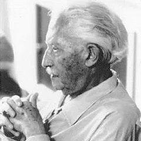
Erik Erikson
1902–1994 · German-American · Developmental · your lead lens
Context
A psychoanalyst trained under Anna Freud who reworked Freud's ideas into a social, lifelong model of development in Childhood and Society (1950).
Big idea
Development runs across the whole lifespan, in eight psychosocial stages.
Each stage is a crisis between two outcomes. Resolve it well and you gain a lasting strength, which he called a virtue.
The drivers are social and relational, not sexual. That is his break from Freud.
The early stages
Trust vs Mistrust, 0 to 1. Virtue: hope.
Autonomy vs Shame/Doubt, 1 to 3. Virtue: will. Your toddlers are here.
Initiative vs Guilt, 3 to 6. Virtue: purpose. The next stage along.
Industry vs Inferiority, 6 to 12. Virtue: competence.
What it looks like. The child asserts independence ("me do it") and tests limits.
How it resolves. Supported, they gain will and confidence. Over-controlled or shamed, they feel doubt.
Key terms to use
psychosocial stage, crisis, Autonomy vs Shame/Doubt, will, autonomy, shame/doubt.
Criticisms & legacy
Descriptive rather than explanatory. Strong on what happens, weak on how and why.
Hard to operationalise and test.
Loose age bands.
Reflects mid-20th-century Western assumptions.
Legacy. Still widely used in developmental and counselling practice.
A1 PSY1080
Your primary lens. These are toddlers, 1 to 3, so you are looking at Autonomy vs Shame/Doubt.
What to spot. A child insisting on doing something alone, resisting help, testing a limit, or being supported to try.
How to write it. Name one moment, say how the adult supports autonomy or risks inducing shame, then evaluate against modern self-regulation evidence.
Sprouts · Erikson's 8 Stages of Psychosocial Development
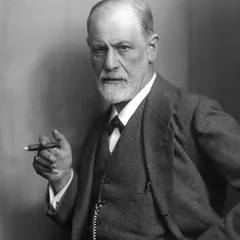
Sigmund Freud
1856–1939 · Austrian · Psychodynamic
Context
A Viennese neurologist who founded psychoanalysis, built from clinical case studies of adult patients.
Big idea
Much of behaviour is driven by the unconscious.
The mind has three parts: the id (instinctive drives), the ego (reality) and the superego (internalised conscience).
Personality forms through five psychosexual stages.
Unresolved conflict at a stage leads to fixation.
Why it fits early childhood
The superego is how children internalise rules and learn to hold back impulses out of respect for others, a process an adult can actively support.
Largely unfalsifiable (Popper). It can explain any outcome after the fact.
Biased, small samples and weak empirical support (Eysenck; Grünbaum).
Legacy. Still culturally enormous, and the origin of talking therapy.
A1 PSY1080
Your second lens.
What to spot. "Are you being gentle?" and "He doesn't want a hug" show the teacher building the superego and impulse control.
How to use it. Best as the theory you then critically evaluate.
Khan Academy · Freud's Psychosexual Development
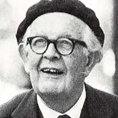
Jean Piaget
1896–1980 · Swiss · Cognitive development
Context
A Swiss psychologist who worked out how children think by observing them closely, including his own children.
Big idea
Children are active builders of knowledge, not passive receivers.
They move through four universal stages: sensorimotor, preoperational, concrete operational, formal operational.
They think using schemas, mental templates for how things work.
Schemas change by assimilation (fit the new thing into the old schema) and accommodation (change the schema to fit).
The four stages
Sensorimotor, 0 to 2. Learning through senses and action. The big achievement is object permanence.
Preoperational, 2 to 7. Symbols and language arrive, but thinking is egocentric and conservation is missing. Your toddlers are here, or just entering it.
Concrete operational, 7 to 11. Logical about real, concrete things. Conservation is grasped.
Formal operational, 11 and up. Abstract and hypothetical reasoning.
Key study / evidence
Object permanence. Whether a hidden object still exists for the child.
Conservation. Whether amount stays the same when the shape of the container changes.
The three mountains task. Whether the child can take another person's viewpoint.
Each one shows predictable errors at predictable ages, for example egocentrism in the preoperational stage, roughly 2 to 7.
An American linguist whose 1959 demolition of Skinner's book on language is often treated as the moment behaviourism lost the argument about the mind.
Big idea
Children learn language too fast, from input that is too thin and too messy, for imitation and reward to explain it. That argument is called the poverty of the stimulus.
So the capacity must be partly built in. He proposed a Language Acquisition Device, an innate mechanism for working out grammar.
Underneath every human language sits the same universal grammar, which is why the learning job is possible at all.
This was aimed squarely at Skinner, who had treated language as a habit built from reinforcement.
Key study / evidence
Children produce sentences they have never heard, so they cannot simply be copying.
They make systematic "virtuous errors" such as "goed" and "foots". Getting it wrong this way proves they are applying a rule, not repeating what adults say.
Language milestones arrive in a similar sequence across cultures, whatever the language.
Key terms to use
poverty of the stimulus, Language Acquisition Device (LAD), universal grammar, nativism, virtuous errors.
Criticisms & legacy
The LAD is a hypothetical construct. No one has found it in the brain.
It ignores social interaction. Input matters more than Chomsky allowed, which is Bruner's point with the Language Acquisition Support System, the LASS.
Usage-based theorists argue ordinary general learning can produce grammar with no innate universal grammar needed.
Legacy. He put the mind back at the centre of the study of language.
A1 PSY1080
Use only if the clip shows real vocalisation or word combination.
Where it earns marks. He is the cleanest nature position you can set against Skinner's nurture one, so he is worth more to you as an evaluation contrast than as a description.
BBC Radio 4 · Noam Chomsky on Language Acquisition
UB
Urie Bronfenbrenner
1917–2005 · Russian-American · Ecological systems
Context
A developmental psychologist who argued that studying children in laboratories tells you mostly about children in laboratories, and who co-founded Head Start.
Big idea
A child develops inside nested layers of environment, like rings around them.
Microsystem. What touches the child directly: family, the creche room, friends.
Mesosystem. How those direct settings talk to each other, for example parents and the nursery.
Exosystem. Settings the child is never in but is affected by, such as a parent's workplace or hours.
Macrosystem. The culture, laws, wealth and assumptions around all of it.
Chronosystem. Time, and what changes across a childhood or a generation.
Very hard to test. It describes everything and so predicts little.
Light on biology and on the child's own temperament, which he later tried to fix by renaming it the bioecological model.
Legacy. It shaped Head Start and the way policy now thinks about child poverty.
A1 PSY1080
You cannot observe his layers in a ten-minute clip, so do not try to apply him.
Where it earns marks. Use him in one sentence to flag what the clip cannot show you, which is exactly the kind of limitation the top band rewards.
Sprouts · Bronfenbrenner's Ecological Systems
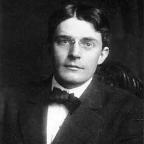
John B. Watson
1878–1958 · American · Ethics case · behaviourism
Context
Founded behaviourism, arguing psychology should study only observable behaviour, not the mind.
Big idea
All behaviour is learned through conditioning. The mind is a black box you do not need to open.
Famous for the claim that, given a dozen healthy infants, he could shape any of them into any kind of specialist.
Key study
"Little Albert", 1920, with Rosalie Rayner.
An 11-month-old was taught to fear a white rat by pairing it with a loud noise behind his head.
The fear then generalised to other furry objects, including a rabbit and a fur coat.
Key terms to use
behaviourism, conditioned emotional response, stimulus generalisation, tabula rasa.
Criticisms & legacy (ethics)
A textbook ethics breach on four counts at once.
No meaningful informed consent.
Deliberate distress caused to an infant.
No debriefing, and the child was never de-conditioned.
Legacy. Drove later protections for participants.
A1 PSY1081
A classic case for your ethics review.
The four principles to name. Consent, protection from harm, debriefing, right to withdraw.
Stanley Milgram
1933–1984 · American · Ethics case · obedience
Context
A social psychologist prompted by the post-war question of why ordinary people obey harmful orders.
Big idea & key study
The obedience studies, 1961 to 1963.
An authority figure told participants to deliver what they believed were escalating, dangerous electric shocks to a "learner".
About 65% continued all the way to the maximum 450 volts, despite hearing clear distress.
The point. Ordinary people obey authority far further than anyone predicted.
Key terms to use
obedience to authority, agentic state, legitimate authority, deception, debriefing.
Criticisms & legacy (ethics)
Heavy deception. Participants did not know the shocks were fake.
Real psychological harm at the time.
An unclear right to withdraw. The scripted prods pressured people to continue.
Legacy. A landmark for social psychology, and a major driver of ethics reform.
A1 PSY1081
A key ethics case.
The three principles to name. Deception, harm, and the right to withdraw.
Philip Zimbardo
1933–2024 · American · Ethics case · roles
Context
A social psychologist. The study ran at Stanford in 1971.
Big idea & key study
The Stanford Prison Experiment. Students were randomly assigned as guards or prisoners in a mock prison.
Guards became abusive and prisoners distressed so quickly that the planned two-week study was stopped after six days.
The claim.Situational forces, not just personality, drive behaviour.
Key terms to use
deindividuation, situational attribution, social roles, the power of the situation.
Criticisms & legacy (ethics)
Psychological harm, with no clear route for participants to withdraw.
Zimbardo's conflicted dual role as both researcher and prison superintendent.
Later evidence that the guards were coached on how to behave, which undermines the findings themselves.
Legacy. Still a defining teaching case, now as much for the flaws as the result.
A1 PSY1081
A key ethics case.
The three principles to name. Protection from harm, lack of safeguards, and researcher role or conflict of interest.
Check yourself
If you can answer these without looking at the cards, you know enough to write the essay.
What is the difference between assimilation and accommodation, and what drives the switch between them?
How does Vygotsky's view of the child differ fundamentally from Piaget's?
Name the three (or four) attachment types from the Strange Situation and what predicts a secure one.
Which Eriksonian crisis defines toddlerhood (1–3), and what are its two outcomes?
What is the "poverty of the stimulus" argument, and whose theory does it attack?
Give one reason Freud's theory is hard to defend scientifically.
For any one theory above, state a specific criticism and the evidence behind it.
Picture credits (9)
Every portrait here is in the public domain or under a free Creative Commons licence, taken from Wikimedia Commons. Author and licence are listed for each, as those licences require. People with no freely licensed photograph keep their initials instead.
Albert Bandura · bandura@stanford.edu · CC BY-SA 4.0 · source
Noam Chomsky · Σ, retouched by Wugapodes and Jonnmann · CC BY-SA 4.0 · source
Erik Erikson · Unknown authorUnknown author · Public domain · source
Sigmund Freud · Max Halberstadt · Public domain · source
Stanley Milgram · Unknown authorUnknown author · Public domain · source
Jean Piaget · Unidentified (Ensian published by University of Michigan) · Public domain · source
Lev Vygotsky · Unknown authorUnknown author · Public domain · source
John B. Watson · Unknown (pre-1923 photo) Watson, per the link in the source, left John · Public domain · source
Philip Zimbardo · Celina Strzelecka · CC BY-SA 4.0 · source
Using names well in an essayNaming a theorist is description; the marks are in application and evaluation. State who, state their idea in a line, tie it to evidence or an observation, then weigh it against a criticism or a rival. Confirm exact works and dates in the DCU Library before you cite.
Learn the content · overview
Founders & Schools
historythe main approachesexam material
How to use this
What this is. The background for "What is psychology?": who got it started, and the big approaches, the schools of thought that answer the same questions in different ways.
Why bother. Not assignment-critical, but core module and exam content.
The one thing to learn here. The comparison table at the bottom.
This page is the summary, deliberately. One or two lines each. For the full life story of any of these people, go to Behind the Theory; for the theory in assignment-ready form, go to Key People.
The founders
how the science began
Wilhelm Wundt (1832–1920)
German; the "father of experimental psychology." Opened the first psychology laboratory (Leipzig, 1879, the usual marker for psychology becoming a science) and used controlled introspection; his approach was later formalised by his student Titchener as structuralism.
William James (1842–1910)
American; wrote Principles of Psychology (1890). Founded functionalism, asking what consciousness is for (how it helps us adapt) rather than what it is made of.
Ivan Pavlov (1849–1936)
Russian physiologist. Discovered classical conditioning (dogs salivating to a bell paired with food), learning by association, the groundwork for behaviourism.
John B. Watson (1878–1958)
American; founded behaviourism, arguing psychology should study only observable behaviour. The "Little Albert" study is in Key People as an ethics case.
B.F. Skinner (1904–1990)
American; radical behaviourism. Developed operant conditioning, where behaviour is shaped by consequences (reinforcement and punishment), using the "Skinner box."
Sigmund Freud (1856–1939)
Austrian; founded psychoanalysis and the psychodynamic approach (the unconscious; id / ego / superego). Full card in Key People.
The major approaches compared
Approach
Key figures
Core claim
Typical methods
Watch for
Structuralism
Wundt, Titchener
The mind is built from basic elements of conscious experience.
Introspection under lab conditions
Introspection is subjective and unreliable.
Functionalism
James
Study what mental processes are for, how they help us adapt.
Observation, broad enquiry
Too broad and vague to test cleanly.
Psychodynamic
Freud, Erikson, Jung
Behaviour is driven by the unconscious and early experience.
Case studies, clinical work
Largely unfalsifiable; biased samples.
Behaviourist
Pavlov, Watson, Skinner
Only observable behaviour counts; behaviour is learned.
Controlled (often animal) experiments
Ignores the mind, biology and cognition.
Humanistic
Rogers, Maslow
People are free and growth-oriented, striving to self-actualise.
Self-report, therapy, case study
Hard to test scientifically; optimistic.
Cognitive
Neisser, Broadbent
The mind is an information processor (attention, memory, thinking).
Lab experiments, computer models
Can be reductionist; lab tasks artificial.
Biological
Sperry; evolutionary: Buss
Behaviour is explained by genes, brain, neurochemistry and evolution.
Brain imaging, twin and gene studies
Reductionist; can understate environment.
These are different "levels of explanation" for the same behaviour. A strong exam answer uses more than one, and weighs them against each other.
Learn the content · study aid
Comparison Tables
at a glancefor both A1s
How to use this
The side-by-side view, for revision and for planning your essays: the developmental theories and attachment theorists for the PSY1080 essay, and the classic ethics cases for the PSY1081 review. Learn the differences, not just each theory on its own, that contrast is where the marks are.
The big debates
Every developmental theory takes a position on these. Naming the debate a theory sits in is an easy way to evaluate it.
Debate
The question
Who sits where
Nature vs nurture
Is development driven by biology/genes, or environment/experience?
Must some things be learned in a fixed window, or just more easily?
Critical: Bowlby, Chomsky (strong form). Sensitive: most modern research.
Developmental theories at a glance A1 PSY1080
Theory · figure
Focus
Key concept
Mechanism / stages
Watch for
Psychosocial · Erikson
Social-emotional growth across the lifespan
Crisis, e.g. Autonomy vs Shame/Doubt (1–3, the toddler stage)
8 stages; resolved well with social support
Descriptive, hard to test
Psychodynamic · Freud
Drives and impulse control
id / ego / superego
5 psychosexual stages; fixation
Unfalsifiable; biased samples
Cognitive · Piaget
How thinking develops
Schemas, object permanence
4 fixed stages; assimilation / accommodation
Underestimated children; downplays the social
Sociocultural · Vygotsky
Learning through other people
ZPD, scaffolding
Guided interaction, then internalisation
Vague; underplays biology
Attachment · Bowlby & Ainsworth
The caregiver bond
Secure base, internal working model
Monotropy; Strange Situation types
Monotropy overstated; cultural bias
Social learning · Bandura
Learning by watching others
Modelling, vicarious reinforcement
Attention → retention → reproduction → motivation
Lab aggression may not generalise
For A1 (toddlers 1–3): build on a cognitive lens (Piaget) plus a social-emotional lens (Erikson's Autonomy vs Shame/Doubt, or Bowlby/Ainsworth attachment), then critically evaluate against Freud or modern self-regulation evidence. Vygotsky and Bandura are extras if the clip shows scaffolding or imitation.
Attachment theorists compared
Theorist
Contribution
Method
Key finding
Watch for
Bowlby
Attachment theory, the why
Theory + the 44 Thieves study
Attachment is evolved; monotropy; internal working model
No informed consent; deliberate harm; no debrief; never de-conditioned
Protection from harm; consent
Obedience Milgram, 1961–63
Participants believed they gave dangerous shocks on orders
Deception; psychological harm; pressured not to withdraw
Right to withdraw; deception; debriefing
Stanford Prison Zimbardo, 1971
Mock guards became abusive; stopped after 6 days
Harm; no safeguards; researcher conflict of interest
Protection from harm; researcher responsibility
Harlow's monkeys 1950s–60s
Maternal deprivation in infant primates
Lasting animal harm
Animal welfare (the 3Rs)
In your 700-word review, map each breach to the formal principles in the PSI and BPS codes (respect, competence, responsibility, integrity), and say what a modern ethics committee would require instead.
Everything due, both modules
Deadlines
live countdownPSY1080 + PSY1081
How to use this
Every assignment across both modules, sorted by what is due next, with the days remaining counted from today. Anything in red is within three weeks. Always confirm dates against Loop, as they can change.
The whole module on one page
Mind Map
click any boxPSY1080
How to use this
Read it left to right. The module sits on the left, its six big areas branch off it, and the detail hangs off each of those.
Click any box. A short explanation of that piece, and why it matters for your assignment, appears underneath the map.
Use it as a checklist. If you click a box and cannot say anything about it yourself, that is the bit to go and revise.
Click a box in the map to see what it covers.
Every term you need, defined plainly
Glossary & Flashcards
search or test yourselfPSY1080
How to use this
Glossary tab. Type in the search box to find a term fast, or filter by topic with the grey buttons.
Flashcards tab. You get the term, you say the definition out loud, then you click the card to check. Shuffle before each round.
Use the terms in the essay. Markers reward correct technical language, so lift these exact words into your writing.
Learn the content · Part 1 book
Introduction & Study Skills Book
7 chaptershistory of psychology + how to study
What this is
The module's opening book, distilled. Chapter 2 is the real psychology: the history and the schools of thought, which gets examined. Chapters 3 to 7 are the study-skills thread that runs through the whole module.
Chapter 2 is the one to learn properly. Know each school, its founder, its central claim and its fatal weakness. That is exactly the shape of the question you will be asked.
The study-skills chapters are tools, not reading. They are written here as things to do, not as advice to admire.
Chapter
1. Course Introduction
Short chapter, but it tells you what the module is actually for.
The module is a foundation, not a survey. It gives an overview of the six areas you meet again in later modules: biological, cognitive, developmental, organisational, personality and social.
Study skills are treated as content, not padding. The book's own line is that learning to do psychology matters as much as learning about psychology. That is why the skills chapters are interleaved with the psychology ones, placed where you will need them for the next assignment.
It is built for distance learners. The orientation videos are two graduates of online programmes talking about when, where and how to study off-campus. If you are fitting this around work, that framing is the point.
Quiz: test yourself (5 questions)
1. What does the book say this module is?
A foundation, not a survey. It introduces the six areas you return to in later modules: biological, cognitive, developmental, organisational, personality and social.
2. Why are the study-skills chapters interleaved with the psychology ones?
They are treated as content, not padding, and sit exactly where the next assignment will demand them.
3. Complete the book's own line: learning to ___ psychology matters as much as learning ___ psychology.
Learning to DO psychology matters as much as learning ABOUT it. That sentence is the reason the skills chapters exist at all.
4. Who are the orientation videos aimed at?
Two graduates of online programmes talking about when, where and how to study off campus. If you are fitting this around work, that framing is the point.
5. Which six areas does the module give you an overview of?
Biological, cognitive, developmental, organisational, personality and social. Each one becomes a module of its own later.
Score: 0 correct, 0 of 5 answered
2. A Short History of Psychology
Where psychology came from, and why the same handful of arguments keep coming back in every module you will ever take.
By the end you canoutline what medicine, philosophy and physics each contributed; define monism, dualism, determinism and empiricism; explain what Wundt actually did in 1879; and distinguish structuralism, functionalism, Gestalt, behaviourism, psychoanalysis and humanistic psychology, with the standard criticism of each.
2.1 Where it came from
It is young. About 120 years old as a discipline, against centuries for physics and biology.
The word. Coined in 16th century Germany from the Greek psyche (soul or mind) and logos (study). The original meaning has stuck: the systematic study of mind and behaviour by scientific principles.
Three parents. Medicine, philosophy, and the experimental methods of the physical sciences.
Before about 500 BC, illness in the Western world was explained by priests, in terms of divine causes.
Hippocrates (460 to 377 BC) argued instead that health, illness and healing are natural processes, driven by the balance of four bodily humours: blood, black bile, yellow bile and phlegm.
Galen (130 to 200 AD) extended this to temperament. Too much black bile gives melancholia; too much phlegm makes you phlegmatic.
The theory is wrong, but it survives in our language, as in "a sense of humour".
Why it still counts. It established the idea that bodily processes shape thought, emotion and action.
2.2 The philosophical arguments underneath
Monism. Reality has a single nature. Two versions: idealism says all reality exists in the mind as ideas, so things are real only to whoever is experiencing them; materialism says reality is physical matter, and therefore everything obeys the laws of physics and mechanics. Materialism gives the mechanistic view of human nature, which you can still see in any theory that explains thought or dreaming through bodily mechanisms.
Dualism. Reality has two independent substances, mind and matter. Aristotle (384 to 322 BC) held that humans have material bodies but rational souls, so are governed by two systems. Descartes (1596 to 1650) is the clearest proponent: "I think therefore I am". He separated the free will of the rational soul from the emotions and passions of the material body, and saw the relationship between them as an ongoing struggle for control.
Why it still matters. The mind-brain debate, whether the mind is a useful abstraction separate from physical tissue, is the direct descendant. It shows up in every part of this module.
Determinism. If physical forces cause changes in physical objects, then to understand a thing's present state you examine the events that caused it. Determinism is a core assumption of science and of most psychology: to understand someone's feelings and actions, look at the prior experiences that shaped them.
Empiricism. Knowledge comes through the senses. Roger Bacon (1214 to 1292) argued observation is essential to science; John Locke (1632 to 1704) argued experience is the basis of all knowledge, and that the mind at birth is a tabula rasa, a blank slate. Locke is the ancestor of every nature-versus-nurture argument in the module. The contrast is with medieval scholars, who expected to reach truth by reasoning, revelation or inspiration.
2.3 Measurement arrives from physics
Psychophysiology.Johannes Mueller founded the first physiology institute in Berlin. His student Hermann von Helmholtz (1821 to 1894) measured how fast nerve impulses travel, charting distances along frog nerve fibres and arriving at about 90 feet per second. He established reaction time, the interval between stimulus and response, as something measurable.
Psychophysics. The study of the relationship between physical stimuli and the sensations they produce. Gustav Fechner (1801 to 1889) argued that if matter and mind are related, research should examine exactly that link. He found that the smallest noticeable difference between two near-equal lines is about one-fiftieth of their length, whatever the length.
Weber's law.Ernst Weber (1795 to 1878) worked on judgements of hand-held weights and showed that whether a change is noticeable depends on the size of the original stimulus. Lose five pounds from ninety and you notice; lose five from three hundred and you do not.
Why this mattered. Fechner showed that sensation and reaction could be studied with objective instruments, without relying on introspection at all.
2.4 1879 and the first laboratory
Until the late nineteenth century, psychological research happened inside medicine, physiology and physics. 1879 is the conventional birth date of modern psychology because Wilhelm Wundt (1832 to 1920), a German professor of philosophy, founded the first psychology laboratory at Leipzig. He was probably the first person to call himself a psychologist.
What the laboratory was. A group of people using experimental techniques to investigate thought, consciousness and emotion in their own right, rather than as a branch of another discipline.
His method was introspection: self-consciously examining your own thoughts and sensations to identify their sequence and components. To understand "wetness" he would have someone put their hands in water and describe the components, perhaps smoothness and coolness.
The ambition. To identify the basic components of complex conscious experience, as chemistry identifies elements.
The honest criticism. This was not idle speculation, but relying on introspection does trace back to the medieval habit of reaching truth by reasoning and revelation rather than observation.
2.5 The schools of thought
School
Key figures
Central claim
Main criticism
Structuralism
Wundt, Titchener
Analyse the content of consciousness into its elementary sensations, the building blocks of experience.
Reductionistic (complex experience cut down to simple sensations), elemental (combining parts rather than studying the whole), and mentalistic (only studies what people can verbalise, so excludes young children and anyone who cannot introspect).
Functionalism
Peirce, Dewey, James
Ask what a psychological process is for. Thoughts, emotions and actions must serve a function or they would have been lost. Smiling must do something, or it would vary across cultures.
Woolly ideas (nobody could define what a function is), question-begging (what are functions for?), teleological arguments about what behaviour ought to be for, and no account of inner conscious experience.
Gestalt
Wertheimer, Koffka, Koehler
Stimuli close in time or space create impressions of connection. Still photographs shown fast are seen as motion, not frames. The whole is different from the sum of its parts.
Grew out of doubts about structuralism rather than a full alternative theory; its lasting contribution is in perception and in therapy.
Behaviourism
Watson, Skinner
Only observable behaviour can be studied scientifically. Mental events are tacit and cannot be inspected, so psychology should explain human behaviour the way it explains a rat's.
A highly mechanistic view of people. Many find that not only unappealing but unsatisfactory, because thoughts, aspirations and emotions get described in terms that no longer make sense to the person having them.
Psychoanalysis
Freud
Behaviour is driven by unobservable biological drives and instincts. Civilised life frustrates those drives; the conflict usually surfaces in dreams and fantasies, but sometimes as physical symptoms and abnormal behaviour. Therapy gives insight into the original conflict.
Very difficult to examine in any systematic, reliable way.
Humanistic
Maslow, Rogers
People are naturally motivated to be productive and helpful, and need guidance only when circumstances have blocked that. Maslow's hierarchy runs from physical survival up to self-actualisation, becoming all you can be. Rogers built therapy on a growth model, not a medical one: the client is the expert on their own needs and the therapist provides acceptance and structured feedback.
Vague and hard to test. Note Maslow is essentially functionalist, because he is concerned with the purposes and goals of behaviour.
The dividing line to remember. Structuralism, functionalism, Gestalt, psychoanalysis and humanistic psychology are all forms of mentalism: they study mental events, which can only be inferred, never directly observed. Behaviourism is the reaction against all of them.
The two traditions. An academic tradition concerned with scientific investigation, and a therapeutic tradition concerned with helping people solve their problems. Psychoanalysis and humanistic psychology belong to the second.
Structuralism versus functionalism in one line. A structuralist asks "what are the components of that behaviour?" A functionalist asks "what is the purpose of that behaviour?"
SAQ: Define monism and dualism
Monism holds that the universe consists of a single substance. Dualism holds that it consists of two independent substances, mind and matter.
SAQ: Define behaviourism, and say what it refuses to study
Behaviourism holds that observable, measurable behaviour is the only material suitable for scientific psychological investigation. It rejects the study of the unconscious and of internal states of thought and feeling.
Quiz: chapter 2 (8 questions)
1. Who argued that illness is a natural process rather than a divine punishment?
Hippocrates (460 to 377 BC). Galen later extended his humour theory to temperament.
2. The view that reality consists of a single substance is:
Monism. Idealism and materialism are its two versions. Dualism says mind and matter are separate substances.
3. "The mind at birth is a blank slate" is associated with:
Locke's tabula rasa. Bacon argued observation was essential to science but did not give us the blank slate.
4. Weber's law says that whether a change is noticeable depends on:
Five pounds off ninety is noticeable; five pounds off three hundred is not.
5. What makes 1879 the conventional birth date of modern psychology?
Wundt's laboratory at Leipzig. James published Principles of Psychology in 1890, considered the first psychology textbook.
6. "The whole is different from the sum of its parts" belongs to:
Gestalt, from the German for form, shape or pattern.
7. Which criticism was NOT made of structuralism?
Teleology was the charge against functionalism, for appealing to goals and to what behaviour ought to be for.
8. Which school is NOT a form of mentalism?
Behaviourism was the reaction against mentalism, on the grounds that unobservable processes cannot be studied scientifically.
3. Getting Organised: Learning Skills
The foundation chapter of the study-skills thread: motivation, competencies, place, time, and what online distance study actually involves.
3.1 What actually predicts success
The book names three factors from the research, and stresses that all three are within your control and can be changed:
The desire to learn. Your own reasons: career development, interest in the subject for its own sake, self-development, or broadening your horizons. The book's advice is to write them down at the start and treat them as a checklist at the end. The clearer and more specific your objectives, the more likely you are to succeed, and on the days when you are struggling they are what keeps you going.
Your image of yourself as a learner. The exercise is to list ten things you have learned since leaving school, from cooking to driving to raising children. The point is that you have been learning continuously; what third level adds is a toolkit for doing it formally and systematically.
Managing the key study competencies. The practical skills in chapters 4 to 7.
3.2 Place, time and tools
A study place. Somewhere quiet, with your tools to hand, and somewhere your materials can be stored safely so you are not hunting for them.
Time. Estimate how much you need, decide how you will free it up, and build a schedule for the module and for the year, not just for the week.
Active learning. The recurring theme of the entire book: reading and listening passively achieves nothing. The activities and self-assessment questions in the Loop texts exist to force you to do something with the material.
Computer skills. The module assumes you can produce documents in Word, build spreadsheets and charts in Excel, and use the internet and email. It teaches good practice for specific tasks but not the software itself.
Worth knowingThis chapter is pitched at someone new to study. If you already run your own schedule and meet deadlines for a living, read it once for the vocabulary (active learning, study competencies) and spend your time on chapter 4 and chapter 5 instead, which contain the named models that actually get examined.
Quiz: test yourself (5 questions)
1. The book names three factors that predict success. What do they have in common?
All three are within your control. That is the chapter's whole point: desire to learn, your self-image as a learner, and managing the study competencies.
2. What does the book advise you to do with your reasons for studying?
Write them down at the start. The clearer and more specific they are, the more likely you are to succeed, and on bad days they are what keeps you going.
3. What is the point of the exercise listing ten things you have learned since leaving school?
It targets your image of yourself as a learner. Cooking, driving, raising children: you never stopped learning, you are just now doing it systematically.
4. What is the recurring theme of the whole book?
Active learning. Reading and listening passively achieves nothing, which is why the Loop texts are full of activities and self-assessment questions.
5. The module assumes you can already do which of these?
It teaches good practice for specific tasks but not the software itself. SPSS belongs to PSY1081, not here.
Score: 0 correct, 0 of 5 answered
4. Approaches to Learning
Three named models: Kolb, Honey and Mumford, and Gardner. These are the bits of the study-skills chapters most likely to appear in a question.
4.1 The Kolb learning cycle
Kolb (1984) sets out four stages, and the cycle can be entered at any point:
Having an experience.
Reflecting on the experience.
Coming to a conclusion about it.
Acting on that conclusion.
The book's example is worth keeping because it is memorable.
A student from Taiwan watches an American friend make an apple pie and nick the edge with a knife.
He asks why. The friend does not know, only that his mother did it.
He concludes it is decoration, and leaves it out of his own pie.
His pie burns at the edge and oozes. Now he knows what the nicking was for.
He has been round the cycle twice, and it shows two things: we learn well from our mistakes, and we will not implement something unless we understand the reason for it.
4.2 Honey and Mumford's four learning styles
Honey and Mumford (1992) attached a personality to each stage of Kolb's cycle.
Style
Kolb stage
Strengths
Weaknesses
Activist
Having the experience
Dives straight in, tries new things, sociable and extroverted, learns through discussion and hands-on attempts.
Poor choices from lack of forethought, flits between things, weak on the boring routine parts.
Reflector
Reflecting
Cautious and thorough, excellent at collecting information.
Quiet and slow to contribute, slow to decide or finish, may struggle to get assignments in on time.
Theorist
Concluding
Strong at analysis and synthesis, links ideas into a rational logical pattern.
Perfectionist, rigid, intolerant of disagreement, impatient with emotion, too analytical and not intuitive enough.
Pragmatist
Acting
Practical problem-solver, takes ideas and methods and tests them in real life.
Impatient with theory that has no obvious application.
The point is not to be labelled but to borrow from the others. A theorist improves by deliberately hearing people out before dismissing them; a reflector improves by setting hard deadlines for each stage.
4.3 Gardner's multiple intelligences
Gardner (1983, 1993, 2000) argued that the traditional focus on mathematical and linguistic ability is far too narrow. He identified eight intelligences. Everyone has all of them to some degree, but most people are stronger in some.
Linguistic. Interpreting written and spoken word, sensitive to words and meaning, good at languages.
Naturalistic. In tune with the natural world, plants, animals, environmental issues.
Interpersonal. Good with people, effective communicator, sensitive to other viewpoints.
Intrapersonal. Self-aware, reflective, in control of your own emotions.
The practical use: when you are stuck on a concept, come at it through a different intelligence. Draw it, explain it out loud, find a physical analogy, build a diagram. That is the same instinct behind every visual aid on this site.
4.4 Nutrition, exercise and sleep
Diet. Variety, plenty of fruit and vegetables, oily fish for brain function. Avoid fad diets, too much fat, sugar and processed food. Sugar gives a short lift then a slump.
Caffeine. Too much makes you jittery and unable to concentrate, causes headaches, and even small amounts disrupt sleep. The specific warning is against using coffee to write an assignment in the middle of the night.
Water. Dehydration makes your brain sluggish and causes headaches. Tea, coffee and alcohol all dehydrate you, so they do not count.
Timing. A heavy lunch makes the afternoon useless; eating right before bed stops you sleeping. Frequent lighter meals work better.
Exercise. About 30 minutes of medium-intensity activity a day. Endorphins lift mood and cut stress, and concentration and sleep quality both improve. Outdoor exercise doubles as thinking time when you are too close to your work.
Sleep. Most people need 6 to 8 hours, and under 6 is taken as harmful to health and performance. Working late into the night can wreck the following several days, and tiredness is usually a large part of feeling overwhelmed.
Quiz: chapter 4 (5 questions)
1. The four stages of the Kolb learning cycle are:
Experience, reflection, conclusion, action. The four styles are Honey and Mumford's labels for people who prefer each stage.
2. Which Honey and Mumford style collects lots of information but is slow to act on it?
Reflectors. They are cautious and thorough but may be slow to decide and to finish.
3. How many intelligences did Gardner identify?
Eight, against the traditional focus on just linguistic and mathematical ability.
4. The apple pie story illustrates which two lessons?
Mistakes teach well, and without underpinning knowledge we will not bother implementing something.
5. What is given as the minimum nightly sleep needed to function properly?
There are no hard figures, but 6 hours is generally taken as the minimum.
5. Gathering and Recording Information
The longest chapter, and the most immediately useful: listening, reading, the library, judging sources, note-taking, and plagiarism.
5.1 Active listening
Most people remember only a small percentage of what they hear. To retain it you must do something with it: write about it, discuss it, solve a problem with it. Passive listening, where you hear every word but your mind is not engaged, is useless for learning.
Motivate yourself before it starts. Decide what you want to know by the end.
Prepare. Read the materials in advance so you can follow.
Write key points, not everything. Writing is itself a mental process; trying to get every word down stops you understanding any of them. Note main points plus your own queries.
Listen critically. Ask how it fits the subject as a whole.
Listen hardest in the middle. Attention is naturally high at the start and at the summary, and drifts in between. Mentally divide a long session into 10 or 20 minute blocks and write a one-sentence summary at the end of each.
Do not let your prejudices filter it. We pay more attention to what fits our existing views. Hear the whole argument before concluding.
5.2 SQ3R
The least efficient way to read a textbook is page one to the end. SQ3R, developed by Francis Robinson, is the alternative:
S, Survey. Skim the whole thing first: title, table of contents and index for your specific topic, date of publication for currency, introductory and summary paragraphs, the abstract if it is a journal article, tables and figures with their captions, and all the headings.
Q, Question. The crucial stage. On a separate sheet, write down every question you want answered. Turning the headings into questions is a shortcut. This is what personalises the text.
R, Read. Read the introduction carefully, skim the less important points, add to your question list as you go, note difficult words to check later, and keep asking what the author's main purpose is.
R, Review. Without looking, recall each section. What was the main purpose, the chief points, the overall plan?
R, Recite. Tell your answers to someone, or write a synopsis. Explaining something in your own words is one of the best ways to understand it.
Speed is worth working on, but maximum speed is not the goal.
Phrase reading. Reading in thought units rather than word by word, so your eye stops fewer times per line.
Several quick passes beat one slow painstaking one, because the ideas get reinforced each time.
Skimming gets the gist. Scanning hunts for one specific name, phrase or figure.
5.3 Judging a source
Who owns the site. Look for known organisations, publishers, universities, government departments. If it is an individual, check their qualifications and whether they cite respected sources. Commercial sites may be skewed towards their own products.
The web address. .ac.uk for UK universities, .edu for American educational bodies, gov for government, .com commercial, .org usually non-profit.
Wikipedia. The book's position: anyone can edit it, so you cannot be certain, but it points you in the right direction and the references at the bottom of the page are useful.
Look and feel. Clear navigation and easy-to-find ownership information suggest a professional source. Be wary of garish, homemade pages where you cannot tell who is responsible.
Currency. If no date is given, verify the content elsewhere, because research moves quickly.
Newspapers and magazines. Good for topical issues and public opinion, but often written by laypeople and slanted to the publication.
5.4 Taking notes
Five reasons the book gives for taking notes: they hold your concentration; they clarify your understanding and start the digestion process; they aid memory once the book goes back to the library; they organise and frame your learning across several sources; and they are your revision tool, written in your own words.
Layout rules. Label every set with date and title, or with author, title, date and page references. Write legibly. Leave plenty of space and good margins for later additions. Use headings, colour, and your own consistent shorthand. Use lists and short phrases, never whole paragraphs. Copy diagrams and figures accurately.
The test. Your notes must be notes, not a transcription of someone else's words.
Three methods:
Linear. Key points under headings, with lists and bullets. The trap is that it does not force you to restructure anything, so you drift into copying.
Mind maps. Topic in the centre, branches radiating out. Good for seeing relationships at a glance. Many students take linear notes first, then redraw them as a map to review.
Cornell. Split the page into two columns: a wide one on the right for notes, a narrow review column on the left for comments, summaries, queries and cross-references. A good way of imposing order on linear notes afterwards.
Annotating your own texts. Number the reasons in the margin, underline key points, write WHY or WHICH ONE beside things. It makes an anonymous printed text personal and therefore memorable. But remember those notes are separate from your main notes, so cross-reference them.
Reviewing. Set aside a fixed portion of weekly study time for it. Summarise each session in a few sentences at the end, reread that at the start of the next session, and do a wider condensing review every week or two.
Notes from the internet. Record author, URL, date written, page title and topic, site owner, and date accessed. Content vanishes or moves, so take a copy if you will need it, while checking it has not disappeared because it was discredited.
5.5 Copyright and plagiarism
Everything is copyright by default. The absence of a notice means nothing; all material is automatically protected.
Fair dealing. Copying for research or private study is not an infringement. The Irish Writers' Centre guideline quoted in the book is 5% for magazines and periodicals and 10% for books, and the copy must be for your own study only.
What plagiarism is. Claiming as your own any idea or information generated or written by someone else, whether you meant to or not.
The examples given: getting someone else to write it; putting your name to someone else's work, including bought or downloaded essays; making slight changes to another author's content, changing a few words or reordering the ideas; and copying sections from another student, a book, an article, a thesis or a website.
Accidental plagiarism is still plagiarism. It usually happens through sloppy note-taking, mixing an author's words with your own. It is hard to prove it was accidental, and institutions are not inclined to be tolerant. Detection software reports what percentage of your text matches other documents.
Cite whenever you use: another person's idea, opinion or theory; any fact, statistic, graph or drawing that is not common knowledge; a direct quotation; a paraphrase; or a summary of someone's content.
Fair use on top of citing. An assignment cannot be nothing but quotations, paraphrases and summaries, however well cited. You must form your own opinion and use the reading to support or challenge it.
Common knowledge. The rule of thumb: you do not need to cite a fact you could find in five or more different sources, or that people in the field would simply be expected to know.
For your assignmentsThe practical habit that prevents nearly all of this: write the source beside the point as you take the note, and mark any word-for-word text in quotation marks the moment you write it down. Nearly every accidental plagiarism case starts with a note that did not say where it came from.
Quiz: chapter 5 (6 questions)
1. SQ3R stands for:
Survey, Question, Read, Review, Recite, developed by Francis Robinson.
2. In which stage of SQ3R do you personalise the text?
Question. Writing down what you want answered is what turns reading into active learning.
3. During a long talk, when should you remind yourself to concentrate hardest?
The middle. Attention is naturally high at the start and when the speaker summarises.
4. Which note-taking method splits the page into a wide notes column and a narrow review column?
The Cornell method, with comments, summaries, queries and cross-references in the left column.
5. Under the fair dealing guideline quoted, roughly how much of a book may you copy for private study?
10% for books, 5% for magazines and periodicals, and only for your own study or research.
6. Which of these is NOT plagiarism?
Common knowledge needs no citation. Paraphrasing, lightly rewording and reordering all do.
6. Preparing for Presentations
Designing and delivering a talk. The core idea is that a presentation is two-way communication, not an essay read aloud.
6.1 Content and audience
Research it like written work. Same sources, same breadth. You need background far beyond what you will say, because you must answer questions and speak with some authority.
Then filter hard. An essay contains detail so others can check or reproduce your work. A talk exists to communicate the main findings. Think of it as an introduction to your work, after which people can read the paper.
Pitch it low to start. The biggest risk is pitching too high: the audience has no time to mull anything over before you move on, so they lose the thread and stop listening. Begin basic so everyone shares a common understanding.
Speaker's notes. Never write out what you will say word for word, but do keep brief, clearly laid out notes with the points you want to expand and any anecdotes, so you can glance down without hunting.
6.2 Structure and slides
Three parts, and the old proverb the book quotes: tell them what you are going to tell them, tell them, then tell them what you told them.
Introduction. Greet them, smile, say who you are and the title. Speak slowly and loudly, and asking whether everyone can hear doubles as a way of gathering attention. Then give an overview of five or six main points, never more than ten.
Main body. One idea at a time, in a logical order, without bombarding them.
Conclusion. Summarise, show the main points again, state the conclusion you reached even if the results were inconclusive or flawed, and suggest further work.
Slide set. Title slide; overview; one slide per main point; a summing-up slide; recommendations; references and acknowledgements, including the source of every graphic.
Slide design. Bulleted lists, never blocks of text, with a maximum of five or six points per slide. Sans serif fonts such as Arial or Verdana read better on a big screen than Times New Roman. Font large enough to read from the back. Use bold and colour sparingly. Check contrast against coloured backgrounds, and avoid red with green, since red-green colour blindness is common.
Why not put everything on the slides. If the slides carry all your words you will read from them, and the audience will read rather than listen. Visuals aid communication; they must not replace it.
Charts above all. An audience cannot absorb lists of figures or complex verbal descriptions, but they will remember a trend line, a flow chart or a diagram of a process.
Handouts. Copies of the slides let people annotate as you talk; more detailed material is better given out at the end so it does not distract.
6.3 Delivering it
Practise, but do not learn a speech by rote. Rote delivery has the same deadening effect as reading aloud. Run through it to find your key phrases and to time it, early enough that you can still cut or add.
Take your time at the start. Arrange your notes, check the equipment, make eye contact and smile before the first word. Standing makes you feel more authoritative and lets you move.
Speak slowly, and vary pace and tone. Nerves speed people up, often accelerating towards the end as relief sets in. A monotone loses any audience. Let your voice reflect your interest in the subject.
Use pauses. Silence gives the audience time to digest and stops you accelerating. Have water to hand.
Eye contact and open body language. Move your gaze around the whole room. Avoid fiddling with pens, change or jewellery, and avoid folded arms, which reads as defensive.
Face the audience. Turning to the screen drops your volume dramatically from their side. Step back level with the screen and use a pointer.
If you lose your thread, do not panic. Breathe, take a sip, start again. Acknowledging nerves positively can break the ice rather than cost you marks.
Questions at the end. Politely defer interruptions, except quick clarifications or a warning that you cannot be heard. For a hard question, pause and think rather than rushing; admitting you are unsure beats bluffing and being caught.
Have a fallback. If the equipment fails, handouts of your slides keep the talk alive, and a flipchart will carry one important table or graph.
The practical versionNo presentation is assessed on PSY1080 or PSY1081, so treat this chapter as a reference you come back to rather than something to learn now. Three things are worth taking from it even so, because they apply to the online classes and to any viva: pitch low and build, never write out what you will say word for word, and put the trend in a chart rather than in a list of figures. If a presentation does appear in a later module, start at 6.2 for the structure and the slide rules.
Quiz: test yourself (5 questions)
1. What is the core idea of this chapter?
Two-way communication, not an essay read aloud. Everything else in the chapter follows from that.
2. What does the book name as the biggest risk when presenting?
Pitching too high. The audience has no time to mull anything over before you move on, so they lose the thread and stop listening. Begin basic.
3. How many main points should the overview give?
Five or six, and never more than ten. One idea at a time, in a logical order, without bombarding them.
4. Why should you not put everything on the slides?
Visuals aid communication, they must not replace it. If the slides carry all your words, you read and they read, and nobody is listening.
5. Which colour combination does the book tell you to avoid, and why?
Red with green. Red-green colour blindness is common, so that pairing makes your slide unreadable for part of the room.
Score: 0 correct, 0 of 5 answered
7. Learning in Groups
Online classes, discussion forums and study groups. Short chapter, with one argument running through it.
7.1 The argument
As a distance learner you can largely avoid group work, skipping online classes and posting the minimum in forums. The book acknowledges this openly, and then argues against it.
What you lose by opting out. Interaction stimulates thought, ideas and, the book stresses, enthusiasm. Other students and the teaching team bring experiences and perspectives you do not have.
Participate fully rather than as a passive bystander. That phrase is the chapter in one line.
The skills transfer. Communication, listening, contributing ideas and encouraging others are the same skills you already use in meetings, committees, community projects and organising anything with friends. You are not starting from nothing.
7.2 What makes a group work
A clear purpose that every member understands. It need not be ambitious or produce anything tangible; discussing a shared reading is a perfectly good purpose.
Knowing your own contribution. The book's exercise is to look back at groups you have been part of: what was the purpose, how did it operate, how well did it work, why were you there, and what did you specifically contribute.
Listening as much as speaking. The active listening rules from chapter 5 apply doubly in a two-way setting.
7.3 Online classes and forums
Prepare beforehand. An online class is worth far more if you have read the material and arrived with questions. This is the same point as active listening: decide what you want from it before it starts.
Contribute constructively in forums. Posting is part of the assessment picture in some modules, and in PSY1081 forum participation is an explicit requirement for Assignment 2.
Study groups. Informal groups of students give you a safe place to test an interpretation before you commit it to an assignment.
Group research. Where you work on a shared project, agree who does what at the start, and check with the teaching team what level of collaboration is acceptable so that shared work does not become collusion.
The practical versionYou do not need to become a joiner. Two things from this chapter are worth doing: show up to the online classes with two questions written down, and use one other student as a reader before you submit anything. Both are small, and both are what the chapter is actually asking for.
Quiz: test yourself (5 questions)
1. What is the chapter's argument in one line?
The book admits a distance learner can largely opt out of group work, then argues you should not.
2. What does the book say you lose by opting out?
Interaction, and with it other people's experiences and perspectives. The book particularly stresses enthusiasm.
3. Why does the book say you are not starting from nothing with group skills?
The skills transfer. Meetings, committees, community projects and organising anything with friends all use them already.
4. What makes a study group work, according to the chapter?
A clear, shared purpose. It need not be ambitious or produce anything tangible.
5. In PSY1081 specifically, forum participation is:
An explicit requirement for Assignment 2. Worth knowing before the window opens, not after.
Score: 0 correct, 0 of 5 answered
Learn the content · the people
Behind the Theory
46 liveswhere each idea came from
What this is
The life story behind each theory. Theories are easier to remember when you know who made them and what happened to them.
Each person gets the same five boxes. The hook, the life, where the theory came from, what they gave us, and the uncomfortable bit.
The uncomfortable bit is not gossip. Several of these people did things that would never be allowed now, and a few held views you should know about. Naming that is part of studying them properly, and it is the kind of thing that earns marks in an evaluation.
Key People is the other tab. That one gives you the theory to quote. This one gives you the person to remember it by.
Ordered by assignment, not by date. The people you need for A1 come first, then A2, then A3, then the background figures. Each profile carries a tag saying which assignment it serves. Switch to Chronological above the chips if you would rather read them in historical order.
One honest note. Almost everyone here is a man, and almost all are European or American. That is a fact about who was allowed into universities, not about who was capable. Mary Ainsworth's career was held back by rules that stopped universities employing the wives of staff.
Person
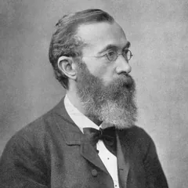
Wilhelm Wundt, 1832 to 1920
The man who decided psychology should have a room of its own.
His life. Born in Baden, in what is now Germany. A lonely only child in practice, since his older siblings were away. He trained as a medical doctor, not a philosopher, and he was not a success at it. He then worked for years as an assistant to the physicist and physiologist Hermann von Helmholtz, who was measuring how fast nerve signals travel.
Where the theory came from. Working for Helmholtz taught him one thing above all: mental events can be timed and measured. If you can measure a reaction time, you can measure a mind. So in 1879 at Leipzig he did the obvious next thing and set aside a room for studying the mind on purpose, with instruments. That room is why we date psychology to 1879.
What he gave us. The idea that psychology is an experimental science with its own laboratory, and a method, introspection under controlled conditions, for breaking conscious experience into parts. He also trained the first generation, including Titchener, who carried structuralism to America.
The uncomfortable bit. Half of his life's work gets ignored. He spent his last twenty years writing ten volumes on folk psychology, about language, myth and culture, arguing that higher mental life could only be studied through the society it grows in. Textbooks skip it, so Wundt is remembered as narrower than he was.
Where you meet him. Intro & Study Skills book, chapter 2. Founders & Schools.
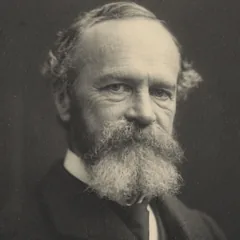
William James, 1842 to 1910
He wrote the first psychology textbook, and he nearly did not live to write it.
His life. Born into a wealthy, restless New York family. His brother was the novelist Henry James. He was pushed between painting, chemistry and medicine, qualified as a doctor, and never practised.
Where the theory came from. In his late twenties he collapsed into a severe depression and considered suicide. He felt he was a machine with no real choices. He pulled out of it partly by making a deliberate decision: his first act of free will would be to believe in free will. That is why his psychology is about what thinking is for, about choosing, attending and acting, rather than about pulling consciousness apart into pieces.
What he gave us.Functionalism: ask what a mental process is for, not what it is made of. The Principles of Psychology (1890), written over twelve years, still quoted for the "stream of consciousness" and for the idea that emotion follows from the bodily reaction.
The uncomfortable bit. He got bored of psychology. He called the Principles "a loathsome, distended, tumefied" mass, drifted into philosophy and the study of religious experience, and left the laboratory work to others.
Where you meet him. Intro & Study Skills chapter 2. Biological Bases chapter 3, on emotion. Social & Organisational chapter 2, on the self.
Sigmund Freud, 1856 to 1939
A neurologist who went looking for a physical cause, could not find one, and invented a mental one instead.
His life. Born in Moravia, raised in Vienna, the eldest of eight in a poor Jewish family that put everything into him. He trained in medicine and did hard laboratory science: papers on the nervous systems of fish, and an early enthusiastic paper on cocaine, which he recommended as a cure and which badly damaged a friend.
Where the theory came from. He could not make a living in research, so he took up private practice treating patients, mostly women, with paralysis, blindness and fits that had no physical cause. In 1885 he spent a year in Paris with the neurologist Charcot, who used hypnosis to make such symptoms appear and disappear. That was the hinge. If a symptom can be switched on and off by suggestion, the cause must be in the mind. Back in Vienna he dropped hypnosis for free association: say whatever comes into your head, and let the blockages show you where the trouble is.
What he gave us. The unconscious as an active force rather than a bin for forgotten things. Id, ego and superego. Defence mechanisms. The idea that childhood shapes adult personality. And the entire practice of talking therapy.
The uncomfortable bit. His patients repeatedly described childhood sexual abuse. He first believed them, then decided the memories were fantasies. Many now think he got that badly wrong and that it had real consequences. His theory is also nearly impossible to test. In 1938 the Nazis annexed Austria and he escaped to London, where he died the following year; four of his sisters died in the camps.
Where you meet him. Developmental chapter 6. Personality chapter 3. Founders & Schools.
John B. Watson, 1878 to 1958
He threw the mind out of psychology, then got thrown out of psychology himself.
His life. Grew up poor in rural South Carolina. His father left when he was thirteen. He was a difficult teenager, arrested more than once, and by his own account a poor student who talked his way into university. He ended up at Johns Hopkins.
Where the theory came from. He worked on animals, mostly rats, and you cannot ask a rat what it is thinking. He got perfectly good science done without ever mentioning the mind. So in 1913 he published a manifesto arguing that psychology should drop consciousness entirely and study only what can be observed. The famous boast followed: give him a dozen healthy infants and he could train any one of them into any profession you like.
What he gave us.Behaviourism, and with it a demand for objective, measurable evidence that the whole field still runs on. The Little Albert study (1920) showing a fear could be conditioned into a human baby.
The uncomfortable bit. Two things. First, Little Albert was conditioned to fear and apparently never deconditioned, which would not get past any ethics committee today. Second, his co-author on that study, Rosalie Rayner, was his graduate student, and their affair became a scandal that forced him to resign in 1920. He never worked in academic psychology again. He went into advertising, where he was very successful, and applied conditioning to selling. He also wrote a bestselling childcare book advising parents never to hug or kiss their children. He burned his unpublished papers before he died.
Where you meet him. Intro & Study Skills chapter 2. Key People. Ethics cases in PSY1081.
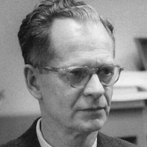
B. F. Skinner, 1904 to 1990
A failed novelist who decided to describe behaviour instead of characters.
His life. Small-town Pennsylvania. He wanted to be a writer, and he had some encouragement from the poet Robert Frost. After university he moved home to write a novel and produced almost nothing. He called it his dark year. He concluded that he had nothing to say about people because he did not understand them.
Where the theory came from. He read Watson and Pavlov during that failed year and switched to psychology at Harvard. The literary instinct survived the change: he wanted to describe exactly what an animal does and what happens next, with no story about motives in between. He built a box to do it, and a recorder to draw the results automatically.
What he gave us.Operant conditioning: behaviour is shaped by its consequences. Reinforcement schedules. Teaching machines, which are the ancestors of every learning app you have used.
The uncomfortable bit. He was a genuinely mechanistic thinker, and in Beyond Freedom and Dignity (1971) he argued that free will is an illusion and that we should engineer societies accordingly. People found that chilling. He is also the subject of a stubborn myth: he built his baby daughter a heated, enclosed cot called the air crib, and the story spread that he raised her in a Skinner box and that she later sued him or died by suicide. None of that is true, and she has said so publicly. Worth knowing, because the myth gets repeated in classrooms.
Where you meet him. Intro & Study Skills chapter 2. Founders & Schools.
Jean Piaget, 1896 to 1980
A shellfish expert who got a boring job marking intelligence tests, and noticed the wrong answers.
His life. Swiss, from Neuchâtel. A startling child: he published a short scientific note at about ten, worked in a natural history museum as a schoolboy, and took a doctorate on molluscs at twenty-one. He was a biologist first, and it shows in everything he later wrote.
Where the theory came from. This is the best origin story in psychology. He took a dull job in Paris helping to standardise intelligence tests, which meant asking children questions and marking them right or wrong. He became fascinated by the wrong answers, because children of the same age kept making the same mistake. A random error would not do that. A systematic error meant the child was reasoning with a different system. So he stopped counting right answers and started asking children why.
What he gave us. The idea that children think in a qualitatively different way from adults rather than just knowing less. Schemas, assimilation, accommodation, and the four stages. He effectively invented developmental psychology as a research field.
The uncomfortable bit. Much of his early evidence came from closely observing his own three children. Tiny sample, and the observer was their father with a theory to confirm. Later work also shows he underestimated children badly, partly because his tasks confused them with the wording rather than the concept.
Where you meet him. Developmental chapters 3 and 6. Cognitive chapter 1. Your Assignment 1.
Lev Vygotsky, 1896 to 1934
He had about ten years to work, died at 37, and was then banned for twenty years.
His life. Born in what is now Belarus, into a Jewish family under the Russian Empire, where Jewish students faced strict university quotas. He got a place at Moscow partly through a lottery. He trained in law and literature and wrote on Hamlet. He came into psychology properly only in 1924, after a lecture that stunned the room. He had tuberculosis throughout and knew he was working against the clock.
Where the theory came from. Two things. His own background was in language and literature, so he saw speech, not objects, as the thing that builds a mind. And he was working in the early Soviet Union, where the official view was that people are made by their social and material conditions. A theory in which other people build the child's thinking fitted that world exactly.
What he gave us. The zone of proximal development, the gap between what you can do alone and what you can do with help. Scaffolding. And the idea that thought starts as conversation with others, becomes talking out loud to yourself, then becomes your inner voice.
The uncomfortable bit. His work was suppressed in the Soviet Union from 1936 for about two decades, and barely reached the English-speaking world until the 1960s and 1970s. So he is a 1920s thinker who arrived as a 1970s novelty. He also never finished anything, which is why the module says his theory generates fewer testable predictions than Piaget's. That is not laziness. He ran out of time.
Where you meet him. Developmental chapter 3. Comparison Tables.
Erik Erikson, 1902 to 1994
The man who gave us the identity crisis had one all his life, and solved it by inventing his own surname.
His life. Born in Germany to a Danish mother who was unmarried, and he never found out who his father was. His mother later married his paediatrician, Dr Homburger, and the boy was raised as Erik Homburger and told the doctor was his real father. He found out he was not. He was tall, blond and blue-eyed in a Jewish family, so at the synagogue he was the outsider who looked Nordic, and at school he was the Jew. He belonged nowhere.
Where the theory came from. He had no degree. He drifted around Europe as an artist for years, then took a teaching job at a small school in Vienna for the children of Freud's circle, which led to him being analysed by Anna Freud and trained in psychoanalysis. He left for America in 1933. When he became a US citizen in 1939 he chose a new surname: Erikson. Erik, son of Erik. He named himself as his own father. A man who spent forty years not knowing who he was then wrote the theory in which the central task of adolescence is working out who you are, and he coined the phrase identity crisis.
What he gave us.Eight psychosocial stages across the whole lifespan, each a crisis to resolve. Unlike Freud, he did not stop at childhood, and he put society, not sexuality, at the centre.
The uncomfortable bit. The stages are hard to test and were built largely from clinical impressions and from studies of two Native American communities whose cultures he arguably read through his own framework. He also never held a formal qualification in the field he ended up teaching at Harvard.
Where you meet him. Developmental chapter 6, and he is the lead theorist for your Assignment 1, because autonomy versus shame and doubt is the stage your toddlers are in.
John Bowlby, 1907 to 1990
He wrote the theory of what happens when a child loses the person who raises them. It happened to him at four.
His life. Upper-middle-class London, one of six children, raised in the style of that class: he saw his mother for about an hour a day after teatime. The person who actually raised him was his nanny, Minnie. She left when he was around four, and he later described it as losing a mother. At seven he was sent to boarding school. He said afterwards that he would not send a dog away at that age.
Where the theory came from. He trained in medicine and psychoanalysis but kept insisting that real events in the real family mattered, not just fantasy, which put him at odds with the analysts around him. He worked at a school for troubled children, then studied 44 juvenile thieves and found that many had experienced early separation from their mothers. After the war the World Health Organisation asked him to report on children left homeless across Europe. That report made him famous.
What he gave us.Attachment theory. The secure base. The internal working model. And the argument that the need for a bond is not learned through feeding but is biologically built in.
The uncomfortable bit. His early claim, sometimes called maternal deprivation, was pushed too far and was used politically to argue that mothers should not work. The evidence does not support that. He also underestimated fathers and other carers.
Where you meet him. Developmental chapter 6 and the Attachment branch of the mind map. Strong material for your Assignment 1.
Mary Ainsworth, 1913 to 1999
She turned Bowlby's idea into something you could actually measure, after a job ad and a move to Uganda.
Her life. Born in Ohio, raised in Toronto. She read a book about personality at sixteen and decided then what she wanted to do. She took her doctorate at Toronto and worked on security and dependence in young adults, which is attachment by another name, years before she met Bowlby.
Where the theory came from. She married, and followed her husband to London, where she answered a newspaper advertisement for a research job. It was Bowlby's. Then her husband's work took them to Uganda, and she did something nobody had done: she sat in family homes and watched mothers and babies, over months, in their own world. That is where she saw the pattern of a baby using the mother as a base to explore from. Back in Baltimore she needed a way to show that pattern on demand, so she designed a short laboratory procedure of separations and reunions: the Strange Situation.
What she gave us. A measurement for attachment, and the three classifications, secure, avoidant and resistant. Bowlby had the theory; without her it stays an idea.
The uncomfortable bit. Her career was deliberately obstructed. Universities had rules against employing the wives of their own staff, so for years she took whatever work she could get. The field's most important measurement tool came out of a career that the system was actively holding back. The Strange Situation itself is also criticised for being brief, artificial and culturally loaded, since what counts as normal separation differs between cultures.
Where you meet her. Developmental chapter 6 and the Attachment branch. Directly usable in Assignment 1.
Harry Harlow, 1905 to 1981
He proved that love matters, by removing it.
His life. Born Harry Israel in Iowa. He changed his surname to Harlow early in his career, reportedly on his supervisor's advice, because a Jewish-sounding name would hold him back, although he was not Jewish. He arrived at Wisconsin to find he had no laboratory, so he and his students built one in a disused building and worked with monkeys because that is what he could get.
Where the theory came from. The accepted view in the 1950s was that babies bond with whoever feeds them. Both the behaviourists and the Freudians agreed on that, for different reasons. Harlow doubted it. So he gave infant monkeys a choice between a wire mother that delivered milk and a soft cloth mother that delivered nothing. They clung to the cloth one and went to the wire one only to feed. Comfort beat food, and the feeding theory of love was finished.
What he gave us.Contact comfort, and hard evidence for Bowlby at exactly the moment Bowlby needed it.
The uncomfortable bit. This is the most difficult entry here. His later work involved isolating monkeys for months in an apparatus he himself named the pit of despair, producing animals that were permanently damaged. He did this while suffering severe depression himself, and he had electroconvulsive therapy after his wife died of cancer. His work is often credited with giving the animal welfare movement its founding case. You can hold both facts at once: the findings changed how children are treated in hospitals and orphanages, and the way he got them is indefensible.
Where you meet him. Developmental chapter 6. Key People. Ethics discussions in PSY1081.
Albert Bandura, 1925 to 2021
He grew up in a village school with almost no teachers, so the students taught themselves. He spent his career explaining why that worked.
His life. Born in a tiny hamlet in Alberta, Canada, to Polish and Ukrainian immigrant parents. The whole school had a handful of teachers and very few books, so pupils had to take charge of their own learning. He always said that taught him more than the curriculum did.
Where the theory came from. He found psychology almost by accident: commuting students arrived early, so he filled an empty slot with a psychology class and was hooked. The behaviourism he was taught said learning needs reinforcement, that you must do a thing and be rewarded for it. That did not match what he had seen. Children clearly learn things they have never been rewarded for and never even done, just by watching. So he filmed an adult attacking an inflatable Bobo doll, showed it to children, and watched them copy it.
What he gave us.Social learning theory: we learn by observing and imitating, especially models who are warm, similar to us, or rewarded. Later, self-efficacy, your belief in your own ability to do something, which is now one of the most used ideas in all of psychology and goes straight back to that village school.
The uncomfortable bit. The Bobo doll studies are criticised for artificiality, since a Bobo doll is designed to be hit and no real person was harmed, and for possible demand characteristics, because children may have worked out what was wanted. The media violence debate built on this work is still unresolved.
Where you meet him. Developmental chapter 3. Key People.
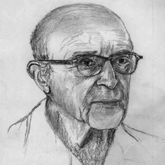
Carl Rogers, 1902 to 1987
Raised to believe people need correcting, he built a therapy around accepting them exactly as they are.
His life. A strict, religious Midwestern family. Dancing, cards and drink were out. The family moved to a farm when he was twelve, and he became seriously interested in agriculture and scientific method, which is where his lifelong insistence on evidence comes from.
Where the theory came from. Two turns. At twenty he travelled to China for a student Christian conference and spent six months among people whose beliefs differed completely from his parents'. He came back with his own views and a permanent break from their certainty. Then, training for the ministry, he moved across to psychology and worked with troubled children in Rochester. There he noticed something that became his whole career: the client knew more about what was wrong than he did, and the sessions went better when he stopped directing them.
What he gave us.Client-centred therapy. The self-concept and the ideal self. Unconditional positive regard, being valued whatever you do rather than on condition of behaving. He also insisted on recording and analysing real sessions, which turned psychotherapy into something researchable.
The uncomfortable bit. His key terms are famously vague. Nobody has ever measured self-actualisation properly, which is exactly the objection the Personality book makes, and an untestable theory is a weak theory however much good it does in practice.
Where you meet him. Personality chapter 2. Intro & Study Skills chapter 2. Founders & Schools.
George Kelly, 1905 to 1967
A travelling school psychologist in the Dust Bowl, who noticed the teachers were describing themselves.
His life. An only child on a Kansas farm, partly taught at home. He collected degrees in an unusual order: physics and maths, then educational sociology, then psychology. The physics training is visible in everything he wrote.
Where the theory came from. In the Depression, in a Kansas wrecked by drought and dust, he ran a travelling psychology service, driving out to rural schools. Teachers would refer pupils with complaints like "this boy is lazy". He realised the complaint described the teacher's way of carving up the world as much as the child. He also found that if he offered an explanation that was frankly far-fetched, but offered it convincingly, the situation still improved. That shook him. If the truth of the interpretation was not what mattered, then what mattered was whether a person could find a different way of seeing the same facts.
What he gave us.Personal construct theory, the idea of the person as a scientist forming and testing their own categories, and the repertory grid for getting those categories out of someone's head and onto paper.
The uncomfortable bit. The theory describes beautifully and predicts poorly. It assumes people know their own minds, which Freudians reject outright, and because everyone's constructs are personal you cannot easily compare one person's grid with another's.
Where you meet him. Personality chapter 2, including the repertory grid exercise you can do on yourself.
Solomon Asch, 1907 to 1996
An immigrant boy who learned English from Dickens, and later proved that people will deny what is in front of their eyes.
His life. Born in Warsaw, came to America at thirteen speaking no English. He taught himself partly by reading Dickens with a dictionary. He fell in with the Gestalt psychologists who had fled Europe, and took from them the principle that you cannot understand a part without the whole.
Where the theory came from. He was writing in the shadow of the 1930s and 1940s, when whole societies had gone along with things. The question of the age was how ordinary people get swept into a group's view. He designed something almost insultingly simple to test it: which of these three lines matches this one? The answer is obvious. Then he filled the room with actors who all gave the same wrong answer, and watched what one real participant would do.
What he gave us. The conformity experiments. Three quarters of people went along with a plainly wrong answer at least once. And a crucial detail often left out: when people could write the answer down privately, conformity collapsed. They were not fooled. They just did not want to be the one who disagreed out loud.
The uncomfortable bit. The sample was American male students in the 1950s, and later work suggests conformity rates vary a lot by era and culture. Asch himself was more interested in the quarter who resisted than in the majority who caved, which is not how the study usually gets taught.
Where you meet him. Social & Organisational chapter 4. His research assistant was Stanley Milgram.
Stanley Milgram, 1933 to 1984
He set out to prove that Germans were different. His own results destroyed the idea.
His life. Born in the Bronx to a Jewish family from eastern Europe. Relatives came out of the camps and some stayed with the family afterwards. He once wrote that he should have been born into a European Jewish community and that he had somehow ended up in the wrong place. The Holocaust was not an academic topic for him. He studied at Harvard and worked as Asch's assistant.
Where the theory came from. The explanation people reached for after the war was that there was something particular about Germans, some national readiness to obey. Milgram wanted to test it properly. His plan was to run his obedience procedure in America to get a baseline, then take it to Germany where he expected much higher rates. He never needed to go. In 1961, in the months after Eichmann's trial opened in Jerusalem, ordinary men in New Haven went to the highest shock level in numbers that no psychiatrist had predicted. The comfortable explanation collapsed.
What he gave us. The obedience studies, and more importantly the variations, which show obedience is not a fixed human trait but something the situation turns up or down: seeing the victim, seeing others refuse, who gives the order, who throws the switch.
The uncomfortable bit. The deception and the distress would not be approved now. He was denied tenure at Harvard, with the controversy a likely factor, and moved to the City University of New York. Critics argue participants were drawn in gradually and that obedience was inflated by the setup. He also never published the variation in which participants brought a friend and almost all refused. He died of a heart attack at 51.
Where you meet him. Social & Organisational chapter 4, and the ethics material in PSY1081 Assignment 1.
Philip Zimbardo, 1933 to 2024
He and Milgram sat in the same classroom in the Bronx, and between them produced the two most argued-about studies in psychology.
His life. Born in the Bronx to a poor Sicilian-American family, often ill as a child and in and out of hospital. He went to James Monroe High School, where one of his classmates was Stanley Milgram. He said later that growing up in that neighbourhood taught him how quickly good people turn, depending on who they are standing next to.
Where the theory came from. He wanted to answer the question Milgram had opened up, but from the other side. Milgram showed people obeying an order. Zimbardo asked whether you even need an order: give people a role, a uniform and a setting, and will the situation do the rest? In 1971 he turned a Stanford basement into a mock prison, and stopped it after six days of a planned fortnight.
What he gave us. The Stanford Prison Experiment, and a lifetime argument that bad behaviour usually comes from bad situations rather than bad people, which he called the Lucifer Effect. He later served as an expert witness for a guard charged over Abu Ghraib, and founded a project teaching ordinary people to act well under pressure.
The uncomfortable bit. This one has got worse with time, not better. He took the role of prison superintendent himself, which he admits was a mistake. More damagingly, recovered recordings show he and his team coached the guards, presenting harshness as necessary. If the guards were following instructions, the study is no longer evidence that situations alone produce cruelty. Treat it as a demonstration rather than an experiment, and say so if you write about it.
Where you meet him. Social & Organisational chapter 4. Ethics cases in PSY1081.
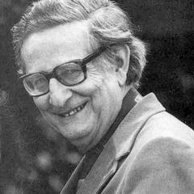
Hans Eysenck, 1916 to 1997
He fled the Nazis as a teenager, became one of the most cited psychologists alive, and had dozens of his papers declared unsafe after his death.
His life. Born in Berlin to two actors, raised largely by his grandmother. In 1934 he was told that university entry required joining the Nazi party. He refused and left Germany, eventually reaching Britain, where at the start of the war he was classed as an enemy alien. He spent his career at the Maudsley hospital in London.
Where the theory came from. Working with psychiatric patients, he was struck that clinicians could not agree on diagnoses and had no measurements worth the name. He wanted personality put on the same footing as physics: a small number of dimensions, properly measured, with a biological cause underneath. Hence extroversion and neuroticism, and hence his claim that extroverts seek stimulation because their brains are under-aroused.
What he gave us. Questionnaires that actually work, unlike Cattell's. The argument that personality has a measurable biological basis. And, early and unpopularly, the demand that psychotherapy should have to prove it works, which was unwelcome at the time and is now simply expected.
The uncomfortable bit. A great deal. He took funding from a foundation with a eugenic history, wrote on race and intelligence in ways that drew sustained criticism, and produced tobacco-industry-funded work arguing that personality, rather than smoking, explained cancer rates. After his death an inquiry at King's College London judged a group of his papers unsafe, and journals issued retractions and expressions of concern. You can use his personality dimensions, which stand up, while being clear-eyed about the rest.
Where you meet him. Personality chapters 1 and 7. He is also the loudest critic of Freud in your Personality book.
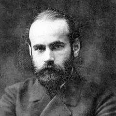
Max Wertheimer, 1880 to 1943
He saw flickering lights from a train window, got off at the next station, and bought a toy.
His life. Born in Prague to a cultured Jewish family. A gifted musician who nearly chose music over psychology. He fled Nazi Germany in 1933 and spent his last decade in New York.
Where the theory came from. In 1910 he was on a train and noticed that lights flashing in sequence looked like one light moving. There was no movement. His eyes were being shown separate still images. He got off at Frankfurt, bought a toy stroboscope, booked a hotel room and started experimenting that day. His first two participants were two young colleagues called Koffka and Koehler, and the three of them founded a school of psychology out of it.
What he gave us.Gestalt psychology, and the principle that the whole is different from the sum of its parts. The grouping laws you use to explain how we separate objects from backgrounds: similarity, proximity, common fate, closure.
The uncomfortable bit. Gestalt described what we perceive brilliantly and explained the mechanism poorly. The laws tell you what happens, not why. The school also lost its momentum when the Nazis scattered its founders across the world.
Where you meet him. Intro & Study Skills chapter 2. Cognitive chapter 2, on figure and ground.
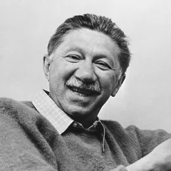
Abraham Maslow, 1908 to 1970
A desperately lonely child who built a theory about people at their best.
His life. Brooklyn, the eldest of seven, parents Jewish immigrants from what is now Ukraine. He described a miserable childhood and was openly, lastingly hostile to his mother. He said he spent his boyhood in libraries because he had no friends.
Where the theory came from. Two moves. First, he trained under Harry Harlow at Wisconsin working with monkeys, so he began with biology and drives. Second, he decided that psychology had learned everything from the broken and the sick and nothing from people who were thriving. So he did the opposite and studied exemplary people he admired, living and dead, asking what they had in common.
What he gave us. The hierarchy of needs, from survival up to self-actualisation, and with Rogers the humanistic school that treats people as growing rather than merely driven.
The uncomfortable bit. His sample was tiny and hand-picked by him, from people he already respected, which is close to circular. Self-actualisation has never been measured properly. And the famous pyramid was not his: he never drew one, and the rigid "finish one level before starting the next" reading is a later simplification.
Where you meet him. Intro & Study Skills chapter 2. Founders & Schools.
Charles Spearman, 1863 to 1945
He spent fifteen years as an army officer before he started.
His life. English, and a soldier first. He served roughly fifteen years in the British Army, including in India, before leaving to study psychology, which he later called the greatest mistake of his life, the delay rather than the subject. He took his doctorate under Wundt at Leipzig and ended up at University College London.
Where the theory came from. He tested schoolchildren in a Hampshire village on a handful of unrelated things, including maths, vocabulary, matching musical pitch and matching colours. He expected the scores to be unrelated. They were not. Children good at one tended to be good at all of them. To show that properly he had to invent the maths, so he did: factor analysis, and the rank correlation that still carries his name.
What he gave us.General intelligence, g, in 1904. Factor analysis, which is the tool Cattell and Eysenck later used to find personality factors. And Spearman's rho, which you will run in SPSS in PSY1081.
The uncomfortable bit. The history of g is entangled with the history of eugenics and with racial comparisons of intelligence, which has coloured the argument ever since. Thurstone later countered that there are several distinct abilities, not one, and that argument has never fully closed.
Where you meet him. Personality chapter 6. His rho appears again in the PSY1081 Which Test? tool.
Walter Mischel, 1930 to 2018
He fled Vienna as a child, and later argued that your situation matters more than your character.
His life. Born in Vienna, a few streets from Freud. His Jewish family fled in 1938 after the Nazi annexation and arrived in New York with almost nothing. He grew up watching his father's confident personality collapse and his mother's anxious one strengthen once the circumstances changed.
Where the theory came from. That observation became a career. In 1968 he published a book arguing that trait scores predict behaviour far more weakly than the field assumed, and that what someone does depends heavily on the situation. It caused a crisis in personality psychology. His other famous work is the marshmallow test: leave a small child alone with a treat and tell them they can have two if they wait.
What he gave us. The person-situation debate, which forced trait theory to become more careful, and a large body of work on delay of gratification and self-control.
The uncomfortable bit. Your Personality book says bluntly that the evidence proved him wrong and he retracted. That is too neat. He softened his position rather than abandoning it, and the modern view is that both traits and situations matter. The marshmallow test has also fared badly: larger replications suggest much of the long-term effect disappears once you account for the child's family background.
Where you meet him. Personality chapter 5.
Paul Costa
Paul Costa and Robert McCrae
The Big Five came out of a study about growing old.
Their work. Both worked on the Baltimore Longitudinal Study of Aging, a project following the same people for decades to see how they changed.
Where the theory came from. They were not trying to build a personality model. They were trying to answer a simpler question: does personality change as people get older? To answer it they needed stable measurements, and when they analysed what they had, the same small number of dimensions kept appearing. Their answer to the original question, by the way, was that adult personality is remarkably stable.
What they gave us. The NEO inventory and the five factors you can remember as OCEAN: openness, conscientiousness, extroversion, agreeableness, neuroticism. Norman had proposed five factors back in 1963; Costa and McCrae made them stick.
The uncomfortable bit. The model is descriptive rather than explanatory. It tells you how people differ, not why, which is exactly where Eysenck tried to go with biology. Angleitner also argued that the openness scale is really measuring ability rather than personality, and the Personality book repeats that criticism.
Where you meet them. Personality chapter 7. The IPIP-NEO you review for PSY1080 Assignment 2 is a free descendant of their inventory.
Howard Gardner, born 1943
He worked with brain-damaged adults and gifted children at the same time, and noticed they were two halves of one picture.
His life. American, born to German Jewish refugees who had fled before the war. A serious pianist as a boy. He has spent nearly all his career at Harvard.
Where the theory came from. He held two jobs at once. In one he studied children with unusual talents. In the other he worked at a veterans hospital with adults who had brain damage. He kept seeing patients who had lost one ability completely while others were untouched: language gone but music intact, or the reverse. If a single general intelligence ran everything, damage should not be able to carve it up so cleanly. So he proposed that there is more than one intelligence.
What he gave us.Multiple intelligences (1983): linguistic, logical-mathematical, musical, spatial, bodily-kinaesthetic, naturalistic, interpersonal and intrapersonal. It widened what schools count as ability.
The uncomfortable bit. Psychometricians argue these are talents rather than intelligences, and that the abilities correlate too much to be independent. Gardner himself has repeatedly complained that his theory gets confused with learning styles, which is a different claim and a much weaker one. If you write about this, do not merge the two.
Where you meet him. Intro & Study Skills chapter 4, alongside Kolb's learning cycle and Honey and Mumford's styles.
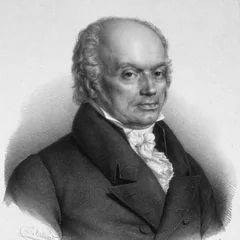
Franz Joseph Gall, 1758 to 1828
He was wrong about almost everything, and psychology still needed him.
His life. German, trained in medicine in Vienna. He collected skulls obsessively, from prisons, asylums and friends who promised him theirs. He was a genuinely skilled anatomist before he was a showman.
Where the theory came from. He claimed that as a schoolboy he noticed classmates with good memories had prominent eyes. From that he built the idea that mental faculties sit in specific parts of the brain, that use makes those parts grow, and that the growth pushes out the skull. So you could read a character by feeling the head. That is phrenology.
What he gave us. The skull-reading was nonsense. But the underlying claim, that different mental functions live in different parts of the brain, is the foundation of neuropsychology, and his real anatomical work on grey and white matter was sound. Your Biological Bases book makes the sharper point: phrenology mattered because it offered the first apparently objective way to assess personality, which dragged psychology towards observation.
The uncomfortable bit. Phrenology was used to justify racism, class hierarchy and criminal profiling for a century. The Austrian emperor also banned his lectures as a threat to religion, which tells you how seriously it was taken at the time.
Where you meet him. Biological Bases chapter 1, and the quiz question on why phrenology was popular.
Santiago Ramon y Cajal, 1852 to 1934
A rebellious boy who wanted to be an artist, and ended up drawing the brain.
His life. Spanish, and an impossible child. He wanted to be a painter; his father, an anatomist, refused. He was expelled from school, and at one point apprenticed to a barber and a cobbler to teach him discipline. His father eventually won him over by taking him to dig up bones and draw them.
Where the theory came from. The accepted view was that the nervous system was one continuous web, like a fishing net. Cajal took a staining method invented by Camillo Golgi, used it better than Golgi did, and looked very carefully. He saw that nerve cells are separate units with tiny gaps between them. The artist he never stopped being then drew what he saw, by hand, in drawings still reproduced today.
What he gave us. The neuron doctrine: the neuron is the basic unit of the nervous system. Everything in your Biological Bases book about synapses and neurotransmitters depends on those gaps being real.
The uncomfortable bit. Not a criticism, but a lovely awkwardness: he shared the 1906 Nobel Prize with Golgi, and the two men used their acceptance lectures to contradict each other. Golgi still insisted the net was continuous. Cajal was right.
Where you meet him. Biological Bases chapter 1.
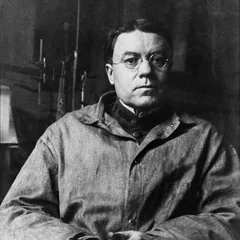
Walter Cannon, 1871 to 1945
He was watching animals digest, and noticed they stopped when they were frightened.
His life. American, at Harvard for most of his career. As a very junior researcher he was among the first to use the newly invented X-ray on living animals, feeding them food laced with a heavy metal so he could watch the digestion happen.
Where the theory came from. He kept losing his results, because whenever an animal became distressed, digestion simply stopped. Most people would call that a nuisance. He turned it into the finding: the body shuts down anything non-urgent and redirects everything to the emergency. He named that fight or flight. The same logic produced his other idea, that the body works constantly to hold its internal state steady, which he called homeostasis.
What he gave us. Two terms you now use without thinking. He also tested the James theory of emotion by removing the cortex from cats, found they still raged, and traced emotion to the hypothalamus.
The uncomfortable bit. The cat work is exactly the kind of procedure that would not be approved today, and it sits in your Biological Bases chapter 3 without much comment. Worth noticing that the module names the finding but not the cost.
Where you meet him. Biological Bases chapter 3, on emotion and on motivated behaviour.
Donald Hebb, 1904 to 1985
Another would-be novelist. He explained how learning physically changes a brain.
His life. Canadian, from Nova Scotia, and like Skinner he wanted to be a novelist. He worked as a schoolteacher and a labourer first and came to psychology late. He later ran the psychology department at McGill.
Where the theory came from. He worked with people who had lost large amounts of brain tissue to surgery or injury and were far less impaired than anyone expected. That ruled out the idea that each function sits in one fixed spot. His answer was that what matters is not the location but the pattern of connections between cells, built up by experience.
What he gave us. The rule usually summarised as cells that fire together wire together. Learning is a physical change in the strength of connections. That single idea underpins neuroplasticity in your Biological Bases chapter 4 and also underpins artificial neural networks, which is why he turns up in the history of modern AI.
The uncomfortable bit. His McGill lab ran sensory deprivation studies in the 1950s, paying students to lie in silence with goggles and padded gloves. Participants hallucinated and many quit early. The work was funded in a Cold War context and fed into interrogation research, which is a stain on it.
Where you meet him. Biological Bases chapters 1 and 4.
Antonio Damasio, born 1944
He met a patient who could reason perfectly and could not decide anything.
His life. Portuguese, born in Lisbon, trained in medicine there, then moved to the United States. He works with his wife and collaborator Hanna Damasio.
Where the theory came from. A patient he calls Elliot had a tumour removed from the front of his brain. His intelligence, memory and language tested normally. But he had lost his emotional responses, and his life fell apart: he could no longer choose between options, ruined his finances and his marriage, and could spend an entire afternoon deciding how to file documents. Damasio drew the conclusion that reason without feeling does not work. Emotion is not the opposite of good decision-making. It is part of the machinery.
What he gave us. The somatic marker hypothesis: bodily feelings tag our options and narrow the choice before conscious reasoning starts. He also helped reconstruct the damage to Phineas Gage, the railway worker whose personality changed after an iron bar went through his head.
The uncomfortable bit. The evidence leans heavily on small numbers of unusual patients, and the gambling task used to test the theory has produced mixed results in other labs.
Where you meet him. Biological Bases chapter 3, on what emotions are for.
George Miller, 1920 to 2012
He opened his most famous paper by complaining that he was being persecuted by a number.
His life. American, from West Virginia. He started in speech and language, and spent the war working on how to make voice communication audible through radio noise for the military. That is an unglamorous problem that turns out to be about how much information a person can handle.
Where the theory came from. He kept meeting the same number in completely unrelated experiments. How many tones people can tell apart, how many items they can hold, how many categories they can judge: the answer kept coming out at around seven. His 1956 paper, The Magical Number Seven, Plus or Minus Two, opens with the joke that an integer has been following him around.
What he gave us. The limited capacity of short-term memory, and chunking, the insight that you can beat the limit by grouping items into bigger units, which is why phone numbers come in blocks. He also co-founded Harvard's centre for cognitive studies and did as much as anyone to make the mind a respectable subject again.
The uncomfortable bit. Seven has not held up well. Later work puts the real limit closer to four chunks once you stop people rehearsing. The number is also widely misused: it is about immediate memory, not about how many items belong on a slide or a menu.
Where you meet him. Cognitive chapter 3. The 1956 symposium where he presented is often called the birthday of cognitive science.
Endel Tulving, 1927 to 2023
A refugee separated from his parents for over twenty years, who divided memory into facts and personal experience.
His life. Born in Estonia. In 1944, as the Soviet army advanced, he and his brother left and their parents stayed. He did not see them again for over twenty years. He finished his education in Germany, emigrated to Canada, and spent his career in Toronto.
Where the theory came from. Memory was being studied as one thing: a store with items in it. Tulving argued in 1972 that remembering the capital of Ireland and remembering your own wedding are not the same mental act at all. One is a fact you simply know. The other involves mentally travelling back and being aware that you were there. It is hard to read that distinction, drawn by this particular man, without noticing the life behind it.
What he gave us.Episodic versus semantic memory, the single most used distinction in the field. The pyramid arrangement in your Cognitive book, with procedural at the base and episodic at the top, is his. Also encoding specificity: recall works best when the conditions at retrieval match those at encoding.
The uncomfortable bit. The boundary is blurrier than the diagram suggests, since every semantic fact was once learned in an episode. His claim that only humans have full episodic memory is also disputed by people working with scrub jays and great apes.
Where you meet him. Cognitive chapter 3, including the tree versus pyramid argument.
Fergus Craik and Robert Lockhart
Two colleagues in Toronto who argued that memory has no boxes, only effort.
Their work. Both at Toronto, alongside Tulving. Craik is Scottish, and his later career focused on memory and ageing.
Where the theory came from. By 1972 the standard model had information moving between a short-term store and a long-term store, like rooms. Craik and Lockhart were unconvinced that the boxes existed. Their alternative was simpler: there is only how deeply you processed the thing. Pay attention to how a word sounds and you will not remember it. Pay attention to what it means and you will.
What they gave us.Levels of processing, and the striking experimental finding that intending to remember barely matters. People who were asked whether a word referred to something living, with no mention of a memory test, outperformed people who were trying hard to memorise it shallowly. That is the single most useful study-skills fact in your whole module.
The uncomfortable bit. The theory is close to circular. Deep processing is defined as the kind that produces better memory, and better memory is the evidence that processing was deep. Nobody has ever measured depth independently.
Where you meet them. Cognitive chapter 3.
Allan Paivio, 1925 to 2016
A competitive bodybuilder who brought mental images back from the dead.
His life. Canadian, of Finnish descent, raised in a Finnish-speaking community in Ontario. He was a serious competitive bodybuilder in his youth and won a national title before turning to academic psychology, which is not a sentence you get to write about many researchers.
Where the theory came from. Behaviourism had made mental imagery an unmentionable topic for roughly sixty years, because you cannot observe someone's mental picture. Paivio simply tested it. He gave people concrete words such as spoon and carrot and abstract words such as belief and chance, and the concrete ones were remembered far better. If images did nothing, that difference should not exist.
What he gave us. The dual coding hypothesis: we store things as words and as images, and material that gets both codes is remembered best. That is the evidence behind every revision technique that tells you to draw it as well as write it, including the mind maps on this site.
The uncomfortable bit. The imagery debate that followed was long and bad-tempered, with opponents arguing that what feels like a picture in your head is really an abstract description, and that introspection cannot settle it.
Where you meet him. Cognitive chapter 4, which credits him with making imagery respectable again.
James Gibson, 1904 to 1979, and Eleanor Gibson, 1910 to 2002
A husband and wife who changed perception research. Only one of them was allowed a salary.
Their lives. Both American, both at Cornell. Eleanor could not hold a paid faculty post there for roughly sixteen years because of anti-nepotism rules barring the wives of staff, the same obstacle that held back Mary Ainsworth. She worked unpaid in her husband's building, then won the National Medal of Science.
Where the theory came from.James spent the war training pilots to land aircraft. Laboratory depth cues were useless for that. What a pilot actually uses is the whole pattern of the world flowing past as they move. So he argued that perception is direct: the information is already out there in the moving optic array, and the brain does not need to build much at all. Eleanor asked a different question. Do you have to learn depth, or do you arrive with it? She built the visual cliff, a glass-covered drop, and watched whether crawling babies would cross.
What they gave us. His ecological approach and affordances, the idea that we see what things let us do. Her visual cliff, one of the most reproduced studies in developmental psychology, and a career's work on perceptual learning.
The uncomfortable bit. James Gibson's position is usually judged too extreme: illusions and ambiguous figures show that expectation clearly does shape perception, which is Gregory's case against him.
Where you meet them. Cognitive chapter 2 for both, and the visual cliff again in Cognitive chapter 2 on vision and action.
Richard Gregory, 1923 to 2010
He thought seeing was guessing, and he built a museum to prove it.
His life. English, son of an astronomer, worked on radar during the war. He was a showman as well as a scientist and founded a hands-on science centre in Bristol so the public could play with the illusions he studied.
Where the theory came from. He was obsessed with illusions, and with cases where the same unchanging image flips, such as the duck and the rabbit. If what you see can change while the light hitting your eye does not, then seeing cannot simply be receiving. Something inside must be adding to it.
What he gave us.Perception as hypothesis: the brain makes its best guess from incomplete information, using what it already knows. That is the top-down account, and it is the direct opposite of James Gibson's bottom-up one. Your Cognitive book sets them against each other and concludes, sensibly, that both operate depending on conditions.
The uncomfortable bit. Illusions are a strange foundation. They are rare, artificial and chosen precisely because perception fails on them. Explaining normal seeing from the cases where it breaks is a bit like explaining walking from footage of people slipping.
Where you meet him. Cognitive chapter 2, in the top-down versus bottom-up argument.
Eleanor Rosch, born 1938
She went to Papua New Guinea to find out whether your language decides what you can see.
Her life. American. She trained at Harvard, and has also spent decades studying Buddhist psychology, which is unusual company for a cognitive scientist.
Where the theory came from. The fashionable claim was that language shapes thought, so people whose language lacks a word for something should struggle to think about it. Rosch tested it properly. She worked with the Dani of Papua New Guinea, whose colour vocabulary is essentially just dark and light. If the claim were right they should have been poor at remembering and sorting colours. They were not. They handled the same focal colours everyone else does. So the categories are not handed to us by our words, and the old view of concepts as tidy boxes with strict defining features could not survive contact with real human categories either.
What she gave us.Prototype theory: a category is organised around its best example, not around a list of rules. A robin is a better bird than a penguin. That is why you can understand "a bat is a sort of bird" even though it is false.
The uncomfortable bit. Prototypes describe how we use categories but struggle with ones that clearly do have strict definitions, such as odd numbers, where nobody thinks 3 is a better odd number than 447 even though people will say it is.
Where you meet her. Cognitive chapter 4, on concepts.
Ulric Neisser, 1928 to 2012
He named cognitive psychology, then spent the rest of his life attacking it.
His life. Born in Germany; his family left for America in 1933. He was taught by, and argued with, most of the field's founders.
Where the theory came from. In 1967 he wrote a book called Cognitive Psychology that pulled a scattered set of research threads into one named discipline. Then he looked at what the discipline was actually doing, which was mostly flashing simple shapes at undergraduates for milliseconds, and decided it had become trivial. In 1976 he published an attack on his own field, arguing it had almost nothing to say about memory and perception as they work in real life.
What he gave us. The name of the field, and then the ecological approach that forced it to study reading, driving, eyewitness memory and everyday forgetting. The whole final chapter of your Cognitive book exists because of that argument. He also ran a famous study on flashbulb memories, collecting accounts of the Challenger disaster the day after and again years later, and showing that vivid, confident memories can be completely wrong.
The uncomfortable bit. Critics point out that real-world research buys relevance by giving up control, and that you cannot isolate a mechanism in a shopping street. Neisser's answer was that a controlled study of something that never happens is not much of a bargain either.
Where you meet him. Cognitive chapter 5, the whole of it.
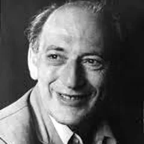
Henri Tajfel, 1919 to 1982
He survived the war by hiding which group he belonged to, then spent his life on why groups matter so much.
His life. A Polish Jew who was studying in France when war broke out. He was captured as a French soldier and spent years as a prisoner of war. He survived by never admitting he was a Polish Jew: had the Germans known, he would have been killed rather than held. He came home afterwards to find that almost his entire family had been murdered.
Where the theory came from. He had seen his own life saved and his family destroyed by nothing but a category label. The standard explanation of prejudice at the time was that it came from damaged personalities. Tajfel was sure that was far too comfortable. So he ran a deliberately absurd experiment: he sorted strangers into two groups by the toss of a coin, told them it was random, gave them nothing to compete over, and asked them to allocate points. They favoured their own group anyway.
What he gave us. The minimal group finding, which your Social & Organisational book calls the granfalloon, and social identity theory. Prejudice needs no history, no conflict and no damaged personality. A meaningless label is enough to start it.
The uncomfortable bit. Nothing about the science. But in 2019 the British Psychological Society investigated allegations of sexual harassment made against him by former colleagues, and has since removed his name from an award. A field that teaches his work should also say that.
Where you meet him. Social & Organisational chapter 5, on why groups form.
Leon Festinger, 1919 to 1989
He joined a doomsday cult under a false name to watch what happened when the world did not end.
His life. New York, son of Russian Jewish immigrants. A famously sharp and combative figure who later abandoned social psychology entirely for perception, and then for archaeology.
Where the theory came from. He read a newspaper story about a small group whose leader had predicted a flood would destroy the world on a specific date, with the believers to be rescued by flying saucers. Festinger and his colleagues joined the group undercover and were present on the night. The flood did not come. Instead of abandoning the belief, the most committed members, the ones who had quit jobs and given away possessions, became more convinced and began recruiting. They explained that their faith had saved the world.
What he gave us.Cognitive dissonance: holding two incompatible beliefs is so uncomfortable that we will change our view of the facts to resolve it, especially when we have already paid a heavy price. Also social comparison theory, which is in your Social & Organisational chapter 2.
The uncomfortable bit. Joining a group under a false identity, and influencing it by swelling its numbers, would never pass an ethics committee now. It is a useful example to cite in PSY1081 alongside Milgram.
Where you meet him. Social & Organisational chapter 2, on social comparison.
Irving Janis, 1918 to 1990
He wanted to know how clever, careful men made an obviously terrible decision.
His life. American, at Yale for most of his career, working on persuasion and on stress.
Where the theory came from. He read an account of the Bay of Pigs, the 1961 invasion of Cuba approved by President Kennedy and a cabinet of exceptionally able advisers. The plan was close to hopeless and they went ahead anyway. Janis's question was not how stupid people make bad decisions. It was how a room full of very clever people does. His answer was that the group's cohesion was the problem: nobody wanted to be the one who broke the consensus, so doubts went unspoken and the group mistook its own agreement for evidence.
What he gave us.Groupthink, and the symptoms list: the illusion of invulnerability, self-censorship, the illusion of unanimity, pressure on dissenters. He also prescribed the cure your module gives: a leader secure enough to invite criticism, and someone whose job is to argue against.
The uncomfortable bit. It was built from historical case studies chosen after the outcome was known, which makes it very easy to find the symptoms you are looking for. Experimental support is patchier than the fame of the idea suggests.
Where you meet him. Social & Organisational chapter 5, on the disadvantages of groups.
Robert Cialdini, born 1945
He spent three years working undercover as a car salesman and a fundraiser to find out how he kept getting talked into things.
His life. American, at Arizona State. He describes himself as a lifelong soft touch who kept buying things he did not want and signing up for things he did not care about.
Where the theory came from. He decided that laboratory studies of persuasion were missing the real expertise, which sits with people who do it for a living and get instant feedback on what works. So he took the jobs. For about three years he trained as a car salesman, a charity fundraiser and a telemarketer, under an assumed background, writing down the techniques from the inside. What he found was that thousands of tactics reduce to a handful of principles.
What he gave us. The six principles of influence in your Social & Organisational chapter 4: liking, commitment and consistency, scarcity, reciprocity, social proof and authority. Plus the named tactics, foot in the door and door in the face.
The uncomfortable bit. The work sits awkwardly between science and sales manual, and he has spent much of his later career arguing against people using it to manipulate. Some of the classic supporting studies have also replicated poorly, which matters for a field now under hard scrutiny.
Where you meet him. Social & Organisational chapter 4, on compliance.
Bruce Tuckman and Meredith Belbin
Two men who worked out that a team is not just a pile of good people.
Tuckman. American. In 1965, aged about 27 and working for the US Navy, he was asked to review the literature on how small groups develop. Nobody had pulled it together. He read around fifty studies, saw the same sequence in all of them, and gave it a name that stuck largely because it rhymed: forming, storming, norming, performing. He added adjourning in 1977. He later said he was faintly embarrassed that a literature review became his legacy.
Belbin. British. He ran years of management games at Henley, where teams of executives competed in business simulations. The striking finding was that the team stuffed with the cleverest individuals consistently lost. They argued, chased the same interesting problems and left the dull necessary jobs undone. So the question became not who is best but which roles are missing.
What they gave us. The life cycle of a group, and the team roles showing that diversity of approach beats raw ability. Your module's illustration comes straight from Belbin: a team of all shapers never concludes anything, a team of all team workers feels like therapy.
The uncomfortable bit. Both are enormously popular in management training and thin on hard evidence. Tuckman's stages are rarely as neat in reality, and Belbin's questionnaire has repeatedly failed tests of reliability.
Where you meet them. Social & Organisational chapter 5.
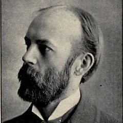
Charles Cooley
Charles Cooley, Mark Snyder and Kenneth Gergen
Three thinkers on the same question: how much of you is made by other people?
Cooley, 1864 to 1929. An American sociologist, not a psychologist, and a shy, isolated child who was ill for much of his youth and educated largely at home. He gave us the looking-glass self: we see ourselves reflected in other people's reactions, and we feel about ourselves what we imagine they feel about us. Coming from someone who spent years watching others from the outside, that is not a surprising idea to have had.
Snyder, born 1947. He noticed that some people seem to read a room and adjust, while others behave identically everywhere, and he built a scale to measure it: self-monitoring. The affirmative action study in your book is his, where high self-monitors joined or avoided a discussion group according to what was expected of their gender rather than what they believed.
Gergen, 1935 to 2025. He argued that modern life exposes us to so many relationships that we end up with many selves rather than one, which he called multiphrenia, and that identity is better thought of as a process than a thing.
The uncomfortable bit. Your Personality book attacks Snyder's claim that self-monitoring is genetic, calling it a confusion of levels of discourse, which is a useful criticism to be able to make. Gergen's position is interesting and close to untestable.
Where you meet them. Social & Organisational chapter 2. Personality chapters 1 and 2.
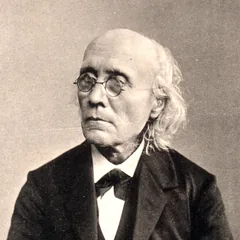
Gustav Fechner
Ernst Weber, 1795 to 1878, and Gustav Fechner, 1801 to 1887
Two men in Leipzig who worked out that you can put a number on a sensation. One of them nearly blinded himself getting there.
Their lives.Weber was a careful, methodical physiologist studying the sense of touch. Fechner was stranger. He trained in medicine, switched to physics, and damaged his eyes badly by staring at the sun through coloured glass while studying afterimages. He collapsed into a breakdown, spent about three years in a darkened room, barely able to see or eat, and was not expected to recover. He did. He also believed plants had souls and published satire under a false name.
Where the method came from. Weber did something simple: he gave people weights to hold and asked when they could feel a difference. He found the answer was not a fixed amount but a fixed proportion. If you weigh 90 pounds you notice losing five; at 300 pounds you do not. Then on the morning of 22 October 1850, lying in bed after his recovery, Fechner had the idea that the link between mind and matter could be written as an equation, and turned Weber's observation into a law.
What they gave us.Psychophysics, the first area of psychology to produce real numbers, and Weber's law. Fechner's crucial proof was that you can study sensation with instruments instead of introspection, which is exactly what made Wundt's laboratory thinkable thirty years later.
The uncomfortable bit. Fechner's motive was not what you would guess. He was trying to prove that mind and matter are two sides of one thing, a quasi-mystical position, and he regarded the maths as the proof of it. The founding measurements of experimental psychology came out of a project to demonstrate that the universe is ensouled.
Where you meet them. Intro & Study Skills chapter 2, on how measurement arrived from physics.
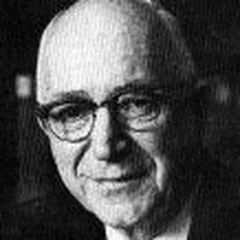
Gordon Allport, 1897 to 1967
He met Freud once, for a few minutes, and spent the rest of his career reacting against it.
His life. American, youngest of four brothers, raised in a strict Protestant household by a doctor father who ran a surgery from the house. He spent nearly his whole career at Harvard.
Where the theory came from. At twenty-two, visiting Vienna, he wrote to Freud asking to meet. Freud showed him in and then sat in complete silence, waiting. Allport panicked and filled the gap with small talk: on the tram over, he said, there had been a little boy terrified of dirt, with a fussy-looking mother. Freud looked at him and asked, "And was that little boy you?" Allport left convinced that psychoanalysis dug for hidden meanings when the obvious surface explanation, that he was a nervous young man making conversation, was right there. His whole approach follows from that: start with what is conscious and present, not with what is buried.
What he gave us. Two things your modules depend on. With Odbert in 1936 he combed a dictionary for every word describing a personal characteristic, producing the 4,500-item list that Cattell later boiled down to 171 adjectives and then to the 16PF. And the definition of social psychology your Social & Organisational book opens with, about the actual, imagined or implied presence of others. He also wrote The Nature of Prejudice (1954), which is still the starting point for that field.
The uncomfortable bit. His emphasis on the individual case sat awkwardly with the drive to measure and compare, and trait psychology mostly went the other way. Small note on your reference list: the Social & Organisational book cites him as "Allport, A."; the initials are G. W.
Where you meet him. Social & Organisational chapter 1. Personality chapter 7.
Roger Schank, 1946 to 2023
He spent years trying to make a computer understand a story about a restaurant, and learned something about people instead.
His life. American, an artificial intelligence researcher at Yale and later Northwestern rather than a psychologist by training. Famously blunt, and he made enemies cheerfully.
Where the theory came from. He wanted a program that could read a short story and answer questions about it. The sentence that defeated him was something like "John went to a restaurant, ordered a steak, and left a tip." Ask a person whether John ate, and they say yes instantly. Nothing in the sentence says he ate. People fill it in from an enormous store of taken-for-granted knowledge about how restaurants work. So the problem was not language. It was memory structure.
What he gave us.Scripts: ordered sequences of what normally happens in a familiar situation, like the restaurant script in your Cognitive book, built into a program called SAM. Then MOPs, memory organisation packages, after he realised fixed scripts were wasteful because visiting a doctor and visiting a dentist share most of their content, so the mind must assemble them from reusable parts.
The uncomfortable bit. The theory came from getting a computer to work, not from studying people, so the evidence that human memory is organised this way is indirect. He later turned his fire on schools, arguing that education teaches facts for tests when people actually learn by doing and by failing, which made him a popular speaker and an unpopular colleague.
Where you meet him. Cognitive chapter 4, on scripts and MOPs.
Picture credits (28)
Every portrait here is in the public domain or under a free Creative Commons licence, taken from Wikimedia Commons. Author and licence are listed for each, as those licences require. People with no freely licensed photograph keep their initials instead.
Gordon Allport · Dr. C. George Boeree · FAL · source
Albert Bandura · bandura@stanford.edu · CC BY-SA 4.0 · source
Santiago Ramon y Cajal · Original photo is anonymous although published by Clark University in · Public domain · source
Walter Cannon · Unknown authorUnknown author · CC BY 4.0 · source
Robert Cialdini · Viktorbuehler · CC BY-SA 3.0 · source
Charles Cooley · Unknown photographer · Public domain · source
Henri Tajfel · European Association of Social Psychologie · CC BY 3.0 · source
Lev Vygotsky · Unknown authorUnknown author · Public domain · source
John B. Watson · Unknown (pre-1923 photo) Watson, per the link in the source, left John · Public domain · source
Max Wertheimer · AnonymousUnknown author · Public domain · source
Wilhelm Wundt · Unknown authorUnknown author · Public domain · source
Philip Zimbardo · Celina Strzelecka · CC BY-SA 4.0 · source
Learn the content · the A1 book
Developmental Psychology Book
6 chapterscore reading for Assignment 1
What this is
A study version of the module's own book. This follows the chapter and section order of the Loop book "Developmental Psychology", rewritten in plain language so you can actually get through it.
It is not a replacement for the book. Read the real thing on Loop for the figures, videos and tables. Use this to understand it, to revise it fast, and to find the bits that matter for the essay.
Each chapter ends with a quiz. Self-check questions are hidden behind grey bars; click to reveal the answer only after you have tried it in your head.
Watch for the blue "For Assignment 1" boxes. They say exactly how that chapter feeds the toddler observation essay due 23 November.
Chapter
1. Introduction to Developmental Psychology
What the word "development" actually means, the arguments that run through the whole subject, and the methods used to study children.
By the end you candefine development and say how it differs from mere change; name the three processes and the six periods; state the three recurring debates; tell descriptive, correlational and experimental methods apart; weigh longitudinal against cross-sectional designs; and explain why research with children carries extra ethical duties.
1.1 What development means
Development is the pattern of movement or change that starts at conception and runs through the whole life cycle. It includes growth, as in childhood, and decay, as in illness and dying. It is produced by three kinds of process working together:
Biological processes. Changes in the body: the head, the hands, height, the brain.
Cognitive processes. Changes in thought, language and problem-solving, from watching a mobile over a cot to imagining being an astronaut.
Social processes. Changes in relationships, emotions and personality, from a baby smiling at a gentle touch to a teenager asserting themselves.
These three never run independently of each other. A child who learns to walk (biological) gets to new places and new people (social) and new things to think about (cognitive).
1.2 Why this is more than just "change"
Everything changes over time. Development is a particular kind of change, with three features. This three-part definition is the one the book keeps coming back to, so learn it.
Differentiation. Movement from the general to the particular and from the simple to the complex. One cell becomes millions of specialised cells. General arm waving becomes precise finger movements. Babbling becomes particular word sounds.
Growth. Getting bigger, but also getting more: physical growth tails off in early adulthood, while growth through learning from experience carries on for life.
Orderly progression. The sequence is strikingly similar across children and across cultures. One child walks at 14 months and another at 17, but both get there by the same route. That is what makes development predictable at all.
SAQ 1: How is development different from change?
Development has three characteristics that ordinary change does not need to have: the organism differentiates over time, it grows over time, and that differentiation and growth follow an orderly progression.
1.3 The six periods of development
Prenatal. Conception to birth.
Infancy. Birth to about 24 months.
Early childhood. About 2 to 5 or 6.
Middle and late childhood. About 6 to 11.
Adolescence. About 11 to 18.
Adulthood. Development does not stop at 18, though this part of the module stops at late childhood.
For Assignment 1The children in your video are 1 to 3 years old, which straddles the end of infancy and the very start of early childhood. Say so explicitly in the essay and the examiner knows immediately that you have placed them correctly.
1.4 The three debates that never go away
Nature versus nurture. Nature means genetic inheritance; nurture means environment and experience. Those who favour nature are called maturationists, and maturation is the orderly sequence of change dictated by the genetic blueprint. Most psychologists are interactionists: the two shape each other. The book's example is worth keeping: someone who thinks musical ability is inherited would stream children by ability, while someone who thinks it is learned would give every child a rich musical environment. Same evidence, opposite policy.
Continuity versus discontinuity. Continuity says development is gradual and cumulative, so adult problem-solving traces back to the child's. Discontinuity says development moves through qualitatively distinct stages, so the adult's thinking is a different kind of thing, not just more of the same.
Stability versus change. Does the shy child become the introverted adult, or not? This is the debate parents and teachers care about most.
SAQ 2: How would a naturist and a nurturist teach music differently?
The naturist believes ability is largely inherited, so they would grade children by their endowed ability and place them in classes suited to it. The nurturist believes ability comes from experience, so they would give every child the same rich musical environment.
1.5 The three research methods
Science is defined by how it investigates, not by what it investigates. That is why child development can be studied scientifically at all.
Descriptive methods. The oldest: watch children and record systematically what you see. Structured by variables, which are factors that can take different values. Behaviour can be a variable too: how often it happens (frequency), how long it lasts (duration), how strongly it is done (intensity). Used today mainly when very little is known about a topic, or as research training.
Correlational methods. Describe how change in one variable goes with change in another. Positive correlation: both move the same way, like age and height. Negative: they move in opposite directions, like age and time spent crying. No correlation: no relationship, like height and number of siblings. Correlation raises good questions but cannot tell you which thing caused which.
Experimental methods. The researcher systematically changes one variable (the independent variable) and measures the effect on another (the dependent variable), holding the rest constant. This is the only method that licenses a causal claim, and it is what most child research uses.
For Assignment 1Watching a video of toddlers is a descriptive method. That fixes what you are allowed to say: you can describe and interpret what you see, you can link it to theory, but you cannot claim that anything on screen caused anything else. Saying this yourself, once, in the essay is a cheap evaluation mark.
1.6 Two ways to study change over time
Approach
What you do
Strengths
Weaknesses
Longitudinal
Follow the same group of children over months, years or decades. Growing Up in Ireland is the local example.
The only way to study stability versus change in the same people, and the effects of early experience on later development.
Very expensive, needs a big research team, and participants drop out as families move or lose interest.
Cross-sectional
Compare different children of different ages at the same moment.
Much faster and much cheaper.
Cannot show the effect of early experience on later life, and is open to the cohort effect.
The cohort effect is the trap worth remembering. If 60-year-olds do worse than 20-year-olds at maths, that may have nothing to do with ageing: the older group grew up in a depression, left school early, and were taught differently. The difference is experience, not age.
1.7 Ethics with children
The Society for Research in Child Development sets out fourteen principles. They group into five ideas worth remembering as a set:
Do no harm. No procedure that could hurt the child physically or psychologically. If unforeseen harm appears, correct it and redesign the study.
Consent, several times over. The child must be informed in words they can understand; the parent or guardian must give informed consent; and anyone else involved, such as a teacher, must consent too. Incentives must be fair and not out of the ordinary for that child.
Honesty. Deception only where it is genuinely essential, and only after other researchers agree the judgement is sound. Clear up any misunderstanding immediately after the data are collected.
Confidentiality and anonymity. Everything learned about a participant is kept in confidence; records are accessed through the proper authority and kept anonymous.
Responsibility. Agree everyone's role from the start; if anything emerges suggesting the child is at risk, raise it with parents or experts; be careful how findings are reported, because a psychologist's words carry weight with parents and children.
For Assignment 1You do not need consent yourself, because the video is a published teaching resource released for exactly this purpose. One sentence acknowledging that, and noting that children cannot consent for themselves so guardians must, shows the marker you understand the issue rather than ignoring it.
Quiz: chapter 1 (6 questions)
1. Which three characteristics distinguish development from ordinary change?
Differentiation, growth and orderly progression. The three processes (biological, cognitive, social) are a different list, so do not mix them up.
2. A researcher finds that as children's age rises, time spent crying falls. This is:
Negative: the two variables move in opposite directions. And because it is correlational, it proves nothing about cause.
3. The variable the researcher deliberately changes is the:
The independent variable is manipulated; the dependent variable is measured and is expected to be affected by it.
4. 60-year-olds score lower than 20-year-olds on maths in a cross-sectional study. The best explanation to rule out first is:
The cohort effect: the two groups grew up in different times with different schooling, so the gap may be experience rather than ageing.
5. The orderly sequence of change dictated by our genetic blueprint is called:
Maturation. Those who emphasise it over environment are called maturationists.
6. Which is the main limitation of the longitudinal approach?
Expense and drop-out. The cohort effect and the inability to study early experience are the cross-sectional problems.
2. Biological Processes
What genes do, what can go wrong before birth, and how much a newborn can already do. The chapter's real argument is that babies do not arrive "empty-headed".
By the end you canexplain the role of genes from conception; distinguish genotype from phenotype; name the three prenatal stages; define a teratogen and state the principles governing its effects; describe the three newborn assessments; and list the main patterns of physical development after birth.
2.1 Genetics
Chromosomes. Thread-like structures in the nucleus of every human cell: 46, arranged in 23 pairs, one of each pair from each parent.
DNA and genes. Chromosomes contain DNA; a gene is a short segment of DNA. Genes are the blueprint telling cells how to reproduce and which proteins to make.
Genotype. Your genetic inheritance, the material actually in your chromosomes.
Phenotype. How that genotype shows up in observable appearance and behaviour. One genotype can produce a range of phenotypes, depending on conditions. This single distinction is how the book keeps nature and nurture in the same sentence.
Genetic influence is most visible when something goes wrong with the blueprint. PKU (phenylketonuria) is an inability to metabolise protein properly; routine screening catches it, and untreated it leads to intellectual disability and hyperactivity. Down's syndrome is caused by an extra 47th chromosome. XYY syndrome is an extra Y chromosome in males.
SAQ 1: Genotype or phenotype?
Genotype is the genetic blueprint, which may or may not be expressed. Phenotype is the overt appearance and behaviour, whatever the blueprint says.
2.2 The three stages before birth
Stage
When
What happens
Zygote
Conception to week 2
Sperm and egg form a single cell that multiplies as it travels to the uterus, attaching to the uterine wall around day six. Cells begin to specialise, and an inner cell mass forms that will become the embryo.
Embryo
Weeks 3 to 8
Internal and external structures form from three layers: endodermal (internal organs and glands), ectodermal (sensory parts of eyes, ears, nose, skin, hair) and mesodermal (muscle, bone, heart, sex organs). Head and brain develop fast. Support systems appear: the amniotic sac, the placenta and the umbilical cord. By week 8 it has distinctly human features.
Foetus
Weeks 9 to 38
Growth and further development of the organ systems. Movement begins around month three, far too small for the mother to feel. Survival outside the uterus is not possible before about 24 weeks, mainly because the lungs cannot yet transfer oxygen to the blood.
2.3 Teratology
A teratogen is any agent that causes a birth defect, and teratology is the study of them. The word comes from the Greek for monster. Almost every foetus is exposed to some teratogen, which is exactly why it is so hard to tie one agent to one defect.
Six principles govern how they act:
Genetic make-up matters. The same substance that harms a human foetus may not harm a rabbit or a rat.
Timing matters, enormously. Rubella affects up to 50% of babies if the mother is infected in the first month, but only 2 to 3% after the third month.
Effects can be specific. Thalidomide produces gross limb defects; rubella mainly hits the sensory and internal organs.
Outcomes vary in kind. Death, malformation, growth retardation, or functional and behavioural disorders.
Routes of access differ. Radiation passes straight through the mother's body; physical blows are cushioned by her body and the amniotic fluid; some chemicals are filtered out by the blood and placenta while others pass easily.
Dose matters. The probability and severity rise with the amount, from no effect at all up to a lethal one.
Teratogen
Potential effect
Aspirin, in very large quantities
Abortion, newborn respiratory problems
Thalidomide
Deformed limbs, sensory deficits, defects in internal organs, death
Intellectual disability, blindness, deafness, death
Lead
Miscarriage, anaemia, intellectual disability
Radiation
Leukaemia, abnormal brain and body growth, cancer, stillbirth, genetic alterations
2.4 Learning in the womb
DeCasper and Spence (1986) is the study to be able to name.
The method. Sixteen pregnant women read one of two stories aloud twice a day for the last six weeks of pregnancy: "The Cat in the Hat", or a story with a different rhyme and pace.
The clever part. After birth the babies could choose which recording they heard by changing how fast they sucked on an artificial teat.
The finding. They systematically adjusted their sucking rate to hear the story they had heard before birth.
It shows the foetus can hear and learn in the last months of pregnancy.
It shows how ingenious infant research has to be, using an existing behaviour (sucking) as the response.
It is an experiment, so it demonstrates controlled method with participants who cannot be asked anything.
2.5 Assessing the newborn
Test
When
What it measures
Apgar
Immediately after birth
Five vital functions: heart rate, respiration, muscle tone, response to a mildly painful stimulus, skin colour. Each scored 0 to 2. Good at flagging babies who need special attention early.
Prechtl
Shortly after birth
A fuller neurological assessment: alertness, spontaneous movement and tremors, facial expression, muscle tone and around 15 reflexes.
Brazelton
Several days after birth
26 items across four categories (physiological, motoric, state, interaction), including 20 reflexes and reactions to things like a rattle. A very low score can indicate brain damage.
All three rest on the same point. Reflexes are a window onto the brain and nervous system.
The sucking reflex is the clearest example, a genetically coded survival mechanism.
What it looks like. Stroke a newborn's cheek and the head turns, the mouth opens, and sucking begins.
Non-nutritive sucking is sucking unrelated to feeding.
Why researchers use it so heavily. Infants stop sucking when something interesting captures their attention, which makes it a readable signal.
SAQ 2: What do the three newborn tests actually reveal?
They are sensitive to the state of the baby's central nervous system, the brain and spinal cord, as revealed through reflexes and other behaviour.
2.6 Physical and motor development
Cephalocaudal. Growth proceeds from the head downwards. The head leads in size, weight and differentiation.
Proximodistal. Growth proceeds from the centre of the body outwards. Control of the trunk and arms comes before control of the hands and fingers, which is why sitting up is mastered before finger control.
Gross before fine. Large-muscle movements such as moving arms and legs come first; finely tuned movements such as finger dexterity come later.
Walking needs no teaching. It follows an invariant sequence characteristic of the species. More stimulating cultures produce earlier walking, but never a different order.
Three terms worth keeping separate when you write about what a child is doing: sensation is detecting and discriminating sensory information; perception is interpreting it, including recognition and identification; attention is the selectivity of perception, choosing some input and excluding the rest.
Vision. By birth or soon after, objects are seen as bounded, solid and separate from their background, certainly by month three or four.
Hearing. Works from birth, though sounds must be louder than for an adult.
Smell and taste. Newborns distinguish odours and prefer sweet tastes.
Touch. They are sensitive to it, and they do experience pain.
From about month six, they connect what they see with what they feel.
For Assignment 1This chapter is background rather than front-line material for the essay, with one exception: gross before fine and proximodistal let you describe toddler motor behaviour precisely. A child who can run across a room but struggles to post a shape into a hole is not clumsy, they are showing exactly the pattern the theory predicts.
Quiz: chapter 2 (6 questions)
1. How many chromosomes are in the nucleus of a human cell?
46, arranged in 23 pairs, one of each pair from each parent. 47 is the count in Down's syndrome.
2. Which layer of the embryo forms the basis of the sensory parts of the eyes, ears, nose and skin?
Ectodermal. Endodermal gives internal organs and glands; mesodermal gives muscle, bone, heart and sex organs.
3. Rubella harms up to half of babies in month one but only 2 to 3% after month three. Which teratogen principle is this?
Timing. The effect of a teratogen depends heavily on when in prenatal development the exposure happens.
4. DeCasper and Spence (1986) measured newborns' preference using:
Sucking rate on an artificial teat, which determined which recording they heard. They chose the story read to them before birth.
5. Control of the trunk develops before control of the fingers. This pattern is:
Proximodistal: from the centre of the body outwards. Cephalocaudal is from the head downwards.
6. Major features of motor and sensory development occur in a fixed order mainly because:
Some capacities depend on others already being in place. That dependency is why development shows orderly progression at all.
3. Cognitive Development
Piaget and Vygotsky. This is the heaviest chapter in the book and the one you will quote most in the essay, so it is worth the time.
By the end you candescribe Piaget's mechanism (schemes, assimilation, accommodation, organisation, equilibration); name and date the four stages and the six sensorimotor substages; explain object permanence, egocentrism, animism, centration and conservation; give four serious criticisms of Piaget; and set out Vygotsky's sociocultural theory with the zone of proximal development and scaffolding.
3.1 How Piaget thought thinking works
His route in. Piaget trained as a zoologist and came to intelligence through the question of how animals adapt to their environment.
What caught his attention. Children's wrong answers.
Why. He believed the errors were systematic rather than random, and so revealed the mental structures underneath.
His two firsts. He built the first experimental methods for studying children's thinking, and he was the first to claim children think in a way that is qualitatively different from adults, not merely less well.
Intelligence is a process, not a thing. It is a hypothetical construct: something that cannot be observed directly, only inferred from behaviour. You never see intelligence, you see what a child does.
A scheme (or schema) is the basic unit of an organised pattern of behaviour or thought, a mental template for dealing with the world.
Adaptation has two halves. Assimilation takes new information into an existing scheme. Accommodation changes the scheme because the new information will not fit.
Organisation is the grouping of isolated behaviours into a higher-order, smoother system of thinking. Those systems are what he calls stages.
Equilibration is the engine. The child meets something that does not fit, experiences cognitive conflict or disequilibrium, and resolves it by changing how they think, reaching a new equilibrium. Puzzlement is not a failure, it is the mechanism.
3.2 The sensorimotor stage, birth to about 2
Infants learn by coordinating sensations and perceptions with physical movement, which is where the name comes from. It starts with a newborn who has little but reflexes and ends with a two-year-old using primitive symbols. Six substages:
Substage
Age
What is new
1. Simple reflexes
First month
Coordination through inborn reflexes such as sucking. The infant begins producing reflex-like behaviour even without the usual trigger.
2. Primary circular reactions
1 to 4 months
Habits (a reflex-based scheme now detached from its trigger, such as sucking with no bottle present) and primary circular reactions (repeating a pleasant event that first happened by chance, such as finding the fingers to suck). Focused on the infant's own body.
3. Secondary circular reactions
4 to 8 months
Attention turns outward to objects. Shaking a rattle by chance is repeated for its own sake. Simple imitation appears, but only of actions already in the repertoire. Still not goal-directed.
4. Coordination of secondary circular reactions
8 to 12 months
Schemes combine, and intentionality appears: means separate from goals. Pulling a rug (means) to bring a toy within reach (goal).
5. Tertiary circular reactions
12 to 18 months
Deliberate experimentation. The infant varies what they do to an object to see what else it will do: a block can fall, spin, slide, hit something. Novelty and curiosity.
6. Internalisation of schemes
18 to 24 months
The shift from sensing and doing to symbols. An internalised image or word stands for an event, so the child can think about something without acting it out, and can manipulate it mentally.
Object permanence is the headline achievement of the first 24 months. Understanding that things continue to exist when they cannot be seen, heard or touched.
How it is tested. By hiding an attractive toy.
No reaction suggests the object has ceased to exist for the child.
Surprise, frustration or searching suggests it has not.
It develops across the same six substages.
3.3 Preoperational thought, about 2 to 7
An operation is an internalised action that lets the child do mentally what they once had to do physically, following rules of logic. Preoperational means these are not yet in place. The stage divides in two.
Symbolic function substage, about 2 to 4. The child can mentally represent an object that is not there. Scribbles stand for people and houses; pretend play appears. Two limitations define it:
Egocentrism. Inability to separate your own perspective from someone else's. The book's example is a four-year-old on the phone to her father who nods silently in answer, never considering that he cannot see her. Not selfishness, a genuine limitation.
Animism. Believing inanimate objects have lifelike qualities and can act. It shows up in treating death as reversible and engines as alive.
Intuitive thought substage, about 4 to 7. Primitive reasoning and relentless questioning: "Mummy, why does...". Piaget called it intuitive because children are confident they know things but have no idea how they know them. Two terms belong here:
Centration. Focusing on one feature of a thing and ignoring all others. It is why a child cannot sort objects by two properties at once.
Conservation. The understanding that physical quantity stays the same despite a change in appearance. Preoperational children fail it. Pour the same water into a taller, thinner glass and they say there is more, pointing at the height. Older children say no and explain that pouring it back would prove it. Failing conservation of liquid marks the preoperational stage; passing it marks concrete operational.
3.4 Concrete operational thought, about 7 to 11
A concrete operation is a reversible mental action on real objects. Reversibility is the key insight the child has gained.
Conservation is now passed, but not all at once. The usual order of mastery is number, length, liquid quantity, mass, weight, volume. That staggering is called horizontal decalage: similar abilities not arriving together within one stage.
Classification. The child can group things into sets and subsets and handle their relationships. Piaget's test is a four-generation family tree: the concrete operational child grasps that one man can be father, brother and grandson at once, while the preoperational child cannot see how their own mummy can have a mummy.
The limit. Logic works on specific, concrete material. An algebraic equation is still too abstract.
3.5 Formal operational thought, about 11 to 15
Abstraction. Thought is no longer anchored to concrete experience. Hypothetical possibilities and purely abstract propositions can be reasoned about.
Idealism. Adolescents compare themselves and others to ideal standards, and get impatient with the gap.
Hypothetical-deductive reasoning. Generate hypotheses, then systematically deduce which path solves the problem, instead of the child's trial and error.
Two phases. First, unconstrained hypothesising where idealism and possibility dominate (an excess of assimilation). Then, in middle adolescence, balance is restored as the person tests their reasoning against experience and accommodates.
3.6 Four criticisms of Piaget
Knowing these is what separates a description from an evaluation, and evaluation is where the higher marks are.
Lack of synchrony. If a stage is a single unitary structure, its abilities should appear together. They do not: children do not learn to conserve at the same time they learn to cross-classify.
Task wording changes the answer. Small changes to the procedure or wording produce substantially different responses, which raises the question of whether the child failed the concept or just the question.
Training works. Children at one stage can sometimes be trained to reason at the next, which Piaget's theory says should only work at a transition point.
Abilities arrive earlier. Conservation of number has been shown in children as young as three, against Piaget's seven.
The settled verdict in the book is worth memorising almost word for word: Piaget's cognitive milestones are best treated not as a succession of mental stages but as a sequence of mental steps. The ordering is real; the sharp stage boundaries are not.
3.7 Vygotsky's sociocultural theory
Vygotsky died at 37, so he never produced a finished theory with a body of research behind it, which matters when you evaluate him. His position: cognitive development combines biology with the social and cultural influence of family, peers and society. Without other people, we would not advance our thinking at all.
Elementary mental functions. Children are born with attention, sensation, perception and memory. These develop through social interaction rather than through fixed stages. This is the clean contrast with Piaget.
Language in three levels.Social speech, external communication with others, around age two. Private speech, talking out loud to yourself while problem-solving, around age three, the transition point. Internalised private speech, the inner voice, around age seven, which takes on a self-regulating function and drives cognitive development.
The zone of proximal development. The distance between what a learner can do alone and what they can achieve with help from a more knowledgeable other, whether an adult or a more capable peer. Picture three circles: the centre is what they can do alone, the middle is what they can do with help, the outer is what they cannot do at all.
Scaffolding. The support given inside that zone. As the child gains proficiency the zone shifts, and the support is withdrawn.
Reciprocal teaching. Collaborative two-way learning from text across four skills: summarising, questioning, clarifying and predicting, with the teacher's involvement reducing as students progress.
Vygotsky
Piaget
What drives development
Social factors
The child's own interactions and explorations
Across cultures
Development can differ
Development is largely universal
Main weakness
Fewer testable hypotheses, so harder to prove false
Stage boundaries do not hold up; abilities appear earlier than claimed
SAQ 3: The three levels of speech, in order
Social speech (external communication with others), then private speech (talking out loud to yourself), then internalised private speech (the inner voice).
For Assignment 1This is your richest chapter. Toddlers of 1 to 3 sit at the end of sensorimotor and the start of the symbolic function substage. On the video, look for: tertiary circular reactions (a child doing the same thing to an object in different ways to see what happens), object permanence (searching for something out of sight), the first pretend play, egocentrism, and an adult scaffolding inside the zone of proximal development. Name the substage, describe the exact moment, then say what the theory predicts and whether the clip matches.
Quiz: chapter 3 (8 questions)
1. Changing an existing scheme because new information will not fit it is:
Accommodation changes the scheme. Assimilation changes the information to fit the scheme you already have.
2. A 14-month-old repeatedly drops a block in different ways to see what happens. This is:
Tertiary circular reactions, substage 5 (12 to 18 months): deliberately varying the action to explore new possibilities.
3. Object permanence means understanding that:
Things continue to exist when they cannot be seen, heard or touched. The quantity one is conservation.
4. A four-year-old nods silently down the phone. Piaget would call this:
Egocentrism: failing to separate your own perspective from the listener's. It is a cognitive limitation, not bad manners.
5. Children conserve number before volume. Piaget's name for this uneven arrival is:
Horizontal decalage: similar abilities not appearing at the same time within a stage.
6. Which is NOT one of the four standard criticisms of Piaget?
He did not ignore biology; he trained as a zoologist and treated intelligence as biological adaptation. The fourth real criticism is that children can be trained to reason at a higher stage.
7. The gap between what a learner can do alone and what they can do with help is:
The zone of proximal development. Scaffolding is the support you give inside that zone.
8. The single clearest difference between Vygotsky and Piaget is that Vygotsky holds development is:
Vygotsky: social factors drive it and it can differ between cultures. Piaget: the child's own exploration drives it and it is largely universal.
4. Language Development
How children get from babbling to sentences, and why their mistakes are the most informative thing about them.
By the end you candefine language and name the four parts of a grammar; describe the pre-linguistic, one-word and two-word stages with ages; explain over-extension, over-regularisation, holophrases and telegraphic speech; state the critical period hypothesis; and summarise what is known about bilingual children.
4.1 What language is
Psycholinguistics is psychology and linguistics combined. Its definition of language: an arbitrary system of symbols which together let an organism with limited perception and cognition communicate and understand an infinite variety of messages.
The crucial point for development is that children do not learn a huge list of sentences. They learn a rule system, a grammar, that generates infinitely many sentences they have never heard. A grammar has four parts:
Phonology. The sound system. The elementary sounds are phonemes, and English has about 36 of them. Phonological rules allow some sequences (sp, ba, ar) and forbid others (zj, xb).
Morphology. A morpheme is the smallest string of sounds carrying meaning. "Sing" is one morpheme; "singer" is two, sing plus er. English has roughly 50,000 morphemes.
Semantics. The meaning of words and sentences. Every word has a set of semantic features; "boy" and "man" share most of theirs and differ on age.
Syntax. How words combine into acceptable phrases and sentences.
The hierarchy, which is a common exam question: phoneme, morpheme, word, phrase.
4.2 The course of language development
There appears to be a universal timetable: all children pass through the same stages at roughly the same ages, whatever the language, the culture or the training. The rate varies between children; the order does not.
Stage
When
What happens
Pre-linguistic
Up to about 1 year
First six months are crying, cooing and laughter, which are limited as communication but adequate given how few needs an infant has. Then babbling: a wide range of sounds corresponding to phonemes, increasingly complex and increasingly like speech, reflecting brain development and the maturing vocal apparatus. Babbling continues to around 18 months, overlapping with the first words. First word-like sounds around month twelve, sometimes ten, sometimes fourteen. The earliest words resemble the syllables babbled most often, which is why "mama", "dada" and "papa" name parents in so many languages.
One-word
About 12 to 18 months
Vocabulary grows slowly: typically 3 to 50 words by 18 months. Receptive vocabulary runs well ahead of productive vocabulary, so a toddler understands 50 words months before they can say 50. Early words refer to the immediate environment.
Two-word
End of the second year
Words combine into telegraphic speech: mainly content words, with articles and prepositions dropped. "Give teddy" rather than "give me my teddy". Progress is tracked with mean length of utterance (MLU), the average length of a child's statements measured in morphemes.
From about 18 months vocabulary accelerates hard. By six, the average child knows 8,000 to 14,000 words, which means learning five to eight new words a day. The mechanism is fast mapping: attaching a new word to a concept the child already has. That is Piagetian assimilation under another name.
4.3 Errors are the evidence
Holophrases. Single words doing the work of whole sentences. A child who wants a banana says "banana", not "want", because banana is the more informative word for the listener. The choice is deliberate, which is the point.
Over-extension. Using a word for a wider set of things than it covers, such as "dog" for every four-legged animal. Appears roughly between one and two and a half years and lasts months. It happens partly because young children reason from physical appearance, especially shape, and partly because they simply lack the other words. It is adaptive, not a problem: it prompts adults to supply the correct word.
Over-regularisation. Applying a grammatical rule to irregular cases: "goed", "runned", "hitted". It proves the child has extracted the rule rather than memorised each form, which is far more impressive than getting it right.
Metalinguistic awareness. In the school years children start noticing ambiguity, such as the two readings of "visiting relatives can be boring", and begin playing with language through puns and jokes.
The method here mirrors Piaget exactly: psycholinguists use children's errors to reveal the structure of the system underneath, just as Piaget used wrong answers to reveal thinking.
4.4 Why language develops
The critical period hypothesis. There is a sensitive window early in life when a child is optimally ready to acquire language, if the right stimulation occurs.
Supporting evidence 1. Young children acquire language far more easily than adults do.
Supporting evidence 2. Children who suffer extreme isolation and neglect may never fully acquire their native language.
The pattern in that evidence. Deprived of language, a seven-year-old has a far better chance of learning to speak than a fourteen-year-old, and a fourteen-year-old than an adult.
4.5 Bilingualism
The single system theory. Bilingual children start as if learning one language, developing a single system containing elements of both, and only later separate the two.
Evidence for it. Younger bilingual children mix languages within a single utterance, and children in bilingual homes acquire both languages more slowly than monolingual peers acquire one. That delay disappears with age, and proficiency in both eventually matches monolinguals.
Evidence against it. Infant speech perception studies show babies can already tell apart sounds and phonemes from different languages, so perceptual confusion is not the explanation. Mixing may simply be over-extension again: substituting a word from the other language because you do not yet know this one, or because it is easier. Parents in bilingual homes often mix languages themselves, so the child may be modelling what they hear.
The bottom line. Bilingualism does not delay cognitive development. In some studies bilingual children are ahead of monolinguals in areas of thinking and problem-solving. Two languages is not an unusual burden for a young child.
SAQ 4: Put these in developmental order
"Doggie" pointing at a dog (one word for one thing); "doggie" pointing at a cow (over-extension); "doggie run" (telegraphic); "the dogs runned away" (over-regularisation); "the dogs ran away" (correct past tense).
For Assignment 1Children of 1 to 3 cover almost this whole span, from late babbling to telegraphic sentences, so language is one of the easiest things to actually hear on the video. If you catch a holophrase, a telegraphic two-word utterance or an over-extension, quote it with the timestamp. It is concrete, datable evidence, and it links straight to Piaget on symbolic thought and to Vygotsky on social speech.
Quiz: chapter 4 (6 questions)
1. The correct hierarchy of language structures is:
Phoneme (sound), morpheme (smallest unit of meaning), word, phrase.
2. A child calls every four-legged animal "dog". This is:
Over-extension: using a word for a wider set than its meaning allows. It is adaptive, because it prompts adults to supply the right word.
3. "I runned home" is an example of:
Over-regularisation: applying a real rule to an irregular case, which shows the rule has been learned.
4. Roughly how many phonemes does English have?
About 36 phonemes. 50,000 is the approximate number of morphemes in English.
5. Attaching a new word to a concept the child already holds is called:
Fast mapping, which is essentially Piaget's assimilation applied to vocabulary.
6. Current evidence on bilingual children suggests that:
The early lag disappears with age, proficiency catches up with monolinguals, and in some studies bilingual children are ahead in thinking and problem-solving.
5. Social Development: the Self
When a child works out that they exist, what they think of themselves, and how they learn to control themselves. For a video of toddlers, this chapter and chapter 3 are the two to mine hardest.
By the end you candefine self-image, self-esteem and the ideal self; describe the evidence for self-awareness and personal agency in infancy; explain the rouge test and what it shows; trace how self-descriptions change with cognitive stage; account for the dip in self-esteem in early adolescence; and describe the shift from external to internal control.
5.1 The self-system
Self-image. The kind of person you think you are. Descriptive. You can read it off how someone describes themselves.
Self-esteem. A generalised evaluative attitude towards yourself, your sense of self-worth, how much you like the person you are. Evaluative, not descriptive. It is essentially an evaluation of your self-image.
Ideal self. The kind of person you would like to be. The gap between self-image and ideal self can be narrow or very wide.
The chapter then studies the self in three parts: self-knowledge (what children know about themselves), self-evaluation (what they think of it), and self-regulation (whether they can control themselves).
5.2 Discovering the self in infancy
About four months is the earliest reliable evidence of self-awareness. Infants taught to look for an object to their left keep looking left even after being turned around, and adding landmarks does not help. They are using themselves as the anchor point, which is a crude but real awareness of being separate from the environment. Piaget predicts exactly this: between four and ten months the infant understands the world only in relation to themselves.
Personal agency comes with it: the understanding that you can be the cause of events. Babies move toys, put things in their mouths, bang blocks. The classic marker is the baby who throws a rattle out of the pram again and again so their mother returns it.
Where it comes from. Many psychologists hold that self-knowledge, including agency, grows out of early interactions with caregivers. Individual differences in infants' self-knowledge correlate with different styles of mother-baby and father-baby interaction.
5.3 Visual self-recognition
Late in the second year babies start using "me" and "mine". But do they know what they look like? Three studies build the argument:
The mirror puzzle. Babies smile and vocalise at their reflection in the first year. Sceptics said this is just delight at controlling an image, not recognition.
The two screens study. Five-month-olds were shown a live video of their own moving feet on one screen and another baby's feet on the other. They looked longer at the other baby's feet. If controlling the image were the attraction, they should have preferred their own. So control is not the whole story.
The imitation study. A 14-month-old with a toy sits across from two adults with identical toys. One copies whatever the baby does; the other does something different. Babies smile and look longer at the imitating adult, showing they can tell the difference and prefer the match.
The rouge test. A coloured mark is secretly placed where the infant cannot see it, such as the forehead, and the infant is put in front of a mirror. Touching the mark means they understand the marked face is their own. It is not found under 15 months and is not reliable until about 24 months.
The conclusion: early interest in mirrors probably is not recognition. Genuine visual self-recognition arrives around two.
5.4 How self-descriptions change
Period
Typical self-description
Matching Piagetian stage
By age 2
Knows basic categories: whether they are a girl or a boy, that they are a child and not an adult.
End of sensorimotor
Preschool
Physical features, possessions and preferences: "I live in a small house", "I have a pink coat", "I have a bunk bed". Concrete, specific, here and now.
Preoperational
6 to 10
Less tangible things: emotions ("sometimes I feel sad"), category membership ("I'm a soccer fan"), and social comparison ("I'm the fastest runner on our road", "I'm good at computer games").
Concrete operational
Adolescence
Abstract: attitudes ("I hate chemistry"), personality traits ("I'm an inquisitive person"), and beliefs about hypothetical situations. Willing to include negatives, though positives are still treated as more central.
Formal operational
One caveat the book stresses. The answer depends on how you ask.
Open-ended questions ("tell me how you get on with your friends") pull more general answers.
Specific questions ("tell me what you did with your friends today") pull narrower ones.
So do not conclude that a young child cannot think in general terms just because a narrow question produced a narrow answer.
5.5 Self-evaluation
Under about eight children have no well-developed sense of overall self-worth. Nursery-age self-esteem is typically high, and goes with secure attachment to both parents, especially the mother, and general optimism.
Middle and late childhood self-esteem stays broadly stable.
At about 11 or 12 it often drops, then recovers through the mid-teens. This coincides with the move from primary to secondary school and the onset of puberty.
The looking-glass self explains the dip. We see ourselves as we imagine others see us. Formal operational thinking makes adolescents far better at taking other people's perspectives, which produces a preoccupation with how others see their appearance and behaviour, which produces harsher self-evaluation, which lowers self-esteem. The new ability is the cause of the problem.
5.6 Self-regulation
Every theory of self-regulation disagrees about the mechanism and agrees about the shape: behaviour starts almost entirely under external control, mainly caregivers, and is gradually internalised. The hallmark of self-regulation is internal control.
Age
What it looks like
Early infancy
Involuntary and biological: squinting reflexively at bright light. Regulatory, but with no awareness.
By 2 years
Voluntary, purposeful action on the world, and the first compliance: following others' verbal commands or requests. Partly driven by approval and disapproval, partly because infants sometimes find complying pleasurable in itself. Monitoring and adjusting their own behaviour is still weak, and control is still largely external.
Third year
The first conspicuous self-control. Children resist having things done for them and insist on doing it themselves. They borrow the adult's regulating words, saying "no, no" while reaching for a forbidden object, or repeating an instruction back to themselves ("put spoon in bowl"). Control has moved from the adult to the child, but it is still out loud.
From 3 onwards
The final step: control goes silent, directed by thought rather than speech. Strategies for resisting temptation appear, and delay of gratification, giving up a smaller immediate reward for a larger later one. This leads directly into moral development, which is a level two module.
Notice how neatly this joins Vygotsky: adult instruction becomes the child's own out-loud private speech, then becomes the silent inner voice. Two chapters, one process, described twice.
SAQ 5: What influences the development of the self?
All three: the reactions of others, comparisons made with others, and the child's level of cognitive development.
For Assignment 1This is the chapter that pays. A room of 1 to 3 year-olds is a live demonstration of personal agency, the first compliance, the "me do it" assertion of the third year, and out-loud private speech used to steer their own behaviour. That last one is gold: if you hear a child narrating their own action, you can cite Vygotsky, this chapter and Erikson's autonomy stage off one observation. Look too for emerging self-recognition and use of "me" or "mine".
Quiz: chapter 5 (6 questions)
1. "The kind of person I would like to be" is:
The ideal self. Self-image is who you think you are; self-esteem is what you think of that.
2. A baby repeatedly throws a rattle from the pram so her mother returns it. This shows:
Personal agency: the understanding that you can cause events in your environment.
3. In the rouge test, reliable self-recognition appears at about:
Not found under 15 months and not reliable until about 24 months.
4. "I'm the fastest runner on our road" is typical of which stage?
Concrete operational: middle childhood brings social comparison into self-description.
5. Self-esteem often dips at 11 or 12. The best explanation offered is:
Formal operational thinking makes adolescents better at taking others' perspectives, which produces self-consciousness and more critical self-evaluation.
6. Silent, thought-directed self-control generally does not appear before:
Not before three. In the third year control is typically still out loud, using words borrowed from adults.
6. Theories of Development
Freud, Erikson and Piaget side by side, and the question of which of them can actually be tested. The comparison at the end is the most useful thing in the book for an evaluative essay.
By the end you cansay what a theory is for; define a hypothetical construct; set out Freud's structures, defence mechanisms and psychosexual stages; list Erikson's eight psychosocial stages; and explain why the three theories cannot simply be merged and which is most open to disproof.
6.1 What a theory is for
Definition. A set of statements describing the relationship between behaviour and the factors assumed to influence it.
Two jobs. It organises existing research findings, and it guides researchers on how to plan investigations effectively. Psychologists do not just study whatever occurs to them.
What makes a good one. Its parts are stated explicitly, the connections between them are clear and well-ordered, and it can therefore be evaluated fairly and objectively.
Hypothetical constructs. All three theories are built from them. A hypothetical construct is something that cannot be observed directly and can only be inferred from behaviour. Personality and intelligence are both constructs: not things, but devices for making sense of facts.
6.2 Freud
For psychoanalytic theorists development is largely unconscious and heavily coloured by emotion. Behaviour is only a surface feature; you have to analyse the symbolic meaning beneath it. Early experience with parents shapes everything later.
Id. The reservoir of instincts and psychic energy. Unconscious, no contact with reality, runs on the pleasure principle: seek pleasure, avoid pain.
Ego. Forms as the child meets the demands and constraints of reality. The executive branch, making rational decisions, running on the reality principle: get pleasure, but within what reality allows.
Superego. The moral branch. Neither id nor ego cares whether something is right or wrong; the superego does.
Conflict between the three produces anxiety, and the ego handles it with defence mechanisms: unconscious methods of distorting reality to protect the person from anxiety. Repression is the foundational one, pushing unacceptable impulses back out of awareness; every other mechanism is working towards the same end.
Displacement. Shifting unacceptable feelings from one target to a more acceptable one.
Projection. Attributing your own faults and problems to other people.
Sublimation. Replacing a socially distasteful course of action with a socially useful one.
Reaction formation. Replacing an unacceptable impulse with its opposite.
Regression. Behaving in a way typical of an earlier developmental level.
Two points people get wrong: defence mechanisms are unconscious, so the person has no idea they are using them; and used in moderation they are healthy, a genuinely adaptive way of handling stress.
Development runs through five psychosexual stages, each with an erogenous zone that gives particular pleasure. Adult personality is set by how the conflict between those early pleasures and the demands of reality gets resolved. Unresolved conflict produces fixation: being stuck at a stage because needs were either under-gratified or over-gratified.
Stage
Age
Focus
Oral
0 to 18 months
Pleasure centres on the mouth.
Anal
18 months to 3 years
Pleasure centres on the anus and its functions.
Phallic
3 to 6 years
Pleasure focuses on the genitals. Home of the Oedipus complex: a desire to replace the same-sex parent and have the other parent's affection. Resolved around five or six when the child, fearing punishment, identifies with the same-sex parent instead.
Latency
6 years to puberty
Interest in sexuality is repressed; energy goes into social and intellectual skills, which helps the child forget the conflicts of the phallic stage.
Genital
Puberty onwards
Sexual reawakening, with the source of pleasure now outside the family.
6.3 Erikson
What he keeps from Freud. The emphasis on unconscious forces.
What he changes, 1. His stages are psychosocial rather than psychosexual.
What he changes, 2. They run across the whole life cycle rather than stopping at five.
The epigenetic principle is his engine. Anything that grows has a blueprint, and each part has its own special time of ascendancy until the whole is formed.
What a crisis means here. Not a catastrophe. A turning point of increased vulnerability and increased potential.
Stage
Age
The crisis
Trust vs mistrust
First year
Needs physical comfort and minimal fear. Trust here sets a lifelong expectation that the world is a decent place.
Autonomy vs shame and doubt
1 to 3
Having learned to trust, the infant discovers the impact of their own behaviour and asserts independence. Restrain or punish that too harshly and shame and doubt follow instead.
Initiative vs guilt
Preschool years
A widening social world demands purposeful behaviour. Taking responsibility builds initiative; being made to feel too anxious about irresponsibility builds guilt, though Erikson thinks most guilt is quickly offset by a sense of accomplishment.
Industry vs inferiority
Early primary years
Energy goes into mastering cognitive skills, and children are at their most enthusiastic about learning. The danger is feeling incompetent. Teachers carry particular responsibility here.
Identity vs identity confusion
Adolescence
Working out who you are and where you are going. Healthy exploration of roles produces identity; an identity forced on you by parents or peers, or too little exploration, produces confusion.
Intimacy vs isolation
Early adulthood
Forming genuine friendships and a close intimate relationship, or failing to and becoming isolated.
Generativity vs stagnation
Middle adulthood
Helping the next generation to develop and lead useful lives, or feeling you have done nothing for them.
Integrity vs despair
Late adulthood
Looking back on a life well spent and feeling complete, or looking back with doubt, gloom and a sense of incompleteness.
For Assignment 1Your video sits squarely in autonomy versus shame and doubt, because the children are 1 to 3. Mention initiative versus guilt only as the stage that comes next; do not apply it. The best essay move here is to pick a specific moment where a child insists on doing something alone, describe the adult's response, and argue what Erikson predicts it builds. Then evaluate it against the modern self-regulation evidence from chapter 5.
6.4 The three compared
Freud
Erikson
Piaget
Primary process
Psychosexual
Psychosocial
Cognitive
Conscious or unconscious
Unconscious
Largely unconscious
Conscious thought
Span covered
Ends in early childhood
Birth to late adulthood
Birth to about 15
Can it be tested?
Very hard
Hard
Readily
They cannot be merged. It is tempting to bolt the three together into one complete theory covering sexual, social and cognitive change. It does not work, because they are built in fundamentally different ways.
Erikson's distinctive feature. He is the only one of the three whose theory describes developmental change through the adult years.
Testability is the real dividing line. Piaget's constructs can be defined in terms of precise, observable behaviour, such as the actions or words a child uses to solve a problem. Freud's and Erikson's often cannot.
The repression trap. The book's sharpest example: if repression is working properly it should by definition be undetectable, and if you can detect it then it is not working. A claim that cannot fail is not a scientific claim.
Why that is a strength for Piaget. Because his theory is easy to disprove, we can see which parts are wrong and build better ones. The criticisms in chapter 3 exist precisely because the theory is testable.
SAQ 6: Which theory is most open to objective evaluation, and why?
Piaget's. His hypothetical constructs can be defined in terms of precise, observable behaviour, so they can be measured without bias. Much of Freud's and Erikson's cannot be accurately inferred from behaviour, and some parts, such as repression, may be impossible to test at all.
Quiz: chapter 6 (6 questions)
1. Which Freudian structure runs on the reality principle?
The ego: it seeks pleasure within the boundaries of reality. The id runs on the pleasure principle; the superego is the moral branch.
2. Replacing an unacceptable impulse with its opposite is:
Reaction formation. Sublimation redirects into something socially useful; displacement shifts the feeling to a safer target.
3. A child of 1 to 3 is in which Freudian and which Eriksonian stage?
Anal (18 months to 3) and autonomy versus shame and doubt (1 to 3). This is the pairing your assignment video needs.
4. The epigenetic principle states that:
Erikson's blueprint principle: each part rises in its own time until the whole forms a functioning unit.
5. What makes Erikson's theory distinctive among the three?
Only Erikson covers the adult years. Freud's account effectively finishes in early childhood and Piaget's by about fifteen.
6. Why is repression so difficult to investigate scientifically?
The definition makes it untestable either way, which is the standard objection to much of psychoanalytic theory.
Learn the content · Part 4 book
Social & Organisational Psychology Book
5 chaptersself, perception, influence, groups
What this is
The social and organisational book, distilled. It covers the famous experiments (Asch, Milgram, Zimbardo) and the everyday biases that run job interviews and appraisals.
The through-line: behaviour depends on context, and context means the situation as the person understands it, not just its physical arrangement.
Chapter 4 overlaps PSY1081 directly. Milgram and Zimbardo appear in your research ethics material too, so learning the detail once covers both modules.
Chapter
1. The Social Context of Experience and Behaviour
Two definitions to learn word for word, and one big idea about context.
1.1 The two definitions
Social psychology (Allport, 1985). "An attempt to understand and explain how the thought, feeling, and behaviour of individuals are influenced by the actual, imagined or implied presence of others." The three words matter: people need not be physically there to influence you.
An organisation (Huczynski and Buchanan, 1985). "The social arrangements made for the controlled performance of collective goals." That covers everything from a neighbourhood watch group to a manufacturing plant.
How the two fields relate. Both study how the presence of others affects the individual, and both use psychological research methods. The difference is scope: social psychology takes all social settings; organisational psychology studies those processes only as they occur in organisations.
Shared topics include leadership, group formation and behaviour, interpersonal perception and attitude change.
A caution worth citing. It would be inappropriate to judge the success of a not-for-profit organisation by the same criteria as a for-profit one, and the book notes that planners and policymakers often forget this.
1.2 Context changes everything, including the research
Until the late 1960s, social psychology followed the physical sciences, assuming the thing being studied was unaffected by the context of the research.
That works for a chemical in a test tube. It does not work for a person.
Why not. If someone knows they are being observed, or that their performance will later be examined, that knowledge changes what they do.
The conclusion.Psychological research is itself a social situation, and participants react to it.
Note the book's definition: context is the situation as it appears to, is perceived by, or is construed by the person. Not just the physical arrangement, but the meaning. Aggression in a scene on stage means something entirely different from the same behaviour between the same two actors afterwards.
1.3 Three sources of what we believe a situation to be
Our own past experience, organised into schemas: expectations about how people or objects will behave, or how a situation will develop. Schemas let us anticipate, which gives us a degree of control over the environment. The same idea appears in cognitive and developmental psychology, and the book points that out deliberately.
The experience of others, from what they tell us, what we observe, or what we read and watch. The classic demonstration is the single cue word: people told a person is "warm" picture someone generous, happy and good-natured, and would likely then see confirming behaviours and act warmly themselves, drawing warmth out of the person. That is a self-fulfilling prophecy: our expectations lead us to behave in ways that elicit behaviour confirming the expectation. Job interviews and a child's reputation moving from class to class are the real-world examples.
The momentary situation. The bystander effect: the larger the group, the less likely any individual is to help someone in distress, because of diffusion of responsibility, with each person waiting for someone else to act.
Social cognition is the term for how we make sense of our interactions and knit our social experiences into a coherent whole. Using the word "cognition" is a deliberate claim: we understand the social world much as we understand any other part of experience, so cognitive concepts and methods transfer across.
Quiz: chapter 1 (4 questions)
1. Allport's definition says behaviour is influenced by the presence of others that is:
Actual, imagined or implied. The last two are why we behave according to group norms even when alone.
2. In this book, "context" means:
Meaning, not just layout. Hence aggression on stage versus the same behaviour afterwards.
3. A teacher expects a child to be clever, treats them more supportively, the child relaxes and performs better. This is:
The expectation produces behaviour that elicits confirming behaviour from the other person.
4. The bystander effect is explained by:
Each person waits for someone else to take responsibility, so the larger the group the less likely help is.
2. The Self and Others
Where the self comes from, how aware of it we are, and how hard we work to manage what others see.
2.1 The self-concept
James (1890). The self-concept includes your perceptions of your body and mind, clothes and house, spouse and children, ancestors and friends, reputation and possessions. Strikingly broad.
Brown's distinction.Self-concept is how people characteristically think about themselves. Self is broader, covering also the processes by which we are aware of our thinking and perceiving.
The self-schema (Markus, 1977). "Cognitive generalizations about the Self, derived from past experiences, that organize and guide the processing of self-related information." Easiest to picture as the set of adjectives you apply to yourself, though it also includes a visual image of how you look and an enactive sense of how you act, even a typical body state.
The self is multifaceted. We have multiple selves or identities reflecting different relationships and roles: moody and unassertive as someone's offspring, outgoing and witty in a music group, definite and efficient at work. Some roles sit at the centre of the schema and others orbit it.
Identity work is the ongoing business of "forming, repairing, maintaining, strengthening, or revising" those constructions to keep a sense of coherence; tension between them is identity struggle (Sveningsson and Alvesson, 2003).
2.2 Where the information comes from
The reactions of others. The looking-glass self, Charles Cooley's term: we see ourselves reflected in how others react to us. James's passage is the vivid version: if no one turned round when we entered or answered when we spoke, "a kind of rage and impotent despair" would well up, and the cruellest bodily tortures would be a relief, because at least they would prove we were worth attention.
The developmental link. High separation anxiety in the Strange Situation among insecurely attached children is associated with lower self-esteem and self-confidence later, unless later experience builds security. Praise for effort as well as achievement teaches us to value our efforts and encourages risk-taking; a regime of punishment and threat builds a self-concept organised around avoiding challenge for fear of failure.
Social comparison (Festinger, 1954). Two parts: shared reality, where uncertain people look to others' opinions to make sense of a situation; and self-evaluation, where uncertain people compare their actions, attributes and attitudes with those of similar others.
2.3 Self-awareness
Objective self-awareness (Wicklund, 1975). Observing yourself as an object: being aware of how well or poorly you live up to your own standards.
Carver's mirror study (1975). People who strongly favoured or strongly opposed punishment in teaching took part in a study using electric shock. Half sat where they could see themselves in a mirror. Those facing the mirror behaved in line with their stated beliefs; those without it did not always do so. Making people objectively self-aware pushes them to live up to their stated standards, though it says nothing about what those standards are.
Three elements (Fenigstein, Scheier and Buss, 1975):private self-consciousness (focusing on your real feelings), public self-consciousness (seeing yourself as a social object and caring about the impact you make), and social anxiety (your emotional reaction to being the centre of attention). They can be related but need not be.
It matters which. Froming and Carver (1981) found people high on public self-consciousness go along with a group even when the group is wrong, more than people high on private self-awareness.
2.4 Impression management
Schlenker (1980): "the conscious or unconscious attempt to control images that are projected in real or imagined social situations". Seven strategies, five direct and two indirect.
Strategy
Aim
Method, and the catch
Ingratiation
To be seen as likeable
Flattery, agreement, favours. Backfires if seen as insincere, and onlookers may see through it even when the target does not.
Self-promotion
To be seen as competent
Bragging. Culturally loaded: what reads as a swelled head in Ireland may, in the United States, be expected, where failing to give a clear account of your abilities can suggest poor performance or false modesty.
Intimidation
To be seen as dangerous
Threats. Three problems: threats inhibit behaviour and kill creative, entrepreneurial culture; you must be willing to carry them out or lose all power the moment your bluff is called; and it depends on a power difference, so if that shifts you get a tit-for-tat spiral that consumes everyone's attention.
Exemplification
To be seen as moral
Also bragging, but about being a worthy character rather than a competent one.
Supplication
To be seen as weak
Beseeching, or self-handicapping: announcing in advance that you have done no work, or have a bad back, or are hopeless with numbers. Three payoffs: it cushions failure, it makes success look more impressive, and it protects self-esteem either way.
Basking (indirect)
To enhance self-esteem
Identifying with a successful person or group: name-dropping, wearing the winning team's jersey.
Blasting (indirect)
To enhance self-esteem
Running down competitors. "Brand X only sells because customers don't care about quality any more."
Self-monitoring (Snyder, 1987). Observing, regulating and controlling your behaviour in actual or imagined public situations. Closely related to public self-consciousness.
The affirmative action study (Snyder and Kandzierski, 1982). People whose attitudes were already known were invited to join a discussion group on affirmative action for women. Low self-monitors joined or declined according to their actual views. High self-monitors conformed to what was socially expected of their gender regardless of their own stated attitude: high self-monitoring women joined whether or not they agreed, high self-monitoring men did not.
The middle is best. Low self-monitors are honest and direct, possibly painfully so, and may lack tact and sensitivity. High self-monitors read subtle cues and respond supportively, but tend to conform, so you cannot tell where they stand or rely on their support. People intermediate in self-monitoring are socially the most adept (Miller and Thayer, 1988).
A methodological criticism worth borrowing. Snyder argues the difference is genetically based. The book rejects that as a confusion of levels of discourse, like explaining a country's economic performance by its climate, and notes it misuses correlational data, since correlation is association and never causation. That is a sharp, reusable critical move.
Gergen's relational self. The romantic view said the self was innate; the modernist view said it was learned and could therefore be engineered. Modernism debunked romanticism but never produced the one best self, because different selves serve different circumstances and different cultures. Gergen proposes we have as many selves as we have relationships, which he calls multiphrenia. The book's own gloss is that identity is not a thing but a process, co-created with whoever we are with.
Quiz: chapter 2 (6 questions)
1. The "looking-glass self" was coined by:
Cooley, emphasising how far we see ourselves reflected in others' reactions.
2. In Carver's study, what made people act in line with their stated beliefs?
The mirror induced objective self-awareness, and consistency followed.
3. Announcing before a test that you have not studied at all is:
It cushions failure, inflates success and protects self-esteem whatever happens.
4. Wearing the jersey of a team that just won is:
Basking in reflected glory, one of the two indirect strategies. Blasting is running down competitors.
5. In the affirmative action study, high self-monitors:
Low self-monitors were the ones who acted on their actual views.
6. Who is socially most adept, according to Miller and Thayer?
Both extremes have costs: tactlessness at one end, unreliable conformity at the other.
3. Social Perception
How we read other people, the systematic errors we make, and what those errors do to interviews and appraisals.
Terms to be able to defineattribution, fundamental attribution error, self-serving bias, halo effect, similar-to-me effect, stereotype.
3.1 Attribution
Social perception is the mechanism through which we combine, integrate and interpret information about others. It consists of attribution and impression formation. Attribution is working out the causes behind other people's behaviour, along two dimensions:
Internal (personal) versus external (situational). If someone is late and you blame the traffic, you accept the apology readily. If you blame their casual attitude to time, you start seeing them as unreliable generally, and you are less gracious about the apology. Same event, opposite consequences.
Stable versus temporary. Stable means a given characteristic such as ability; temporary means something variable such as effort or commitment.
Three pieces of information feed the internal-external judgement:
Consensus. Do other people behave the same way? If everyone comes late to meetings, lateness is a feature of the culture, not of the individual.
Consistency. Does the person act this way over time? Late only for Tuesday meetings suggests something about Tuesdays.
Distinctiveness. Does the person behave this way in other contexts? Late only on Tuesdays is high distinctiveness; late every day is low, pushing you towards an internal attribution.
The stable-temporary effect on ratings (Knowlton and Mitchell, 1980) is counterintuitive and worth remembering: where behaviour is attributed to a temporary factor, high performance is rated more positively and low performance more negatively. Where it is attributed to a stable characteristic, the rating is more moderate either way.
3.2 The two attribution errors
Fundamental attribution error. Attributing other people's behaviour to internal causes while failing to allow for the external factors acting on them. Often the internal cause is also treated as a stable trait.
Self-serving bias. Attributing your own successes to internal factors and your failures to external ones. "I failed because my colleagues didn't put in as much effort as I did."
3.3 Impression formation and its errors
What we notice first. Gender, age, physique, skin colour, dress, accent. We make attributions and then try to fit the person into an existing schema so we can anticipate the encounter and feel competent in it. Schemas save processing effort, which is their value. The danger is foreclosing too quickly on a schema that is inaccurate.
Stereotype. A schema that attributes traits to someone purely on the basis of category membership. The person is lost, and the impression formed is simply the perceiver's impression of the category.
Similar-to-me effect. Evaluating people similar to yourself more positively. Judged on three dimensions: demographic similarity (age, gender, background), perceived similarity (assuming shared attitudes because of demographic similarity), and perceptual congruence (both actually expressing similar views on a topic).
How fast impressions form. Asch (1946): "A glance, a few spoken words are sufficient to tell us a story about a highly complex matter." Willis and Todorov (2006) showed faces for a tenth of a second, half a second or a second, and had people rate trustworthiness, competence, likeability, aggressiveness and attractiveness. The ratings correlated highly with those of people given unlimited time. First impressions form almost instantly and are slightly better than chance for accuracy.
Halo effect. When a general impression affects your assessment of specific unrelated characteristics. A supervisor impressed by someone staying late then rates them highly on punctuality, efficiency and quality of work too. Murphy and Reynolds (1988) and Fisicaro (1988) showed this produces high ratings that objective performance does not justify.
3.4 What this does at work
Job interviews (Binning et al., 1988). Interviewers were given information suggesting each applicant was either highly or poorly suited, then asked to write the questions they would ask. Independent judges sorted the questions. Those with a positive prior impression planned questions designed to elicit more positive information; those with a negative impression planned questions to elicit more negative information. Interviewers set out to confirm their existing impression rather than approach neutrally, which is how halo effects become self-fulfilling.
Appraisal and expectations (Hogan, 1987). Startling result: when an employee's performance either falls below or exceeds what the supervisor expected, they are rated lower than when performance matches expectation. Exceeding expectations can cost you. The motivational implication is serious for anyone whose skills improve on the job.
Appraisal and attribution (Mitchell, Green and Wood, 1982). Two people delivering identical performance are not rated identically. Performance attributed to talent, an internal stable factor, is rated lower than identical performance attributed to effort and hard work.
In-groups and out-groups (Heneman, Greenberger and Anonyuo, 1989). Supervisors attributed good performance by liked employees to ability and effort significantly more than identical good performance by disliked employees.
How to reduce it in interviews. The book's own list: eliminate pre-interview biasing material such as reading references beforehand; use more than one interviewer; make interviewers aware of halo and similar-to-me effects; train them by recording and reviewing real interviews; use behaviourally-based techniques such as in-basket exercises or a case study; and define the knowledge, skills and abilities required first, then build a behavioural test for each.
Quiz: chapter 3 (6 questions)
1. Blaming someone's lateness on their character while ignoring the traffic is:
Over-attributing others' behaviour to internal causes. Self-serving bias is about explaining your OWN outcomes.
2. Everyone in the organisation arrives late to meetings. Which information is this?
Consensus: how others behave. High consensus points to an external, cultural explanation.
3. Rating an employee highly on punctuality and quality because you were impressed by them staying late is:
A general impression leaking into assessments of specific, unrelated characteristics.
4. Willis and Todorov (2006) showed that impressions formed from a tenth-of-a-second glimpse:
Impressions form almost instantly, and are slightly better than chance for accuracy.
5. Hogan (1987) found supervisors rate employees lower when performance:
Both directions are penalised. Only matching expectations is rewarded, which is badly demotivating for improvers.
6. Two employees perform identically. Who gets the higher rating?
Performance attributed to effort, an internal temporary factor, is rated higher than identical performance attributed to stable talent.
4. Social Influence
Conformity, compliance and obedience, and the three experiments everyone has heard of. Learn the detail here and you also cover the ethics material in PSY1081.
4.1 Norms and conformity
Social norms are collective guidelines for acceptable behaviour. Some are formal and explicit, such as the rules of the road; most are implicit, such as using headphones on public transport, queueing, tipping, and thanking the bus driver in Dublin.
Conformity is changing your beliefs or behaviour to fit in with a group. Two types:
Normative: about being liked and fitting in. Being accepted matters more than being correct, because deviating risks social rejection. Agreeing publicly while privately disagreeing is normative.
Informational: conforming because you believe the group has accurate knowledge, and using their view as a guide for your own. Genuinely changing your mind after hearing good arguments is informational.
4.2 Asch's conformity experiment
The task. Say aloud which of three comparison lines matches a standard line. Trivially easy.
The setup. Groups of six to eight, only one of whom was a real participant. On critical trials the confederates gave the wrong answer first.
The numbers.76% of participants conformed at least once; the overall agreement rate with the false answers was 37%. In the control group working alone, only 5% made comparable errors. Nearly 25% resisted group pressure consistently.
What they said afterwards. Some genuinely doubted their own judgement ("I am wrong, they are right"); others thought the group was suffering from optical illusions or herd mentality, and went along anyway rather than publicly dissent.
The variation that matters. When answers were written on paper instead of spoken, conformity dropped sharply, because the participant no longer had to display disagreement.
Factors affecting conformity: group cohesiveness and how much you want to belong; group size, with conformity rising as more people behave one way; a single deviant, which reduces it a lot; and status, with senior members feeling less pressure than junior ones. Milgram (1974) found conformity dropped greatly when the person giving the order was described as an ordinary man rather than a scientist in a white coat at Yale.
4.3 Compliance: Cialdini's six principles
Compliance is changing behaviour through direct requests: how do you get people to say yes?
Principle
Why it works
Tactic
Friendship / liking
We agree more readily with people we like.
Flattery. Praise how well they packed when they moved house, then ask for help moving.
Commitment / consistency
Having committed, we comply with requests that fit that commitment.
Foot in the door: get a small yes first. Sign this petition, then volunteer for the cleanup.
Scarcity
Scarce or disappearing things are valued more.
The deadline technique. One day only, few left in stock.
Reciprocity
We feel obliged to return favours and concessions.
Door in the face: ask for 1,000 euro, get refused, then ask for 50, which now seems reasonable.
Social validation
We comply when the request fits what similar others seem to be doing.
Everyone else is having tea, so you have tea.
Authority
We respect and comply with legitimate authority.
A police officer signals you to pull over and you comply without question.
4.4 Milgram: obedience
The question. Milgram was influenced by the Holocaust and tested the "Germans are different" hypothesis: that Germans had an inherent propensity for unquestioning obedience to authority, which is what made the Holocaust possible.
The setup. An advert recruited men aged 20 to 50 for a one-hour study of learning and memory. The participant was always the "Teacher"; the "Learner" was a confederate. Roles were presented as random but were fixed. The shock generator ran from 15 volts ("Slight Shock") to 450 volts ("Danger: Severe Shock"). The Learner acted out cries of pain, pleas to stop, and eventually silence. When the Teacher hesitated, the experimenter used standard prods: "The experiment requires you to continue", "You have no other choice, you must go on", and "I will take responsibility".
The prediction. Milgram asked 40 psychiatrists what 100 participants would do. They put the rate who would administer the highest shock at under 1%.
The result. In the remote-victim condition every teacher went to at least 300 volts. In the voice-feedback condition 62.5% went all the way to 450 volts. Milgram had to reject his own hypothesis: the tendency to obey authority appears to be universal, not German.
The 16 variations are where the real learning is. Obedience dropped when the participant could see as well as hear the effects, but was still 20 to 40%. It fell to 10% when participants saw others refuse first. It rose to 92.5% when someone else threw the switch, because responsibility could be shifted. In an unpublished variation where participants could bring a friend, only 3 of 20 went to 450 volts, and researchers have criticised Milgram for not publishing it (Perry, 2013; Rochat and Blass, 2014).
The criticisms.Entrapment (Gilbert, 1981): participants were drawn in by graduated demands having signed up for a learning study, which may have artificially inflated obedience. Generalisability: 636 participants across 18 variations, in a controlled lab, predominantly male and American, though 40 women in variation 8 also showed a 65% rate. Ethics: real psychological distress from believing you were harming someone, deception about the true purpose, and the question of whether the benefits justified the harm. Burger (2009) partially replicated it and found average Americans responded much as they did in the 1960s.
4.5 Zimbardo: the Stanford Prison Experiment
The question. Do good people ever do bad things? Zimbardo called it the Lucifer Effect and expected to support the situational hypothesis: that the conditions of prisons, not the people in them, are to blame.
The setup. 24 male participants chosen from 75 applicants, white, middle-class students judged emotionally stable, physically healthy and normal to average. The psychology department basement became a mock prison. Prisoners were arrested at home by real police without warning, booked, fingerprinted and blindfolded; on arrival they were stripped, searched, deloused, put in numbered smocks with a chain on one ankle and a nylon stocking over the head, called only by number, and held three to a 6 by 9 foot cell. Guards wore khaki uniforms and mirrored sunglasses and carried clubs, whistles, handcuffs and keys, working eight-hour shifts with full authority.
The result. One prisoner had to be released within 36 hours from distress, three more over the following days. Guards grew more aggressive daily; prisoners became helpless and demoralised and began referring to themselves by number. Every guard at some point behaved abusively, and for many the power seemed enjoyable. The study was stopped after six days of a planned two weeks.
The criticisms. Serious psychological harm, inadequate protection of participants, mistreatment allowed to escalate unchecked, lack of informed consent and use of deception. Methodologically: an artificial environment, a small sample, and demand characteristics, with participants adjusting behaviour to fit perceived expectations. Zimbardo himself admits he should not have taken the superintendent role. Most damaging, recently surfaced tapes show Zimbardo and colleagues actively encouraged conformity among guards, presenting brutality as necessary for prison reform and treating them as research assistants (Reicher et al., 2018).
For PSY1081This section is your ethics material for the other module too. The three things worth carrying across: Milgram's prods (especially "I will take responsibility"), the variation data showing obedience is situational rather than fixed, and the Reicher finding that Zimbardo's guards were coached, which turns the Stanford study from evidence about situations into evidence about experimenter influence.
Quiz: chapter 4 (7 questions)
1. Agreeing with a group publicly while privately disagreeing, in order to be liked, is:
Normative is about acceptance; informational is genuinely believing the group knows better.
2. In Asch's study, what proportion of participants conformed at least once?
76% conformed at least once; 37% was the overall agreement rate across trials.
3. Asking for a huge donation, being refused, then asking for a small one is:
Door in the face: the concession triggers a feeling of obligation to concede in return.
4. What did the 40 psychiatrists predict about Milgram's participants?
Under 1%. In the voice-feedback condition 62.5% did.
5. In which Milgram variation did obedience RISE to 92.5%?
Responsibility could be shifted onto the other person. Seeing others refuse dropped it to 10%.
6. How long did the Stanford Prison Experiment actually run?
Six days. 36 hours is when the first prisoner had to be released.
7. What did Reicher et al. (2018) find from recovered tapes?
Guards were treated more as research assistants and told brutality was necessary for prison reform, which undermines the situational conclusion.
5. Groups in Organisations
What makes a group a group, how groups are structured, how they develop, and what they are good and bad at.
5.1 What a group is
Four defining characteristics. Two or more people who interact together, share common goals, share a stable pattern of relating, and perceive themselves as a group. A crowd fails the last two.
Formal groups are created deliberately by the organisation: project teams, quality circles, departments, committees. Informal groups arise naturally from association: friendship and interest groups.
The granfalloon (Tajfel, 1981). Strangers were assigned to one of two groups by a coin toss, and knew it. They still quickly saw themselves as a group, rating their own members as having pleasanter personalities and producing better work, on no actual knowledge whatsoever. Tajfel's definition of a granfalloon: a proud and meaningless association of human beings.
Three contexts that produce groups.Physical proximity, which is an enabling condition; the chance to satisfy psychological needs, including security (a union negotiating for you rather than doing it alone) and self-esteem through support, recognition, or simply belonging to a prestigious group; and the chance to attain goals by drawing on other people's skills, knowledge and experience.
5.2 Five dimensions of group structure
Roles. The set of behaviours considered typical for someone performing a function in the group. Belbin (1981) identified the roles needed for an effective work team, and the key point is diversity: a group whose members are all alike in skills, attitudes and working styles will leave some jobs undone. The book's illustration is memorable: a team of all Shapers produces ideas and criticism flying everywhere, no conclusions and almost no action; a team of all Team Workers feels more like therapy than work, very supportive and equally unproductive.
Norms. The group's standards and values, usually unwritten, learned informally as new members are socialised. Four sources: precedent (custom and practice), carry-over from members' previous groups, explicit statements ("this is how we do things around here"), and critical events in the group's history, as when losing to a competitor through complacency makes self-reflection a strong value.
Status. Perceived relative prestige. Formal status comes from role, position or title; informal status comes from skill, age, experience or achievement. Status is conferred by the members on each other, so the real influence may rest with a respected junior rather than the appointed leader.
Cohesiveness. How strongly a member identifies with the group and feels pressure to stay loyal. Promoted by: difficulty of entry (the harder it was to get in, the more you value it); a perceived external threat; time spent together; size, with the upper limit for strong cohesion at about 10 to 12 people; and a history of success, which raises self-esteem and allows basking.
Communication pattern. The wheel, where everything flows through a central hub, belongs to less participative organisations: the hub is well informed and autonomous while everyone on the periphery lacks the picture and feels controlled. It works for simple tasks but the hub overloads on complex ones. The completely connected pattern, where anyone can speak to anyone, belongs to decentralised organisations, is more satisfying for members, and is more effective for complex tasks with high information content.
5.3 The life cycle, and how to manage it
Tuckman and Jensen (1977), five stages: forming (getting acquainted, establishing ground rules), storming (jockeying for position, resisting rules and the emerging leader), norming (rules and roles settled, team spirit develops), performing (working towards the goals) and adjourning (disbanding when the job is done or members are lost).
Groups can get stuck. A group stuck in storming never gets work done for the jockeying. A group that fails to adjourn hunts for a reason to exist, poaching functions from other groups or inventing unnecessary work, which the book likens to Monty Python's Department for Putting Things on Top of Other Things.
Hackman's (1987) four stages for building an effective team:
Pre-work. Decide what needs doing, whether a group is even the right vehicle, what authority it will have, and its specific goals.
Create the conditions. Identify and arrange the material, financial and equipment resources, and the people and skills needed.
Form and build. Recruit for specific skills, set boundaries with related groups, allocate tasks and make expected behaviour explicit. This is where the Tuckman stages are worked through deliberately.
Provide ongoing support. Replenish resources, mediate problems between members, and recruit to replace leavers or fill emerging skill gaps.
5.4 Advantages and disadvantages
Advantages
Disadvantages
Greater risk-taking, so ideas may be more novel and creative, unless the decision directly affects the members.
That same risk-taking can produce impractical or reckless proposals.
Mutual evaluation, with members acting as counterbalances, which avoids major errors. This is why more than one interviewer helps.
Groupthink (Janis, 1982): in highly cohesive groups, "the members' striving for unanimity overrides their motivation to realistically appraise alternative courses of action". Members conform so hard that the group loses its power of critical analysis.
Social facilitation: the presence of others enhances performance, but only on tasks at which you are already competent. If you are weak at it or expect to fail, performance deteriorates in front of others.
Social loafing: on additive tasks, where everyone's effort is summed, individuals expend less effort as the group grows. This breeds resentment and undermines cohesion.
Acceptance and commitment: people who helped make a decision back it far more than people simply told about it.
Conflicting norms: where the group's norms clash with the organisation's, the group's influence on performance is negative.
Diversity of skills and styles produces more and better ideas, especially with Belbin's full range of roles covered.
Destructive conflict (Hunt, 1981): restricting information, lying, paring into factions, put-downs, running away or sulking, shouting others down, using expertise and jargon to dominate, repressing emotion ("let's not get emotional about this") and changing the subject so the issue festers underground.
The task type decides which you get. On a disjunctive task with only one possible answer, such as whether to sell a branch, a group can be less efficient than an individual, because whoever has the right answer must persuade everyone else. On an additive task, loafing becomes likely. The same group can show facilitation or loafing depending on the task, the person's role, and how the leader handles the dynamics.
Preventing groupthink. The book's answer: moderate the members' over-identification and over-conformity. Two strategies. First, a leader secure enough to take critical feedback without treating it as a personal attack, who therefore seeks it out rather than surrounding themselves with yes-people. Second, deliberate role structure, with Belbin's shaper, evaluator-monitor and to a lesser extent plant supplying the self-reflection the group needs.
Quiz: chapter 5 (6 questions)
1. Which characteristic separates a group from a crowd?
A crowd may interact, but it lacks a stable pattern of relating and does not consider itself a group.
2. Tajfel's granfalloon study showed that group loyalty forms:
They rated their own members more favourably on no knowledge at all. Hence "a proud and meaningless association".
3. The upper limit of group size for strong cohesion is about:
Beyond that, interaction becomes difficult and the sense of belonging drops.
4. Members jockeying for position and resisting the leader is which Tuckman stage?
Storming. A group stuck here never gets to the work it was formed to do.
5. Social loafing occurs on which type of task?
Additive tasks, where efforts are summed, so individual contribution is invisible and effort falls as the group grows.
6. Social facilitation improves performance only when:
If you are weak at it or expect to fail, an audience makes performance worse.
Learn the content · Part 3 book
Cognitive Psychology Book
5 chaptersperception, memory, thinking
What this is
The cognitive psychology book, distilled. It is written in the first person by its author and argues a case, so read it as a point of view rather than a neutral summary.
One idea runs through it: the mind is not a thing but a set of processes, and the brain is the organ that runs them. Every chapter is an application of that.
Chapter 3 on memory is the heavy one. The vocabulary there (episodic, semantic, procedural, encoding, retrieval cues) is used constantly in later psychology modules.
Chapter
1. Introduction to Human Cognition
What cognitive psychology is, the six working assumptions behind it, and the four post-war developments that created it.
By the end you candefine cognitive psychology in one line; explain the computer metaphor and its limits; say how cognitive psychologists differ from behaviourists; give the four causes of the cognitive revolution; and name the main elements of the cognitive system.
1.1 The definition
The definition. Cognitive psychology is the scientific study of human mental processes.
More fully. The study of people's ability to perceive, remember, think about, understand, speak about and guide their actions through the world around them.
The book's opening move is a nice one. A Martian scientist looking at people, animals, plants and metal trays would see the same atoms and molecules everywhere.
What the Martian would notice. Only animals and people move of their own volition and sense their surroundings.
And on top of that, people and higher mammals can represent and think about the world.
Which is to say, bits of the universe reflecting on other bits of the universe.
1.2 The six working assumptions
Minds and brains are natural systems and can be studied scientifically. They emerge, grow, can be damaged and cease at death. Without this assumption there is no cognitive psychology.
Systems need not be things. The transport system is more than cars and roads; it includes traffic flow, routes, diversions. Algebra is a system with no physical existence at all. The mind is that kind of system.
The mind is process, not substance. The analogy is excellent: there is no such thing as digestion, only interacting digestive processes. Likewise there is no such thing as the mind, only interacting mental processes. Some are conscious, many are not: word recognition and sentence comprehension run while you read this without the conscious you doing anything.
The brain is a machine for processing information. Digestive processes need organs; mental processes need the brain. Understanding cognition is understanding brain function at the level of what it is for, not what it is in neurophysiological terms.
If the brain is the hardware, the mind is the software. Software is defined by the instructions it embodies, not by how it is physically stored, and a programmer need not be an electronic engineer. So mental processes can in principle be studied without detailed reference to brain activity. The exception named is connectionism, which looks more closely at underlying mechanisms.
It is more than behaviourism. Cognitive psychologists use observable stimuli and responses, but they infer inner mental activity from that behavioural evidence. They work from the outside to the inside.
Why not just ask people? Introspection has three problems the book names: the observations are private and accessible only to the person; only conscious events can be introspected at all; and the act of introspecting may disturb the very process being observed.
Where the trouble starts. "Mind" is a noun, which tempts us to treat it as a thing.
Descartes' answer. Two kinds of substance, one material and one not.
The problem that creates. He then had to explain how a non-material mind affects a material brain.
His solution, and why it fails. He said they communicate at a single geometrical point. A point has zero dimensions, so it is a place that does not exist.
1.3 How cognitive psychology was born
More complex technology. Wartime aviation created radar operators and air traffic controllers, whose work forced psychologists to treat people as intelligent processors of information rather than responders to stimulation, and pushed engineers to fit technology around human cognitive abilities.
Information theory. Mathematics gave ways to measure information, which were quickly imported into psychology. The precise measurement faded, but the idea that people are information processors stuck.
New theories in linguistics. Grammars showed how an infinite set of utterances comes from a finite set of rules. Miller, Galanter and Pribram (1960) argued human behaviour is similarly internally controlled and rule-governed.
The digital computer. Earlier analogies were a wax tablet, hydraulic systems, telephone exchanges, even bird cages. Here at last was a machine that seemed to mimic thinking, and by the 1950s programs were solving problems and playing chess.
And a fifth, unlisted. Behaviourism had become sterile and could not handle distinctively human activities such as language, planning and problem-solving.
The result: at the start of the 1960s a handful of people were calling themselves subjective behaviourists, somewhat apologetically. By the end of the decade hundreds were unapologetically cognitive psychologists.
1.4 The elements of the cognitive system
Perception. The processes through which we find out about the world, across vision, hearing, touch, taste, smell and body sense.
Action and motor skills. Actions are intentional movements; skills are sets of actions smoothly and efficiently executed. There are cognitive skills as well as perceptual-motor ones.
Attention and vigilance. Attention is the flexible directing, sharing or allocating of perception; vigilance is sustained attention.
Learning and memory. Learning is any change in behaviour resulting from experience; memory is the retention and redeployment of the effects of interactions with the environment.
Thinking. The internal manipulation of information, in daydreaming, reasoning, problem-solving and creativity.
Language. Words, grammar and meaning used in communication.
Quiz: chapter 1 (5 questions)
1. The simplest definition of cognitive psychology is:
Mental processes, studied scientifically. The first option is behaviourism.
2. In the computer metaphor, the mind corresponds to:
Brain as hardware, mind as software. The point is that software is defined by its instructions, not by how it is physically stored.
3. Which is NOT one of the problems with introspection named in this chapter?
Privacy, consciousness-only, and disturbance. Time is not the objection.
4. How do cognitive psychologists differ from behaviourists?
Same observable stimuli and responses, but used to reason from the outside to the inside.
5. Which was NOT one of the post-war developments that produced cognitive psychology?
The fourth was more complex technology, especially in aviation.
2. Perception and Action
Seeing what is there, seeing where it is, and using both to move.
2.1 The two functions of vision
Object perception. Telling us what is out there, what it looks like and what its attributes are: recognising friends, telling a euro coin from a 20 cent coin, spotting a poisonous mushroom.
Spatial processing. Telling us where things are, how they are moving and where we are relative to them: driving, following a ball, keeping balance, navigating.
The brain reflects the split. Different parts specialise in each, and brain injury can damage one and spare the other.
2.2 Why perceiving is not picturing
If the eyes simply sent an unanalysed picture to the brain, what then? Project it on an inner screen and view it again? And then? This is the infinite regress, and it is why perception must involve analysis rather than transmission. The book gives three stages:
Visual analysis and synthesis. Separating objects from backgrounds and working out the relationships between their features.
Brightness differences start the job: even in the retina, neurons respond most where brightness changes fastest and least to uniform areas, which accentuates edges. But brightness alone is not enough, because brightness changes also occur within objects and at shadow boundaries.
Gestalt grouping principles, described in the 1920s and 30s, finish it: similarity (similar items group), proximity (nearby items combine), common fate (items moving together link) and closure (missing parts get filled in).
Features are processed in parallel. Shape, colour, orientation, position and size are handled simultaneously and separately by specialised detectors, automatically and without conscious effort. So finding a red object among blue ones takes the same time whether there are five distractors or twelve.
Conjunctions are not. Finding a red T among green Ts and red Ss requires combining two features, which needs attention allocated successively to regions of the field. Here the number of distractors does matter: on average you inspect half of them.
Perceptual constancies. Seeing an object as the same despite changes in position, orientation, lighting and distance. Size constancy, colour constancy and so on.
Object and pattern recognition. Knowing what an object is, what it is like and what it is for. Note the two senses of "recognition": understanding an object's meaning, and assigning a shape to a category seen before. Recognition needs more than incoming visual information; it needs semantic information from memory. Agnosia, literally no-knowledge, is the brain injury where people see everyday objects perfectly well but cannot recognise or comprehend them.
Identification and naming. A separate step again. In optic aphasia, patients lose the ability to name objects while still perceiving them fully, even miming their function.
2.3 Bottom-up and top-down
Bottom-up (data-driven). Perception proceeds from the eyes through analysis to recognition to naming. J. J. Gibson went furthest, arguing the incoming information is already highly structured, so little processing is needed if the person attunes to that structure.
Top-down (concept-driven). Internal concepts and expectations guide interpretation. Gregory and Neisser take this line. An X-ray is meaningless patches of light and shade to a novice and bones and tumours to a radiographer. In fog, gateposts become people and bushes become animals. Labelling alone can flip the duck-rabbit or the wife-old woman.
The honest answer is a mix. Bottom-up dominates in good viewing conditions with clear stimuli and an unbiased observer. Top-down comes in with poor conditions, ambiguous stimuli, strong motivation or expectation, or a suggestive context. A complete theory needs both, and psychologists are a long way from having one.
2.4 Vision controls the body
Information type
What it tells you
Exteroceptive
Visual and spatial input from the surroundings: the arrangement of surfaces and objects, and what they are doing.
Proprioceptive
Feedback from muscles, joints, tendons, the balance system in the ears and vision: where your body parts are and how they move relative to each other.
Exproprioceptive
Vision specifying where your body is relative to the environment. The one adults rely on most.
The swinging room. Lee and colleagues stood people on a platform inside a suspended, wallpapered room that could be swayed unobtrusively. Sway it towards someone and they feel they are falling forwards, so they sway backwards; they can be moved to and fro "like a visual puppet" without knowing why. Toddlers could be made to fall over by the slightest movement, and for some the experiment had to be stopped.
How we know it is not just flinching. People sway backwards when the room comes at them, which could be avoidance, but they also fall forwards when it moves away. That shows exproprioceptive information is doing the work.
Vision overrides the body. Lee and Lishman (1975) degraded proprioception by having people stand on springy foam, sloping ramps, their toes, or odd postures. Visual feedback from the room still made them sway and sometimes fall.
Babies use exteroceptive information. Bower, Broughton and Moore (1970) found 8-day-old infants show distress at a foam cube pushed towards them, far too young to have learned about collisions. They respond to the looming, expanding pattern.
The visual cliff. Gibson and Walk (1960): a drop covered with reinforced glass, both surfaces chequered. Young animals of every visual species, including children, avoid the deep side. Even when the squares on the deep side were enlarged so apparent density matched, animals still avoided it, showing movement-revealed information matters. With no drop at all, there was still a small tendency to stay on the side with larger squares, because small squares read as further away.
Long jumpers. Running and jumping were thought to be pre-programmed motor sequences. Lee, Lishman and Thomson (1982) found pacing is severely disrupted in the last few strides as athletes use visual cues to hit the board exactly. The governing parameter is time to contact, computed automatically by the visual system from the rate of expansion in the visual array, and used in anything involving approach: a gannet's dive, braking a car, playing tennis.
Quiz: chapter 2 (6 questions)
1. Searching for a red object among blue ones takes the same time regardless of the number of distractors because:
Parallel processing of single features. A conjunction search, such as a red T among green Ts and red Ss, does depend on the number of distractors.
2. Seeing objects perfectly well but being unable to recognise what they are is:
Agnosia, literally no-knowledge. Optic aphasia is losing the ability to name while still perceiving and even miming function.
3. The "infinite regress" objection targets:
If the eyes send a picture, something must view it, and then view that, forever.
4. Which information type specifies where your body is relative to the environment?
Exproprioceptive, the kind adults rely on most and the one the swinging room manipulates.
5. Long jumpers adjust their stride using:
Time to contact, which also governs a gannet's dive, braking and tennis.
6. On the visual cliff with no drop at all, animals still slightly preferred the side with larger squares because:
Texture density is a depth cue, so denser texture reads as greater distance.
3. Memory
The core of the cognitive system, and the chapter with the most terminology to learn.
By the end you candistinguish prospective from retrospective memory; distinguish declarative from procedural, and episodic from semantic; explain the tree and pyramid arrangements and why the pyramid is preferred; describe the short-term and long-term store model with its evidence; and explain levels of processing, retrieval cues and implicit memory.
3.1 The divisions
Prospective versus retrospective. Retrospective is remembering the past; prospective is remembering to do things in future, such as keeping an appointment or taking a cake out of the oven. Only studied properly since around the 1990s, and apparently not related to skill at retrospective memory: you can be good at one and poor at the other.
Within retrospective, declarative versus procedural.
Declarative is knowing that something is the case. It splits again: episodic memory for events you participated in, such as last year's holiday or where you parked ten minutes ago; and semantic memory for general facts, concepts and language, such as Dublin being the capital of Ireland or what "rabbit" means.
Procedural is knowing how to do things: washing, dressing, cycling, driving, doing your job. Acquired through extensive practice and remarkably hard to forget. In amnesia caused by brain injury, procedural memory is usually still intact when episodic memory is lost.
Semantic memory is more fundamental than it sounds. It is not just school knowledge; it supports understanding every word, perceiving every object and interpreting every situation.
The two interact constantly. All semantic knowledge was once acquired in a particular episode, and you need semantic memory to interpret an event before you can store it episodically. Seeing a young rabbit on a run only becomes a memory because you could interpret what you saw.
3.2 Tree or pyramid
Until the mid-1980s the systems were drawn as a tree. Memory splits into declarative and procedural; declarative splits into semantic and episodic.
What a tree implies.Functional independence. The systems communicate, but can work separately.
Tulving (1985) proposed a pyramid instead. Procedural at the base, semantic in the middle, episodic at the top, each level resting on the ones below.
Four reasons the pyramid may be better, and this is a classic exam list:
The order memory develops. Infants build procedural interactions first, then categorise the world semantically, then develop a fully functioning episodic memory.
The order it evolved. Procedural memory is used by birds and reptiles; some categorisation appears in higher mammals and primates; only humans appear to have fully developed episodic memory.
Brain injury. Episodic memory can be damaged without affecting the other two, and procedural memory is often completely spared.
Levels of awareness. Procedures run automatically with little awareness; with semantic memory we know facts, usually unreflectively; with episodic memory we are fully self-aware, knowing that we are remembering, that these are our memories, that we were there and what we felt at the time.
3.3 Stage theory: the two stores
Short-term store (STS)
Long-term store (LTS)
Capacity
Strictly limited. Miller (1956): about seven plus or minus two items.
Large.
Forgetting
Rapid, especially when the person is prevented from actively rehearsing.
Slow.
Consciousness
Associated with the contents of consciousness.
Holds information we are not conscious of.
Getting in
Perceived information enters automatically.
Requires rehearsal; information is routed through STS on its way.
The serial position evidence. People remember the beginnings and ends of lists whatever the length. The primacy effect (good memory for the start) was attributed to those words reaching LTS; the recency effect (good memory for the end) to those words still sitting in STS. Slower presentation improves primacy, as predicted, because there is more time to think about each word.
The neuropsychological evidence. Damage to temporal and hippocampal areas produces long-term memory problems; damage elsewhere produces short-term problems.
3.4 The three processes
An alternative to asking where information sits is asking what the system does. Every memory system, human or artificial, needs a way of getting material in, keeping it, and getting it out: encoding, maintenance and retrieval.
Levels of processing (Craik and Lockhart, 1972). How well something is remembered depends on how well it was perceived. Shallow processing is a superficial analysis, often of physical characteristics such as how a word sounds. Deep processing analyses meaning, such as deciding whether a word refers to something living.
The striking finding. Deeply processed material is better remembered whether or not the person intended to remember it. These incidental learning experiments suggest the quality of perception matters more than the decision to memorise.
It is also an alternative to the store model. Instead of two stores, you can say briefly retained material was processed shallowly and durable material was processed deeply.
Retrieval cues. The library analogy: storing books well does not guarantee you can find one. A retrieval cue is a stimulus that opens the path to memory. It may invite general recall, remind you of characteristics ("a four-legged animal with nine lives"), or be a copy cue as in an identity parade. Memory will not work without cues of some sort.
Encoding-retrieval interaction, the key metaphor. Cues fit stored memories like keys fit locks: the cue must match what was encoded. Retrieval is best when the context at retrieval resembles the context at encoding, which holds for the physical situation, for mood and physiological state, and for how the material was perceived. The book's aside is good: this is probably why depressed people tend to have sad thoughts all the time.
Implicit memory. Stored information can be accessed and used without the person being aware that remembering is happening, in contrast to explicit remembering. Amnesic patients show impressive implicit memory.
Try the book's experimentChapter 3 ends with a run-it-yourself experiment: read four letters and a three-digit number, then count backwards in threes out loud for 5, 10 or 20 seconds before writing the letters down. Recall collapses as the interval grows, because you were prevented from rehearsing. It takes ten minutes and it makes the short-term store concrete in a way reading cannot.
Quiz: chapter 3 (7 questions)
1. Remembering to collect a parcel tomorrow is:
Prospective: remembering to do something in future. It does not correlate with skill at retrospective memory.
2. Knowing that Dublin is the capital of Ireland is stored in:
Semantic: general knowledge, true independently of your personal experience. Your memory of learning it would be episodic.
3. In amnesia following brain injury, which memory is usually spared?
Procedural memory is robust, which is one of the four arguments for Tulving's pyramid.
4. Miller (1956) put the capacity of short-term memory at about:
The magical number seven, plus or minus two.
5. Good recall of words at the END of a list was attributed to:
Recency, because those words were still in the short-term store. Primacy was attributed to words reaching the long-term store.
6. Deciding whether a word refers to something living is an example of:
Deep: it analyses meaning. Attending to how a word sounds would be shallow.
7. The key-and-lock metaphor says that:
Which is why recall improves when the retrieval context matches the encoding context.
4. Mental Representation and Thinking
What thinking is for, the three ways we represent the world, and whether people are actually rational.
4.1 What thinking is for
Kenneth Craik (1943) gave the answer the book builds on: thinking lets people anticipate or work out future states of affairs, keeping one step ahead of reality. The survival value is obvious: foresee opportunities, avoid trouble before it happens, outsmart opponents. Craik's three requirements:
A way of representing the present state of affairs.
A way of changing that representation into some other form.
A way of decoding the result to represent a future state of affairs.
The underlying idea. Thinking is internal modelling.
The analogy. Aircraft designers do not build a full replica before testing. They build a section of wing for the wind tunnel, manipulate it, and predict how the real thing will behave.
Thinking is that, inside the head.
And models need not be exact. They capture only some aspects, and can be highly abstract, as when the economy or the weather is modelled with equations.
Directed thinking covers problem-solving, reasoning and decision-making aimed at a specific solution. Undirected thinking covers creative thinking and daydreaming.
4.2 Three ways of representing the world
Imagery. Non-verbal representations closely tied to sensory experience, and available in every modality: visual (a picture in the mind's eye), auditory (a tune in your head), olfactory (baking bread), gustatory (strawberries), haptic (a cat's fur), plus kinaesthetic imagery for imagining a motor skill and a proprioceptive body image.
Galton began the study by surveying his friends and finding, to his surprise, that scientists often reported little imagery and thought in words while artists reported vivid images. He concluded there were distinct types, visualisers and verbalisers. We now know such distinct types do not exist: everyone has imagery, but the quality varies. His real legacy was starting the study of individual differences in imagery.
Then it vanished for sixty years, from about 1900 to 1960, because behaviourism ruled internal events out of scientific enquiry.
Paivio (1971) rehabilitated it, showing imagery instructions improve remembering, that concrete imaginable words such as "spoon", "carrot" or "Christmas" are easier to remember than abstract ones such as "belief", "chance" or "folly", and proposing the dual-code hypothesis: images and words are the two major codes, and using both beats using one. Hence remembering directions by visualising the route and keeping the words.
Kosslyn showed images behave like objects: they can be scanned, and longer scans take longer; parts imaged large are identified faster than parts imaged small, just as close objects are clearer than far ones. Shepard and Cooper showed images can be mentally rotated and transformed like real objects.
The consensus after the imagery debate: images are qualitatively different from verbal and abstract representations; they have spatial and visual qualities; they use similar machinery to perception; they can be constructed from more abstract representations, as a diagram can be drawn from a description; and they can be manipulated like real objects.
Concepts and other structures. More abstract representations.
Concepts group similar entities. Apple, plum and pear; chair, bed and table; oak, ash and elm. They live in semantic memory.
Rosch's prototypes. Early 1950s work used simple geometric shapes varying on clear dimensions. Eleanor Rosch studied the fluid categories of everyday life and argued concepts are organised around their most typical member. A labrador is a good example of "dog"; a Pekinese or an Irish wolfhound less so. Good examples share more features with other members than poor ones do. This flexibility is why "a bat is a sort of bird" makes sense even though it is false.
Propositions. Single concepts are not enough. We combine them ("big green tractor"), and we need relational concepts for verbs such as buy, sell, hit and kiss. Relational concepts organise simple ones into propositions that assert things about the world.
Scripts (Roger Schank). Large knowledge structures describing the ordered sequence of actions habitually used in a situation. The restaurant script: enter, sit at table, consult menu, order, eat, ask for bill, pay, leave. Built into a text-understanding program called SAM and used to predict which parts of stories people remember.
MOPs. The original theory needed separate scripts for near-identical situations such as visiting a doctor and visiting a dentist. The revision drops fixed scripts for Memory Organisation Packages, assembled and reassembled from simpler elements as needed, so both visits share office-visit, health-professional and explaining-a-problem components.
Language. Highly structured and multi-level: phonological (sound), syntactic (grammar), semantic (meaning) and pragmatic (use in a shared context). The pragmatics example is neat: a friend who you know is choosing between a red and a blue car says only "I've decided on the blue one". Meaningless to an outsider, perfectly efficient between you.
They are never used alone. We describe our images in words, form images from words, and use words to express abstract ideas. Real thinking is an interplay of all three.
4.3 Is thinking logical?
Representations alone are not enough. Thinking also needs mental operations to change them. Scanning and rotating images are examples; so are encoding, storing and retrieving in memory, and grouping and interpreting in perception.
Conditionals defeat people. "If I go to Dublin, then I get the train" produces errors showing people use various non-logical strategies. Some are swayed by the content words (Dublin, train) rather than the logical operators; others fall back on memory of similar situations and do almost no reasoning at all.
Syllogisms too. "Some artists are beekeepers; no beekeepers are chemists; therefore some artists are not chemists." People make errors a rules-of-logic theory would not predict. Current thinking is that they use mental models, something like diagrams, and some constructions are easier to build and test than others.
The verdict. Thinking is not strictly logical, but it is effective, using shortcuts and representations that capture the essence of a situation. The book's closing point is worth quoting in an essay: thinking evolved to let us anticipate, plan and act in the real world, not to solve academic puzzles, and it leans as much on perceiving, remembering and structuring the world as on deliberating about it.
Quiz: chapter 4 (6 questions)
1. According to Craik, thinking exists so that we can:
Anticipation, by building and manipulating internal models.
2. Paivio's dual-code hypothesis says that:
Two codes beat one. The visualiser and verbaliser types were Galton's idea, and distinct types do not exist.
3. Why did imagery research disappear from about 1900 to 1960?
Watson and others barred topics such as feeling, thinking, consciousness and imagery.
4. Rosch argued that concepts are organised around:
Prototypes, with fluid boundaries, which is why "a bat is a sort of bird" is intelligible.
5. Schank's scripts were replaced by MOPs because:
Visiting a doctor and visiting a dentist share most elements, so MOPs are assembled from simpler parts as needed.
6. Evidence that thinking does not run on logical rules comes mainly from:
The errors are systematic, which a rules-of-logic account could not predict.
5. Cognition in Action
What happens when you stop studying one process at a time and look at real tasks: reading, driving and everyday memory.
5.1 The ecological approach
In the laboratory
In the real world
Processes involved
Usually one function studied in isolation.
Almost the whole cognitive system at once, even for simple tasks.
Stimuli
Simple, precisely constructed, varying on a few controlled dimensions.
Rich and varied. A busy shopping street delivers people, prams, cars, shop windows, buses and uneven pavements in a few seconds, handled with little difficulty.
Timescale
Sometimes 10 milliseconds of stimulus and under a second of response.
Weeks, months and years, and perception is a continuous process of anticipation, uptake and exploration (Neisser, 1976).
The defence of the laboratory is worth knowing, because the book gives it fairly: breaking a complicated thing into simpler components has worked well in other sciences. The risk is that crucial interactions between cognitive activities, which may be the norm rather than the exception, get missed.
5.2 Reading
What skilled reading involves: recognising words and letters, sounding out new ones, moving and positioning the eyes accurately, interpreting grammar, understanding meaning and making inferences. All at once.
Word recognition. Recognising a word is separate from knowing its meaning: most people can tell that "sesquipedalian" and "abrogate" are real words and "plincter" and "bunfent" are not, without being sure what the real ones mean. Recognition depends on some but not all of the letters, the overall shape of the word, whether the spelling is regular, and supportive context, which helps skilled readers more than unskilled ones.
How good are the models? Rumelhart and McClelland (1982) built one of the most successful, analysing letters, letter features and word shape simultaneously. The honest measure of difficulty: it handles only four-letter words, in one typeface, made of straight lines.
Two routes from print to word. A direct visual route, and a phonic route where the word is internally pronounced first. Irregular spellings such as "yacht" or "chaos" need the visual route; new regular words or non-words such as "parclose" or "bentry" need the phonic route. It is also how you read "the kurnel sayled his yot".
Eye movements. The eyes move in rapid jerks called saccades (about a fortieth of a second) separated by fixations (about a quarter of a second). So the eyes are stationary 80 to 90% of the time, reading happens during fixations, and almost nothing is perceived during saccades. About 10% of movements are backwards regressions, even in skilled readers. Five or six fixations per line, with only one or two words identifiable around the fixation point. In English more information is taken from the right of fixation; in right-to-left languages the bias reverses.
Comprehension. Prose is hierarchical: books into chapters, chapters into sections, sections into paragraphs, paragraphs into sentences, sentences into words. Comprehension runs at word, sentence, paragraph and story level simultaneously.
5.3 Driving, and the three phases of skill
Driving is the example because it happens in real time and improves with practice. No skill is acquired without extensive practice, and the mathematical relationship between amount of practice and improvement is well understood.
Phase
What it is like
Cognitive
Conscious attention to cues and movements. The learner instructs themselves on depressing the clutch, changing gear and braking while also watching other traffic. Heavy memory load, great difficulty doing anything else at the same time, but they can state the exact sequence of operations. Declarative knowledge guides the skill here.
Associative
New habits form out of existing ones. The learner already knows how to move hands and feet; what is new is knitting the movements together smoothly, so the gears do not grate and the change is not jerky. Practice is vital.
Autonomous
Execution is automatic. The person can no longer say in detail how they do it, and thinking about it too much can damage performance. The skill leaves little trace in memory, which is why skilled drivers remember almost nothing of a routine commute despite driving better than when learning. And it can be run alongside other activities, such as holding a conversation.
5.4 Everyday memory
Autobiographical memory is memory for episodes from your own life, and the challenge is finding general principles despite how varied the material is.
Age-related retention has three components, found in people over 70. For the previous 20 to 30 years, the longer ago, the poorer the recall. Then the reminiscence peak: events from the late teens through early adulthood are remembered noticeably better, producing a local bump in the graph even at age 70. Then poor memory for early childhood.
Flashbulb memories. Vivid memories of where you were on hearing surprising news, such as the Kennedy assassination or the 9/11 attacks. Similar vivid reports were collected nearly a hundred years ago about the Lincoln assassination. Some psychologists proposed a special mechanism recording every detail of sudden important events; others point out that these memories can be inaccurate, that the events are talked about and rehearsed constantly, and that they are special only in linking personal life to history. What is not disputed is that some events are remembered with great clarity.
Expertise interacts with content, but only when the material makes sense. Expert chess players massively outperform novices at remembering piece positions, but only when the pieces are arranged as they could occur in a real game. Place them randomly and experts are no better than novices. The same result appears with football scores: recall correlates strongly with football knowledge, but with simulated scores the experts lose their advantage entirely.
Why that last finding mattersThe chess and football results are the single best illustration in this book of what expertise actually is. Experts do not have better memories; they have better structures to hang information on. Remove the structure and the advantage disappears completely. It is also a decent argument for studying by organising material rather than repeating it.
Quiz: chapter 5 (6 questions)
1. During reading, the eyes are stationary roughly:
Fixations last about a quarter of a second, saccades about a fortieth, and reading happens only during fixations.
2. Which route is needed to read the irregular word "yacht"?
Sounding it out gives the wrong answer, so irregular words need the visual route. New regular words such as "parclose" need the phonic route.
3. In which phase of skill acquisition can the learner state the exact sequence of operations?
The cognitive phase, where declarative knowledge guides the skill. In the autonomous phase they can no longer say how they do it.
4. Why do skilled drivers remember so little of a routine commute?
And they are probably driving better than when they were learning, not worse.
5. The reminiscence peak refers to better recall of events from:
It shows up as a local bump in the retention graph even when people are tested at over 70.
6. Chess experts outperform novices at recalling piece positions, but only when:
Randomly placed pieces wipe out the advantage entirely. Expertise is structure, not raw memory capacity.
Learn the content · Part 2 book
Biological Bases of Psychology Book
6 chaptersbrain, senses, sleep, ageing, drugs
What this is
The biopsychology book, distilled. It is the most factual book on the module, so it rewards learning the vocabulary properly rather than reading around it.
The whole thing rests on one claim: the Brain Hypothesis, that the brain rather than the heart guides behaviour. Everything after chapter 1 works out the consequences.
It is openly monist. Biopsychology assumes the brain directs all behaviour with no separate unobservable mind. The book says so plainly, which is unusually honest and worth citing.
Chapter
1. Brains: The Basics
The history of brain science, the evolution of the brain itself, the structure of the nervous system, and what the different regions do.
By the end you canstate the Brain Hypothesis and who backed it; explain why phrenology mattered despite being wrong; set out the monist and dualist positions; describe the divisions of the nervous system; name the parts of a neuron; and locate the four lobes and the main functional areas.
1.1 The Brain Hypothesis
The claim. The brain, rather than the heart, guides human behaviour. Some ancient thinkers credited the heart; the idea took hold in Ancient Greece, endorsed by Hippocrates. It is the basis of all modern neuroscience and biopsychology.
Phrenology. Franz Joseph Gall claimed personality could be read from the bumps of the skull. Wrong, but important: it offered the first apparently objective way to assess personality at a time when psychology was a mystery, and it shifted the field towards an observable, biological basis. That is why it was popular, and it is the exam answer.
Others who built it.William James linking brain biology to behaviour; the behaviourists treating behaviour as biologically driven; Luigi Galvani sending current through frogs' limbs, showing an electrical impulse could produce behaviour; then Karl Lashley and Donald Hebb.
1.2 The mind-body problem
Monists hold that the brain is part of the body and there is no separate soul.
Dualists hold that there is a separate mind or soul, not physical, existing in another perhaps spiritual realm.
Descartes' settlement. He divided humans into physical components open to scientific method and spiritual minds outside the physical world, which neatly gave scientists one realm and the church another.
Where this book stands. Biopsychology is by nature monist. The social cognitive neuroscience revolution of the 1970s brought previously inscrutable processes such as emotion into the observable, pushing psychology further towards that position.
The charge of reductionism. Dissenting voices have always argued that reducing human psychology to biological impulses ignores something essential. The book names the objection rather than ducking it.
1.3 Four developments that changed everything
Anaesthesia made previously inoperable brain injuries treatable, and surgeons could observe what changed when a region was altered. This is where localisation of function becomes studiable.
Psychometric assessment let differences in intelligence, personality and attitudes be quantified across people and over time.
Neuroimaging and electrical recording. The trade-off to remember: neuroimaging is more spatially accurate; electrical recording such as EEG is more temporally accurate. That one sentence answers a lot of questions.
Animal neuroscience. Work on hunger hormones in rats taught us a great deal about the same processes in humans, and permits procedures that would not be allowed with human participants. The book asks you to decide whether that trade is worth it.
1.4 Evolution of the brain
Darwin and common ancestry. Humans are over 99% genetically similar to chimpanzees, and closer to them on the phylogenetic tree than to any other animal.
Comparative psychology compares species to separate what is innately human from what is not. Example: the 1960s and 1970s primate language research concluded that using language with grammar seems uniquely human.
Evolutionary psychology treats the brain as the best available solution to the problems the species has faced. Its example for loneliness is good: the pain of being alone is a motivator pushing us to socialise, because isolation is dangerous and the group is safer. A feeling that looks illogical makes sense over evolutionary time.
Size is not the measure. Brains got bigger, but if size alone mattered the sperm whale would outthink us. The better measure is the encephalisation quotient, the ratio of brain size to body size. The human cortex is large relative to the body, and the cortex is therefore treated as the seat of complex behaviour.
Prime mover versus general mover. Whether one reason or several acting together drove human brain evolution.
1.5 The nervous system and the neuron
Division
What it includes
What it does
Central nervous system
The brain and the spinal cord.
Processing and command.
Peripheral nervous system
Every nerve leaving the brain and spinal cord.
Carries messages to and from the brain, via two subsystems.
Somatic system
Part of the peripheral system.
Carries information to and from the body.
Autonomic system
Part of the peripheral system.
Controls involuntary activity: fight or flight under stress, digestion, everything outside conscious control.
Santiago Ramon y Cajal discovered in the 19th century that the nervous system is made of specialised body cells, not some different material. This gave the neuron doctrine: the neuron is the building block of cognition.
The numbers. About 100 billion neurons, each around a thousandth of a millimetre.
The parts. The cell body maintains the cell. The axon extends from one side and sends messages onward to other neurons, muscles or glands; axons bundle into nerves. Dendrites branch out and gather information from other neurons.
Myelin is a white fat forming sheaths around part of the axon, speeding conduction. Myelin makes the brain's white matter; cell bodies, dendrites and unmyelinated axons make the grey matter.
How they talk. Electrical messages across networks, with the actual transfer happening chemically in the synapse, the tiny gap between neurons. When networks are regularly activated together, learning happens, through the strengthening of links between neurons.
1.6 Cortical function
Protection. The brain floats in cerebrospinal fluid, wrapped in three layers called the meninges, with four fluid-filled ventricles inside.
Three basic parts. The hindbrain, where the spinal cord joins, governing survival basics: posture, breathing, sleep, heart rate. The midbrain, the gatekeeper permitting or blocking sensory and motor traffic, and involved in feeding and sexual behaviour. The forebrain, the cortices plus the limbic system, evolution's latest addition, handling planning, goals, thought, emotion and pleasure.
Four lobes, divided by folds called sulci: frontal behind the forehead, temporal above each ear, parietal at the top, occipital at the back.
Primary areas. Primary motor cortex in the frontal lobe, primary auditory cortex in the temporal, primary visual cortex in the occipital. They are arranged topographically: stimulate the foot's place on the map and the foot moves.
Association cortex (secondary areas) handles higher-order work such as memory and language. Broca's area in the frontal lobe for speech production; Wernicke's area in the temporal lobe for speech comprehension; the prefrontal cortex for planning and rational thought.
Quiz: chapter 1 (6 questions)
1. Why was phrenology so popular?
It gave people an apparently objective way to assess personality when nothing else could, which pushed psychology towards a biological basis.
2. Which pairing is correct?
Broca produces, Wernicke comprehends. Broca is frontal, Wernicke is temporal.
3. Myelin forms which part of the brain?
White matter. Grey matter is cell bodies, dendrites and unmyelinated axons.
4. Which better indicates behavioural complexity than raw brain size?
Otherwise the sperm whale would be far smarter than us.
5. Which system controls involuntary activity such as fight or flight?
The autonomic system, a subsystem of the peripheral nervous system.
6. Compared with EEG, neuroimaging is:
Neuroimaging locates where better; EEG times when better.
2. The Sensorimotor System
How information gets in, how it becomes meaningful, and how it drives movement.
2.1 Sensation versus perception
Sensation in the scientific sense is any information arriving in the brain from the outside world or from the body itself, not just touch. It is the window through which the brain experiences anything.
Perception is interpreting that information by comparing it with remembered patterns and templates. It is grouped with the higher-order processes such as language, memory and executive function.
Transduction is the step between: converting whatever arrives, light or sound waves or chemicals, into the electrical format the brain can read.
The tomato example. Red, round and sweet are sensations handled by separate systems. Becoming "a tomato" is perception, and it needs those streams brought together.
2.2 The five systems
System
Receptor
Notes worth knowing
Visual
The eye; light through the pupil onto the retina, converted to impulses, sent via the optic nerve.
Humans are predominantly visual: 70% of sensory receptors in the nervous system are visual. Each hemisphere processes the opposite visual field. Two onward routes: the "what" pathway for recognising the object and the "where" pathway for its position in space. Reading a bus number uses "what"; judging whether it is heading for you uses "where".
Auditory
The ear: the auricle, then the tympanic membrane (eardrum), then the organ of Corti with its thousands of hair cells.
Best at when: it judges temporal sequence far better than vision, probably because timing matters so much for understanding speech. Processed in the temporal lobe, then passed to Broca's and Wernicke's areas. Human hearing is mediocre compared with other animals.
Somatosensory
The skin, the largest organ, with receptors for touch, pressure, heat, cold, vibration and pain.
Receptor density varies: fingertips have far more touch receptors. Includes the proprioceptive subsystem tracking where the body is in space. Maps onto the somatotopic homunculus at the postcentral gyrus, laid out like a little body.
Gustatory
The tongue; taste buds to the thalamus and primary gustatory cortex.
Four basic tastes: sweet, sour, bitter, salty. Receptor cells are lost after about 10 days and weaken with age, which is why older adults often lose taste.
Olfactory
The nose; hair cells via the olfactory bulb to primary olfactory cortex.
Chemical, like taste, which is why food is hard to taste with a blocked nose. Smells trigger powerful emotional memories, likely through connections with the amygdala.
Congenital analgesia is the book's argument for pain being adaptive. People genetically unable to feel pain suffer severe burns and unnoticed fractures, lack the signal telling them to shift posture, develop early joint problems and tend not to reach an average lifespan. Pain is a protective system, not a design fault.
2.3 Theories of perception
Template matching, and why it fails. If the brain held a template for everything, you would need one for every object you ever saw. The absurdity is nicknamed the grandmother cell theory (Lettvin, 1967).
Richard Gregory. We use prior knowledge to make an educated guess. Shiny, metal, moving fast with people inside: probably a car.
James Gibson. The opposite view, that perception is direct and arises straight from sensory information.
Irving Biederman. Objects are broken into geons, basic geometric shapes.
David Marr. A computational process: decompose into basic shape, then add properties to build a realistic representation.
The important general point. Much of what feels like high-level processing happens before conscious perception. You dodge a car before realising it is coming. In emotional blindsight, people who are cortically blind identify expressed emotions above chance.
2.4 Multisensory integration and movement
Seeing lips move helps you hear. It is worth roughly the equivalent of 10dB of extra speech volume.
The brain integrates selectively. It will not bind one speaker's voice to another's mouth across the room, though ventriloquism shows it can be fooled.
Where. The superior temporal sulcus integrates across senses, and some cells there combine three sensory channels at once. Integration can happen before conscious perception.
The sensorimotor loop. Sensory cortex feeds the posterior parietal cortex, which decides on the basis of visual, auditory and somatosensory input and commands the motor cortex. See a staircase, and it orders the legs to move stepwise. That is why movement is called the sensorimotor system: you cannot navigate what you cannot sense.
The motor homunculus. Like the sensory map, with more cortex given to the parts that move most, such as lips and fingertips. Transcranial magnetic stimulation (TMS) applied over the hand area makes the hand move involuntarily.
Quiz: chapter 2 (5 questions)
1. Roughly what proportion of the nervous system's sensory receptors are visual?
About 70%, which is why vision is the sense most people would least like to lose.
2. Judging whether a bus is on a trajectory towards you uses:
"Where" handles spatial coordinates; "what" handles recognition, such as reading the bus number.
3. Which sense is best at judging when events occurred?
The auditory system is specialised for temporal sequence, probably because of speech.
4. The "grandmother cell" objection is aimed at which theory of perception?
Storing a template for everything you ever saw would be an absurd use of storage.
5. Which area integrates information across different senses?
Some cells there integrate across three sensory channels at once.
3. Biological Bases of Behaviour
Three universal behaviours treated as brain activity: sleep, emotion, and the motivated behaviours of hunger and sex.
3.1 Sleep
The restoration theory is weak. If sleep restored energy we would sleep much longer after physically demanding days, and exercise has only a small effect on sleep duration.
Sleep is an active process. Leading candidates for what it is doing: consolidating new memories, and clearing waste products from the brain.
Not a loss of consciousness but a change of state of consciousness.
It is near universal, despite costing time and making the animal vulnerable, which argues strongly for an important biological function. Cats are polyphasic, sleeping up to 20 hours in short bursts; adult humans are monophasic, though infants and older adults nap more. Eight consistent hours is the adult target, and sleep debt is very hard to repay.
Brain regions. The basal forebrain, the brainstem, and particularly the reticular formation.
Five stages. Stage 1 dropping off; stage 2 just after; stage 3 slow wave sleep; stage 4 deeper slow wave; stage 5 REM, the deepest, named for the rapid eye movements, where most dreaming happens.
Dreams. Everyone dreams every night; not everyone remembers. Against Freud, the modern view in this book is that dreams are largely random image sequences we make meaning of on waking.
Circadian rhythms. 24-hour cycles, maintained with help from external cues such as light. Temperature, cognition, some hormones and blood pressure all cycle too. Before sleep, temperature, blood pressure and arousal are lowest while melatonin is highest. Jet lag and shift work disrupt this and can create chronic problems.
Sleep deprivation is linked to poor health, low mood and cognitive problems, mainly hitting attention, memory and verbal ability, and possibly motivation.
3.2 Emotion
Emotion is several things at once: the subjective feeling, the facial expression, the vocal tone, the posture. Books, paintings and songs can carry it too.
Darwin's functional account. Expressions send messages to others of our species: a smile says safe to approach, a scowl says keep away.
Damasio. Emotions guide decisions, which is why trusting your gut usually does not lead you far wrong.
William James. The experience of an emotion results from the bodily expression of it. Supported by findings that people instructed to smile report feeling happier.
Schachter. Bodily arousal is much the same across emotions; it is the cognitive interpretation that makes it one emotion or another. High arousal is excitement in a bumper car and fear when you are about to crash your actual car.
Six basic emotions: anger, sadness, happiness, surprise, disgust, fear. Surprise and disgust are sometimes contested. The facial expressions are found across cultures, including relatively isolated ones such as indigenous tribes of Papua New Guinea, and are recognised by newborns, which argues for innateness.
Face first. Emotion is encoded predominantly through facial expression, with voice and body secondary, and the musculature of the face appears specifically adapted for it. That fits a predominantly visual brain.
The brain. Cannon's cats: removing the cortex produced consistent unprovoked anger, and then disconnecting the hypothalamus stopped it. Later work pointed at the subcortical limbic system with the cortex on top restraining it. Modern affective neuroscience implicates the hippocampus, amygdala, hypothalamus and thalamus plus cortical areas including prefrontal and cingulate cortex. Different emotions may use different circuits. Most of what we know comes from research on fear, because it matters most for survival, and the amygdala is particularly devoted to identifying threat. Happiness may activate the left hemisphere and sadness the right.
3.3 Motivated behaviours
Cannon: homeostasis. Motivation restores constancy, so when fuel drops you are driven to eat. The weakness: it does not explain sexual behaviour, and people often eat when their fuel is perfectly adequate.
Jeffrey Gray: reward and punishment. We act where we expect reward and avoid where we expect punishment, and we are likelier to act if we believe the action leads to the goal. Study for an exam if you believe studying produces a pass.
Hunger. Cannon first thought it was stomach contractions, but hunger occurs with no stomach-brain connection. Blood glucose theories struggle because sugar levels fluctuate only slightly. Psychological factors matter too: the taste and smell of food, and the presence of other people. The hypothalamus regulates it, with hormones producing hunger or fullness.
Sexual behaviour. Motivated by intimacy, pleasure and peer pressure among others; reproduction is not the only reason. Also governed by the hypothalamus, which influences the release of sex hormones, driving motivation and shaping development at gestation and puberty. Twin studies indicate high heritability for sexual orientation.
Quiz: chapter 3 (6 questions)
1. Which stage of sleep is REM?
Stage 5, the deepest, where most dreaming occurs. Stages 3 and 4 are slow wave sleep.
2. The main evidence against sleep being for physical restoration is:
If sleep restored energy, physically demanding days would produce much longer sleep.
3. Which hormone is at its highest as we fall asleep?
Melatonin peaks while temperature, blood pressure and arousal are at their lowest.
4. "Arousal is similar across emotions; the label you put on it decides which emotion you feel" is whose view?
Schachter. James argued the opposite: the bodily expression produces the distinct emotional experience.
5. Which structure is most associated with identifying threat?
The amygdala, which is why most emotion research has been done on fear.
6. Which structure regulates both hunger and sexual behaviour?
The hypothalamus, in both cases working through hormones.
4. The Ageing Brain
How the brain is built, how it keeps changing, and what goes wrong with it.
4.1 Neurodevelopment
It starts early. As soon as three weeks after conception a tube is visible that will become the nervous system.
Neurogenesis is the creation of cells that become neurons. They migrate to their destination and connect into networks.
Why children's brains are immature: the networks are incomplete, and remain so until early adulthood. Maturation is largely the extension of axons and dendrites, plus myelination, the fatty sheath that speeds conduction.
Five early regions: telencephalon, diencephalon, mesencephalon, metencephalon, myelencephalon, which become the forebrain, midbrain and hindbrain.
The trade-off. A sophisticated brain takes a long time to mature, which is why humans are helpless at birth while many species walk within minutes.
Deprivation. The case of Genie, found tied to a chair at 13 after a life without communication or affection, shows severe and largely irreversible effects: despite intensive rehabilitation she never caught up linguistically. Animals deprived of sensory input early often fail to develop normal sensory pathways, and deprivation of touch in particular disrupts social and emotional development.
Developmental disorders.Dyslexia, thought to arise from problems in cell migration in the foetal brain; ADHD, hyperactivity with difficulty sustaining attention or inhibiting impulses, often persisting into adulthood; autistic spectrum disorder, impaired social and communicative functioning, sometimes with intellectual impairment, estimated by the CDC at 1 in 59 in the US.
Normal ageing is mild. Generally a slowing and some loss of attentional capacity, with slight cortical shrinkage, fewer neurons and reduced blood flow. Anything more marked usually reflects disease, not age.
4.2 Neuroplasticity
The definition. The brain's ability to change in response to experience, putty-like right through the lifespan.
Highest in childhood, because the infant brain has far more neurons and synapses. Synaptic pruning through childhood cuts the number of synapses, making the brain more efficient but less plastic.
Learning is physical change. A new connection forms between neurons. And neurogenesis does not stop at adulthood: the hippocampus and olfactory bulb keep producing neurons throughout life.
Four responses to injury:degeneration (the neuron dies); regeneration (the neuron regrows, more common in the peripheral nervous system and when the myelin is intact); reorganisation (circuitry rearranges to compensate); and recovery (learning new strategies, which is behavioural rather than biological).
Age matters. Recovery after brain injury is more common in younger patients.
4.3 What damages the brain
Injury and tumours. The skull protects well, but tumours can cause extensive damage and death.
Stroke, the leading cause of brain damage in the developed world. Caused by bleeding after a ruptured vessel or by interrupted blood flow, killing tissue. The deficits depend entirely on which area died: memory, language, mobility or body systems.
Infection.Meningitis is inflammation of the meninges. Toxoplasmosis, transmissible from cat faeces, is particularly dangerous in pregnancy. Rabies and herpes can attack the brain, as can recreational drugs; nicotine is named as a common neurotoxin.
Genetic conditions. Down's syndrome; epilepsy, which can be genetic in origin.
Huntington's disease. Rare, genetic, beginning in middle to later life, with progressive loss of motor coordination, thought to be caused by a protein attacking the cortex.
Multiple sclerosis. Possibly the immune system attacking myelin and replacing it with scar tissue, producing motor and visual problems.
Parkinson's disease. Mainly a movement disorder, more frequent in men, with a characteristic tremor, stiffness, and difficulty starting movement while continuing to walk reasonably once going. Linked to degeneration in the basal ganglia and dysfunction of the dopamine system.
Dementia is a constellation of symptoms, not a disease: intellectual decline, memory loss, and difficulties with language, social judgement, inhibition and attention. Alzheimer's disease causes up to 50% of diagnosed dementias, with amyloid plaques disrupting function. Early symptoms are depression, cognitive deterioration and memory loss; it goes on to affect continence and swallowing, and is eventually fatal.
Cognitive reserve. The striking finding: some people with significant plaque build-up at post-mortem had no history of dementia. The protective factor is attributed to education, regular exercise, genetics, diet, social interaction and mental stimulation. Novelty, learning new skills and new experiences such as travel appear particularly protective.
Worth noticingCognitive reserve is the most practically useful idea in this book, and it is the one the book itself ends on: a great deal of what protects an ageing brain is behaviour, not luck.
Quiz: chapter 4 (5 questions)
1. Synaptic pruning makes the brain:
Cutting synapses through childhood buys efficiency at the cost of plasticity.
2. Which two areas continue producing new neurons in adulthood?
Neurogenesis was once thought to stop at adulthood; these two keep going throughout life.
3. Which is NOT one of the four responses to nervous system injury?
The fourth is recovery. Transduction is converting sensory input into electrical signals.
4. Parkinson's disease is associated with degeneration in the:
Basal ganglia plus dopaminergic dysfunction, which is why dopamine-based treatments are used.
5. Why do some people with heavy amyloid plaque show no dementia?
Cognitive reserve lets the brain maintain function despite pathology.
5. Clinical Neuropsychology
Measuring the brain, assessing what a person can actually do, and treating what is wrong.
5.1 Measuring brain activity
Technique
What it does
CT
Computerised tomography, from the 1970s, the first of the modern imaging methods.
PET
Positron-emission tomography: radioactive material passed through the brain and imaged, giving a three-dimensional picture.
MRI
Magnetic resonance imaging: three-dimensional, time-linked images.
fMRI
Scanning while the person performs a task, so you can see which areas activate and draw conclusions about localisation of function. It has produced an explosion of knowledge about what regions do.
EEG
Electrodes on the skull reading the electrical behaviour of the cortex beneath. Spatially poorer than fMRI but much better at when.
The 10% myth is dead. Every area and substructure has a dedicated job and often belongs to several circuits. The evolutionary argument is neat: the brain is the body's greediest organ for glucose, so carrying a large unused one would make no sense.
EEG in the clinic. Diagnoses epilepsy and some sleep conditions. Alpha-delta sleep is a good example: alpha waves (restful wakefulness) intruding on the delta waves of slow wave sleep. It is one way insomnia shows up, and it lets a clinician reassure sufferers whose sleep lab reports say they were asleep when they felt awake.
EEG in research.Mismatch negativity is the signature that appears when someone hears or sees something unexpected, which lets researchers probe expectations.
5.2 Assessment
Imaging is not enough. Two people with near-identical scans can have very different functional outcomes, partly because of cognitive reserve.
Three steps, in order: take a history, conduct the assessment, then interpret the results. The third step is the one that must be done by a professional neuropsychologist.
Why it is done. To design a rehabilitation programme, to set a baseline against which later function can be compared, and in research, for instance to measure the cognitive cost of a night of sleep deprivation.
What it covers. Pen-and-paper or verbal tests across memory, language, attention, executive function and spatial reasoning. The Wechsler Adult Intelligence Scale, developed by David Wechsler in the 1950s, is the common example; the digit span and backwards digit span are its best-known subtests.
Patterns give diagnoses. Different disorders impair some domains and spare others. The example to remember: Alzheimer's dementia typically presents with memory problems, while vascular dementia typically involves executive function and planning.
5.3 Treatment
What predicts recovery: younger age at the time of damage, social support, cognitive reserve, and access to medical and allied healthcare.
Neurorehabilitation. Personalised programmes on the assumption that practising tasks helps recover neural connections or build compensatory ones. Very successful for motor behaviour, reading and memory.
ECT. Electroconvulsive therapy applies a current through the skull to induce a seizure. Now restricted to otherwise unresponsive depression and psychosis, having once been prescribed freely. It works, though nobody knows exactly how, and it can cause memory loss, so it is a last resort.
Bright light therapy. Systematic exposure to a lamp of particular UV makeup, used for seasonal affective disorder.
Deep brain stimulation. A small implanted electrode delivering intermittent stimulation, used mostly in Parkinson's disease, where it appears to slow progression.
Neurosurgery. Descended from Freeman and Watts's icepick lobotomy, common in the first half of the 20th century and discontinued once the grave consequences were clear. A modern version selectively severs the cingulate nerve fibre, only in intractable severe depression or OCD.
Stem cells. Cells able to become any mature cell type, as in the foetal neural tube. If implanted into damaged areas they might regenerate the damage. Still research, but worth knowing as the live frontier.
Quiz: chapter 5 (5 questions)
1. What does fMRI add over MRI?
Function, not just structure. EEG still beats it on timing.
2. Alpha waves intruding on delta waves during slow wave sleep is called:
Alpha-delta sleep, one way insomnia manifests even though the person appears asleep.
3. In a neuropsychological assessment, which step must be done by a qualified professional?
Interpretation, in the context of the patient's history and other results.
4. Which pattern distinguishes vascular dementia from Alzheimer's?
Alzheimer's typically hits memory; vascular dementia typically hits executive function and planning.
5. Deep brain stimulation is most commonly used for:
Parkinson's, where it appears to slow progression. Bright light therapy is the one for seasonal affective disorder.
6. Chemical Bases of Behaviour
Hormones, neurotransmitters, drugs and addiction.
6.1 Two kinds of chemical messenger
Hormones
Neurotransmitters
Speed and duration
Slow-acting, long-lasting.
Very fast, short-lived.
Where from
Released by glands all over the body, with production monitored by the pituitary gland in the brain.
Made from DNA instructions in the neuron's cell body, stored in the axons and dendrites.
What they do
Regulate sexual development and motivation, appetite, digestion, growth, childbirth and social bonding. Cortisol is the human stress hormone, and chronic release damages overall health.
Carry the message across the synapse from one neuron to the next.
How a synapse works. Sufficient electrical stimulation reaches the presynaptic membrane, sacs of neurotransmitter burst and release into the gap, the neurotransmitter crosses and meets a specialised receptor on the post-synaptic membrane, then is cleared away.
Receptors are selective. Each receives only one particular substance. This fact is the whole basis of pharmacology.
Two possible effects.Inhibitory reduces the likelihood the next neuron fires; excitatory increases it.
Neurotransmitter
Role
Dysfunction implicated in
Acetylcholine
The cholinergic system; arousal and wakefulness.
Alzheimer's disease
Dopamine
Reward, emotion processing, pleasure and pain.
Schizophrenia and Parkinson's disease
Noradrenaline
Learning and memory.
Serotonin
Wakefulness.
Depressive disorders and OCD
6.2 Neuropharmacology
The central fact. Every drug acting on the nervous system must mimic an endogenous messenger, because receptors only admit chemicals of the right shape and signature. Opiates work because they imitate the brain's own painkillers, the endorphins.
Endogenous versus exogenous. Hormones and neurotransmitters originate inside the body; drugs are chemical messengers taken in from outside, modelled on the natural ones.
Routes in. Swallowed, injected, inhaled through the mucous membranes, or as a suppository. To reach the brain a drug must cross the blood-brain barrier, a thick protective barrier of capillaries.
Agonist or antagonist.Agonists increase the effectiveness of their target neurotransmitter; antagonists reduce it. Two words worth never confusing.
Class
Targets
Used for
Sedatives
GABA
Anxiety, sleep disorders, anaesthesia at high doses. Promotes relaxation, then sleep, then coma or death. Tolerance develops easily.
Antipsychotics
Dopamine and acetylcholine
Schizophrenia
Antidepressants
Serotonin and noradrenaline
Depression. Lithium works on brain-derived neurotrophic factors to stabilise mood in bipolar disorder.
Narcotics
Mimic endorphins
Pain relief, legally as morphine and codeine, illegally as heroin.
Stimulants
Various
Increase alertness and arousal. Legal: caffeine, nicotine. Illegal: cocaine, methamphetamine. Methylphenidate (Ritalin) is used therapeutically for ADHD and narcolepsy.
Psychedelics
Various
Hallucinations and disturbed perception; mostly recreational. Marijuana, LSD, mescaline.
Tolerance. The body changing its metabolic response after repeated doses.
The compensatory response is subtler, and more important. The body learns to expect a drug under particular environmental conditions, and prepares for it in advance as protection against a disruptive intake.
It has a lethal consequence.Most heroin overdoses happen in unfamiliar environments, where the body never prepared, so the usual dose proves too much.
6.3 Addiction
The definition. Reliance on a drug even when it damages the person's life and functioning. Explained by biopsychosocial theories taking biological, psychological and social factors together.
The withdrawal theory. Addiction is driven by avoiding withdrawal, which is the compensatory response experienced in full: nausea, low mood, restlessness, itching, aggression. Two problems: heroin withdrawal may not be as severe as popular opinion holds, and addicts often stay clean for months before relapsing, which avoiding withdrawal cannot explain.
The pleasure theory. Also unsupported, because most addicts report that they no longer get pleasure from the drug.
The current direction. The brain regions implicated are those involved in reward, so dysfunction there may be the underlying cause. Animal research is ongoing and promising.
Psychosocial factors. Addiction is more common in Western cultures, more common in men than women, and genetics may influence the propensity.
Quiz: chapter 6 (6 questions)
1. An agonist drug:
Agonists increase, antagonists reduce.
2. Dysfunction of which neurotransmitter is implicated in both schizophrenia and Parkinson's disease?
Dopamine, which also governs reward, emotion processing and pleasure.
3. Why do most heroin overdoses occur in unfamiliar environments?
The compensatory response is conditioned to familiar cues. Without them, the body is unprepared.
4. Sedatives act primarily on:
GABA, promoting relaxation and at higher doses sleep, coma or death.
5. The strongest objection to the withdrawal theory of addiction is:
If the point were to avoid withdrawal, a long clean period followed by relapse makes no sense.
6. Which hormone is the human stress hormone?
Cortisol. Chronic release harms overall health.
Learn the content · Part 2 book
Personality Psychology Book
7 chapterscore reading for Assignment 2
What this is
The individual differences book, distilled. It asks one question in seven ways: what makes you different from me, and how would you measure it?
It has a strong point of view. The author is openly sceptical of theories that cannot be measured, and openly keen on psychometrics. Knowing that helps you read it critically rather than swallowing it.
Chapters 4 and 5 are the backbone. Reliability, validity, norms and factor analysis are the tools every later chapter uses, and they come up again in PSY1081.
Chapter
1. Introduction to Individual Differences
The study of individual differences is, as the book puts it, the study of what makes you different from me.
By the end you cansay why individual differences matter; explain why psychological laws are less precise than those of chemistry; distinguish the two ways of studying individual differences; define the four measurement scales; and give two reasons why introspection is a poor measuring tool.
1.1 Why it matters
It is obviously true and widely ignored. Most branches of psychology proceed as though people were as alike as ball bearings off a production line, because that assumption is simpler. The book's argument is that you need both regularities and individual differences to describe, explain and predict behaviour.
Scientific laws detect regularities. A chemist can predict exactly what two solutions will do, wherever they came from and whoever is mixing them. An astronomer's predictions do not care whether a planet supports life or is made of cheese.
Psychological laws cannot do that. They predict that most four-year-olds will fail a problem and solve it at five. Some will not. This is why psychology leans so heavily on statistics to test whether its laws hold at all.
Why the difference. People arrive with different genes, upbringings, values, experiences and histories of reward and punishment. Two pure samples of a chemical are identical; two people never are. There are always extraneous variables you cannot anticipate.
The book's best illustration. A behaviour therapist can predict that after a dozen aversive trials about 80% of people will stop biting their nails. What they cannot say is which people.
Add a personality measure and the prediction sharpens. An introvert might have a 95% chance of breaking the habit; an extrovert only 60%.
Why. Eysenck found introverts learn from punishment faster.
The point. Knowing the person is what makes the general law useful.
1.2 Two ways to study it
Detailed analysis of individuals. Build a full picture of one person's hopes, fears, motives, abilities and disposition, as clinical psychology does. Invaluable for understanding and predicting that one person. The limit: after a hundred such analyses you have a hundred different models and cannot generalise to the 101st person.
Studying similarities and differences. Choose a dimension, measure everyone on it, and compare each score with the norm. This is what makes comparison possible, and it is the route the rest of the book takes.
1.3 The four measurement scales
Scale
What it does
Example from the book
Nominal
Assigns people to arbitrary categories that are simply different from each other.
Religion: Muslim, Protestant, Jewish, Catholic, atheist. The categories do not represent "religiousness" in any amount.
Ordinal
Rank orders people. Bigger number, more of the thing.
Five children and two adults numbered 1 to 7 by height.
Interval
Measures the size of differences, but from an arbitrary zero.
Heights measured from a mark on the wall at knee height. Someone 100cm above it is NOT twice as tall as someone 50cm above it.
Ratio
Interval with a true zero meaning the absence of the thing, so ratios work.
Height from the floor. 150cm really is twice 75cm.
Psychological test scores are normally assumed to form an interval scale, which is what permits the statistics used on them. Hold on to that word "assumed".
1.4 Why introspection will not do
Different words, same thing? Eight friends describe themselves as quiet, shy, timid, withdrawn, antisocial, thoughtful, introverted and boring. Do any of those mean the same? Probably, but you cannot be sure.
Same word, different things. One person's "antisocial" means liking their own company; another's means vandalising bus shelters.
It yields only nominal data. You know someone used the word, not how much of the characteristic they have. There is very little you can do with that statistically.
Your own judgement is contaminated. The stranger who stops to help your broken-down car at midnight is read very differently depending on your personality, mood, past experience and gender. If our view of others is that distorted, our view of ourselves is too.
And the unconscious makes it worse. Depth theories claim we are only dimly aware of what drives us, that emotionally important memories are unreliable, and that we may forget real events and remember ones that never happened. If so, no questionnaire relying on insight can see the whole picture.
The book's resolution is pragmatic and worth copying: this can be settled empirically. If theories based on introspection predict behaviour well, there is no need to complicate matters with unconscious factors. If they do not, there is.
For Assignment 2This chapter gives you the opening move for Task A or B. A2 asks whether psychological tests effectively assess personality, and that question only makes sense once you can say what individual differences are and why anyone bothers measuring them. Lift the nomothetic versus idiographic distinction from here: a test is a nomothetic instrument, so if you judge it by idiographic standards you will conclude it fails, and saying that explicitly is the kind of framing that scores well.
Quiz: chapter 1 (5 questions)
1. Which scale has a true zero, allowing you to say one value is twice another?
Ratio. Interval has equal gaps but an arbitrary zero, so ratios are meaningless.
2. Why are psychological laws less precise than chemical ones?
Two pure samples of a chemical are identical; two people never are.
3. The main drawback of studying individuals in depth is that:
A hundred analyses give a hundred models, and none of them covers the 101st person.
4. Eysenck found that people who learn fastest from punishment tend to be:
Introverts. That is why adding a personality measure sharpens a prediction that a general law leaves vague.
5. Self-descriptions in everyday words are, statistically speaking:
Nominal: you know the word was used, not how much of the quality the person has.
2. Personality Through Introspection: Kelly and Rogers
Two American clinicians working in the 1940s and 1950s, both building phenomenological theories: theories based on what people report about their own inner life, which assume people are rational, insightful and in touch with their feelings.
2.1 Kelly: man-the-scientist
The core idea. People behave like scientists. We constantly try to understand and predict a complicated world, classifying people and objects so we can anticipate how they will behave. Set out in The Psychology of Personal Constructs (1955).
The art gallery analogy. Someone who knows nothing about art, in a gallery where the paintings are hung at random, invents their own categories: representational versus abstract, with or without perspective, liked or detested. Mentally they give each picture marks out of ten on each scale. Another visitor invents entirely different scales.
A personal construct is one of those dimensions. It is bipolar, described by two words seen as opposites, such as generous versus mean. It is personal because it belongs to the observer, not to the people being judged.
Constructs come in bundles. Deciding someone is generous may carry with it trustworthy, friendly and well adjusted. That bundle is effectively a stereotype, built from experience, and it is what lets you feel you can predict a person.
When the prediction fails, you feel anxiety, because your model of the world is flawed. You then have three options: add a new construct, change the links between constructs, or re-categorise the person who does not fit. The third is the cheapest and probably the most common.
The claim. Know someone's constructs, how many they use and how they relate, and you know how they see the world. That, for Kelly, is their personality.
2.2 The Repertory Grid
Kelly's method for getting at a person's constructs, and genuinely clever.
Elements. Name a real person for each role in your life: yourself, mother, father, partner, a sibling, someone you dislike, someone you feel sorry for, your boss, a close same-sex friend.
Generate constructs. Take three elements at random and ask in what important way one differs from the other two. Then ask what the opposite of that is. Those two words are one construct. Repeat with new triads. Few people produce more than ten.
Two rules. Constructs must be psychological, not physical (fat versus thin), background (Dubliner versus Kerryperson) or habits (drinks versus teetotal). And each must genuinely differ from those already given.
Rate every element on every construct, usually on a five-point scale where 1 is the left pole and 5 the right.
Analysis. Correlate the rows to find links between constructs, which reveals the stereotypes; compare the columns to see which people you view as similar. A correlation of 1.0 means two constructs are used identically, -1.0 means one is effectively the opposite of the other, and 0.0 means no relationship.
Try itThe book sets this as an activity, and it takes about 40 minutes: six elements, eight triads, eight constructs, rate everything, then look for patterns. It is the fastest way to actually understand the theory rather than memorise it.
2.3 Five criticisms of Kelly
Purely descriptive. It says almost nothing about the processes: what makes someone try a construct, what triggers revision, why people develop such different systems.
Hard to test. Does anyone actually walk around mentally rating people on constructs, or is that a laboratory artefact? A theory that merely "feels right" may be falling for the Barnum effect, the same thing that makes horoscopes convincing.
Weak at prediction. Someone using aggressive, tough and macho constructs about themselves is probably violent, but in what way? Heated debate? Partner-beating? Violent films? The theory cannot say.
A grid is just self-report. It assumes people are conscious of their true feelings, which Freudians flatly deny.
Phenomenology cuts both ways. One person's construct is nervous versus confident, another's is uptight versus cool, a third's is anxious versus sane. Do they mean the same? There is no way to tell, so grids from different people cannot really be compared. Forcing everyone to use the same construct does not fix it, because your definition of "anxious" may not be mine.
2.4 Rogers: the self-concept
Subjective experience is what matters. It does not matter whether a questionnaire says you are sociable; what shapes your behaviour is how you see yourself. This is the direct opposite of the trait theorists in chapter 7.
The self. A comprehensive, integrated picture of who you are. Comprehensive because it covers emotions, relationships and past behaviour; integrated because we see ourselves as one consistent person rather than two or three. Normally conscious, and the main determiner of behaviour: believe you are not violent and you will probably not retaliate.
The Q-sort (Stephenson, 1953) measures it. Sort a stack of statement cards from "describes me well" to "not characteristic of me".
The ideal self is measured the same way, sorting for how you would like to be. A large gap between self and ideal self signals trouble: the person does not like, accept or value themselves, and strives to be something they are not.
Anxiety arises when experience contradicts the self-concept. Someone who thinks of themselves as easy-going feels sudden rage after a robbery; the model has been proved wrong and the feeling must be assimilated.
The self develops socially. We form a view of how significant others see us and behave to win approval. A child may steal sweets not from wanting to but because friends value it. That is unhealthy, because acceptance has become conditional on behaving a certain way.
Unconditional positive regard is the alternative: being known, valued and liked whatever you do. Not "if you don't eat your greens Mummy won't love you". The person is valued, not the behaviour.
Therapy follows from this. The client is in control and holds the answers; the therapist supplies a genuine, warm, empathic relationship in which it is safe to explore. Therapy is not done to a passive client.
The criticism: the terms are poorly defined. How do you measure self-actualisation? How do you know what your capacities are, and therefore whether you have developed them? Without measurement the theory cannot be tested. It remains hugely influential on counselling practice anyway.
For Assignment 2Your strongest source of criticism for the forum post. Kelly and Rogers come at personality from the inside, through the person’s own account, which is precisely what a fixed-item questionnaire cannot reach. Use the repertory grid as the concrete alternative: it elicits the constructs the person actually uses rather than imposing the test author’s. That gives you a real rival method to weigh the IPIP-NEO against, instead of vague complaints that tests are reductive.
Quiz: chapter 2 (5 questions)
1. In Kelly's theory, a personal construct is:
It belongs to the observer, not to the person observed, and it always has two opposing poles.
2. When someone's construct system fails to predict a person, Kelly says they may:
Three options. Re-categorising the awkward person is usually the easiest.
3. In a repertory grid, the named people are called:
Elements. The bipolar dimensions you generate from them are the constructs.
4. The Q-sort measures:
Sorting statement cards for how well they describe you gives the self-concept; sorting for how you would like to be gives the ideal self.
5. The main scientific objection to Rogers is that:
No measurement, no test. The same objection the book makes against Freud.
3. The Psychoanalytic Model of Freud
A fuller treatment than the developmental book gives, and more sceptical. Note this chapter's angle: Freud is important because of how much he tried to explain, and problematic because of how little of it can be tested.
3.1 Where the theory came from
Freud was trained as a scientist. A medical doctor who worked in physiological and neurological research, with early papers on the testicles of eels and on the physiological effects of cocaine. He told his bride that the anatomy of the brain was the only serious rival she would ever have.
Psychiatry was the Cinderella of medicine. Disorders with no obvious physical cause were dismissed as impossible, and sufferers accused of malingering. After a year studying with Charcot in Paris in 1885, Freud returned to Vienna to specialise in exactly those conditions.
Free association was his method. The patient reclines in a quiet darkened room, the therapist sits out of sight, and the patient says the very first thing that comes to mind in response to occasional words, omitting nothing however trivial or embarrassing. Charcot had used hypnosis for the same purpose.
The telling sign was difficulty producing an association. Since the patient had been urged to say anything at all, a blockage suggested something more serious than self-censorship.
The discovery. Patients recalled painful childhood events, long forgotten, attached to strong emotions of anger, sorrow or guilt, very often sexual. Crucially, when the patient remembered the event and re-experienced the emotion, the physical symptom vanished. Freud claimed cures of inability to drink, paralysis, blindness, nervous tics and memory loss.
Screen memories. Many patients reported childhood seduction by their fathers. Freud took the conventional view that this was unlikely to have happened and concluded the memories were fantasies superimposed on early memories, expressing wishes rather than events. This is why he came to believe a sexual instinct is present even in children.
3.2 Structure and process
Part
What it holds
How it works
Id ("it")
Painful memories, forbidden thoughts and wishes, base instincts and lusts. Not accessible to consciousness.
The primary process: total and immediate satisfaction of every drive, however inappropriate. "I want it and I want it now." Not rational, so contradictory wishes coexist without conflict.
Ego ("I")
Memories, wishes and feelings that are or could be conscious.
The secondary process: rational, aware of the external world, able to delay satisfaction for a greater long-term payoff, and unable to tolerate ambiguity. It splits off from the id as the child experiences the outside world.
Superego
Moral values; the conscience.
Checks the moral correctness of what the ego plans.
The book's own bicycle analogy is the clearest summary going: the id pedals, supplying the energy that drives us into action; the ego steers, choosing routes that eventually satisfy the id; the superego brakes, checking whether the activity is morally acceptable.
Defence mechanisms keep painful memories and wishes out of consciousness. Over a dozen have been proposed; repression is the best known and in Freud's early writing the terms are interchangeable.
The perpetual battle. A repressed wish does not cease to exist; it constantly tries to re-enter consciousness. Rising anxiety acts as the trip wire that triggers the defences. Disguised substitutes do get through, as daydreams, fantasies or symptoms.
Symptoms are linked to the repressed content. Breuer's patient who could not drink recalled under hypnosis seeing a dog drink from a glass and saying nothing out of politeness. Another, whose tic made loud clacking noises, had twice forced herself to stay silent, once by a sick sleeping child and once with bolting horses.
3.3 Dreams and art
Dreams are the royal road to the unconscious. Almost no psychologists study dream content; the physiology of sleep gets the attention. Freud and Jung are the exceptions.
How dreaming works. During sleep the defences relax. Repressed wishes from the id can enter consciousness as dreams, provided they are disguised well enough not to alert the censor. If the censor notices, you wake up anxious.
Latent content is the underlying wish; the dream you remember is its disguise. Freud uncovered these by having patients free-associate to their dreams.
Symbolism covers the parts that produce no associations, where one acceptable object stands for an unacceptable one. Given the weight Freud put on the sexual drive, most of these symbols are sexual: extracted teeth as symbolic castration, and lances, guns, reptiles and fountain pens meaning the obvious.
Art works the same way, except that the disguising is done by the artist rather than by each individual. Viewing art gives a sanitised, socially acceptable substitute for a repressed wish.
3.4 Can any of it be tested?
Eysenck, in The Decline and Fall of the Freudian Empire, says no: the original observations were unsystematic and the resulting theory untestable. The book takes him seriously and lists four specific obstacles:
Measurement. Anything relying on self-knowledge obviously cannot probe an unconscious region of the mind.
Equivocal predictions. The defence mechanism reaction formation lets aggressive drives be inferred from either aggression or its extreme opposite, excessive pacifism. A theory that predicts both outcomes cannot be tested by either.
A closed shop. Orthodox psychoanalysts reject quantifying responses or video-recording sessions, and claim only the analysed can fully understand the theory. That disqualifies most critics by definition.
Operationalising. Nobody can say which observable behaviour would count as a clear instance of repression, or unambiguously indicate a repressed wish.
There is evidence for parts of it. Notably defence mechanisms, and the existence of an unconscious that processes information without awareness.
There is not good evidence for the therapy. The effectiveness of psychoanalysis as treatment is poorly supported.
Where the book lands. Kline's position, that the theory contains grains of truth, sits between Eysenck's total rejection and the analysts' total acceptance.
For Assignment 2The other half of the critical case, and a warning. Freud offers the richest account of personality and the least measurable one, which is exactly the trade-off A2 is asking about. Be careful not to overreach: the marks are for a researched, APA-cited argument, so use chapter 4’s criterion that a concept you cannot measure cannot be tested, rather than simply asserting that Freud was unscientific.
Quiz: chapter 3 (5 questions)
1. In free association, what did Freud treat as the significant signal?
Since the patient was urged to say anything however embarrassing, a blockage suggested something deeper than self-censorship.
2. On the bicycle analogy, the superego is:
The id pedals, the ego steers, the superego brakes.
3. Freud's term for the fantasies he believed were superimposed on early memories was:
Screen memories. He concluded the reported childhood seductions were wishes rather than events.
4. Why does reaction formation make the theory hard to test?
A theory that predicts opposite outcomes equally well cannot be refuted by either.
5. Which part of Freudian theory does the book say has some empirical support?
Defence mechanisms and unconscious processing have support; psychoanalysis as a treatment does not.
4. Psychological Tests
The chapter that makes everything else possible, and the one whose vocabulary comes back in PSY1081. The guiding question: if you cannot measure it, how will you ever know whether the theory is right?
4.1 Why measurement decides everything
The chapter turns this on Freud and Rogers.
The problem. There is no agreed way to measure defence mechanisms, superego strength, self-actualisation or unconditional positive regard.
What that costs you. Without measures you cannot establish whether self-actualisation increases with age or after therapy.
And therefore. You cannot establish whether either theory describes anything real.
The test to apply to any concept in any branch of psychology:
Could you decide whether one person has more of it than another, and how?
Could it be measured by a questionnaire?
Could trained observers rate people on it?
Would behaviour in a particular situation measure it?
If the answer to all of those is probably not, the theory is untestable, and an untestable theory is of no scientific merit. Equally, the book warns that a test claiming to measure something is no guarantee that it does: many published tests are so poorly constructed as to be useless.
4.2 Three ways to measure
Method
How it works
Problems
Ratings of behaviour
Trained raters observe and count, for example nervous twitches per hour as a measure of anxiety.
Three reasons it is rarely used: it takes a long time; situations differ between people so scores cannot be compared; and people may not behave naturally when shadowed by someone with a clipboard.
Questionnaires
By far the most widely used tool. Quick and cheap, especially in groups.
People fake answers, particularly in selection. Some lack the self-insight to answer accurately. Anxiety about an IQ test can depress performance. A bored participant may answer at random, and spotting them is not simple.
Objective tests
Cattell's preference: measure behaviour where the person does not know they are being tested or cannot alter the response. Skin moistness for anxiety, threading a needle, or brainwave patterns for intelligence.
They simply do not work as well as questionnaires, and are much harder to administer and score. Mainly of research interest.
4.3 Reliability
Internal consistency reliability (coefficient alpha, or KR20). Asks whether all the items measure the same thing.
The book's absurd example makes the point: a four-item test where two items measure anxiety and two measure general knowledge. A score of 2 could mean low anxiety and high intelligence, high anxiety and low intelligence, or moderate amounts of both. The score is uninterpretable.
So each scale must measure one and only one characteristic. A questionnaire may contain 16 scales, but they must be scored separately.
Maximum value 1.0. Above 0.9 is wanted for decisions about individuals such as diagnosis or educational placement; around 0.7 is acceptable for low-stakes screening and general research.
Alpha depends on two things: the average correlation between items, and test length. Longer tests are more reliable, so do not compare the alphas of tests of different lengths naively.
Test-retest reliability. Give the same test to the same people twice and correlate the two sets of scores. A child who is highly intelligent on Monday should not be a dunce by Friday. Figures above 0.8 are usual. Lower values suggest either that the test is measuring something variable such as mood, or that people answered at random on one occasion.
4.4 Validity
The definition. A test is valid if it measures what it claims to, and its scores are useful.
The crucial difference from reliability. Validity is not a fixed statistical property of the test. It depends on the use, the sample and the circumstances.
Example 1. A test that identifies promising nurses may be useless for predicting which mechanics will suffer psychiatric problems.
Example 2. A test that works when people cooperate may fail in selection, where applicants give socially desirable answers.
What else can move it. Culture, age, ability, instructions, time limits, perceived purpose, and even the gender of the administrator.
Predictive validity. Does it work for real decisions? Do secretaries selected by the test outperform secretaries chosen at random from the applicants?
Content validity. Where the domain is well defined, such as multiplication tables up to twelve, a random sample of those items is valid by definition. Rarely applicable, because domains are rarely that tidy.
Construct validity. Ask "what if" and run experiments. If an anxiety inventory really measures anxiety then: people with anxiety disorders should score higher than others; scores should rise on the day of an important exam; it should correlate with other anxiety measures and with observer ratings; and it should not correlate with reading ability, intelligence or sociability.
4.5 Norms
A raw score means nothing on its own.
The example. Forty correct out of fifty on a spelling test could be bottom of the class if the test was easy, or exceptional if it was hard.
Tables of norms fix this by showing which scores are usual.
What they require. Administering the test to a large sample, 500 or more, that is representative.
Why representative matters. Norming an intelligence test on pupils at one of the country's top schools would be useless, because those children were selected for their intelligence in the first place.
4.6 Ethics
Tests can be dangerous. Many have little or no evidence of validity, making them no better than tea leaves. Telling someone they have below-average intelligence or a psychopathic personality on the strength of a useless test is unethical.
Only qualified users. Administration is teachable; interpretation demands training. A test score is only a starting point, to be read alongside health, educational history, training, experience, attitudes, interests and circumstances. Publishers supply tests only to registered, qualified individuals.
Standards. Laid down by the American Psychological Association and the British Psychological Society. The book notes that the Psychological Society of Ireland had not drawn up its own, so BPS guidance is used.
Projective tests such as the Rorschach inkblots and the Thematic Apperception Test ask for stories or interpretations rather than ticks. They are exceptionally hard to quantify or compare, generally have very low validity, and have been severely criticised.
The MBTI. The Myers-Briggs Type Indicator sorts people into 16 types on four dichotomies and is used by a large majority of Fortune 500 companies in over a hundred countries. The book's framing is pointed: popular personality instruments are not always as reliable and valid as they seem, however satisfying it is to be categorised.
Carry this into PSY1081Reliability and validity are the same concepts you meet in the research methods module, and this chapter explains them better than most. Reliability is consistency, validity is accuracy, and the trap to remember is that a test can be perfectly reliable and still measure the wrong thing.
For Assignment 2This is the core chapter for A2. Nearly everything the brief asks for is here. The task names utility, issues and ethics of psychological testing, and this chapter supplies all three: reliability (test-retest, internal consistency), validity and the crucial point that it is not a fixed property but depends on use, sample and circumstances, and norms, which is why your IPIP-NEO percentile means nothing without a representative comparison group. On ethics, the brief’s own example is social-desirability bias: people answer as they would like to be seen, which is why a test that works when people cooperate can fail in selection. Make the point that this is a validity problem, not just a nuisance.
Quiz: chapter 4 (6 questions)
1. Coefficient alpha tells you:
Internal consistency. Stability over time is test-retest reliability; real-world prediction is predictive validity.
2. For decisions about individuals, such as diagnosis, internal consistency should be above:
Above 0.9 for high-stakes individual decisions; around 0.7 is acceptable for research and low-level screening.
3. Besides item correlations, what else raises coefficient alpha?
Length. That is why comparing the alphas of tests of very different lengths is misleading.
4. Which is NOT one of the three types of validity described?
Predictive, content and construct. Internal consistency is a form of reliability, not validity.
5. Why can't you norm an IQ test on pupils of a top selective school?
Norms require a large representative sample of the population the test is designed for.
6. Why are ratings of behaviour rarely used in psychometrics?
Those three practical reasons, plus the expense of trained raters.
5. The Psychometric Model
Traits, states, and the technique that finds them: factor analysis.
5.1 Traits and states
A trait is a relatively stable characteristic describing how someone behaves across many situations. Two kinds: ability traits (knowledge, performance, reasoning skills) and personality traits (stable characteristics not related to thinking, such as sociability or nervousness).
A state is changeable, often influenced by the situation. Also two kinds: motivational states driven by biological or social forces (hunger, sex, need for self-esteem) which decline once the goal is reached; and mood states describing feelings (happy, grumpy, tearful), which shift with circumstances or spontaneously.
The test to apply. "Hungry" is not a trait, because you will not be hungry after your next meal. "Depressed" is not one either, unless it is permanent.
Mischel's challenge. He argued there are no real consistencies in behaviour across situations, so personality traits do not exist. The book's verdict is blunt: the evidence proved him wrong and he later retracted.
5.2 What the psychometric model claims
Behaviour depends on five things. Your abilities and skills, your personality traits, your moods, your motivational drives, and the situation as you perceive it.
The worked example is an exam.
Abilities. Your mark reflects reading ability, arithmetic and specialised knowledge.
Traits. Whether you are sociable enough to have avoided solitary practice, or slapdash enough never to check your answer.
Moods. Whether you panic.
Drives. Whether you need to appear intelligent.
The situation as perceived. Whether you find the room quiet, or find the invigilators' pacing intimidating.
Two aims follow: identify and measure all the major states and traits, and build mathematical models of how they combine to predict behaviour. The book admits most researchers get stuck on the first and rarely reach the second, and that the models built are usually simplistic.
5.3 Factor analysis, explained without the maths
Start with correlations. Measure many abilities in several hundred people and correlate every test with every other. The result is a correlation matrix.
Look for overlap. In the book's example, addition correlates very highly with multiplication, and "adjectives" correlates very highly with "unusual uses", while the two pairs barely correlate with each other. Four tests, but only two underlying traits.
That is the whole idea. Factor analysis does by computer what you just did by eye, and tells you two things: how many factors there are, and which tests combine to form each one.
Why a variable correlates 1.0 with itself. Because the two values are identical, so they are exactly proportional by definition.
The warning that always applies. Correlation is not cause. The book's example: worldwide AIDS deaths and CD player sales both rose through the 1980s, producing a large positive correlation and no causal link whatsoever.
For Assignment 2Where the Big Five your IPIP-NEO report gives you actually comes from. Factor analysis is the method that reduces thousands of trait words to a handful of dimensions, and you should be able to say in one sentence that the factors are a statistical summary, not discovered entities. That is the single most useful critical line available to you in A2, because it applies to any inventory, including the one you took.
Quiz: chapter 5 (4 questions)
1. Which of these is a state rather than a trait?
Hungry changes and is situation-dependent. Traits are stable across situations and time.
2. Factor analysis tells you:
It finds the overlap between tests, revealing the number of underlying factors and their composition.
3. Who argued that personality traits do not exist because behaviour is not consistent across situations?
Mischel (1968). The evidence went against him and he retracted the position.
4. Two tests correlate at 0.85 and both correlate weakly with everything else. This suggests:
High mutual correlation plus low correlation with everything else is the signature of one shared factor.
6. The Psychometric Model Applied to Abilities
Intelligence: where it came from as a concept, what IQ actually means, and whether it has a biological basis.
6.1 Ability versus attainment
Attainment (or achievement) tests how well you have mastered material you were taught. A class all study the same 18th-century European history and sit the same exam. You cannot generalise from it: a student brilliant on that century may know nothing about any other.
Ability (or aptitude) is about reasoning and solving unfamiliar problems. You may never have seen 1, 4, 9, 16 before, but you can work out what follows. That predicts performance in other related areas, which is why aptitude tests are useful for career guidance and selection.
6.2 Spearman and the discovery of general intelligence
In 1904, Charles Spearman gave schoolchildren in Hampshire half a dozen tests: vocabulary, mathematics, following complex instructions, visualisation, matching colours and matching musical pitch. He then asked how those skills related, and invented the statistical tool to answer it. There were three logical possibilities:
(a) All unrelated. Performance in one area tells you nothing about any other, so you need as many traits as there are skills.
(b) All correlated. One trait explains everything: someone good at maths also tends to have a good vocabulary, good memory, better visualisation and even a better chance of singing in tune.
(c) Groups of skills correlate. Somewhere in between, for example verbal skills clustering separately from creative ones.
Factor analysing by hand, Spearman found (b) fitted. People tended to show a similar level of ability across all skills. That is the birth of general intelligence, or g, and despite much better methods since, the view is still widely accepted as substantially correct.
Thurstone later argued for model (c), identifying primary mental abilities: verbal comprehension, word fluency, induction, spatial ability and perceptual speed. The apparent contradiction dissolves neatly: Thurstone's PMAs are themselves correlated, and factor analysing those correlations produces g again. The two models are compatible, and which you measure is largely a matter of choice.
6.3 IQ, and the thing everyone gets wrong
Ratio IQ
Deviation IQ
How it works
Mental age divided by chronological age, times 100. A six-year-old performing like an average eight-year-old scores 8/6 x 100 = 133.
The mean for any age group is defined as exactly 100. It shows how common a score is within one age group.
Status
Abandoned about 40 years ago; of historical interest only.
Has completely replaced it.
The fatal flaw
Intelligence stops rising much after the mid-teens. Someone with a mental age of 15 at 16 has an IQ of 94; at 36, with the same test score, the formula gives 42. Absurd.
None of that, because it compares you only with your own age group.
The distribution. IQ follows a normal distribution with a mean of 100 and a standard deviation of 15. About 16% of people score 85 or less and 84% score 115 or less, so about 68% sit between 85 and 115.
The beauty of it. It lets people be compared regardless of which test they took, because each test's manual maps raw scores onto IQ levels using its own norms.
The headline trap. A newspaper announcing that half the nation's children have IQs below 100 has announced nothing at all. The mean is defined as 100, so half will always be below it.
6.4 Is intelligence biological?
Four research approaches, and the book is openly on one side of the argument:
Elementary cognitive operations. Sternberg and Carroll break a problem such as "dog is to puppy as cow is to..." into steps: read it, retrieve three word meanings, find the relationship, apply it, respond. Each person may take a characteristic time per step. It gets complicated fast, because even simple tasks can be done many ways.
Genetics. Identical twins separated at birth and raised apart should have similar IQs if genes matter. Highly controversial, not least because marked racial differences in test performance have been found, and attributing them to genes has drawn accusations of fascism that have clouded the issue.
Brain electrical activity. Early work by Hendrickson and Hendrickson (1980) claimed a very strong relationship, but it has not been confirmed by later studies.
Simple perceptual tasks. Jensen and Eysenck proposed that intelligence reflects how fast or how efficiently nerves conduct impulses. Vernon and Mori (1992) found nerve conduction speed correlated substantially with intelligence. More intelligent people also react faster and more consistently to simple stimuli (Jensen, 1982), and show shorter inspection time: shown two lines very briefly, they can tell which is longer at shorter exposures. Discovered by Vickers, Nettelbeck and Willson (1972).
The author's conclusion. General intelligence has a genetic basis, linked to the biology of the nervous system.
Treat that as a position, not a fact. It is the author's view.
The book says so itself. Kamin (1974) and others disagree vehemently, arguing the genetic studies are flawed and an environmental explanation is sufficient.
When you write about this, name both positions.
For Assignment 2Useful for the forum rather than the main piece. The ability material gives you the clearest case of testing going wrong in public: norming, cultural bias and the consequences of treating a score as a fixed property of a person. If you want a second post that extends rather than repeats, the parallel between IQ testing’s history and personality testing in selection is the obvious one, and it is genuine rather than decorative.
Quiz: chapter 6 (6 questions)
1. Which is an aptitude rather than an attainment?
Aptitude is about solving unfamiliar problems; attainment is mastery of material you were taught.
2. In what year did Spearman identify general intelligence?
1904, with schoolchildren in Hampshire. 1879 is Wundt's laboratory.
3. Thurstone's primary mental abilities and Spearman's g are:
Factor analysing the correlations between the PMAs produces general intelligence again.
4. The standard deviation of IQ is:
Mean 100, standard deviation 15, so roughly 68% of people fall between 85 and 115.
5. Why was the ratio IQ abandoned?
An unchanged test score produces a falling ratio IQ as chronological age rises, which is absurd.
6. "Inspection time" refers to:
More intelligent people can make the judgement at shorter exposures. Discovered by Vickers, Nettelbeck and Willson (1972).
7. The Psychometric Model Applied to Personality
Cattell, Eysenck and the Big Five. Three attempts to find the real dimensions of personality, with very different levels of success.
7.1 Cattell: sample the dictionary
The logic. If a personality trait exists, some word in the language must describe it. So start from the language.
The method. Cattell (1957) took Allport and Odbert's 1936 list of 4,500 trait names, had scholars strip out synonyms down to 171 adjectives, had trained raters assess a large sample on each, and factor analysed the correlations.
The result. 36 traits emerged, another ten were added from psychiatry, giving about 46 traits, and he built tests for the most important, most famously the 16PF.
The problem, and it is fatal. When independent researchers factor analyse his questionnaire items, the expected factors do not emerge. Half a dozen studies have tried; none found his factors. Cattell dismissed that work for not using his own unusual factor-analytic methods. The 16PF does not measure sixteen factors, yet it remains widely used in occupational psychology, where interpreting it is a lucrative business.
7.2 Eysenck: start from the clinic
A focused approach. Rather than sampling everything, Eysenck decided in advance what to measure, based on older theories, and wrote excellent questionnaires for it.
Neuroticism came first, in the early 1950s, aiming to separate neurotics from normals. Neurotic means anxious, worrying, moody, restless; emotionally stable means calm, even-tempered, carefree. Items such as "do you worry a lot?" and "do your moods vary a lot from day to day?" all loaded on one factor, as predicted. Published as the Maudsley Medical Questionnaire.
Extroversion came second, borrowed from Carl Jung, who coined the term from clinical observation. Extroverts are people-oriented, active, outgoing and optimistic; introverts prefer their own company and avoid social gatherings. This produced the Maudsley Personality Inventory (MPI) and the Eysenck Personality Inventory (EPI).
Psychoticism was added in 1976: cold, callous and ruthless, sometimes with schizophrenia-like symptoms such as paranoia. This gave the EPQ and EPQ-R. Males, criminals and people with schizophrenia score higher on it.
The crucial contrast with Cattell. Eysenck's factors reappear clearly whenever independent researchers analyse his questionnaires. That is why his scales are genuinely useful.
7.3 The Big Five
Origin. Proposed by Norman in 1963, without reviewing much of the relevant literature, and revived by McCrae and Costa from 1985. Usually measured by the NEO inventory.
The five, as OCEAN:Openness to experience, Conscientiousness, Extroversion, Agreeableness, Neuroticism.
How they map onto Eysenck. Give people both the NEO and the EPQ and correlate the scales. Extroversion and neuroticism turn out to be nearly identical in both. Agreeableness is the opposite of psychoticism, and conscientiousness also correlates negatively with psychoticism. So four of the Big Five correspond closely to Eysenck's three.
A sharp criticism. Angleitner (1992) showed that the NEO's openness to experience scale is a measure of ability, not personality.
Which model wins? The book declines to say. The NEO is much newer, so less is known about its validity, and it may be prudent to wait until conscientiousness and openness, the two scales with no equivalent in Eysenck, are properly validated.
7.4 The biology of personality
Separated twin studies give good evidence that extroversion and neuroticism are partly genetic. Eysenck went further and tied each to a specific brain system:
Neuroticism and the autonomic nervous system. The system that pumps adrenalin into the bloodstream under stress, enabling fight or flight. Neurotic people enter that mode more readily than stable ones.
Extroversion and the Ascending Reticular Activating System (ARAS). It governs how strongly the cortex reacts to stimulation and how quickly that activity dies down.
The counterintuitive bit, and the one most worth understanding.Extroverts have LOW cortical arousal. Their cortex quietens as soon as external stimulation stops, so they go looking for conversation and excitement to top it up. Introverts' cortices are already aroused without much sensory input, so they do not need to seek strong experiences. Introversion is not shyness in this model; it is a brain that is already busy.
For Assignment 2This chapter is the direct background to any personality assignment using a Big Five inventory. Three things are worth having ready: the OCEAN labels and what each means; the mapping onto Eysenck, especially agreeableness as the opposite of psychoticism; and the critical angle, which is that the 16PF does not replicate, that openness may be measuring ability, and that any inventory is only as good as its reliability and validity evidence from chapter 4.
Quiz: chapter 7 (6 questions)
1. Cattell's raters assessed people on how many adjectives?
171, reduced from Allport and Odbert's 4,500 trait names. 36 factors emerged, extended to about 46, and the questionnaire measures 16.
2. The fundamental problem with the 16PF is that:
Half a dozen independent studies failed to find Cattell's factors, so the scales are fundamentally flawed despite remaining popular.
3. Who coined the term extroversion?
Jung, from clinical observation. Eysenck later built questionnaires to measure it.
4. Which Big Five factor corresponds to the opposite of Eysenck's psychoticism?
Agreeableness. Conscientiousness also correlates negatively with psychoticism, but agreeableness is its direct opposite.
5. Someone with a highly aroused cortex is likely to be:
Introverted. Their cortex is already active, so they do not need to seek external stimulation. Extroverts have low cortical arousal.
6. High autonomic nervous system activity is associated with:
Neuroticism. The autonomic system drives fight or flight, and neurotic people enter it more readily.
Assignment 1 · due 23 November 2026
Essay Toolkit
evidence logplanchecklist
How to use this
Watch the video with the log open. Every time something happens that a theory explains, add a row: the timestamp, what you actually saw, and which theory it speaks to. That log becomes your essay.
Then work down the plan. It is the module's own writing process, applied to this specific question.
Tick the checklist last. Everything on it is a mark you can lose for free.
Your log and ticks save in this browser, so you can close the tab and come back. Use Copy to lift the whole log into your notes.
1. Observation evidence log
Half the marks in this essay come from precise description of what actually happens on screen. The other half come from explaining it with named theory. A vague memory of the video two weeks later will not give you either. Fill this in while you watch.
2. Reading the question properly
The task: watch the first 10 minutes of "Toddlers observing lab #2", and with reference to empirical research and foundational theorists, apply, evaluate and explain one or more developmental psychology approaches. Three verbs, three different jobs. Students lose marks by doing only the first.
Apply. Take a named theory to a specific moment in the video. Not "Piaget says children build schemas", but "at 4:12 the child does X, which is a tertiary circular reaction because Y".
Explain. Say why the theory accounts for what you saw, in enough detail that the marker knows you understand the mechanism, not just the label.
Evaluate. Say where the theory fits, where it does not, and what the newer evidence adds. This is the part that separates a pass from a good mark, and the one most people skip.
With reference to empirical research. Named studies and journal articles, not just the theorists. The four papers in your A1 readings folder exist for this.
One or more approaches. That is permission to go deep rather than wide. Two or three lenses done properly beats six name-dropped.
Pick your lensesThe strongest combination for toddlers aged 1 to 3 is Erikson's autonomy versus shame and doubt as the spine, attachment (secure base behaviour) for the adult interactions, and Piaget for the play and problem-solving. Then evaluate all three against the modern self-regulation and prosocial-behaviour evidence.
3. Planning the essay
The module's own writing book sets out a process. Here it is applied to this question.
Brainstorm before you read anything. Blank page, five minutes, everything you already know about toddler development. It tells you what you know and what you need to look up, and stops you reading indiscriminately.
Turn the gaps into questions. A list of questions makes your reading disciplined. For this essay they might be:
What exactly does Erikson predict a carer should do at this age, and what happens if they do not?
What does secure base behaviour look like from the outside, on video?
What does the recent evidence say about self-regulation and empathy in toddlers?
Which of my observations does no theory explain well?
Build an outline, not a draft. The book's method: Roman numerals for the main points, letters for supporting statements, numbers for specific evidence, and never an A without a B. Your plan should show the sequence of points, the structure, and the relative importance of each.
Move from general to specific throughout. Assertion first, then proof.
Decide what to leave out. You cannot cover everything, and trying produces a crowded, muddled essay. The word count is a ceiling, not a target.
A structure that works for this questionIntroduction (the video, the age group, which approaches you will use and why). Then one section per lens, each: what the theory claims, the specific moment from your log, how well it fits. Then an evaluation section weighing the theories against each other and against recent evidence. Then a conclusion that answers the question rather than restating it. Then references.
4. Writing it
Draft fast and badly. The first draft is for understanding your own topic, not for being right. Do not stop for spelling. You can fix a poor draft; you cannot do anything with a blank page.
Keep attributing as you go. Note the source beside each point in the draft, or you will spend the last night hunting for where something came from.
Then leave it alone. 24 hours minimum, longer if you have it. You cannot see your own errors while you are still inside the argument.
Write in the third person. "It was found that" rather than "I found that". Avoid "I think that".
Prefer the active voice where it reads better: "over two-thirds of the students passed" beats "the exam was passed by over two-thirds of the students". The passive is still fine in places.
Do not write to impress. Short, concrete, familiar words. The temptation to sound academic by writing complicated sentences makes writing worse, not better.
Define every technical term the first time you use it, then use it consistently.
Get someone to read it. Not too early, not too late. They do not need to know any psychology; they need to tell you whether your argument is followable.
5. Before you submit
Every item here is a mark you can lose without writing a single wrong word.
6. Using the feedback afterwards
Feedback is the point, not the mark. Even strong work gets guidance on what to develop next, and it is through mistakes that most learning happens.
Do not take it personally. Writing is personal and criticism of it can feel personal, but short comments mean a busy marker, not an annoyed one.
Ask specifically. Telling the teaching team in advance that you know you are weak at evaluation will get you comments on evaluation.
Use other readers too. Fellow students, people who have done the module, friends who know nothing about it. Each catches something different. Check what level of collaboration is allowed before working closely with classmates.
Assess yourself. Keep your own checklist of the things you personally tend to get wrong, and run every assignment past it.
Forum post, a participation requirement. Plus the Study Hours Calculator.
Links
Support & resources
Course Noticeboard · Student Supports · Assistive Technologies to Support Learning · APA Referencing · Academic Integrity · Extension form · Zoom guide · Reading List · Online Classroom · Detailed Teaching & Learning Schedule · Online Classes slides · APA 7th folder · Assignment Resources folder · Learning Materials Error Tracker.
Part 1 · holds Assessment 1
Introducing Psychological Research: History, Methods & Ethical Research Practice
The foundations: what research is, the scientific method, research ethics, and quantitative methodologies. Assessment 1 draws on the Ethics and Quantitative-Methods chapters.
BookIntroducing Psychological Researchcore for A1
Introduction to Psychological Researchdefining research, module overview
The Scientific Methodhistory of science, what is science, proof, critical thinking
Introduction to EthicsLittle Albert, Tuskegee, Nazi/Nuremberg, Milgram, Stanford, Scheper-Hughes, Burt, climate; international guidelines, feminist ethics, the codes
Analysis of Nominal Datachi-square test, contingency tables, effect size
Comparing Independent Samplesindependent t-test & Mann-Whitney U, the A1 Tasks 1 & 2 test
Comparing Related Samplespaired t-test & Wilcoxon
Experimental Design 1variables, validity, threats to internal validity
Experimental Design 2types of experimental design, participant economy
Forum
Discussing Part 2
Assess
Assessment 2: 20% · Assessment 3: 30%
Quantitative Data Analysis (due Mon 7 Dec 2026), then a Quantitative Research Report. The online Research Week in January is teaching, not the A2 deadline.
Part 3 · holds Assessment 4
Exploring Qualitative Research Methods
Working with meaning rather than numbers, thematic analysis and other qualitative approaches.
BookExploring Qualitative Research Methods
Introduction to Part 3
Thematic AnalysisBraun & Clarke; conducting and judging a TA
Mixed Methods Researchthe third paradigm, design, benefits
Forum
Discussing Part 3
Assess
Assessment 4: 30%
Qualitative research methods. Two elements: an essay on qualitative methods and their contribution to an area of psychology, and a pen-and-paper thematic analysis exercise. No formal brief released yet.
What to do, in order
Step-by-Step Roadmap
A1 by 2 NovA2 & A3 · JanA4 later
The shape of the work
This is a skills module: you learn research methods, ethics and statistics by doing them. For each part: read the book, attend/watch the online classes and tutorials, practise the SPSS analyses, use the forum, then do the assignment. The one rule that matters: build the skills yourself, no generative AI.
Phase 0 · Set-up
Read the Module Handbook, post in "Introduce Yourself"
Learning outcomes, the four assignments, communication rules.
Get SPSS working and bookmark your APA toolkit
SPSS is provided where needed. Bookmark the APA Referencing page, DCU Library Psychology guide and LETS tutorials.
Attend the online classes: there are a lot
If you can't make them live, watch every recording carefully. The pre/post-class notes matter.
Phase 1 · Assessment 1due 2 Nov 2026
Learn the content
Work Part 1, especially Introduction to Ethics (ch 3) and Exploring Quantitative Methodologies (ch 4). For the SPSS analyses, the key chapter is the Quantitative book's ch 6 "Comparing Independent Samples" (independent t-test & Mann-Whitney U), plus ch 1 (describing data) and ch 2 (inference), and Tutorial 1+.
Read the ethics codes
Download and read the PSI (2019), BPS (2018) and APA (2017) codes, you cite them in Task 3.
Task 1: mindfulness vs control (SART)
Enter Table 1 into SPSS. Hypotheses, IV+levels & DV, an extraneous variable + control, tests of assumptions, ONE APA table + ONE APA chart, then the main analysis reported in full. Put all SPSS output in the appendices.
Task 2: cinema phone-checking (<30 vs >40)
Same six steps for Table 2. Again, all SPSS output in the appendices.
Task 3: ethical review (700 words)
For each scenario: identify the main ethical issue, explain why it is problematic, relate it to the PSI/BPS/APA codes, and propose an ethical alternative. 300 words per scenario + a 100-word conclusion.
Assemble & submit
One Word file: cover page, contents page, each task on a new page, SPSS output in appendices. Name it PSY1081_A1_2026_JBloggs.doc.
Monday 2 November 2026, 23:59
Phase 2 · Assessments 2 & 3January or 7 Dec, confirm on Loop
Work the Quantitative Methods book + Research Week
Describing data, statistical inference, survey research, correlation. The January Research Week is intensive (online, optional but important).
Assessment 2: Quantitative Data Analysis (20%)
Explore study hypotheses and interpret quantitative outcomes in SPSS.
Assessment 3: Quantitative Research Report (30%)
Data preparation and analysis, then write a full research report.
Qualitative research methods. Two elements: an essay on qualitative methods and their contribution to an area of psychology, and a pen-and-paper thematic analysis exercise. Provisional, from the Part 3 overview page; no formal brief yet.
The habit that protects your marks
In a methods module the skill is in the doing: practise each SPSS analysis until it is automatic, and never submit a task without its SPSS output in the appendices (that alone is an automatic fail). Start the ethics reading early so Task 3 is argument, not scramble.
Due Monday 2 November 2026, 23:59 · one Word file, cover + contents page, each task on a new page, SPSS output in appendices · naming: see the box below, Loop gives two versions · examiners: Dr Aoife McNicholl (internal), Prof Julie Hulme (external)
Loop gives two different naming rules, so check before you submitThe assignment brief gives the example PSY1081_A1_2026_JBloggs.doc, which is first initial plus surname. The live submission page states the convention as Module_Assignment number_Year_First NameSurname.doc, which is the full first name plus surname, so the same person would be PSY1081_A1_2026_JoeBloggs.doc. Both were checked on Loop on 22 October 2026 and both are still there. The submission page is the thing you upload through, so follow the submission page and ask on the module forum if you want certainty. Separately, Pages and Google Docs only export .docx, which is a Word file and normally accepted even though both examples end .doc.
A three-part portfolio. Two quantitative analyses in SPSS, then an ethical review of both studies.
Task 1 · 35 marks · mindfulness vs control (reaction times, SART)
Enter the Table 1 data into SPSS, then: (a) null & alternative hypotheses · (b) IV (name its levels) & DV · (c) an extraneous variable + how to control it · (d) tests of assumptions, reported in full · (e) ONE APA table + ONE APA chart in the main report · (f) the main analysis reported in full.
All SPSS output must go in the appendices, missing output is an automatic fail on the task.
Task 2 · 35 marks · cinema phone-checking (<30 vs >40)
Same six steps (a–f) for the Table 2 data. Answers concise and directly on the question.
Task 3 · 30 marks · ethical review (700 words)
For each scenario: identify a potential ethical issue, describe and explain why it is problematic, relate it to the PSI (2019) / BPS (2018) / APA (2017) codes, and propose an ethical alternative that still meets the study's aims.
300 words per scenario + a 100-word overall conclusion. The two scenarios have different main issues.
What earns marks
Accuracy and completeness against each question; correct SPSS output included; correct APA tables, charts and referencing; a clear, code-referenced ethical argument.
The two studies, in plain English
Read this before you write anything. The brief gives you the tasks and the marks, but it never just tells you what the two studies actually were. Everything in parts (a), (b) and (c) comes out of understanding the story.
Study 1: does a few minutes of mindfulness make you quicker?
Task 1
40 undergraduates · two groups of 20 · a computer reaction-time task
The question behind it. If you calm your attention for five minutes, do you then react faster? That is all they are asking.
Who took part. Undergraduates from a psychology course. They were offered 5% extra course credit for taking part. Hold on to that detail, it matters later for Task 3.
How the groups were formed.Randomly assigned, 20 to each. Random assignment is what lets the researchers argue the two groups were comparable to begin with.
What group one did. Listened to a 5-minute guided mindfulness recording. Sit quietly, focus on your breathing, notice thoughts without chasing them.
What group two did. Spent 5 minutes reading something neutral about the history of their university. This is the control: same five minutes, same sitting still, no mindfulness. That is what makes the comparison fair.
Then both did the same task. The SART, which stands for Sustained Attention to Response Task.
What the SART actually isDigits from 1 to 9 flash up on a screen, one after another, fast. You press the spacebar every time a digit appears. Except when you see a 3, when you must press nothing. It is deliberately boring and repetitive, because it is designed to measure whether your attention holds. The presses you got right are the Go trials. The 3s you correctly did not press are the No-Go trials.
What was measured. For each person, their average reaction time in milliseconds across the Go trials they got right. One number per participant. That is your DV, and it is the column of numbers you pasted into SPSS.
Which way round is "good". A lower number means they reacted faster. This catches people out constantly, so say it to yourself before you write a hypothesis.
What the researchers said they wanted to find out. Whether the type of activity done beforehand was "associated with differences in" reaction times. Notice they do not say which group they expect to be quicker. They ask only whether the two differ.
Study 2: do younger people check their phones more in the cinema?
Task 2
40 cinemagoers · 20 under 30, 20 over 40 · counted phone checks during a film
The question behind it. Do younger audiences look at their phones more often during a film than older ones?
Who took part. Forty people approached on their way out of a cinema on a weekend night. Twenty aged under 30, twenty over 40.
Note what is different here. Nobody was randomly assigned. You cannot randomly assign somebody to be 28 or 52. The groups are defined by a characteristic people already had, which is worth noticing when you think about what the study can and cannot claim.
What they were invited to. A free screening of the film the following weekend.
What they were told it was for. So that they could rate the film's suitability for general release in the Irish market.
What was actually happening. The audience was secretly recorded during the screening so that each person's phone checks could be counted.
Afterwards. They gave their ratings and were thanked. A clip of the recording was later used in presentations about the research.
What was measured. The number of times each person looked at their phone during the film. A count, not a measurement on a scale. That is your DV for Task 2.
What the psychologist predicted. That the younger participants would check their phones more frequently than the older ones.
The difference between the two, and why it changes your answerStudy 1 asks whether the activity was "associated with differences in" reaction times. No direction is predicted. Study 2 says the psychologist "hypothesised that the younger participants would check their mobile phones more frequently". That is a prediction with a direction in it.
So the two tasks do not get the same hypothesis wording, and they do not necessarily use the same p value from your output. Work out which is which from the sentences above, and make sure part (a) and part (f) agree with each other in both tasks.
Where Task 3 comes fromTask 3 asks you to find the main ethical issue in each of these two studies, and the brief says the issues are different. Reread the two accounts above looking only at how people were recruited and what they were told was happening. The facts you need are all there. Naming the issue, tying it to the PSI, BPS and APA codes, and proposing a better design is your argument to make.
Assessment 2: Quantitative Data Analysis
20%
Part 2 · brief to be released
Date is contested. The Class 1 slide says Mon 7 Dec 2026; the module map and Part 2 overview say January. The countdown uses 7 Dec so you are not caught short. Confirm it on Loop.
Engage with a number of ways data can be examined to explore study hypotheses and understand the outcomes of quantitative research (in SPSS).
Assessment 3: Quantitative Research Report
30%
Part 2 · brief to be released
Data preparation and analysis, then write a full quantitative research report.
Assessment 4: Qualitative Research Methods
30%
Part 3 · brief to be released
Engage with qualitative methods of data analysis, understand their key features and put them into practice. Two tasks.
The rules that apply to everything, and the dates
Rules & Dates
A1 due 2 NovAPA 7 · SPSS
Backward-planned timeline
When
What to be doing
Now – late Oct 2026
Work Part 1 (Ethics + Quantitative Methodologies); read the PSI/BPS/APA codes; learn the SPSS steps from Tutorial 1 onward; attend the online classes.
Late Oct – 2 Nov
Run Tasks 1 & 2 in SPSS, write the Task 3 ethical review, assemble the Word file with appendices.
2 Nov 2026, 23:59
Assessment 1 due.
January (Research Week)
Intensive quantitative classes. This week is teaching. Assessment 2 is due Mon 7 Dec 2026, before it. Assessment 3 (research report) follows, date to be posted.
Later in the year
Part 3 qualitative methods; Assessment 4.
Ground rules for every assignment
No generative AI. The learning outcomes require you to build the research skills yourself; AI-produced work is academic misconduct.
SPSS output in the appendices. For the quantitative tasks, failing to include all your SPSS output is an automatic fail on that task.
APA 7 referencing. Used throughout; marks are deducted for errors.
One Word file, properly structured. Cover page, contents page, clear headings, each task on a new page. Naming: PSY1081_A1_2026_InitialSurname.doc.
No resubmissions. You are marked on exactly what you upload.
Provisional marks until confirmed by the Progression and Awards Board (PAB).
Extensions via the request form before the deadline; for postponements contact the Programme Chair.
Assessment at a glance
Assessment
Weight
What it is
When
Assessment 1
20%
Ethical review + two SPSS analyses (3 tasks)
2 Nov 2026
Assessment 2
20%
Quantitative data analysis
Mon 7 Dec 2026 7 Dec per the official schedule; no A2 activity open on Loop yet
Assessment 3
30%
Quantitative research report
To be posted no A3 date on the Semester 1 schedule; follows the January Research Week
Assessment 4
30%
Qualitative research methods: an essay plus a pen-and-paper thematic analysis provisional, from a Part 3 page last updated in 2020
To be posted
People & essentials
Teaching team
Dr Margaret (Margo) Ryan (margaret.ryan@dcu.ie) · Dr Sinéad Eccles (sinead.eccles@dcu.ie)
Examiners
Dr Aoife McNicholl (internal) · Prof Julie Hulme (external) spelling unconfirmed: the A1 brief says "Dr. Julie Hume"
Programme Chair
James Brunton (james.brunton@dcu.ie), for processes such as postponing an assignment
Response times
Forum queries within four days; assignment feedback within three weeks
Software
SPSS (provided where necessary); intensive online Research Week in January (optional)
The two required texts carry most of the module. For Assessment 1 you also need the three ethics codes and the specific article resources named in the brief. Read and cite in APA; find your own ethics articles via the DCU Library.
Required texts
SPSS Survival Manual (7th ed.)DCUPallant, J. (2020). Routledge.Your step-by-step guide for every quantitative task, A1 Tasks 1 & 2, and Assessments 2 & 3.
Successful Qualitative Research: A Practical Guide for BeginnersDCUBraun, V., & Clarke, V. (2013). Sage.The core text for Part 3 and Assessment 4 (thematic analysis).
Ethics codes · essential for Assessment 1 Task 3
PSI Code of Professional Ethics (2019)webPsychological Society of Ireland. psychologicalsociety.ieFour principles: respect for rights & dignity, competence, responsibility, integrity.
Code of Ethics and Conduct (2018)webBritish Psychological Society. bps.org.uk
Ethical Principles of Psychologists and Code of Conduct (2017)webAmerican Psychological Association. apa.org/ethics/codeFive principles: beneficence & nonmaleficence, fidelity & responsibility, integrity, justice, respect for rights & dignity.
Recommended
Research Methods in Psychology (4th ed.)DCUBreakwell, G. M., Smith, J. A., & Wright, D. B. (Eds.). (2012). Sage.
Introductory Statisticsfree OERShaeffer, D. S., & Zhang, Z. (2012). Saylor Foundation.
Introduction to Statistics in the Psychological Sciencesfree OERCôte, L. R., Gordon, R., Randell, C. E., Schmitt, J., & Guerra, R. (2021). University of Missouri–St. Louis.
Introducing Qualitative Research in PsychologyDCUWillig, C. (2013). Open University Press.
Assessment 1 article resources (named in the brief)
The SART (the reaction-time task in Task 1)DCURobertson, I. H., Manly, T., Andrade, J., Baddeley, B. T., & Yiend, J. (1997). "Oops!"… Neuropsychologia, 35(6), 747–758. doi.org/10.1016/S0028-3932(97)00015-8
Mindfulness and attentionDCUPrakash, R. S., et al. (2020). Journal of Cognitive Enhancement, 4(3), 340–367.
Mindfulness enhances cognitive functioning (meta-analysis)DCUZainal, N. H., & Newman, M. G. (2024). Health Psychology Review, 18(2), 369–395.
Measuring mobile phone useDCUVanden Abeele, M., Beullens, K., & Roe, K. (2013). Mobile Media & Communication, 1(2), 213–236.
Drivers' distractionsopen accessJohansson, O. J., & Fyhri, A. (2017). Frontiers in Psychology, 8, 1957. doi.org/10.3389/fpsyg.2017.01957
Getting the articlesItems tagged DCU are free through the DCU Library, search the title or DOI in PsycInfo, PsycArticles or ScienceDirect. For Task 3 you should also find your own peer-reviewed ethics articles the same way.
Learn the content · Part 1
Ethics & Research Methods
research ethicsquantitative methodsfor Assessment 1
What this covers
Part 1 gives you the two halves of Assessment 1: the ethics to review the two study scenarios (Task 3), and the quantitative methods to run and report the analyses (Tasks 1 & 2). Learn the principles and the method here, then do the actual analysis and the ethical judgement yourself (no AI).
Research ethics
Why ethics: and the cases that shaped it
Part 1, ch 3
Modern research ethics grew out of serious historical abuses. Knowing the landmark cases is how you recognise a breach.
informed consentdeceptionprotection from harmconfidentialityright to withdrawdebriefing
The landmark cases
Little Albert (1920): conditioning fear in an infant, with no debriefing or protection from harm.
Tuskegee (1932–72): withholding treatment from men with syphilis, without informed consent.
Nazi medical experiments → the Nuremberg Code (1947): the origin of informed, voluntary consent.
Milgram (1961–63): obedience study, heavy deception and psychological harm.
Stanford Prison (1971): harm and a lack of safeguards; stopped early.
Scheper-Hughes (1977), Cyril Burt (twin data): anonymity/consent in ethnography, and fabricated data (integrity).
The codes you cite
PSI (Ireland) and BPS (UK) each have four principles: respect for rights & dignity, competence, responsibility, integrity. APA (US) has five: beneficence & nonmaleficence, fidelity & responsibility, integrity, justice, respect for rights & dignity. All share the same core standards.
The core principles to apply
for Task 3
The standards that recur across all three codes
Informed & voluntary consent: participants understand the purpose, risks and their right to withdraw, and agree freely, with no coercion or undue inducement (e.g. a reward so large it overrides free choice).
Deception: avoid where possible; if used, justify it and debrief afterwards.
Protection from harm: physical and psychological.
Confidentiality & data use: anonymise; get consent for recording and for any reuse of data (e.g. showing footage later).
Right to withdraw at any time without penalty.
Limits of guideline-led ethics
Codes are necessary but not sufficient: they can be treated as a box-ticking exercise, and they can miss the power relations between researcher and participant (a concern raised by feminist research ethics). Ethical practice is judgement, not just compliance.
A1 Task 3For each scenario: name the one main breach, explain why it's problematic, cite the relevant PSI/BPS/APA principle, and propose an alternative that still meets the aim. Things to weigh in the two scenarios: how participants were recruited and rewarded, whether they consented and to what, whether they were observed or recorded without knowing, and how the data were used afterwards. Decide the issues yourself, that judgement is the assessed skill.
Quantitative methods (for Tasks 1 & 2)
Variables & hypotheses
Part 1, ch 4
IVDVlevelsextraneous variablenull vs alternative
Core idea
Independent variable (IV). What differs between groups. Always name its levels.
Dependent variable (DV). What you measure.
Extraneous variable. Anything else that could affect the DV. Control it by randomisation, standardising the procedure, or counterbalancing.
Null hypothesis. Says there is no difference.
Research (alternative) hypothesis. Predicts one, either directional or non-directional.
In both A1 scenarios the IV has two levels and the groups are separate people, a between-groups (independent-samples) design.
Testing a difference between two groups
SPSS
The method
Check assumptions first: level of measurement, independence, normality (Shapiro-Wilk), and homogeneity of variance (Levene's test).
If met: an independent-samples t-test. If normality is violated: the non-parametric Mann-Whitney U test.
Report in APA: group means and SDs, the test statistic, degrees of freedom, the p-value, and an effect size.
Presenting it
Put ONE APA-formatted table and ONE APA chart (e.g. a bar chart with error bars) in the main report. Every piece of SPSS output goes in the appendices, missing output fails the task.
A1 Tasks 1 & 2In SPSS: enter a grouping variable + the score, run Explore for the assumption checks, then Independent-Samples T Test (or Mann-Whitney U), and build the figure in Chart Builder. Answer exactly what each sub-question asks, concisely.
Check yourself
If you can answer these cold, you are ready to start Assessment 1.
Name three landmark cases and the ethical breach each one highlights.
What is the difference between informed consent and "undue inducement"?
Give PSI's four principles and APA's five.
Define IV, DV and extraneous variable, and give one way to control an extraneous variable.
Which test compares two independent groups, and what do you use instead if normality is violated?
Why must every piece of SPSS output go in the appendices?
Turning this into marksTop marks come from accuracy and completeness on every sub-question, correct SPSS output in the appendices, clean APA, and an ethical argument that names a specific code principle rather than just describing the problem.
Learn the content · Assessment 1
SPSS Guide
independent samplesassumptionsAPA output
Why this matters
These two tasks are 70 of the 100 marks. A1 Tasks 1 and 2.
They are the same design. Two separate groups compared on one continuous score: mindfulness versus control, and under-30 versus over-40.
So one workflow covers both, and it is the one set out here.
You have Laerd Premium, which has the full step-by-step with screenshots, linked below.
Run the analysis yourself and write your own interpretation. No AI.
All SPSS output goes in the appendices, or the task auto-fails.
Step 0 · The data
Both tables are printed inside the brief, PSY1081_A1_2026-2027.docx, under their own task. They are not a separate download, and the Assignment Resources folder only holds Assignment 3 material.
The brief prints them one row per participant already, which is the layout SPSS wants. Do not retype them as two side-by-side columns of scores.
Each task has 40 participants, 20 in each group, so you should end up with 40 rows, not 20.
Copy a block below and paste straight into Data View with the cursor in row 1, column 1. Set the variables up first, as in Step 1.
Check it after pasting. 40 rows, no blank row at the bottom, and the group column only ever contains 1 or 2.
Task 1 · SART reaction timesCondition: 1 = Mindfulness, 2 = Control · RT_ms in milliseconds
Sense-check your output against theseIf your descriptives do not match these, the data went in wrong. Task 1: Mindfulness M = 646.30, SD = 25.51; Control M = 664.35, SD = 26.35. Task 2: under 30 M = 14.30, SD = 4.23, Mdn = 15; over 40 M = 4.15, SD = 2.83, Mdn = 3. These are descriptive statistics only, so you still run every assumption test and the main analysis yourself and write your own interpretation.
Step 1 · Set up the data
Create the variables (Variable View)
Make a grouping variable (e.g. "Condition", Measure = Nominal) and add Value labels (e.g. 1 = Mindfulness, 2 = Control). Make a score variable (e.g. "RT_ms", Measure = Scale).
Enter the data (Data View)
One row per participant: their group code and their score. Each person appears once (independent groups).
Step 2 · Check the assumptions
The independent t-test's assumptionsContinuous DV · two independent groups · independence of observations · no significant outliers · normality of the DV in each group · homogeneity of variance. The first three come from the study design; you test the last three in SPSS.
Run Explore for outliers & normality
Analyze → Descriptive Statistics → Explore. Put the score in Dependent List and the grouping variable in Factor List. Under Plots, tick Normality plots with tests and Histogram, and set Boxplots to Factor levels together. Continue → OK.
Read it
Shapiro-Wilk (use it when each group n < 50): if Sig. is above .05 for both groups, normality is met. The boxplots show outliers (points beyond the whiskers).
Decide which test
Assumptions met → independent-samples t-test (Step 3a). Normality clearly violated, or problematic outliers → Mann-Whitney U (Step 3b). Homogeneity of variance is checked by Levene's test, which appears inside the t-test output itself.
Reminder: what a normal distribution looks like
Step 3a · Independent-samples t-test
Run the test
Analyze → Compare Means → Independent-Samples T Test. Score → Test Variable(s); grouping variable → Grouping Variable → Define Groups (1 and 2). OK.
Pick the right row using Levene's test
If Levene's Sig. is above .05, read the "Equal variances assumed" row. If it is .05 or below, read the "Equal variances not assumed" row.
Report from that row
t, df, Sig. (2-tailed) = your p-value, the mean difference and its 95% CI. SPSS (v27+) also reports Cohen's d for effect size.
Step 3b · Mann-Whitney U (if normality is violated)
Run the test
Analyze → Nonparametric Tests → Legacy Dialogs → 2 Independent Samples. Score → Test Variable List; grouping variable → Grouping Variable (Define Groups 1, 2); Test Type = Mann-Whitney U. OK.
Report
U, z and the Asymp. Sig. (p-value), and quote medians (from Explore) rather than means. Effect size: r = z / √N.
Step 4 · The APA chart & table
One chart, in the main report
Graphs → Chart Builder → Bar → Simple. Drag the grouping variable to the X-axis and the score to the Y-axis. In Element Properties set Statistic = Mean and tick Display error bars (Confidence intervals, 95%). OK, then tidy the axis titles to APA style.
One table, in the main report
Do not paste raw SPSS output, build a clean APA table (group Ns, means, SDs). The full SPSS output belongs in the appendices.
APA write-up, the shape of the sentenceReport it in this form, filled with your own numbers: "A [independent-samples t-test / Mann-Whitney U test] compared [score] between the [group 1] and [group 2]. [State whether the assumptions were met.] There was [a / no] statistically significant difference, t(df) = __, p = __, d = __." Round p to three decimals; report exact p unless SPSS shows .000 (then p < .001).
Run this for Task 1, then again for Task 2, the steps are identical. Each tick maps to a marked sub-question.
Data entered, grouping variable (with value labels) + score variable, one row per participant.
(a) Null and alternative hypotheses written (and stated as directional or non-directional).
(b) IV named with its two levels, and the DV stated.
(c) One extraneous variable identified, with a specific way to control it.
(d) Assumptions tested and reported in full, normality (Shapiro-Wilk), outliers (boxplot), homogeneity of variance (Levene's).
Correct test chosen, independent t-test if assumptions hold, Mann-Whitney U if normality is violated.
(e) ONE APA table and ONE APA chart (bar chart with error bars) in the main report.
(f) Main analysis run and reported in full, t, df, p, Cohen's d (or U, z, p, r).
All SPSS output pasted into the appendices (missing output = automatic fail).
APA formatting and referencing checked; answers concise and directly on the question.
Don't lose easy marksEvery piece of SPSS output goes in the appendices (missing output = automatic fail on the task). Report exactly what each sub-question asks, concisely. The analysis and interpretation are the assessed skill, do them yourself.
Learn the content · Part 2 · full book
Quant Methods Book
9 chapters45 quiz questionsSPSS steps
How to use this
What this is. A study version of the Part 2 Loop book Exploring Quantitative Research Methods, rewritten in plain terms.
What it keeps. The key concepts, the worked logic and the click-by-click SPSS steps.
Every chapter ends with a scored 5-question quiz. Do it before you move on. If you score under 4, reread the chapter rather than pressing ahead.
Where this sits. This is the theory. Classes is the same material as taught, SPSS Guide is the click-by-click for A1, and Null & p-values goes deeper on significance.
What it is not. The original. The full book, its figures and the exact wording live on Loop.
Write it yourself. No AI.
Pick a chapter below.
Essential reading & how to access itEach chapter of the Loop book sets its own required reading, almost all from two texts that are free DCU Library ebooks: Pallant (2020), SPSS Survival Manual (7th ed.) and Breakwell, Smith & Wright (2012), Research Methods in Psychology (4th ed.). To read either: sign in to the DCU Library, open the record, and click Available Online. ([Pallant] · [Breakwell et al.])
Required reading, chapter by chapter
Chapter
Read this
1 Describing Numerical Data
Pallant (2020), ch 6 (Descriptive statistics) & ch 7 (Graphs). Also Carlucci & Wright (2012), "Descriptive statistics", in Breakwell et al.
2 Statistical Inference
No set text; study the module notes and online classes.
3 Survey Research
Sturgis (2012), ch 5 "Surveys and sampling", in Breakwell et al. Plus free web: ASA "What is a Survey?"; the GSS (NORC) website.
Pallant (2020), ch 16 & 17. Mann-Whitney U: pp. 230-234; independent t-test: pp. 244-249.
7 Comparing Related Samples
Pallant (2020), ch 16 & 17. Wilcoxon signed-ranks: pp. 234-236; paired-samples t-test: pp. 249-253.
8 Experimental Design 1
Hole (2012), "Experimental design", in Breakwell et al.
9 Experimental Design 2
Hole (2012), "Experimental design", in Breakwell et al.
Page numbers are from the Pallant 7th edition as cited on Loop; confirm against your copy. Field (2009), Discovering Statistics Using SPSS, is also referenced in the book and is in the DCU Library.
Chapter
1. Describing Numerical Data
Summarising a single set of numbers, both numerically (averages and spread) and graphically, and linking the shape of a distribution to the kind of variable that produced it.
By the end you canidentify a variable's measurement scale; compute the mean and median and say when each is appropriate; compute the range, standard deviation and semi-interquartile range and say when each is appropriate; explain what "resistant to outliers" means; choose a suitable graph; and relate a variable's nature to its likely distribution shape.
1.1 Ways of measuring
Quantitative analysis needs numbers, so the first job is turning what you care about into a measurement. Psychologists draw on a wide toolkit:
Direct physical measures (height, weight, grip strength, heart rate), read off an instrument.
Observation, from natural to tightly controlled settings, with or without the researcher intervening; it can be qualitative (described in words) or coded numerically.
Performance measures on a task (speed, accuracy, memory span).
Ratings by trained observers, usually averaged across a small panel (like judges' marks).
Self-report: rating your own anxiety, motivation or attitude, or a questionnaire built to measure a particular construct. Questionnaires are one of the most common methods in psychology.
1.2 The nature of the data
The same number can do several different jobs:
Count something ("4 bottles").
Measure an amount ("4 litres").
Mark a position ("4th place").
Just identify ("the number 4 bus").
How a number is used decides which arithmetic is meaningful: doubling a count makes sense, but 4°F is not "twice as warm" as 2°F, and shirt number 4 is not twice shirt number 2. These differences are captured by measurement scales.
1.3 Types of scale
nominalordinalintervalratiovariable
Scale
What the numbers mean
Example
What you can do
Nominal
Labels for categories, order is arbitrary
Nationality; gender; ice-cream flavour
Count frequencies only
Ordinal
Ordered, but gaps between ranks are not equal
Letter grades A–F; "no / a little / a lot of knowledge"
Rank and compare order
Interval
Equal gaps, but no true zero
Fahrenheit temperature
Add and subtract; differences are meaningful
Ratio
Equal gaps and a true zero (absence of the thing)
Money; reaction time; number of accidents
All arithmetic, including ratios ("twice as much")
A variable is a characteristic that can take different values (if it is the same for everyone, it is a constant). In practice, interval and ratio data are often treated together, since both support the full range of statistical tests. ("Data" is plural; one value is a "datum".)
SAQ 1: Name the measurement scale for each
Order of finish in a marathon; political party; number of fatal accidents; IQ scores.
Answers: marathon finish = ordinal; political party = nominal; number of fatal accidents = ratio; IQ = debated (some argue it is barely ordinal, but it is usually treated as interval for analysis).
1.4–1.5 Averages: mean and median
A summary statistic is a single number that captures something important about the whole set. The most familiar is the average.
Mean: add all the scores and divide by how many there are. It is the "balance point" of the data, and the deviations above and below it always sum to zero.
Median: order the scores and take the middle one. Its location is (N+1)/2; with an even N, take the midpoint of the two middle scores.
Why keep the median at all? Because it is resistant to outliers.
The example. Most salaries in a firm are modest, but the boss earns a fortune. The mean gets dragged upwards and no longer describes a typical wage. The median still sits among ordinary salaries.
An outlier is a value far from the rest of the set.
The rule. When outliers are present, the median is usually the fairer average.
Try it: why the median beats the mean with outliers
1.6 Mean and median in SPSS
You will rarely calculate these by hand, but you should understand the logic. In SPSS, enter the scores in one column (name it in Variable View, set its Measure to Scale), then:
Analyze → Descriptive Statistics → Frequencies
Move your variable into the box; untick "Display frequency tables" if you only want the statistics.
Statistics → tick Mean and Median → Continue → OK
For a worked set of 27 test scores, SPSS returns Mean = 57.30 and Median = 57.00. (In a report you would reformat this in APA style, not paste the raw SPSS table.)
An average alone can mislead: two places with the same mean temperature can feel completely different if one is steady and the other swings between hot and cold. So you also report spread.
Range = highest − lowest. Simple, but based on only two values, so crude.
Standard deviation (SD): take each score's deviation from the mean, square it, add the squares, divide by N − 1, then square-root. It is a kind of average distance from the mean. (For a worked 10-number set, SD = 9.55.)
Quartiles and semi-interquartile range (SIQR): order the data; the lower quartile sits at location ¼(N+1) and the upper at ¾(N+1); SIQR = ½(Q3 − Q1). Like the range but ignoring the extremes, so more stable.
Percentile: the point below which a given percent of scores fall. The 25th, 50th and 75th percentiles are the lower quartile, median and upper quartile.
Add a few extreme low scores to a data set and watch what happens: the mean and SD shift noticeably, while the median and SIQR barely move. That is the whole point of "resistant" statistics, and it is why skewed data are usually summarised with the median and SIQR.
1.9 Graphs for one variable
Line / dot plot: one dot per score along an axis; good for seeing individual values and marking the mean and median as points.
Histogram: bars whose heights (strictly, areas) show how many scores fall in each interval; the overall outline reveals the distribution's shape.
Stem-and-leaf: splits each score into a stem (tens) and leaf (units), keeping the actual values while showing the shape, like a sideways histogram with the data ordered.
Box-and-whisker: a box from Q1 to Q3 with the median marked inside; whiskers reach out to the extremes, and any outliers are plotted as separate points.
Stems are tens (split into 0–4 and 5–9); leaves are units. The top line reads as the scores 70 and 71.
1.10 Shapes of distribution
Normal (bell): symmetrical, most scores in the middle, tailing off evenly. Many natural measures (e.g. height) are roughly normal.
Skewed: a longer tail on one side. Positive skew clusters at the low end with a tail to the high end; negative skew is the reverse.
J-shaped: values drop off very fast (e.g. number of workplace accidents per worker, mostly zero).
Bimodal: two peaks (e.g. handedness), relatively rare.
Try it: standard deviation and the bell
Skewness measures asymmetry and kurtosis measures peakedness; both are 0 in a perfect normal distribution. SPSS reports each value with its standard error; a standardised score (value ÷ its standard error) beyond about ±1.96 flags meaningful departure from normality.
1.11 Review
In one breathPick the measurement scale that fits your variable; summarise the centre with the mean (or the median when there are outliers) and the spread with the SD (or the SIQR when there are outliers); then picture the data with a histogram, stem-and-leaf or box plot and judge its shape. The median and SIQR are resistant; the mean and SD are not.
Quiz: test yourself (5 questions)
1. Order of finish in a marathon is measured on which scale?
Ordinal. The places are ordered, but the gaps between them are not equal: first and second could be a second apart, second and third a minute.
2. A firm's salaries are mostly modest, but the owner earns a fortune. Which average describes the typical wage better, and why?
The median. The single huge salary drags the mean upwards so it no longer describes anyone typical. The median stays among the ordinary salaries.
3. Which is the defining feature of a ratio scale that an interval scale lacks?
A true zero. That is what makes ratios meaningful: 20 accidents really is twice 10, whereas 4°F is not twice as warm as 2°F.
4. What does it mean to call the median "resistant"?
Resistant means extreme values barely shift it. The mean is non-resistant: one outlier pulls it.
5. The deviations of all scores above and below the mean always sum to what?
Zero. That is exactly what makes the mean the balance point of the data.
Score: 0 correct, 0 of 5 answered
2. Statistical Inference & Hypothesis Testing
How we move from the data in our sample to a confident statement about the wider population, using hypotheses, a significance level and a test statistic.
By the end you canlink the DV's measurement scale to the choice of test; explain the logic of inference; write null and alternative hypotheses; tell directional from non-directional; and define significance level, the region of rejection, and Type I and Type II errors.
2.1 The dependent variable
The DV is the data you actually analyse, so its properties drive your choice of test.
Know which of the four it is. Nominal, ordinal, interval or ratio (see Chapter 1).
Why it matters. A count of people in categories behaves very differently from a reaction time in milliseconds, and the test has to match.
It must also be a sound operational definition of the behaviour you are studying.
2.2 The logic of statistical inference
The problem. You collect data from a sample but want to say something about the population.
Why that is not straightforward. Samples vary by chance, so you can never be certain.
So you ask a probability question instead. If there were really no effect in the population, how likely is a result as extreme as the one you got?
The decision. If that probability is very small, "no effect" becomes an implausible explanation, so you infer a real effect is more likely.
Null hypothesis (H0): there is no difference or no relationship in the population (any sample difference is just chance).
Alternative / research hypothesis (H1): there is a difference or relationship.
Directional (one-tailed) predicts which way (e.g. the mindfulness group is faster); non-directional (two-tailed) predicts only that the groups differ.
2.4 Step 2: Set the criterion (significance level)
Before testing, you fix the significance level (alpha), conventionally .05. This defines the region of rejection: the most extreme 5% of results you would expect if H0 were true. A two-tailed test splits that 5% across both ends of the distribution (2.5% each); a one-tailed test puts it all at the predicted end.
2.5 Step 3: Compute the test statistic
Choose the test that fits your design (independent vs related groups), your DV's scale, and whether its assumptions hold. SPSS then returns a test statistic (such as t, U, r or chi-square) and its p-value, the probability of a result this extreme if H0 were true.
2.6 Step 4: Decide, and the two errors
If p ≤ alpha (e.g. p ≤ .05), reject H0: the result is "statistically significant".
If p > alpha, retain H0: not enough evidence of an effect (this never "proves" H0 true).
Type I error: rejecting a true H0 (a false alarm); its probability is alpha.
Type II error: retaining a false H0 (a miss); its probability is beta, and power = 1 − beta is the chance of catching a real effect.
Try it: the Type I / Type II trade-off
2.7 Review
In one breathState H0 and H1, set alpha (usually .05, one- or two-tailed), run the test that matches your design and data, read p, then reject or retain H0, remembering that a decision can be a Type I or Type II error.
Quiz: test yourself (5 questions)
1. What does the null hypothesis state?
H0 says there is nothing going on in the population, and any difference you see in your sample is just chance.
2. A researcher predicts the mindfulness group will be faster than the control group. This hypothesis is:
Directional, so one-tailed. It names which way the difference should go. A two-tailed H1 would only say the groups differ.
3. A two-tailed test at alpha = .05 puts how much of the distribution in each tail?
2.5% in each tail, splitting the 5% across both ends. A one-tailed test puts the whole 5% at the predicted end.
4. You reject a null hypothesis that was actually true. Which error is that, and what is its probability?
A Type I error, the false alarm. Its probability is alpha, which is why setting alpha at .05 means accepting a 5% false-alarm rate.
5. What does p > alpha allow you to conclude?
Only that you have insufficient evidence. You retain H0, you never prove it true. The effect may be real but the study underpowered.
Score: 0 correct, 0 of 5 answered
Check yourself: write the hypotheses
A study compares reaction times of a mindfulness group and a control group.
H0: there is no difference in mean reaction time between the mindfulness and control groups. H1 (non-directional): the two groups differ in mean reaction time. A directional H1 would instead predict, say, that the mindfulness group is faster.
3. Survey Research
Collecting self-report data from a sample to describe the attitudes or behaviour of a wider population, in a way that lets you generalise.
3.1 What is a survey?
A survey gathers information by asking people questions, through interviews or (most often) a questionnaire. The aim is usually descriptive: to estimate how common an attitude, belief or behaviour is in a population, by studying a representative sample of it.
3.2 Questionnaires: strengths and weaknesses
Strengths
Weaknesses
Cheap and fast; can reach large samples
Response bias and social-desirability answering
Standardised, so answers are comparable
Low response rates can bias who replies
Can be anonymous, encouraging honesty
Questions can be misunderstood; no chance to probe
Easy to quantify and analyse
Often shallow; self-report may not match real behaviour
3.3 Sample and population
populationsamplerepresentativeparameter vs statistic
Population. Every case you care about, for example all DCU first-years.
Sample. The subset you actually study.
Representative. What you want the sample to be, so that what is true of it is likely true of the population.
Parameter. A number describing the population.
Statistic. The matching number in your sample.
3.4 to 3.6 Sampling techniques
Two broad families, and the difference decides whether you can generalise with confidence:
Non-probability sampling (no known chance of selection): convenience (whoever is to hand), quota (fill set numbers per group), purposive (hand-picked for a reason), snowball (participants recruit others). Cheap and practical, but prone to bias, and you cannot properly quantify sampling error.
Probability sampling (every member has a known, non-zero chance): simple random, systematic (every nth case), stratified (random within subgroups to mirror the population), cluster (sample whole groups). More work, but it supports inference and representativeness.
3.7 Sampling error
Sampling error is the gap between your sample statistic and the true population parameter, arising purely because you studied a sample rather than everyone.
It shrinks as the sample grows.
The standard error puts a number on it: how much a statistic would vary from sample to sample.
Do not confuse it with bias. Bias is a systematic error from a poor sampling method, and a bigger sample will not fix it.
3.8 Evaluating a survey sample
Ask: probability or non-probability method? Is the sample big enough and representative? What was the response rate, and could non-responders differ from responders? Any one of these can undermine the conclusions.
3.9 Review
In one breathA survey asks a sample questions to describe a population. Probability sampling supports generalisation and lets you estimate sampling error; non-probability sampling is convenient but risks bias. Judge any survey on its method, size, representativeness and response rate.
Quiz: test yourself (5 questions)
1. Which is a strength of questionnaires?
Cheap, fast and scalable, and standardised so answers are comparable. The inability to probe, and the gap between self-report and real behaviour, are the weaknesses.
2. A number describing the whole population is called a:
A parameter. The matching number calculated from your sample is a statistic, your best estimate of that parameter.
3. Which of these is a probability sampling method?
Stratified random. Every member has a known, non-zero chance of selection, which is what supports generalisation. Convenience, snowball and quota are all non-probability.
4. You double your sample size. What happens to sampling error, and what happens to bias?
Sampling error shrinks as n grows. Bias is a systematic fault in the method, so a bigger sample just gives you more of the same skewed data.
5. You survey the first 50 students walking past the library. The main risk is:
Bias. This is convenience sampling, and people near a library at that hour may not represent all students, so the results may not generalise.
Score: 0 correct, 0 of 5 answered
Check yourself: which sampling method?
You survey the first 50 students who walk past the library door. What method is this, and what is the main risk?
Answer:convenience sampling (non-probability). The main risk is bias: library-goers may differ systematically from the wider student body, so the results may not generalise.
4. Correlation
Measuring how two variables move together: the direction and strength of the relationship, and whether it is bigger than chance.
4.1 The language of correlation
positivenegativestrengthno causation
A correlation describes a relationship between two variables. It has a direction, positive (both rise together) or negative (one rises as the other falls), and a strength (how tightly the points follow the trend). Crucially, correlation is not causation: a link between two variables can be due to a third variable, or to coincidence.
4.2 Scatterplots
Always plot the data first.
What a scatterplot is. One variable on each axis, and a point for every pair of scores.
Sloping up is a positive relationship. Sloping down is negative. A shapeless blob is little or none.
What the plot catches that a single number hides.Non-linear patterns, and outliers.
4.3 Correlation coefficients
A correlation coefficient summarises the relationship as one number from -1 to +1. The sign gives the direction; the size gives the strength: 0 means no linear relationship, and -1 or +1 means a perfect one. Squaring it (r²) gives the proportion of variance in one variable shared with the other.
Try it: what r actually looks like
4.4 Hypothesis testing with correlation
The null hypothesis is that the correlation in the population is zero. SPSS tests whether your sample coefficient is large enough (given the sample size) to reject that, reporting the coefficient, its degrees of freedom (N - 2 for Pearson) and a p-value.
4.5 Choosing a test
Use
When
Pearson's r (parametric)
Both variables interval/ratio, relationship roughly linear, no extreme outliers
Spearman's rho (non-parametric)
Ordinal data, or interval data that are non-normal or have a monotonic (but not straight-line) relationship
4.6 to 4.8 Pearson's r in SPSS
Analyze → Correlate → Bivariate
Move both variables across; tick Pearson; choose one- or two-tailed to match your hypothesis; OK.
Report
The correlation r, df (N - 2), and Sig. (p). For example: r(48) = .42, p = .003. Quote r² as the effect size.
4.9 to 4.10 Spearman's rho in SPSS
Same path (Analyze → Correlate → Bivariate), but tick Spearman instead. It works on the ranks of the scores rather than the raw values, so it is the one to use when Pearson's assumptions are not met. Report rho and p.
4.11 Review
In one breathPlot the scatter, pick Pearson (parametric) or Spearman (non-parametric), read the coefficient (-1 to +1) for direction and strength and its p-value for significance, report r² as effect size, and never read causation into a correlation.
Quiz: test yourself (5 questions)
1. A correlation coefficient of -0.85 tells you the relationship is:
The sign gives direction (negative: one rises as the other falls) and the size gives strength. 0.85 is close to 1, so it is strong.
2. What does r² tell you?
Squaring r gives the proportion of variance in one variable shared with the other, which is why it is quoted as the effect size.
3. Your two variables are interval, but one has extreme outliers and the relationship is not a straight line. Which test?
Spearman's rho. It works on ranks rather than raw values, so outliers and a non-linear but monotonic relationship do not throw it off.
4. For Pearson's r, degrees of freedom are:
N - 2, because two means have been estimated. You report it as, for example, r(48) = .42, p = .003.
5. Ice-cream sales and drowning deaths correlate strongly. The safest conclusion is:
Correlation is not causation. A third variable (here, temperature) can drive both, and coincidence is always possible.
Score: 0 correct, 0 of 5 answered
5. Analysis of Nominal Data: Chi-Square
Testing whether two categorical variables are associated, by comparing the frequencies you observed with the frequencies you would expect if there were no association.
5.1 Summarising nominal data
Nominal data are counts of cases in categories, so you summarise them with frequencies and percentages, and display them with bar charts or pie charts. There is no mean or median to report, because the categories have no numerical order.
5.2 Contingency table
A contingency table (cross-tabulation) sets one categorical variable across the rows and another down the columns, with the observed frequency in each cell. For example, gender (rows) by preferred study method (columns). This table is the input for the chi-square test.
5.3 The logic of chi-square
Step 1. For each cell, work out the expected frequency: how many cases would land there if the two variables were completely unrelated.
Step 2. Chi-square sums the squared differences between observed and expected counts, each scaled by its expected count.
What the number means. The bigger the gap between what you saw and what independence predicts, the larger chi-square.
The conclusion. The larger chi-square, the less plausible "no association" becomes.
5.4 Assumptions and conditions
Data are frequencies (counts), not means or percentages.
Each case appears in one cell only (independence of observations); categories are mutually exclusive.
Expected frequencies are large enough: a common rule is all expected counts ≥ 5 (for a 2×2 table especially).
5.5 to 5.6 Chi-square in SPSS
Analyze → Descriptive Statistics → Crosstabs
Put one variable in Rows, the other in Columns.
Statistics → tick Chi-square → Continue → OK
(Cells → tick Expected to check the ≥ 5 condition.)
Read the output
Use the Pearson Chi-Square row: the value, df = (rows - 1)(columns - 1), and Asymp. Sig. (p). If p ≤ .05, the two variables are associated.
5.7 Effect size
Significance alone does not say how strong the association is. Report phi (for a 2×2 table) or Cramer's V (for larger tables), both available in the Crosstabs Statistics box. They run from 0 (no association) to 1 (perfect).
5.8 Review
In one breathChi-square compares observed against expected cell counts in a contingency table to test whether two categorical variables are associated. Check the expected-count condition, report chi-square with its df and p, and give phi or Cramer's V as the effect size.
Quiz: test yourself (5 questions)
1. Chi-square is the right test when your data are:
Counts of cases in categories. Chi-square must be run on raw frequencies, never on means or percentages.
2. What is an expected frequency?
What would land in that cell if the two variables were completely independent. Chi-square measures how far your observed counts stray from that.
3. A common rule for chi-square assumptions is that all expected counts should be at least:
At least 5, and this matters especially in a 2x2 table. Too-small expected counts make the test unreliable.
4. For a 3 x 4 contingency table, degrees of freedom are:
df = (rows - 1)(columns - 1) = 2 x 3 = 6.
5. You have a significant chi-square on a 2 x 2 table. Which effect size do you report?
Phi for a 2x2 table, and Cramer's V for anything larger. Both run from 0 to 1, and both are in the Crosstabs Statistics box.
Score: 0 correct, 0 of 5 answered
6. Comparing Independent Samples
Testing whether two separate groups differ on one continuous measure. This is the test behind Assessment 1 Tasks 1 & 2 (mindfulness vs control; under-30 vs over-40). The click-by-click SPSS steps are in the SPSS Guide tab; this is the underlying theory.
6.1 Choosing the test: ordinal vs interval
Both tests compare two independent groups (different people in each). Which one you use depends on the data and its assumptions:
Test
Use when
Compares
Independent t-test (parametric)
Interval/ratio DV, roughly normal in each group, similar variances
Means
Mann-Whitney U (non-parametric)
Ordinal DV, or interval data that are non-normal or have outliers
Ranks (report medians)
6.2 to 6.3 The independent t-test and its logic
The question it asks. Is the difference between the two group means large relative to the variability in the data?
In words. t = (difference between means) ÷ (standard error of that difference).
What gives a large t and a small p. A big mean difference, plus small and consistent spread.
Why spread matters. The same gap between means is far more convincing when the scores are tightly clustered.
6.4 Carrying it out: assumptions
Continuous DV, measured on an interval or ratio scale.
Independence: the two groups are different people, and observations do not influence each other.
Normality: the DV is roughly normal in each group (check with Shapiro-Wilk when n < 50, and boxplots for outliers).
Homogeneity of variance: the groups have similar spread (checked by Levene's test, which appears in the t-test output itself).
6.5 Independent t-test in SPSS
Analyze → Compare Means → Independent-Samples T Test
Score into Test Variable(s); grouping variable into Grouping Variable, then Define Groups (1 and 2).
Use Levene's test to pick the row
If Levene's Sig. > .05, read "Equal variances assumed"; if ≤ .05, read "Equal variances not assumed".
Report
t, df, Sig. (2-tailed) = p, the two means and SDs, and Cohen's d as the effect size.
6.6 to 6.7 Mann-Whitney U and its rationale
When the t-test's assumptions fail, use Mann-Whitney U. It pools all the scores from both groups, ranks them, then checks whether one group's ranks cluster higher than the other's. Because it uses ranks, not raw values, it is not thrown off by non-normality or outliers.
Score into Test Variable List; grouping variable with Define Groups (1, 2); Test Type = Mann-Whitney U.
Report
U, z and the Asymp. Sig. (p); quote medians (not means); effect size r = z ÷ √N.
6.10 Review
In one breathTwo independent groups, one continuous DV: check the assumptions, then run an independent t-test (compare means, report t, df, p, d) if they hold, or Mann-Whitney U (compare ranks, report U, z, p, medians, r) if normality fails. For the A1 tasks, follow the step-by-step in the SPSS Guide tab and put all output in the appendices.
Quiz: test yourself (5 questions)
1. Levene's test comes back with Sig. = .02. Which row of the SPSS output do you read?
Sig. is at or below .05, so the groups' spreads differ and you read the "Equal variances not assumed" row.
2. The independent t-test compares the difference between means against what?
t = (difference between means) divided by (standard error of that difference). The same gap is more convincing when scores are tightly clustered.
3. Your DV is interval but badly skewed with outliers in one group. Which test?
Mann-Whitney U. It ranks all the scores from both groups, so non-normality and outliers do not distort it.
4. When reporting Mann-Whitney U, which measure of centre do you quote?
Medians, because the test works on ranks rather than raw values. Report U, z, p, the medians, and r = z divided by the square root of N.
5. Which effect size accompanies a significant independent t-test?
Cohen's d. Report it alongside t, df, p, and both groups' means and standard deviations.
Score: 0 correct, 0 of 5 answered
7. Comparing Related Samples
Testing a difference when the two sets of scores come from the same people (measured twice) or from matched pairs. The key move is to analyse the differences within each pair.
7.1 to 7.2 Related samples, and choosing a test
What makes a design "related". There is a natural link between the two scores: the same participant before and after, or two people matched on key characteristics.
Why these designs are sensitive. Analysing the pair-by-pair differences strips out a lot of the noise from individual differences.
Choosing the test. Same logic as for independent samples:
Test
Use when
Paired-samples t-test (parametric)
Interval/ratio DV; the differences are roughly normal
Wilcoxon signed-ranks (non-parametric)
Ordinal DV, or differences that are non-normal
7.3 to 7.4 The paired t-test and its logic
Work out each pair's difference, then test whether the mean of those differences is far enough from zero to be more than chance: t = (mean difference) ÷ (standard error of the differences). The null hypothesis is that the mean difference in the population is zero.
7.5 Paired t-test in SPSS
Analyze → Compare Means → Paired-Samples T Test
Each person's two scores sit in two columns; select the pair.
Report
t, df (pairs - 1), Sig. (2-tailed) = p, the mean difference and its 95% CI, and Cohen's d.
7.6 to 7.7 Wilcoxon signed-ranks in SPSS
The non-parametric alternative. It ranks the sizes of the differences (ignoring pairs with no change) and checks whether the positive and negative differences balance out. In SPSS: Analyze → Nonparametric Tests → Legacy Dialogs → 2 Related Samples → Wilcoxon. Report the test statistic, z and p, with medians.
7.8 Review
In one breathRelated samples link the two scores (same or matched people), so you analyse the differences. Use a paired t-test when the differences are roughly normal, or Wilcoxon when they are not.
Quiz: test yourself (5 questions)
1. Which design counts as "related" samples?
A natural link between the two scores: the same participant twice, or two people matched on key characteristics.
2. Why are related designs more sensitive than independent ones?
Each person acts as their own comparison, so the variation between people is stripped out of the analysis.
3. What does the null hypothesis say in a paired t-test?
That the mean of the differences is zero in the population. You test whether your observed mean difference is far enough from zero to be more than chance.
4. Degrees of freedom for a paired t-test are:
Pairs minus one, because the analysis runs on one difference score per pair.
5. The differences in your repeated-measures study are badly non-normal. Which test?
Wilcoxon signed-ranks. It ranks the sizes of the differences, ignoring pairs with no change, and checks whether positives and negatives balance. Report the statistic, z, p and medians.
Score: 0 correct, 0 of 5 answered
8. Experimental Design 1
What makes a study a true experiment, and how design choices let you argue that the IV, rather than something else, caused the change in the DV.
8.1 The general approach
In an experiment you manipulate an independent variable, measure a dependent variable, and control everything else, so that any difference in the DV can be attributed to the IV. This control is what separates an experiment from a correlational study and lets you make causal claims.
8.2 to 8.3 The role of variables, and designing the study
IVDVlevelsoperationalisecontrol
The IV is what you manipulate (with two or more levels, e.g. mindfulness vs control); the DV is what you measure. Both must be clearly operationalised. Good design means deciding the levels, how participants meet them, and how everything else is held constant or randomised.
8.4 to 8.5 Extraneous and confounding variables
An extraneous variable is anything other than the IV that could affect the DV. It adds noise. Control it by randomisation, standardising the procedure, or counterbalancing.
A confounding variable is the dangerous kind: an extraneous variable that changes systematically with the IV, so you cannot tell whether the IV or the confound caused the effect. Confounds destroy a causal conclusion.
8.6 Validity
Internal validity: can you be confident the IV (and not something else) caused the change in the DV? External validity: do the results generalise to other people, settings and times? Tight control raises internal validity but can lower external validity (an artificial lab task).
8.7 Threats to internal validity
Common threats to watch for:
History: an outside event during the study.
Maturation: participants naturally change over time.
Testing: the first test affects the second.
Instrumentation: the measure drifts.
Regression to the mean: extreme scorers drift back toward average.
Selection: the groups differ from the start.
Attrition: who drops out is not random.
8.8 Review
In one breathAn experiment manipulates an IV, measures a DV and controls the rest so the IV can be claimed as the cause. Control extraneous variables, eliminate confounds, protect internal validity against the standard threats, and remember the trade-off with external validity.
Quiz: test yourself (5 questions)
1. What separates a true experiment from a correlational study?
Manipulation plus control. That is what licenses a causal claim: any change in the DV can be attributed to the IV.
2. An extraneous variable that changes systematically along with the IV is called a:
A confound. It is the dangerous kind, because you can no longer tell whether the IV or the confound produced the effect. Confounds destroy a causal conclusion.
3. Participants improve simply because they have taken the test once already. Which threat is this?
Testing. History is an outside event, maturation is natural change over time, instrumentation is the measure itself drifting.
4. You select the most anxious students, and on retest their scores are closer to average. The likely explanation is:
Regression to the mean. Extreme scorers drift back toward average on retest whether or not anything was done to them.
5. Tightening experimental control usually has what effect on validity?
That is the trade-off. Tight control makes the causal claim safer, but an artificial lab task may generalise less well to real settings.
Score: 0 correct, 0 of 5 answered
9. Experimental Design 2
The main ways to assign participants to the conditions of an experiment, and the trade-offs between them.
9.1 The basic designs
Design
How it works
Strength
Watch for
Independent groups (between-subjects)
Different participants in each condition
No order effects; quicker per person
Individual differences between groups (reduce by random allocation)
Repeated measures (within-subjects)
The same participants do every condition
Controls individual differences; needs fewer people
Order effects (practice, fatigue); counterbalance the order
Matched pairs
Different participants, paired on key variables
Reduces individual differences without order effects
Hard and time-consuming to match well
9.2 Participant economy
Participant economy is about getting the most information from the fewest people. A repeated-measures design is the most economical, because each person serves as their own control and provides data in every condition. The price is order effects, which you manage by counterbalancing (varying the order across participants so practice and fatigue cancel out).
9.3 Review
In one breathIndependent-groups designs avoid order effects but carry individual differences; repeated-measures designs control individual differences and are economical but introduce order effects (fix by counterbalancing); matched pairs sit in between. The A1 tasks both use an independent-groups design.
Quiz: test yourself (5 questions)
1. Which design is the most economical with participants?
Repeated measures. Each person serves as their own control and gives data in every condition, so you need fewer people.
2. What is the price of a repeated-measures design?
Order effects. You manage them by counterbalancing, varying the order across participants so practice and fatigue cancel out.
3. The main weakness of an independent-groups design is:
Individual differences. The groups may simply differ from the start, which you reduce with random allocation.
4. Matched pairs sits between the other two because it:
It gets the control of individual differences without order effects. The cost is that matching well is hard and time-consuming.
5. Both of your A1 tasks use which design?
Independent groups. Mindfulness versus control, and under-30 versus over-40, are both two separate sets of people compared on one continuous score.
Score: 0 correct, 0 of 5 answered
Learn the content · online classes
Classes
classes 1 to 6 written up43 quiz questions7 to 10 on release
How to use this
What this is. My reworking of each online class in plainer language than the slides, so you can revise or catch up without sitting through the deck again.
What it keeps. The order of the class, pointers to the matching book chapters, the worked example and the breakout tasks.
What it is not. The slides themselves.
Classes 7 to 10 appear here as they are released.
Where this sits. This is the material as taught, in lecture order. Quant Methods Book is the same content organised as theory, SPSS Guide is the click-by-click for A1, and Null & p-values goes deeper on significance in plain English.
Class
Class 1: Orientation
Thursday 10 September 2026, with Dr Ryan and Dr Eccles. The welcome class: how the module works, who is in it, and why research methods are worth two whole semesters. Nothing here is assessed, but it sets up everything. Maps to Part 1, Section 1.
1. The orientation survey
Everyone entered six anonymous numbers about themselves:
Age you finished formal education.
Age you first thought about higher education.
How many years ago that was.
Weekly work hours.
Weekly family-commitment hours.
How many modules you are taking.
These become the module's first dataset, analysed together in Class 2, so you learn statistics on data about your own class, not strangers in a textbook. The useful bit: with 168 hours in a week, subtracting work, family and sleep shows how many hours are genuinely left for study.
2. How the module runs, and your part in it
The teaching team is Dr Margaret (Margo) Ryan and Dr Sinéad Eccles. Use the discussion forum for anything about the material, the classes or the assignments (the team replies within four working days). Email is only for personal matters. Process matters, like postponing an assignment, go to the Programme Coordinator, Dr Aoife McNicholl.
This is a "community of learners": a group who learn from the teachers, from each other, and teach each other in turn. On a fully online module that does not happen by itself, it happens in the forums and classes and in how people write to one another.
The Community of Inquiry model (Garrison et al., 1999) says good online learning rests on three "presences": teaching presence (the lecturers design and guide the module), cognitive presence (the actual thinking and effort you put in), and social presence (everyone being real people to one another, not just names).
What you can expect, and what is expected of you: they provide materials and notes before and after each class, a monitored forum, and feedback normally within three weeks. In return you follow the schedule, attend live or watch every recording within the week, post and use the forums, submit on time in the right format, and treat everyone with respect.
This module has more online classes than most on the programme, because methods are learned by doing, not by reading alone.
3. Objectives, structure and assessment
By the end of the module you should be able to:
Explain how the scientific method produces knowledge in psychology.
Identify the research methods and the right research design for a question.
Explain research ethics.
Describe the quantitative and qualitative approaches.
Carry out introductory quantitative analysis in SPSS and qualitative analysis.
The materials come in three parts (1 Introducing research, 2 Quantitative methods, 3 Qualitative methods), assessed by four assignments:
Assignment
Weight
Due
A1 Ethical Review of Study Guidelines
20%
Mon 2 Nov 2026
A2 Quantitative Data Analysis
20%
Mon 7 Dec 2026 7 Dec per the official schedule; no A2 activity open on Loop yet
A3 Quantitative Research Report
30%
Semester 2
A4 Qualitative Research Methods
30%
Semester 2
Set this up in week oneRequired reading: Pallant (2020), SPSS Survival Manual for the quantitative material, and Braun and Clarke (2013), Successful Qualitative Research for the qualitative material. Install SPSS and ClaroRead free from DCU Information Systems Services, and set up Zotero for referencing. Doing all this now, rather than the night before Class 4, saves hours.
4. From data to wisdom (why methods matter)
The class framed the whole point of the module as climbing a four-step ladder, the DIKW hierarchy:
Data: raw facts and figures with no meaning on their own (a list of numbers).
Information: data given context and structure (those numbers organised into a table).
Knowledge: information given meaning (you understand what the table shows).
Wisdom: knowledge given insight (you can make a sound decision from it).
The module is about climbing this ladder deliberately, and always knowing which rung you are on.
Numbers do not speak for themselves, we speak for them (after Nate Silver): a precise number from a poor design is not trustworthy, and the same number can be spun two ways. That is why method matters.
In one line: research is a systematic process of collecting and analysing information to understand something, and this module teaches you to do it and to judge when others do it badly.
Quiz: test yourself (5 questions)
1. How quickly does the teaching team aim to answer forum questions?
Forum queries are answered within four days, excluding weekends and holidays. The forum is the first place to ask, not email.
2. Put the DIKW hierarchy in order.
Data (raw) + context = information; + meaning = knowledge; + insight = wisdom.
3. Which text is the required reading for the quantitative material?
Pallant (2020) is the required text for the quantitative work; Braun & Clarke is the required text for the qualitative work.
4. How many assignments does the module have?
Four: A1 ethics (20%), A2 data analysis (20%), A3 research report (30%), A4 qualitative (30%).
5. "Numbers have no way of speaking for themselves." The point of the quote is that...
We give numbers their meaning, so how the data were produced (the method) decides how much to believe them.
Score: 0 correct, 0 of 5 answered
Class 2: Module Overview
Saturday 19 September 2026, 09:00 to 13:00. The big-picture class: how psychological research is actually done, using your own orientation survey as the first dataset, then touring the three families of method, quantitative, qualitative and mixed. Maps to Part 1, Sections 1, 4, 5 and 6.
1. Your survey, analysed
The population. The whole class was 85 students, so N = 85, everyone of interest.
The sample.60 responded, so n = 60, about 71% participation.
What they did with it. From the six numbers the lecturers worked out three measures of central tendency.
What those are for. All three try to say where the "middle" of a set of scores is. They just define "middle" differently:
Mean: the average (add them, divide by how many).
Median: the middle value when you put them in order.
Mode: the most common value.
How far apart those three sit tells you the shape of the distribution (close together = roughly symmetric; far apart = skewed). The practical payoff from the time questions: with 168 hours in a week, you can subtract work, family and sleep to see how many hours are actually left for study.
An experiment exists to answer one hard question: did one thing cause another, or did they just happen together? The vocabulary below is how psychologists pin that down. The running example in class: does a feel-good film reduce stress?
Hypothesis: a testable prediction with a reason behind it, formed after reading the literature. ("Watching a feel-good film will reduce stress, because past research links feel-good films to relief from stress.")
Operational definition: you cannot measure a fuzzy concept like "stress" directly, so you define it by exactly how you will measure it, for example as a participant's score on a five-item stress scale. That turns a vague idea into something concrete and testable.
Independent variable (IV): what you manipulate (the type of film). Its values are called levels or conditions: the active condition has the thing of interest (feel-good film), the control condition does not (neutral film). Dependent variable (DV): what you measure (stress).
Why you need a control condition: it is the benchmark. Without something to compare against, you cannot tell whether the IV changed anything at all.
Extraneous variables: anything other than the IV that could affect the DV. Situational ones come from the setting (room, noise, temperature, time of day); participant ones come from the people (age, anxiety, health). Mostly they just add random noise.
Confounding variable: the dangerous kind, an extraneous variable that changes systematically along with the IV, so you cannot separate the two. If you compared a morning class with an evening class to test a teaching method, time of day would be confounded with method. Confounds threaten internal validity (your confidence that the IV, and nothing else, caused the effect).
3. Types of study design
Not every question can be answered with a tidy lab experiment. The class surveyed the main designs and their trade-offs between control (good for cause-and-effect) and realism (good for generalising):
Design
What it is, and its trade-off
Laboratory experiment
Highly controlled, random allocation to a treatment or control group; the best way to establish cause and effect, but artificial.
Field experiment
A true experiment run in the real world (Bushman's study: people obeyed a request more when the person wore a uniform). More generalisable, but less control and possible ethics issues.
Quasi-experiment
The IV cannot be manipulated (age, gender, a lockdown), so there is no random assignment; useful but weaker for causal claims.
Case study
An in-depth look at one person, group or event; rich detail, good for rare cases, but cannot be generalised.
Archival
Analysing existing records (letters, reports); no demand characteristics and can span long periods, but the records may not fit your question.
Simulation / role-play
Participants act out roles (Zimbardo's prison study; later shown to involve coached guards, a lesson in demand characteristics).
Survey
Gathering self-report with closed, Likert, open or vignette questions; easy to repeat, but answers can be biased and need a valid, reliable measure.
Validity = the measure actually measures what it claims to. Reliability = it measures consistently. A good survey instrument (like the GAD-7) has been tested for both.
4. Qualitative and mixed methods
What qualitative research is for. Questions about experience and meaning, where the answer is not a number.
Its data. Words, and sometimes images.
How it is gathered. Interviews, focus groups, diaries, observation.
The approaches. Ethnography, case study, phenomenology, grounded theory, action research.
How it is analysed. By looking for patterns (thematic analysis), or by studying the language itself (discourse and conversation analysis).
Because it cannot use validity and reliability in the usual numerical way, qualitative work is judged by trustworthiness (Lincoln and Guba), which has four parts that mirror the quantitative ideas:
Qualitative criterion
Means
Parallels (quantitative)
Credibility
Do the findings represent participants' real experience?
Internal validity
Transferability
Enough "thick description" that a reader can judge if it fits their setting
External validity
Dependability
A clear audit trail so the process could be followed again
Reliability
Confirmability
Findings grounded in the data, not the researcher's bias (reflexivity)
Objectivity
Mixed methods combine the two.
Usually for triangulation. Using more than one method to corroborate a finding and build a fuller picture.
The cost. You have to do both well.
Underneath sit two world-views.Positivism, the quantitative view, holds that knowledge is objective and found through the scientific method. Social constructionism, the qualitative view, holds that knowledge is built and negotiated between people.
The one sentence that ties it togetherThe question decides the method; the method decides what can go wrong; and what can go wrong decides how much anyone should believe the answer.
Quiz: test yourself (6 questions)
1. An "operational definition" is...
For example, defining "stress" as a participant's score on a specific five-item stress scale.
2. What makes a variable a confounding variable (rather than just extraneous)?
An extraneous variable adds noise; a confound is tied to the IV and so threatens the causal conclusion.
3. Which design studies an IV that cannot be manipulated, such as age or gender?
A quasi-experiment uses pre-existing groups, so there is no random assignment.
4. In qualitative research, "credibility" parallels which quantitative idea?
5. Combining qualitative and quantitative data to corroborate a finding is called...
Triangulation uses more than one method or source to strengthen confidence in the findings.
6. In the survey, N = 85 and n = 60. What is n?
N is the population (the whole class); n is the sample that took part. 60 of 85 is about 71%.
Score: 0 correct, 0 of 6 answered
Class 3: Ethics & Academic Writing
Tuesday 29 September 2026, 20:00 to 22:00, with Dr Ryan and Dr Eccles. This is the class most directly tied to Assignment 1: the PSI Code of ethics, a worked vignette that is literally the first draft of your A1 answer, and how to write academically. Maps to Part 1, Sections 2 and 3.
1. Why ethics at all
The definition. Ethics is "principled sensitivity to the rights of others" (Bulmer).
Why it matters in research. People and animals can be harmed.
What harm looks like. A study can make a person anxious, embarrassed or devalued. Causing that is morally wrong.
The less obvious case. Causing positive feelings can also be unethical, for example giving someone false hope.
The consequence. Psychologists are bound by a formal code setting the standards they must meet.
2. The PSI Code of Professional Ethics
This is the code you cite for A1. The PSI, the Psychological Society of Ireland.
Which version. The 5th revision, adopted August 2025. It replaced the 2019 version, but the four principles are unchanged.
How it is built.Four overall principles, with a set of more specific standards under each.
How to study it. Learn the four principles first, then the standards that matter for consent and harm.
Principle
What it asks of you, in plain terms
1. Respect for the rights and dignity of the person
Treat people as having worth and the right to make their own choices. Respect dignity, privacy and confidentiality. Standards: 1.1 general respect, 1.2 privacy and confidentiality, 1.3 informed and free consent, 1.4 self-determination.
2. Competence
Work only within the limits of your skills and knowledge, keep them up to date, and do not practise when your judgement is impaired.
3. Responsibility
Act in a trustworthy, accountable way. Avoid doing harm, and prevent harm by others. Treat research animals humanely, supervise others ethically, and resolve dilemmas properly.
4. Integrity
Be honest and accurate about your findings. Avoid deception where there is an alternative, and if deception is used, debrief afterwards. Do not exploit participants, and manage conflicts of interest.
The consent standard (1.3) in detailBecause A1 turns so often on consent, know what proper consent covers: it must be given freely, with no coercion, and the person must understand the purpose and nature of the study, the likely benefits and risks, any alternatives, the right to refuse or withdraw at any time without penalty, the period the consent covers, and how to withdraw it. If any of those is missing, consent was not really informed.
Breakout readings: Sinclair (2017) on ethics past and present, and Chenneville and Schwartz-Mette (2020) on ethics during COVID-19 (both via the DCU Library).
3. The vignette, as a model for your A1 answer
The set-up. A company wanted to measure the effect of heavier workloads on staff.
What they did first. Without warning, they had 342 production-line employees complete a job-stress survey, telling them it was just for a wellbeing programme.
Then. Two weeks later they doubled the workload for six weeks, ignored the complaints and gave no explanation.
The result. They surveyed the staff again and found stress had risen.
The cover-up. Fearing backlash, the company simply thanked the staff and never told them a study had taken place.
How to pull the ethics apart (this is exactly the A1 method): for each problem, name the issue, say why it is wrong, cite the PSI principle and standard, then propose an alternative that still meets the study's aim.
No informed, free consent (Principle 1, standard 1.3): staff never agreed to be experimented on and were misled about the purpose. A fix: seek genuine informed consent and get ethics-committee approval before any manipulation.
Harm (Principle 3, standard 3.3): deliberately doubling the workload caused real, measured stress. A fix: study existing workload variation rather than imposing a harmful one, or stop when distress appears.
Deception and no debrief (Principle 4, standard 4.3): staff were misled about the aim and never told afterwards. A fix: debrief fully, explain the real purpose, and offer support.
4. Academic writing
The same principle underneath all of this: never make your reader work harder than they need to. "Write to illuminate, not to impress" (Pechenik). Concretely:
Be clear, correct and concise, and move in a logical order so the reader can follow your argument as a story with a beginning, middle and end.
Support every claim (fact or opinion) with evidence from peer-reviewed sources; distinguish fact from possibility; no anecdote.
Write in the third person for PSY1081 (no "I"), and paraphrase rather than stacking up direct quotes, which shows you understand the material.
Never claim to "prove" anything: science hedges, so use verbs like suggest, indicate or appear, and avoid vague words like "approximately" or "about".
Structure it as introduction, main body and conclusion, reference in APA, and aim to synthesise, analyse, evaluate and interpret, not just describe.
Common pitfalls the markers flag: writing in the first person, too many direct quotes, weak structure, and incorrect citations.
Before Class 4Read the PSI Code in full (the primary source for A1) and Part 1 Section 3, including the historical cases that shaped modern ethics (Little Albert, Tuskegee, the Nazi experiments and the Nuremberg Code, Milgram, the Stanford Prison study, Scheper-Hughes, Cyril Burt). Start A1, and install SPSS.
Quiz: test yourself (6 questions)
1. How many overall principles does the PSI Code of Professional Ethics have?
Four: Respect, Competence, Responsibility, Integrity. (The APA code has five; do not mix them up.)
2. Which is NOT one of the four PSI principles?
"Beneficence and nonmaleficence" is an APA principle. The PSI four are Respect, Competence, Responsibility, Integrity.
3. The version of the PSI Code you cite for Assignment 1 is...
The current PSI Code is the fifth revision (August 2025); the four principles are unchanged from 2019.
4. In the vignette, which standards are breached most clearly?
Staff were surveyed without consent, harmed by the imposed workload, deceived, and never debriefed.
5. What person should you write in for PSY1081 assignments?
PSY1081 requires third-person academic writing; avoid "I" and over-use of direct quotes.
6. In academic writing, you should...
We never "prove" in science; we present evidence and hedge our conclusions, each one supported by a source.
Score: 0 correct, 0 of 6 answered
Class 4: Measurement, SPSS & Research Methods
Tuesday 13 October 2026. The foundations for everything quantitative: what kind of number you have, how to summarise a set of scores, and how to enter and graph them in SPSS, all using the GAD-7 dataset. Maps to Quant Book Chapter 1 (Describing Numerical Data).
1. Classifying measurements (do this first, always)
Why this comes first. The kind of number you have decides which statistics and graphs are even allowed.
SPSS forces the issue. It asks you for it, in the "Measure" setting, before it will analyse anything.
Get it wrong and everything downstream is wrong.
There are four types, and they build on each other. Remember the order as N-O-I-R: Nominal, Ordinal, Interval, Ratio.
Scale
What the numbers mean (in plain terms)
Example
SPSS "Measure"
Nominal
Just labels for categories. The numbers carry no order and no size. Coding gender 0/1/2 does not say anyone is "more" of anything. Categories must be mutually exclusive (each case in only one) and exhaustive (a category for everyone).
Handedness; county of residence
Nominal
Ordinal
Ranked categories, but the gaps between ranks are not equal. You know more or less, not how much more.
Finishing 1st to 8th; a 1 to 5 satisfaction rating
Ordinal
Interval
Equal gaps all the way up, but no true zero (zero does not mean "none of it").
Temperature in Fahrenheit
Scale
Ratio
Equal gaps and a true zero (zero means none), so ratios make sense: 10 really is twice 5.
Test score; time; length
Scale
Try the class examples:
Finishing position 1st to 8th in a race → ordinal (ranked, unequal gaps).
A 0 to 5 satisfaction rating → ordinal.
Country of residence → nominal (unordered labels).
A 0 to 100 motivation scale → treated as interval/scale.
In SPSS: categories → Nominal, ranked → Ordinal, interval or ratio → Scale.
2. Summary statistics (the GAD-7 worked example in full)
The example uses 30 GAD-7 anxiety scores (each from 0 to 21) from the CBT study, adding up to ∑x = 373. There are two things to report about any set of scores: where the middle is (central tendency) and how spread out they are (variation).
Where the middle is, three ways:
Mean (the average): add all the scores and divide by how many. 373 ÷ 30 = 12.43. It is the "balance point" of the data, and the deviations above and below it always add up to zero.
Median (the middle value): put the 30 scores in order and take the middle. With an even number (30), average the 15th and 16th values → 12.50.
Mode (the most common value): here 14, because four people scored 14, more than any other score.
Because the mean (12.43) and median (12.50) are almost the same, the distribution is roughly symmetric, not skewed. A big gap between them would have signalled skew.
Try it: why the median beats the mean with outliers
How spread out they are. An average alone can mislead (two holiday spots with the same average temperature can feel completely different), so you also report spread.
Range = highest minus lowest. Quick, but based on only two values, so crude.
Standard deviation (SD), step by step, because this is the one worth understanding:
Subtract the mean from each score, to get that score's distance from the mean (its deviation).
You cannot just add these up, because they always sum to zero (the pluses cancel the minuses). So square each deviation, which removes the minus signs.
Add the squared deviations: ∑(x - mean)² = 421.367.
Divide by n - 1 (here 29), then take the square root: SD = √(421.367 ÷ 29) = 3.812.
In plain terms, the SD is roughly the average distance of a score from the mean: a small SD means the scores bunch near the mean, a large SD means they are spread out.
Quartiles and the semi-interquartile range. Sort the scores and chop them into four quarters.
Lower quartile (Q1). A quarter of the way along, at ¼(N+1) = ¼ × 31 = the 7.75th case, so 9.75.
Upper quartile (Q3). Three-quarters along, at ¾(N+1) = the 23.25th case, so 15.25.
Interquartile range. Q3 - Q1 = 5.5, the span of the middle 50% of scores.
Semi-interquartile range. Half of that, so 2.75.
Why use it. Like the range, but it ignores the extremes, so it is far more stable when there are outliers.
APA notation: Latin letters (M for mean, SD, N, n) are sample statistics (italic in a typeset report); Greek letters (mu, sigma, alpha, beta) are population parameters and error terms (not italic).
3. Entering and exploring data in SPSS
SPSS has two tabs at the bottom-left: Variable View (where you set up your variables) and Data View (where you type the numbers). You build the variables first, then enter the data, then ask SPSS to summarise it.
Variable View: define each variable
Give it a Name (no spaces), set Decimals (0 for whole numbers like GAD-7), add a plain-English Label, set Values for any categories (for example 0 = Control, 1 = CBT), and set Measure (Nominal, Ordinal or Scale, from step 1).
Data View: type the data
One row per participant. For scale variables type the actual score; for categories type the code you set (0, 1, 2). The Value Labels button flips the view between codes and their labels. You can auto-number participants with Transform → Compute → $Casenum. Then save the file.
Explore: get the statistics and graphs at once
Analyze → Descriptive Statistics → Explore; move the DV into the Dependent List; under Statistics tick Descriptives and Percentiles; under Plots tick Histogram and Boxplots. SPSS returns the mean, median, SD, quartiles, skewness and kurtosis, plus the two graphs.
4. Graphs and the shape of the distribution
Numbers tell you the middle and the spread; a picture shows you the shape, which the numbers alone can hide.
Histogram: bars whose heights show how many scores fall in each interval. The outline of the bars reveals the overall shape.
Box plot: the box runs from Q1 to Q3 (the middle 50% of scores), with a line inside marking the median; whiskers reach out toward the extremes. It lets you read the median and quartiles at a glance.
The common shapes:
Normal (a symmetric bell, most scores in the middle).
Positively skewed (scores bunched at the low end, a tail to the right).
Negatively skewed (bunched high, tail to the left).
J-shaped (values drop off very fast).
Bimodal (two peaks).
Skewness measures how lopsided the shape is and kurtosis how peaked or flat it is; both are near 0 for a normal distribution, and the further from 0, the less normal. SPSS gives these as numbers, and the histogram shows the same thing as a picture.
Try it: standard deviation and the bell
The take-homeClassification comes first and decides everything. Then the mean, median and mode tell you where the middle is, and the SD and quartiles tell you how much the scores vary. Finally the histogram and box plot confirm the shape with a picture, which the skewness and kurtosis values put into numbers.
Quiz: test yourself (6 questions)
1. Which scale of measurement has a true zero point?
Ratio scales have equal intervals and a true zero (e.g. reaction time, test score). Interval scales have equal intervals but no true zero.
2. A participant's county of residence is which level of measurement?
County is an unordered category, so it is nominal. In SPSS you would set Measure to Nominal.
3. In SPSS, a ranked variable (such as finishing position 1st to 8th) should be set under Measure as...
Ranked data are Ordinal. Interval and ratio variables are set to Scale; categories are Nominal.
4. Why are deviations from the mean squared when calculating the standard deviation?
Positive and negative deviations cancel to zero, so we square them, sum, divide by n - 1, then take the square root.
5. When computing the standard deviation, you divide the summed squared deviations by...
For a sample SD you divide by n - 1 (here 29), then take the square root.
6. The GAD-7 mean (12.43) and median (12.50) are very close. This suggests the distribution is...
When mean, median and mode are close, the distribution is roughly symmetric. Big gaps between them signal skew.
Score: 0 correct, 0 of 6 answered
Class 5: Statistical Inference & Independent-Samples t-tests (1)
Saturday 17 October 2026, with Dr Eccles and Dr Ryan. The step from describing a sample (Class 4) to making claims about the population it came from. Maps to the Quant Book Chapter 2 (inference and hypothesis testing), with a look ahead to Chapter 6 (independent t-test) and Chapter 9 (designs).
The one ideaClass 4 described the scores in front of you. From here on you infer: you never measure the whole population, you estimate it from a sample, and every number you report carries that uncertainty.
Block 1: The logic of statistical inference
population vs sampleparameter vs statisticp valueconfidence intervalstandard error
What "inference" means: you cannot test a whole population, so you test a small sample and make a careful, probability-based guess about the whole. A sample is never a perfect miniature, so the guess always carries uncertainty. This whole topic is just about measuring that uncertainty honestly.
The soup analogyA pot of soup is the population; a spoonful is your sample. If you stir the pot well first (that is random sampling), one spoonful tells you about the whole pot. You taste the spoon to estimate the pot. You never have to drink the whole pot.
Population vs sample. The population is everyone you care about (all anxious clients, all Irish voters); the sample is the smaller group you actually measure. (N = population size, n = sample size.)
Parameter vs statistic. A parameter is the true, fixed, unknown number for the whole population. A statistic is your sample's number, your best estimate of that parameter.
Spotting which is which: a margin of error means it is a statistic (an estimate). A parameter needs none, because you counted everyone.
Poll of 1,100 adults: 38% support, plus or minus 3% → a statistic.
All 214 registered students averaged 62.4% → a parameter (everyone measured).
Inference does two jobs:parameter estimation ("what is the value, and how sure are we?") and hypothesis testing ("is it different from what we assumed?"). The rest of the module is hypothesis testing.
"Statistically significant" means the gap between two groups is too big to pass off as chance, so a real effect is more believable than a fluke.
The p value (the one everyone trips on): picture a pretend world where there is truly no effect. The p value is the chance of getting a result at least as extreme as yours if that no-effect world were real.
Small p = a gap this big would almost never happen by luck → the no-effect story is hard to believe, so you reject it.
Psychology's line is p < .05: below it = significant (reject the null); at or above = not significant (keep it).
Reading p = .03, and three traps"If CBT truly did nothing, a difference this big would turn up only about 3 times in 100 studies." Rare enough (under the 5% line) to reject the no-effect idea. The three traps: p is not the chance the null is true; not the chance your hunch is true; and says nothing about how big the effect is (that is effect size, in Class 6).
Confidence interval: a range of believable values for the true difference, instead of one number. A 95% CI captures the true value about 95 times in 100 repeats.
Example: mean difference 3.20, 95% CI from 0.85 to 5.55. Best guess 3.2; plausibly 0.85 to 5.55.
The range excludes 0, so "no difference" is not believable → significant.
If it had been -1.10 to 7.50, zero sits inside → not significant.
Narrow = precise; wide = you know little (even if p < .05).
SD vs standard error (easy to mix up):
SD = how spread out the individual scores are (describes your people).
Standard error = how much the sample average would jump around across repeated studies; SE = SD ÷ √n, so it shrinks as the sample grows.
SD answers "how varied are my people?"; SE answers "how trustworthy is my average?"
Why the sample must be representative:
Random sampling keeps hidden bias out and is what licenses the whole inference.
Sampling error (the sample-vs-population gap) is unavoidable and shrinks as the sample grows.
Bias is worse: a lopsided method does not improve with size. A large biased sample is just confidently wrong.
See it: p-values and the .05 line
Pick an everyday example, then drag the slider.
The slider is your p value. How often a result this big would happen by pure luck in a world where nothing is really going on, which is the null.
Watch all three at once. The grid, the bar and the verdict update together.
The one rule to take away. Small p means reject.
How it works, in plain English
Assume nothing special is going on.
This boring starting point is the null hypothesis.
Think courtroom: innocent (no effect) until proven guilty.
Look at what happened, and ask one question.
If nothing special were going on, how often would a result this surprising happen just by luck?
That chance, as a number, is the p-value.
Now decide.
Tiny chance (under 5 in 100, the .05 line) → reject the null: something real is going on.
Big chance → luck explains it, so you cannot.
.01
← rarer resultmore ordinary result →
.05 line
reject zone
keep (fail to reject)
Block 2: Hypotheses, and the four steps
What a hypothesis is. A hypothesis is a clear, specific, testable prediction, written down before you collect the data. "People who watch a feel-good film will report less stress than people who watch a neutral film" is a hypothesis; "films affect mood somehow" is too vague to test.
The null and the alternative, and why there are two. Every test is built around a pair of statements that are really two sides of one coin:
Null hypothesis (H0): the "nothing is going on" statement. The IV has no effect on the DV in the population (CBT makes no difference to anxiety).
Alternative hypothesis (H1): the "something is going on" statement. The IV does affect the DV (CBT changes anxiety). This is your actual prediction, also called the research or experimental hypothesis.
The courtroom analogy (worth really getting)We put the null on trial, the way a court presumes the accused innocent. "Innocent" here means "no effect". We then look for enough evidence to reject that presumption. If the evidence is strong (small p), we reject the null, like a guilty verdict. If it is weak, we fail to reject the null, like a "not guilty" verdict, which does not mean we proved innocence, only that there was not enough evidence. This is why we never say "accept the null" or "prove". We can only reject it or fail to reject it. We test the null rather than the hunch because you cannot prove a positive outright, but you can show that the "no effect" story is too unlikely to keep believing.
The four steps. Every analysis in the rest of the module follows exactly these four steps, so it is worth learning them as a routine:
1. State the hypotheses
Write H0 (no effect) and H1 (an effect), and decide whether H1 is directional (predicts which way) or non-directional (just predicts a difference).
2. Set the criterion (choose alpha)
Decide in advance how much evidence is enough, by picking the significance level alpha: .05 by convention, or .01 when a false alarm would be costly. Alpha is the Type I error rate you are willing to live with. Choosing it after seeing the p value is cheating, not hypothesis testing.
3. Compute the test statistic
Pick the right test from three things, the DV's measurement scale, whether you are asking about a difference or a relationship, and the design (independent or related groups), then let SPSS calculate it and give you a p value.
4. Decide
Compare p against alpha. If p is less than alpha (e.g. p < .05), reject H0 and report the effect. If not, fail to reject H0. Either way, report the test statistic, its degrees of freedom, the exact p, and the effect size.
The worked example that runs through the whole classA made-up but realistic CBT and GAD-7 study: 30 anxious clients are randomly split into two groups, one gets 10 weeks of Cognitive Behavioural Therapy (CBT), the other stays on a waiting list (the control). Afterwards everyone fills in the GAD-7, a short anxiety questionnaire scored from 0 (none) to 21 (severe). So the IV is treatment, with two levels (CBT vs control), and the DV is the total anxiety score. Step 1 for this study: H0 = CBT clients do not differ from controls in anxiety; H1 = CBT clients show lower anxiety than controls.
One-tailed or two-tailed? This is just about whether your prediction names a direction.
Type
What it predicts
Example wording
Use when
One-tailed (directional)
A difference and which way it goes
"CBT clients will show reduced anxiety vs controls"
You have a solid theoretical reason to expect that direction
Two-tailed (non-directional)
Only that the groups differ, not which way
"CBT clients will show different anxiety vs controls"
You expect a difference but cannot justify the direction in advance
Important honesty point: a directional hypothesis needs a genuine theoretical or evidence-based reason for the direction. It is not a trick for nudging a borderline result over the significance line.
Block 3: When we get it wrong, Type I and Type II errors
Write it this wayThe slides write these as "Type 1" and "Type 2". APA and every stats text use Roman numerals, so write Type I and Type II in an assignment. This site uses the Roman form throughout.
No test is ever 100% certain, so sometimes your decision will not match reality.
Two things can each go two ways. In reality an effect either exists or it does not. In your decision you either reject H0 or you do not.
That gives four combinations. Two are correct.
The other two are the mistakes, and they have names you have to know.
Your decision ↓ / Reality →
H0 is actually TRUE (no real effect)
H0 is actually FALSE (a real effect exists)
You reject H0 (claim an effect)
Type I error (false positive)
Correct
You fail to reject H0 (claim no effect)
Correct
Type II error (false negative)
The fire-alarm way to remember itA Type I error is the alarm going off when there is no fire (a false alarm, you cry wolf). A Type II error is the alarm staying silent when there is a fire (a dangerous miss). One raises a false alarm about an effect that is not there; the other sleeps through an effect that is.
Try it: the Type I / Type II trade-off
Type I error (false positive): you reject a null that was actually true, so you claim an effect that is not real. Its rate is alpha, the significance level you set.
With alpha = .05, about 1 in 20 true-null tests gives a "significant" result by chance.
CBT study: your test says CBT lowered anxiety, but really the CBT group just started less anxious.
Type II error (false negative): you fail to reject a null that was actually false, so you miss a real effect. Its rate is beta, tied to power (power = 1 - beta = the chance of catching a real effect).
Usually caused by an underpowered study (too small a sample).
CBT study: CBT really worked, but the groups looked similar because the CBT group started more anxious.
The trade-off you cannot escape: lower alpha (.01) → fewer false positives but more misses; more power (bigger sample) → fewer misses. Decide which error is worse in your situation first (missing a working drug vs approving a useless one).
Which error is this? A study finds no difference between a new therapy and the usual care, so the therapy is dropped. Five years later a large, well-powered trial shows it works. That first study made a Type II error: it failed to reject a false null, probably because it was too small.
Which error is this? A study reports that a supplement boosts memory, p = .04. Twelve bigger replications find nothing. The original made a Type I error: a true null was rejected. With alpha at .05, roughly 1 in 20 such tests will do this by chance.
This is exactly why replication matters: a single significant finding is a starting point, not a final verdict.
Block 4: Experimental design
Why this matters before any numbers. How you set the study up, specifically whether each person appears in one condition or in both, decides which t-test you are allowed to run. You settle this at the design stage, long before you open SPSS. There are two basic shapes:
Independent groups (between-subjects): different people in each condition, randomly allocated. The CBT study as run is this shape, one group gets CBT, a separate group waits, and each person is measured once.
Repeated measures (within-subjects): the same people do both conditions. The CBT study could be rebuilt this way, measure everyone's anxiety first, give everyone CBT, then measure again, and compare each person's "before" with their "after".
Independent groups (between-subjects)
Repeated measures (within-subjects)
Set-up
Each person in one condition only, randomly allocated
Each person does both conditions
DV measured
Once per person; scores compared across groups
Twice per person; scores compared across time
Analysed with
Independent-samples t-test
Related-samples t-test
Main strength
No order effects; can study fixed attributes (e.g. gender)
Fewer participants needed; the groups cannot differ, because they are the same people
Main weakness
The two groups may differ by chance (a confound)
Order effects (practice, fatigue, carry-over)
Order effects are the price of repeated measures: doing the first condition changes how you do the second.
Practice: you improve just from having done the task before.
Fatigue or boredom: you get worse through tiredness or lost interest.
Carry-over: the first treatment is still working during the second.
The fix is counterbalancing: half do A then B, half do B then A, so order effects cancel out across the group instead of piling up in one condition.
Extraneous variable: anything other than the IV that could affect the DV. Situational (room, noise, time of day) or participant (age, anxiety, health). Mostly just random noise.
Confounding variable: the dangerous kind, it varies systematically with the IV, so you cannot tell which caused the result. (In the CBT study, if the CBT group started less anxious, "prior anxiety" is confounded with treatment, the route to a Type I error.)
Random allocation is the main defence in an independent-groups design: it does not guarantee identical groups, but it stops bias being built in on purpose.
Block 5: Introducing the independent-samples t-test
First, how you pick any test. Three questions, in order, point you to the right analysis:
1. What is the DV?
If it is nominal (categories), the test is chi-square. If it is at least ordinal, carry on.
2. Are you asking about a difference or a relationship?
A relationship between two variables → correlation. A difference between two sets of scores → carry on.
3. What is the design?
Two separate groups of people → independent samples. The same people measured twice → related samples.
Two independent groups, with an interval or ratio DV, and you asking about a difference, lands you on the independent-samples t-test, which is where Class 6 begins.
What the t-test does, in plain terms: is the gap between the two group averages big compared with the random scatter in the scores?
A big gap between two tight, consistent sets = convincing.
The same gap between two wildly varying sets = could be noise.
In formula terms: t = (difference between the means) ÷ (standard error of that difference). Means far apart and/or tight data → bigger t → smaller p.
"Parametric" means it assumes the data behave nicely; in return it uses the actual scores and is sensitive (good at catching a real effect). Its assumptions:
Known from the design: one IV with two levels, two independent groups, a scale (interval/ratio) DV.
Tested in SPSS (Class 6): each group roughly normal, no serious outliers, roughly equal spread (equal variances).
Robust: the t-test still gives trustworthy answers when the assumptions are only mildly broken.
The backup, Mann-Whitney U: for when normality clearly fails or the DV is only ordinal. It works on the ranks (1st, 2nd, 3rd), so it makes no assumption about the distribution shape. Never wrong to use, but blunter (ranking loses information).
Degrees of freedom (df): reported in brackets after t. For the independent t-test, df = N - 2 (two groups of 15 → df = 28, written t(28)). SPSS gives it; you still report it.
Breakout task (try it, then check)
Using the CBT and GAD-7 study, answer these:
1. State H0 and H1 in full.
2. Is H1 one-tailed or two-tailed?
3. Name the IV and its levels, and the DV and its level of measurement.
4. What does p = .03 let you conclude, and what error might you be making?
5. And what about p = .32?
6. Now redesign it as repeated measures. What do you gain, and what problem appears?
H0. CBT clients will not differ from controls in anxiety.
H1, one-tailed. CBT clients will show lower anxiety.
IV. Treatment, with two levels: CBT and control.
DV. GAD-7 total. Interval or ratio, which is why a t-test is allowed.
p = .03. Reject H0. CBT reduced anxiety. The error you might be making is Type I.
p = .32. Fail to reject H0. No significant difference. The error you might be making is Type II, and the study may simply be underpowered.
Repeated measures. You gain: fewer participants needed, and the groups cannot differ because they are the same people. You lose: order effects appear, and giving everyone CBT removes the control comparison, so you would have to compare pre versus post instead.
Take-homes
Five lines to rememberInference is the whole game (we estimate the population, never measure it). We test the null, and reject or fail to reject it. p is a probability, not a verdict. Both errors are real: a significant result can be a false positive, a non-significant one a false negative. Design decides the test before you see a single number.
Before Class 6 (Thu 22 Oct, 20:00)
Read Quant Book / Loop Part 2, Section 2 (2.1 to 2.6) and do the SAQs (answers in 2.7).
Read ahead: Part 2, Section 6 (6.1 to 6.5), the basis of Class 6.
Have your GAD-7 dataset open in SPSS, and make sure SPSS is installed and working (Class 6 is almost all hands-on SPSS).
Write out H0 and H1 for your own Assignment 1 study. If you cannot state them cleanly, the research question needs sharpening.
Keep working on Assignment 1 (due Mon 2 Nov).
Quiz: test yourself (8 questions)
1. The p value is the probability of...
p is a conditional probability about the data, assuming H0 is true. It says nothing about the probability of either hypothesis, or about effect size.
2. A 95% confidence interval for a mean difference runs from 0.85 to 5.55. What does it tell you?
If a 95% CI for a difference does not contain zero, "no difference" is not a plausible value, so the result is significant at the .05 level.
3. You reject a null hypothesis that is in fact true. This is...
Rejecting a true null is a Type I error (false positive); its rate is alpha. Failing to reject a false null is a Type II error (false negative).
4. Which design is analysed with an independent-samples t-test?
Two independent groups (between-subjects), interval DV, give the independent-samples t-test. Same-people or matched designs use a related-samples t-test.
5. An independent-samples t-test has 15 people in each of two groups. The degrees of freedom are...
For the independent t-test, df = N - 2 = 30 - 2 = 28, reported as t(28).
6. In an independent-groups design, the main defence against confounding variables is...
Random allocation does not guarantee equal groups, but it prevents systematic bias. Counterbalancing is the remedy for order effects in repeated-measures designs.
7. Your analysis returns p = .32, with alpha set at .05. You...
p is above alpha, so you fail to reject H0. If a real effect exists but you missed it (perhaps underpowered), that is a Type II error. You never accept or prove the null.
8. The non-parametric alternative to the independent-samples t-test is...
Mann-Whitney U ranks the scores and makes no distribution assumptions. Use it when normality fails or the DV is only ordinal.
Score: 0 correct, 0 of 8 answered
Class 6: Independent-Samples t-tests (2)
Thursday 22 October 2026, 20:00 to 22:00, with Dr Sinead Eccles and Dr Margo Ryan. Seventy-one slides in four blocks. Class 5 built the logic on paper. This is the class where it becomes an actual result in SPSS. Maps to Quant Book Chapter 6, Comparing Independent Samples.
Why this is the class that matters for A1Both of your Assignment 1 tasks are exactly this test, start to finish. The class ran two full worked examples: one where the assumptions held and the t-test was used, and one where they failed and Mann-Whitney U was used instead. Your Task 1 and Task 2 are one of each. Every model answer below is the lecturers' own wording on their studies, not yours, which is what makes it safe and useful to copy the shape of.
1. Where this class sits, and how the night ran
Class 5, Saturday 17 October, was Statistical Inference and Independent Samples t-tests part 1, covering Part 2 Section 2 of the learning materials. On Saturday we built the logic. Tonight we run the test.
Class 6, tonight, covers Part 2 Section 6, Comparing Independent Samples.
Class 7 is APA Tables and Figures, plus Assignment 1 preparation.
The four blocks. 20:05 recap, from design to test and the assumptions. 20:20 testing the assumptions in SPSS. 21:00 running the t-test, reading the output, reporting it. 21:35 when the assumptions are violated, the Mann-Whitney U test.
2. The logic of the test, in one line
The four steps of hypothesis testing, from Saturday: state the hypotheses, set the criterion, compute the test statistic, decide whether to reject the null.
The test follows from three questions. What is the DV? Is the question about a difference or a relationship? Is the design independent or related?
An interval or ratio DV, a question about a difference, and two separate groups of people gives the independent samples t-test.
Why the difference alone is not enough. It has to be put in context, and the context is variability. A three-point gap between two tightly clustered groups is striking. The same gap between two widely scattered groups is unremarkable.
So t is the difference between the means divided by the standard error of that difference. The bigger t is, the less plausible it becomes that the null produced your result.
3. The assumptions, and which ones you actually test
Known from the design and the dataset, so you simply state them. One independent variable. With two levels. An independent-groups design. Data at least interval scaled for the DV. Two groups of scores from two distinct groups of people.
Tested in SPSS. Data in each group normally distributed. No outliers. Roughly equal variability in each group, which is homogeneity of variance.
The t-test is robust. Minor violations are tolerable. Extreme ones are not.
The rule that catches people outFor assumption checks, non-significant is good news. A non-significant normality test and a non-significant Levene's test are what allow you to run the parametric test. That is the reverse of how you read your main analysis, where significant is the interesting result.
4. Worked example one: the teacher self-efficacy study
The scenario. An educational psychologist predicted that secondary school teachers who complete a weekend classroom management skills training course would show higher self-efficacy than teachers who receive no training. Thirty teachers, randomly assigned, 15 per group. The dataset is Class 5 GES SPSS Data File in the Online Classes folder.
The five tasks, worked through together in class, and the same five you are given for the practice exercise: 1 generate a null and alternative hypothesis, 2 name the IV and its levels, 3 name the DV, 4 conduct all relevant tests of assumptions and report in full, 5 conduct the main analysis and report in full.
These are parts (a), (b) and (d), (f) of your assignmentTasks 1 to 5 here map almost exactly onto the six parts of each A1 task. The deck is effectively a worked A1, on a study that is not yours. Parts (c) and (e) of your assignment, the extraneous variable and the APA table and chart, are the two the class did not cover; (e) is Class 7.
Q1. Generate a null and alternative hypothesis Slide 12
The lecturers' model answer
H0: It is hypothesised that secondary school teachers who complete the classroom management skills training will not demonstrate significantly higher self-efficacy scores than teachers who receive no training.
H1: It is hypothesised that secondary school teachers who complete the classroom management skills training will demonstrate significantly higher self-efficacy scores than teachers who receive no training.
Note the shape. Both sentences open with the same clause, name the population, name both levels of the IV, and name the DV. The only thing that changes between them is "will not" and "will".
The class flagged this as directional. H1 here is one-tailed, because the psychologist predicted higher scores, not merely different ones.
Carry this across to your own work with careDirectional or non-directional is a choice you make before you look at the output, and it decides which significance value you are entitled to quote. Whichever you choose in part (a), part (f) has to match it.
Q2. What is the independent variable, and what are its levels? Slide 13
The lecturers' model answer
The independent variable is skills training condition.
It has two levels: the skills training (experimental) group and the "no training" control group.
Two sentences. One names the variable, the other names both levels and labels which is experimental and which is control. An IV named without its levels is the standard way to lose the mark.
Q3. What is the dependent variable, and how is it measured? Slide 14
The lecturers' model answer
The dependent variable is self-efficacy.
It is measured as the total score on the General Self-Efficacy Scale (GSE; Schwarzer & Jerusalem, 1995), with a range from 10 to 40, with higher scores indicating greater self-efficacy.
The GSE total is a scale variable, which is what entitles us to consider using a parametric test.
Four moves in one answer. Name the variable, name the instrument with its citation, give the range, say which direction is high.
Then the fifth move. State the level of measurement and connect it to the choice of test. That sentence is doing real work: it is the bridge from part (b) into part (d).
Q4. Conduct all relevant tests of assumptions, and report in full Slides 15 to 25
The SPSS route. Analyze, Descriptive Statistics, Explore. Move the DV into Dependent List and the IV into Factor List. That second move is the one that splits the output by group, and normality is assessed within each group, not across the sample as a whole.
Click Plots. Under Descriptive tick Histogram. Tick Normality plots with tests. Choose the Power estimation option. Continue, then OK.
For the rats example the class used a fuller version of the same route: Statistics, then tick Descriptives and Outliers; Plots, Boxplots set to Factor levels together, Descriptive Histogram, Normality plots with tests, and Spread vs Level with Levene Test set to Untransformed.
Normality is not one piece of evidence, it is fourThe class checked the histogram, the Normal Q-Q plot, the skewness and kurtosis values from the Descriptives table, and then the formal normality test. The model answer reports all four. If you report only the formal test, you are reporting a quarter of what the model answer contains.
The two questions asked of every histogram and Q-Q plot. Would we say this is approaching a normal distribution? Are the data points reasonably straight on the Q-Q plot?
The skewness and kurtosis rule of thumb, given later in the same class: values between 1 and -1 generally indicate that the data are normal.
The formal test. SPSS prints both Kolmogorov-Smirnov and Shapiro-Wilk. Read Shapiro-Wilk unless the sample is very large, around n above 200.
Outliers. Read the boxplots. Little circles are outliers. No circles means the assumption is satisfied, and you say so.
Homogeneity of variance. Levene's test is not in Explore. It arrives with the t-test output itself. Read the Based on Mean row, the first line. Occasionally SPSS cannot produce Levene's at the Explore stage, which the class said not to worry about, because it comes with the t-test anyway.
Round everything to two decimal places when reporting.
The lecturers' model answer, all three assumptions in full
Normality. The histogram for the control group approximated the normal distribution; kurtosis -0.37 and skewness -0.08. Data were arranged in a reasonably straight line on the Normal Q-Q plot. The histogram for the skills training group approximated the normal distribution; there was evidence of slight negative kurtosis -0.99 and skewness -0.35. Data were arranged in a reasonably straight line on the Normal Q-Q plot. The control group participants' GSE scores, D(15) = .08, p = .20, and the skills training group participants' GSE scores, D(15) = .17, p = .20, were normally distributed.
Absence of outliers. There were no outliers, as indicated on the box plots.
Variance. The variances for the GSE scores were equal for the control group and skills training group participants, F(1, 28) = 0.22, p = .65.
The decision. Normality and absence of outliers are satisfied, and the variances are equal, so the independent samples t-test may be conducted, using the pooled "equal variances assumed" row.
The deck reports this normality test two different waysSlide 21 gives the same two statistics with p = 1.00 and p = .44, which are the Shapiro-Wilk significance values named on slide 20. Slide 25, above, gives p = .20 and p = .20, which is what SPSS prints for Kolmogorov-Smirnov. The symbol D belongs to Kolmogorov-Smirnov; Shapiro-Wilk's statistic is W. See section 7 below before you decide which to write.
Q5. Conduct the main analysis, and report in full Slides 27 to 33
The SPSS route. Analyze, Compare Means and Proportions, Independent Samples T Test. DV into Test Variable, IV into Grouping Variable, then Define Groups.
The trap the class named explicitly. SPSS offers 1 and 2 in Define Groups. Change them to match how your IV is actually coded, which in this dataset was 0 and 1. Getting the group codes wrong is the most common error here, and SPSS will not warn you.
Group Statistics gives the means and SDs you must report: control M = 27.60, SD = 7.22; skills training M = 24.33, SD = 7.56.
Levene's, F(1, 28) = 0.22, p = .65, is non-significant, so read the Equal variances assumed row.
The result. t(28) = 1.21, p = .236. The mean difference is 3.27, with a 95% confidence interval of [-2.26, 8.79].
The confidence interval contains zero, which is another way of seeing the same conclusion the p value gives you. Worth saying, because it shows you understand what the interval is.
What a non-significant result actually means.236 is greater than .05, so we are unable to reject the null. In plain terms, this study found no evidence that the training increased self-efficacy. It does not show that the training does not work. Absence of evidence is not evidence of absence. With 15 per group the study may simply lack the power to detect a real effect, which is to say we may be making a Type II error.
Effect size. SPSS reports Cohen's d in the Independent Samples Effect Sizes table. Here d = 0.44. Conventions: .20 small, .50 moderate, .80 large.
So the observed difference is moderate in size but not statistically significant, a pattern that very often indicates an underpowered study rather than a null effect.
The lecturers' instruction on when to report it. Report the effect size only when the t-test is significant. Where it is not, the mean difference and its confidence interval carry the information.
The lecturers' model write-up, the whole thing
An independent samples t-test was carried out to determine whether teachers who received a weekend training course designed to improve classroom management skills (n = 15) would display increased self-efficacy, as measured on the General Self-Efficacy Scale (GSE; Schwarzer & Jerusalem, 1995), in comparison to teachers who did not receive the training (n = 15).
The assumptions of normality, absence of outliers and homogeneity of variance were satisfied.
There was no statistically significant difference in GSE scores between teachers in the skills training group (M = 24.33, SD = 7.56) and those in the control group (M = 27.60, SD = 7.22), t(28) = 1.21, p = .24, mean difference = 3.27, 95% CI [-2.26, 8.79].
Therefore, the null hypothesis cannot be rejected. There was no statistically significant effect of training in this sample.
Read that model write-up as a four-move shapeWhy the test was run, with both group sizes and the instrument. Which assumptions held, in one sentence. The result, with both means and SDs, t, df, p, the mean difference and the CI. The verdict on the null, then what it means in plain words. That is the shape to reuse.
5. Worked example two: the social stress rats
Parametric tests make assumptions about the parameters of the population the sample is drawn from, most often that the population data are normally distributed. Non-parametric tests are distribution free, so they can be used where the data are not normally distributed.
When you can go straight to Mann-Whitney. If the DV is ordinal, you can run it immediately. If the DV is interval or ratio, you must first test the assumptions to decide between the t-test and Mann-Whitney.
It still has to be an independent-groups design. That assumption does not go away.
The scenario. Wistar rats subjected to social stress on five occasions during adolescence versus a no-stress control, 16 per group, measured on social avoidance as the average number of seconds in a five-minute period. The dataset is Class 6 Social Stress Rats Dataset in the Online Classes folder.
The lecturers' model answers, tasks 1 to 3
H0: It is hypothesised that rats in the social stress / experimental condition will not demonstrate significantly different social avoidance than those rats in the control condition.
H1: It is hypothesised that rats in the social stress / experimental condition will demonstrate significantly more social avoidance than those rats in the control condition.
IV: the social stress intervention. Two levels: social stress group (experimental) and control group.
DV: social avoidance measured as time, that is, average number of seconds in a five-minute period.
What the assumption checks found. The control group histogram did not approximate normal, with positive kurtosis 2.94 and negative skewness -1.64, plus gaps in the distribution, and the Q-Q points were not in a straight line. The social stress group did not approximate normal either, with kurtosis -1.65 and evidence of a bimodal distribution.
The formal test. Control D(16) = .82, p < .01; social stress D(16) = .81, p < .01. Both significant, so both groups violate normality.
Outliers. A low-scoring outlier in the control group, case number 4. Assumption violated.
Variance. F(1, 30) = 10.97, p < .01, the significance value being .002. Assumption violated.
The nuance on slide 55, and it is a real oneNon-normality or the outlier alone would each rule out the t-test. Unequal variance on its own would not. That alone would only call for Welch's correction, which is the "equal variances not assumed" row, not a move to a non-parametric test. So it is the normality failure that drives the decision here, not Levene's.
The SPSS route. Analyze, Nonparametric Tests, Legacy Dialogs, 2 Independent Samples. DV into Test Variable List, IV into Grouping Variable, Define Groups as 0 and 1, Mann-Whitney U ticked under Test Type, which is the default.
The output. The Test Statistics table gives U = 125.5. SPSS also converts this to a z score, -.094, which generates the p value. Read the p from the second-last line of that box: p = .925, which is greater than .05, so the result is non-significant.
Medians, not means. Found in the descriptives box. Intervention Md = 213.50, control Md = 219.50.
Effect size is r, not Cohen's d. Cohen's d is parametric and assumes the normal, interval or ratio data that has just been violated. Report r = Z divided by the square root of N, using the Z and N already in the output. Benchmarks: around .10 small, .30 medium, .50 or above large (Cohen, 1988).
The lecturers' model write-up
A Mann-Whitney U test was carried out to determine if Wistar rats subjected to social stress on five occasions during adolescence (n = 16) would demonstrate more social avoidance (that is, average number of seconds in a five-minute period) than those Wistar rats in the control condition (n = 16).
This non-parametric test was carried out as the assumptions of normality, homogeneity of variance and absence of outliers were violated.
The result showed that there was no statistically significant difference in social avoidance scores between Wistar rats in the intervention group (Md = 213.50) and those in the control group (Md = 219.50), U = 125.5, z = -.09, p = .93. The deck notes it is also acceptable to report p > .05.
Therefore, the null hypothesis is accepted. Social stress did not increase social avoidance in this group.
Do not copy that last sentenceThe slide writes "the null hypothesis is accepted". You never accept a null hypothesis, you fail to reject it, which is exactly how the same deck words it on slides 30 and 33. Section 7 below lists this with the other slips.
6. The two reporting checklists, side by side
Element
Independent samples t-test (slide 32)
Mann-Whitney U (slide 59)
Why
Why the t-test was run
Why the Mann-Whitney U test was run
Variables
Clearly communicate what the IV and DV were
Clearly communicate what the IV and DV were
Assumptions
Refer to the assumptions being satisfied
Refer to the assumptions that were violated
Main result
df, t value and p value
U, z and p value
Descriptives
Means and standard deviations for each group
Medians for each group
Extras
Mean difference, 95% CI, and Cohen's d, the last only when the t-test is significant
Effect size r
Verdict
Whether the null can be rejected, and if rejected what that means for H1
Whether the null can be rejected
7. Where the slides contradict themselves
Four genuine inconsistencies in this deck. None of them changes the statistics, but each one is a place where copying a slide verbatim would cost you a mark, so decide once and stay consistent.
Follow slide 20 and read Shapiro-Wilk, which is also what the Quant Book and Pallant say for samples this size.
Which symbol
Slides 21, 25 and 52 write D, which is the Kolmogorov-Smirnov statistic. Shapiro-Wilk's statistic is W.
If you quote Shapiro-Wilk, call it W. Naming the test in words in the same sentence removes any doubt about which you ran.
Which p value
Slide 21 gives p = 1.00 and p = .44 (the Shapiro-Wilk values from slide 20). Slide 25 gives p = .20 and p = .20 (the K-S values) for the same two statistics.
Quote the pair that belongs to the test you name. Do not mix a statistic from one test with a p from the other.
The effect size arithmetic
Slide 60 computes r = Z / root N as ".094 divided by the square root of 32 = 5.66", then writes r = 5.66.
5.66 is the denominator, not the answer. .094 / 5.66 = .02. And r cannot exceed 1, which the slide's own .10 / .30 / .50 benchmarks make obvious.
Accepting the null
Slide 61 writes "the null hypothesis is accepted". Slides 30 and 33 correctly write "unable to reject" and "cannot be rejected".
Always fail to reject. Never accept.
If in doubt, askThe normality symbol and p value clash is the one worth a forum post, because the model answer you would most naturally copy for part (d) is the one that contains it. You will not be the only person who noticed.
8. The practice exercise
Set to be completed before Class 7, with questions to be posted on Loop.
Five tasks, the same five as in class: the two hypotheses, the IV with its levels, the DV, all the assumption tests reported in full, then the main analysis in full. Slide 65 names the main analysis as the independent samples t-test.
Work through it exactly as the class did. The deck's own instruction: if you get stuck, the sequence in this deck is your worked answer.
That is Assignment 1 in miniature, which is exactly why it is worth doing before you start the real thing.
A snag in the deck worth knowing before you sit down to itSlides 63 and 64, which present the practice scenario and the practice dataset, use the same two image files as slides 9 and 10, which presented tonight's teacher self-efficacy scenario and dataset. So the deck does not actually show a new practice scenario. The Online Classes folder holds two data files, Class 5 GES SPSS Data File (the teacher study) and Class 6 Social Stress Rats Dataset (the Mann-Whitney study), and no third one. Since slide 65 asks for an independent samples t-test, the rats data would not fit it. This is one to raise on the forum.
9. Take-homes, and what to do before Class 7
Assumptions come before the analysis. Three of them, three pieces of SPSS output, three sentences in the write-up, and you check them before you look at t.
For assumptions, non-significant is good news.
Read the right row. Levene's result decides whether you read Equal variances assumed or not assumed.
Non-significant does not mean no effect. It means insufficient evidence. Say so precisely, and consider power.
The write-up has a fixed shape. Why, assumptions, result with all the numbers, conclusion about the null hypothesis.
Read Part 2 Section 6, subsections 6.1 to 6.9, and answer the SAQs. The answers are in 6.10.
Practise. Complete the practice exercise in full, including the write-up, before Class 7. Bring your output if anything did not work.
Read ahead. Pallant (2020) Chapter 17 on t-tests, and the APA Style guidance on tables and figures.
Submit. Assignment 1, due Monday 2 November 2026.
If anything needs clarification, post in the module forum. The deck's own line: you will not be the only one.
Class 7 date, from slide 67Tuesday 27 October, 20:00 to 22:00: presenting results in APA tables and figures, and questions on the assignments. That is part (e) of both your A1 tasks, six days before the deadline. Attend this one live if you possibly can.
10. Appendix: the whole procedure in four steps
1. Assumptions. Analyze, Descriptive Statistics, Explore. DV into Dependent List, IV into Factor List. Plots, then Histogram and Normality plots with tests. This gives you histograms, Q-Q plots, skewness and kurtosis, the normality tests and box plots, which is normality and outliers covered.
2. The test. Analyze, Compare Means and Proportions, Independent Samples T Test. DV into Test Variable, IV into Grouping Variable, Define Groups as 0 and 1. This gives you Group Statistics, Levene's test, t, df, p, the mean difference, the confidence interval and Cohen's d.
3. Read Levene's first. Non-significant, p above .05, read the Equal variances assumed row. Significant, read Equal variances not assumed.
4. Report in the fixed order. Why, assumptions, result with all numbers, conclusion about the null hypothesis.
11. Resources and references cited in this class
Module Learning Materials, Part 2, Section 6 Comparing Independent Samples (6.1 to 6.10), plus Section 1.3 Types of Scale, 1.9 Graphical Representations of Distributions and 1.10 Shapes of Distribution.
Pallant, J. (2020). SPSS survival manual (7th ed.). Routledge. Chapter 17 on t-tests is the required reading.
Cohen, J. (1988). Statistical power analysis for the behavioral sciences (2nd ed.). Lawrence Erlbaum Associates.
Schwarzer, R., & Jerusalem, M. (1995). Generalized Self-Efficacy Scale. In J. Weinman, S. Wright & M. Johnston (Eds.), Measures in health psychology: A user's portfolio. Causal and control beliefs (pp. 35 to 37). NFER-Nelson.
American Psychological Association. (2020). Publication manual of the APA (7th ed.).
Levene (1960) is cited on the Levene's test slide as the source of the standard check.
SPSS is free to DCU students through Information Systems Services.
Quiz: test yourself (12 questions)
1. SPSS prints both Kolmogorov-Smirnov and Shapiro-Wilk. Which do you read?
Read Shapiro-Wilk unless n is very large, around 200 or more. Both your A1 groups are n = 20, so Shapiro-Wilk is the one to quote.
2. For the assumption checks, which result is the good news?
Non-significant is good news here. A non-significant normality test and a non-significant Levene's test are what permit the parametric test. That is the opposite of how you read your main analysis.
3. Besides the formal normality test, what else did the model answer report as evidence of normality?
Four pieces of evidence, not one: histogram shape, Q-Q plot straightness, skewness and kurtosis values, then the formal test. Slide 25 reports all four.
4. What range of skewness and kurtosis values generally indicates normal data?
Between 1 and -1. The teacher study's values were -0.37, -0.08, -0.99 and -0.35, all inside that band. The rats' were 2.94, -1.64 and -1.65, all outside it.
5. Levene's test comes back F(1, 28) = 0.22, p = .65. Which row of the t-test output do you read?
p is well above .05, so the variances are equal and you read the pooled row, labelled Equal variances assumed. This was the teacher self-efficacy example in class.
6. In Define Groups, SPSS offers 1 and 2. What should you do?
The class dataset was coded 0 and 1, so the defaults had to be changed. This was named as the most common error at this step, and SPSS does not warn you.
7. The t-test result was t(28) = 1.21, p = .236, with a 95% CI of [-2.26, 8.79]. What does the interval containing zero tell you?
A CI containing zero is another way of seeing the non-significant result. The class made the point explicitly, and it is worth a sentence in a write-up.
8. When did the lecturers say to report the effect size for a t-test?
Slide 31: report the effect size only when the t-test is significant. Where it is not, the mean difference and its confidence interval carry the information. Both of your A1 results are significant, so you report an effect size for each.
9. Levene's test is significant but the data are normal with no outliers. What does that call for?
Slide 55 makes this precise. Unequal variance alone calls for Welch's correction, not a non-parametric test. It is the normality failure or an outlier that forces the move to Mann-Whitney.
10. Why does a Mann-Whitney U write-up not report Cohen's d?
Cohen's d assumes normal, interval or ratio data, which is exactly what failed. Report r instead, where r = Z divided by the square root of N.
11. Slide 60 works out r from z = .094 and N = 32 and prints r = 5.66. What is wrong?
The slide printed the denominator as the answer. .094 divided by 5.66 is about .02. The slide's own benchmarks of .10, .30 and .50 make it clear r cannot be 5.66.
12. Slide 61 ends "the null hypothesis is accepted". What should it say?
You never accept a null. The same deck gets it right on slides 30 and 33, with "unable to reject" and "cannot be rejected". Use that wording.
Score: 0 correct, 0 of 12 answered
Class 7: APA Tables and Figures, and Assignment 1 Prep
Tuesday 27 October 2026, 20:00 to 22:00, confirmed on slide 67 of the Class 6 deck. The topic is presenting results in APA tables and figures, plus questions on the assignments, which replaces the paired-samples t-test originally scheduled here. It covers part (e) of both A1 tasks and falls six days before the 2 November deadline.
UpcomingNot released yet. Attend this one live if you can. Until then, Step 4 of the SPSS Guide covers the APA table and chart, and paired-samples work is in Quant Methods Book, Chapter 7.
Class 8: Related / Paired-Samples t-tests (2)
Saturday 14 November 2026. More paired-samples work, plus the Wilcoxon signed-ranks alternative.
UpcomingNot released yet. See Quant Methods Book, Chapter 7.
Class 9: Correlations
Tuesday 24 November 2026. Relationships between two variables: Pearson's r and Spearman's rho.
UpcomingNot released yet. See Quant Methods Book, Chapter 4.
Class 10: Semester 1 Review & Assignment 2 Prep
Thursday 3 December 2026. Pulling the semester together and preparing for Assignment 2.
UpcomingNot released yet.
Everything due, both modules
Deadlines
live countdownPSY1080 + PSY1081
How to use this
Every assignment across both modules, sorted by what is due next, with the days remaining counted from today. Anything in red is within three weeks. Always confirm dates against Loop, as they can change.
Assignment 1 · due Monday 2 November 2026
A1 Walkthrough
7 stages, every part8 sittings, ~9 hrsthen tick it off
How to use this
Start with the running order, which sitting does what and how to know you have finished it.
Then work the walkthrough, which takes each part of each task in turn: what the marks are for, the exact SPSS clicks, and where marks get lost.
Bottom half is the checklist. What must be true before you submit. It ticks and saves in this browser.
The detail lives in the other tabs.SPSS Guide for every click path, Null & p-values if significance stops making sense, Assignment Briefs for the exact wording and marks.
The order to do it in
Eight sittings, about 9 hours in total. They are in dependency order, so each one only needs what the one before produced.
Do not start with the statistics. Sitting 1 is admin and data entry, and it is the thing that makes every later sitting shorter.
Each sitting ends with a "done when" test, so you always know whether you can stop.
Tasks 1 and 2 are 70 of the 100 marks and they are the same workflow twice. Task 3 is a separate piece of work, so do not leave it until the last day.
Writing it on a Mac, without Word
Check if DCU gives you Word for free first. Sign in at microsoft365.com with your DCU address and password. Most Irish universities include Microsoft 365 for enrolled students, which gets you real Word for Mac to install, or Word in the browser. This is the least friction, because the brief is written around Word.
If that does not work, use Pages. It is already on your Mac. Write normally, then File, Export To, Word. That produces a .docx, which is a Word file.
Or use Google Docs, then File, Download, Microsoft Word. Best of the three for the contents page, and it saves as you go.
Or install LibreOffice, which is free and is the only one of these that can save the older .doc as well as .docx.
About .doc versus .docx. The brief's example ends .doc, but Pages and Google Docs only export .docx. A .docx is a Word file and is the current standard, so it is normally accepted. If you want to match the brief exactly, LibreOffice or real Word can save .doc. If in doubt, ask on the module forum, it is a one-line question.
Get the SPSS output in the clean way. Do not screenshot it. In SPSS use File, Export and choose Word/RTF. That writes every table and chart into a document you can then paste into your Appendices with the formatting intact. This matters, because missing or unreadable output fails the task.
Make the contents page properly. In Pages or Docs, apply a real Heading style to "Task 1", "Task 2", "Task 3" and "Appendices", then insert the table of contents. If you just make the text big and bold, the contents page will come out empty.
Each task on a new page means an actual page break, not pressing Return until it moves. Pages and Docs both have Insert, Page Break.
1Set up, before any statistics45 min
Make the file now, named correctly. One Word document, named PSY1081_A1_2026_ then your first initial and surname, for example PSY1081_A1_2026_JBloggs.doc. Add a cover page, a contents page, then four empty pages headed Task 1, Task 2, Task 3, Appendices. Every task has to start on a new page, so build that in now rather than fixing it at midnight. On a Mac without Word, see the box below first.
Get both datasets into SPSS. Open the SPSS Guide tab, Step 0, and copy each block. Or open the two CSVs straight from your Downloads folder with File, Open, Data.
Set the variables up properly before you paste: a grouping variable with value labels (1 and 2) and Measure set to Nominal, a score variable set to Scale. SPSS Guide Step 1 has the exact settings.
Save two .sav files, one per task. Never work in an unsaved file.
Done when: both files show 40 rows, and Analyze, Descriptive Statistics, Explore gives you the means in the sense-check box. If they do not match, the data went in wrong and nothing after this will be right.
2Task 1, parts a to c. Writing, no SPSS60 min
Reread the Task 1 scenario in the brief, slowly. Everything you need for a, b and c is in the wording, not in the data.
(a) 4 marks. Write the null and the research hypothesis. Decide and state whether yours is directional, and make sure it matches what the researchers said they wanted to find out.
(b) 4 marks. Name the IV and both of its levels, then the DV. The marks are for naming the levels, so do not just write "the activity".
(c) 5 marks. One extraneous variable, plus a specific way to control it. A vague "they could control for it" earns little. Say what the researchers would actually do.
Done when: 13 of the 35 marks are drafted and you have not opened SPSS once.
3Task 1, part d. The assumptions60 min
SPSS Guide Step 2 is the click path. Analyze, Descriptive Statistics, Explore, with the score in Dependent List and the group in Factor List.
Tick Normality plots with tests and set Boxplots to Factor levels together.
Read Shapiro-Wilk for each group separately, and look at the boxplots for outliers. Both groups have n = 20, so Shapiro-Wilk is the right test to quote.
Report it in full, with the statistic, df and p for each group, not just "normality was met".
Done when: you can say out loud which test you are running and the numbers that justify it. 7 marks.
4Task 1, parts e and f. The analysis75 min
Run the test your assumptions pointed to. SPSS Guide Step 3a for the t-test, 3b for Mann-Whitney.
If you ran the t-test, Levene's decides which row you read. That one choice is a mark, and it is easy to get wrong.
(e) 7 marks. Build ONE APA table and ONE APA chart, and put them in the main report, not the appendix. Step 4 has the formatting.
(f) 8 marks. Report the result in full. For a t-test: t, df, p, the two means and SDs, and Cohen's d. For Mann-Whitney: U, z, p, medians and r.
Paste every piece of SPSS output into the Appendices now, while you still know which output is which.
Done when: Task 1 is finished and its output is in the appendix. That is 35 of 100 marks.
5Task 2, the whole task2 hours
Same six parts, same order. You now know the workflow, so this sitting is faster.
Expect the assumptions step to actually bite. Task 2 is count data, the two groups look very different in spread, and the over-40 scores bunch up near the bottom. Do not assume you are running the same test you ran for Task 1.
Let Shapiro-Wilk and the boxplots decide, then follow Step 3a or 3b accordingly. If you switch to Mann-Whitney, remember you quote medians, not means.
Output into the Appendices as you go.
Done when: Task 2 is finished. 70 of 100 marks are now done.
6Task 3, the reading and the decision60 min
Download and read the three codes: PSI (2019), BPS and APA. The Reading List tab has all three links.
Reread both scenarios looking only at how participants were recruited and what they were told. That is where the problem is in each one.
The brief says the main issue differs between the two scenarios, so if you find yourself writing the same argument twice, you have taken the wrong one for one of them.
For each scenario, find the actual clause in PSI, BPS or APA that it breaches. Note the principle and the wording. This is what separates a strong answer from a general one.
Done when: you have, for each scenario, one named issue and one specific code reference. Not written up yet, just decided.
7Task 3, the writing. 700 words2 hours
Scenario 1, 300 words. Identify the issue, explain why it is ethically problematic, tie it to the code, then propose an alternative plan that still achieves the research aim. That last part is easy to forget and it is explicitly asked for.
Scenario 2, 300 words. Same four moves, different issue.
Conclusion, 100 words.
Cite the codes properly in APA and add them to a reference list.
Done when: 700 words plus or minus 10%, and both alternatives would genuinely still answer the original research question. 30 marks.
8Assembly and submission45 min
Work the A1 Checklist below, every line. This is where free marks get lost.
Check every piece of SPSS output is in the Appendices. Missing output is an automatic fail on that task, whatever the analysis is worth.
Check each task starts on a new page, and the contents page matches.
Check the filename and that it is one single Word file.
Submit with time to spare. Resubmission is not permitted, so the first upload is the one that gets marked.
Done when: submitted before Monday 2 November, 23:59.
If you only have one evening before the deadlineDo sitting 1, then Task 1 end to end (sittings 2 to 4). A complete Task 1 with its output in the appendix is worth far more than three half-finished tasks, because the marks are allocated per part and an unanswered part scores zero.
The walkthrough, part by part
Seven stages, in the order you actually do them. Use the chips to move, or Previous and Next at the bottom.
Each stage says what the marks are for, the exact clicks with this assignment's own variable names, and the specific ways people lose marks on that part.
It tells you how to answer, not what to answer. The hypotheses, the extraneous variables, the test decision and the ethics argument are yours to make, which is what the brief requires.
Stage
1. Before you start
Nothing here is marked, and skipping it is what makes everything afterwards take twice as long.
Build the document first
One file, correctly named.PSY1081_A1_2026_ then your initial and surname. On a Mac, see the box further up this page before you start.
Put the skeleton in now. Cover page, contents page, then Task 1, Task 2, Task 3 and Appendices, each starting on its own page break.
Use real Heading styles on those four titles, or your contents page will insert empty.
Get both datasets in
Copy them from the SPSS Guide tab, Step 0, or open the two CSVs. Both are 40 rows, 20 per group.
Task 1 variables.Condition, Measure Nominal, values 1 = Mindfulness and 2 = Control. RT_ms, Measure Scale. Lower means faster.
Task 2 variables.AgeGroup, Measure Nominal, values 1 = under 30 and 2 = over 40. Views, Measure Scale, a count.
Save two separate .sav files. Do not try to hold both studies in one file.
Prove it before you go furtherRun Analyze, Descriptive Statistics, Explore on each file. Task 1 should give Mindfulness M = 646.30, SD = 25.51 and Control M = 664.35, SD = 26.35. Task 2 should give under 30 M = 14.30, Mdn = 15 and over 40 M = 4.15, Mdn = 3. If those do not match, stop and fix the data now.
What you are being marked onTask 1 = 35, Task 2 = 35, Task 3 = 30. Tasks 1 and 2 are the same six parts, worth 4, 4, 5, 7, 7 and 8 marks in order. Every part is marked separately, so a part left blank is a guaranteed zero while a rough attempt usually is not.
2. Task 1, parts a to c
13 marks, and you can do all three without opening SPSS. Everything you need is in the scenario wording.
(a) The two hypotheses · 4 marks
What a null hypothesis has to say. That there is no difference in your DV between your two groups, in the population. A common mark-loser is writing it about your 40 participants instead.
What the research hypothesis has to say. That there is a difference, and whether you are predicting a direction.
How to decide the direction. Reread the last line of the scenario, where the researchers state what they wanted to investigate. Match your H1 to that, and say explicitly whether it is one-tailed or two-tailed.
Name the actual variables in the sentence, not "group A and group B".
(b) IV and DV · 4 marks
Name the IV and both of its levels. The marks are in the levels, so "the activity" on its own will not score.
Name the DV precisely. The scenario defines it very specifically, including what was measured, in what units, and on which trials. Use their wording.
Say the DV's level of measurement while you are there. It is what justifies the test you run later.
(c) Extraneous variable and its control · 5 marks
Pick one, not a list. Five marks for one well-handled variable beats four mentioned and none controlled.
Where to look. Who the participants were and how they were recruited, when and where they were tested, what happened in the five minutes before the task, and anything about the task itself that could differ between people.
The control has to be specific and doable. Say what the researchers would actually do differently. "They should control for it" scores nothing. Name the technique, for example standardising a procedure, counterbalancing, randomising, or screening at recruitment.
Say why it would affect the DV, in one line. That is the part that shows you understand it rather than listing a term.
Done whenThree short answers drafted, 13 marks attempted, SPSS still unopened.
3. Task 1, part d
7 marks. This is where you earn the right to run a particular test, so report it in full rather than summarising it.
Which assumptions come from where
Three come from the design, and you just state them. The DV is continuous, the two groups are independent, and observations do not influence each other.
Three you have to test and report. No significant outliers, normality within each group, and homogeneity of variance.
The clicks, with this task's variables
Analyze, Descriptive Statistics, Explore. Put RT_ms in Dependent List and Condition in Factor List.
Plots: tick Normality plots with tests, and set Boxplots to Factor levels together.
Read Shapiro-Wilk, not Kolmogorov-Smirnov. Each group is n = 20, which is well under 50, so Shapiro-Wilk is the one to quote.
Read it per group, not for the whole sample.
Levene's test is not here. It comes out with the t-test itself in the next step, so report it there.
Reporting it "in full"
Give the numbers. For each group, the Shapiro-Wilk statistic, its df and its p. "Normality was met" with no figures is the single most common way to lose these marks.
Say what the boxplots showed about outliers, and if there are any, say what you decided to do and why.
Finish with the decision. One sentence naming the test you are therefore running, and the assumption evidence that justifies it.
The decision ruleShapiro-Wilk above .05 in both groups and no serious outliers, go to the independent-samples t-test. Clearly violated, go to Mann-Whitney U. If you are unsure, the Which Test? tab walks the same logic and gives you the write-up line.
4. Task 1, parts e and f
15 marks, and the biggest single chunk in the task. Part e is presentation, part f is the result itself.
(e) One table and one chart · 7 marks
Both go in the main report, not the appendices. The appendices are for raw SPSS output.
ONE of each. Adding three tables does not earn more marks and can cost you presentation marks.
The table should carry the descriptives your reader needs: group, n, and the centre and spread you are going to quote in part f. APA wants a table number, then a title on its own line, then no vertical gridlines.
The chart should show the same comparison visually, with both axes labelled, units on the DV axis, and error bars if you are showing means. Make sure the title says what it shows.
Do not paste a raw SPSS table as your APA table. Rebuild it in your document. SPSS output goes in the appendix instead.
(f) The main analysis · 8 marks
Run it. Analyze, Compare Means, Independent-Samples T Test. RT_ms as the test variable, Condition as the grouping variable, then Define Groups as 1 and 2.
Levene's decides which row you read. If its Sig. is above .05 read "Equal variances assumed". If it is .05 or below read "Equal variances not assumed". Reading the wrong row is a quiet, costly error.
Report, for a t-test: t with its df, the exact p, both group means and SDs, and Cohen's d. For Mann-Whitney: U, z, the exact p, both medians, and r.
Never write p = .000. SPSS rounds. Write p < .001.
Finish with a plain-English sentence saying what it means for the original question, in the direction the data actually went.
Paste all the output into the Appendices now, while you still know which output belongs to which step.
Done whenTask 1 is complete and its SPSS output is in the appendix. That is 35 of 100 marks finished.
5. Task 2, all six parts
35 marks. Identical structure, so this sitting is faster. One genuine difference is waiting for you at part d.
What carries over unchanged
The six parts and their marks are the same: 4, 4, 5, 7, 7, 8.
Parts a to c work the same way. Hypotheses about the population, IV with both levels named, DV named precisely, one extraneous variable with a specific control.
Your variables here are AgeGroup (1 = under 30, 2 = over 40) and Views.
What is different, and why it matters
The DV is a count, not a continuous measurement like reaction time. Counts often behave differently.
The two groups look very unalike. One group's scores bunch near the bottom of the scale and the other spreads much wider.
So do not assume you are running the same test as Task 1. Run Explore exactly as before and let Shapiro-Wilk and the boxplots decide. Both outcomes are perfectly acceptable answers if your evidence supports them.
If you end up on Mann-Whitney, your table and chart should show medians, not means, and your part f reports U, z, p, medians and r. Keeping means in the table while reporting medians in the text is an easy inconsistency to leave behind.
The clicks if it is Mann-Whitney
Analyze, Nonparametric Tests, Legacy Dialogs, 2 Independent Samples.Views into the Test Variable List, AgeGroup as the grouping variable with Define Groups 1 and 2, Test Type set to Mann-Whitney U.
Effect size is r = z divided by the square root of N, where N is all 40.
Done whenBoth analyses are finished and both sets of output are in the appendix. 70 of 100 marks.
6. Task 3, the ethical review
30 marks, 700 words. A separate piece of work from the statistics, so give it its own sitting rather than the last hour.
The word budget
300 words on Scenario 1, 300 on Scenario 2, 100 for an overall conclusion. The total is 700 plus or minus 10%.
At 300 words you have room for one issue done properly, which is exactly what the brief asks for.
The four moves, for each scenario
1. Identify the main ethical issue. One, not a survey of everything questionable.
2. Describe and explain why it is ethically problematic. Say who could be harmed or wronged, and how.
3. Relate it to the codes. Name the code and the principle or standard it falls under. This is what lifts an answer from opinion to argument, and it is the part most often left vague.
4. Propose an alternative that fixes the problem and still achieves the original research aim. That second half is explicitly required and is the most commonly forgotten sentence in the whole task.
Finding the issue
Reread each scenario looking only at two things: how the participants were recruited, and what they were told was happening.
The brief states the main issue is different in the two scenarios. If your two answers are making the same argument, you have taken the wrong issue for one of them.
Then go to the codes and find the actual clause. Read PSI (2019), BPS and APA, all linked from the Reading List tab. Note the principle and its wording before you write.
Citing the codesCite all three in APA in the text and add them to your reference list. The Behind the Method tab has the background if you want to understand where research ethics codes came from, and Ethics & Research Methods covers the principles themselves.
7. Assemble and submit
Free marks live here, and so does the one rule that can fail an otherwise good task.
Getting the SPSS output in
Do not screenshot it. In SPSS use File, Export and choose Word/RTF. That writes every table and chart out cleanly.
Every piece of output goes in the Appendices. The brief makes missing output a fail on that task regardless of how good the analysis is.
Label the appendices so a marker can tell which output belongs to which task and which step.
The document checks
Cover page and contents page both present, and the contents actually generated from Heading styles.
Each task starts on a new page, using a real page break.
APA formatting and referencing consistent throughout, including the three ethics codes.
Task 3 word count within 700 plus or minus 10%.
One single file, named PSY1081_A1_2026_ plus your initial and surname.
Submitting
Due Monday 2 November 2026, 23:59.
Resubmission is not permitted, so whatever you upload first is what gets marked. Open the file from the submission page afterwards and check it is the right version.
Upload with hours to spare, not minutes.
Then work the checklist belowEvery line of it is a mark you can lose for free.
Then tick it off
The one that fails youEvery piece of SPSS output must be pasted into the appendices. Missing output is an automatic fail on that task, no matter how good the analysis is.
Learn the content · the people
Behind the Method
9 liveswhere the statistics came from
What this is
The people behind the tests you will run. Every name on your SPSS output belonged to somebody, and most of them were not psychologists.
It explains why the statistics look the way they do. The t-test exists because of beer. The .05 line exists because of a woman who said she could taste the difference in her tea. Knowing that makes the rules feel less arbitrary.
Same five boxes as the PSY1080 version. The hook, the life, where the method came from, what they gave us, and the uncomfortable bit.
There is real darkness in this one. Several founders of modern statistics were committed eugenicists, and the techniques were invented partly to serve that project. That is not a side note, and it is worth being able to say so.
Milgram, Zimbardo, Asch and Watson are your ethics cases, and they are profiled in Behind the Theory under PSY1080.
Person
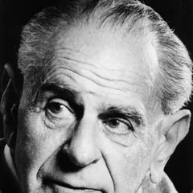
Karl Popper, 1902 to 1994
A philosopher who decided that a theory which explains everything explains nothing.
His life. Born in Vienna to a Jewish family who had converted to Lutheranism. As a teenager he was briefly a committed Marxist, until a demonstration he supported ended with police shooting workers dead. He left Austria in 1937 as the Nazi threat grew, taught in New Zealand through the war, and settled at the London School of Economics.
Where the idea came from. He was in Vienna in the 1920s, surrounded by three exciting theories: Einstein's relativity, Marx's history, and Freud's psychoanalysis. He noticed a difference. Freud's followers could explain any behaviour after the fact, and every new case confirmed the theory. Einstein had instead said: go and look at starlight during the eclipse, and if it does not bend, I am wrong. Popper concluded that the strength of a theory is not how much it explains. It is what it forbids.
What he gave us.Falsifiability. A claim is scientific only if some possible observation could prove it false. This is why your PSY1081 book says you never prove H1, you only fail to reject H0, and it is the exact reason the Personality book is so hard on Freud.
The uncomfortable bit. Real science is messier than his rule. Scientists rarely abandon a good theory on one bad result; they question the measurement first, and often rightly. Strict falsification would have killed several theories that later turned out to be correct.
Where you meet him. The scientific method, Part 1. Also behind every "this theory cannot be tested" criticism in PSY1080.
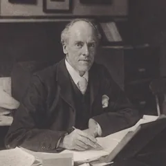
Karl Pearson, 1857 to 1936
He gave us the correlation coefficient, and he built the maths to serve a cause that should disturb you.
His life. English, educated at Cambridge in mathematics, then law, which he hated. He changed the spelling of his own first name from Carl to Karl, reportedly out of admiration for Karl Marx. He founded the first university statistics department in the world, at University College London.
Where the method came from. He worked with Francis Galton, Darwin's cousin, who wanted to measure heredity: do tall fathers have tall sons, and can ability be inherited? To answer that you need a number for how strongly two things vary together. Pearson supplied it. The correlation coefficient was not invented to study psychology. It was invented to study inheritance, in the service of improving the human stock.
What he gave us.Pearson's r, which you will run in SPSS. The chi-square test. The histogram, the standard deviation as a term, and much of the apparatus of modern statistics.
The uncomfortable bit. Pearson was an open and committed eugenicist who held the chair Galton endowed, founded a journal called the Annals of Eugenics, and wrote in explicitly racist terms about Jewish immigration. In 2020 University College London removed his name from a building and a lecture theatre. His formulas are sound and you should use them. His purpose in building them is part of the history of the discipline.
Where you meet him. Quant Methods Book chapters 4 and 5. The Which Test? tool.
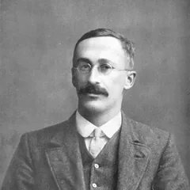
William Sealy Gosset, 1876 to 1937
The t-test was invented in a Dublin brewery by a man who was not allowed to publish under his own name.
His life. English, trained in chemistry and maths at Oxford, and in 1899 he took a job as a brewer at Guinness in Dublin. He spent his whole career there and eventually became head brewer. He was by all accounts a modest and generous man who got on with everybody, including Fisher and Pearson, who could not stand each other.
Where the method came from. A brewery cannot test thousands of batches. Gosset had to decide whether this year's barley was better than last year's from tiny samples, sometimes only a handful. The statistics of the day assumed large samples and fell apart on small ones. So he worked out the distribution that small samples actually follow, partly by brute force, writing numbers on cards and shuffling them thousands of times.
What he gave us. The t-distribution and therefore the t-test, which is the test behind both analysis tasks in your Assignment 1. The reason it is called Student's t is that Guinness forbade its staff from publishing, having previously lost trade secrets that way. So when his paper appeared in 1908 he signed it "Student". One of the most used tools in science is named after a pseudonym forced on a brewer by his employer's lawyers.
The uncomfortable bit. There genuinely is not one, which makes him a rarity on this page. If anything he is under-credited, because Fisher developed his work and got most of the attention.
Where you meet him. Quant Methods Book chapters 6 and 7. Every time SPSS prints a t.
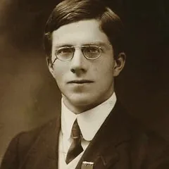
Ronald Fisher, 1890 to 1962
The .05 line comes from this man, and so does an argument about a cup of tea.
His life. English, with eyesight so poor he was taught mathematics without paper, which is said to have given him an extraordinary ability to think geometrically in his head. He spent fourteen years at Rothamsted, an agricultural research station, working out which fertiliser made crops grow better.
Where the method came from. Farming is the perfect laboratory for a statistician, because fields vary, weather varies, and you only get one harvest a year. From that he invented the designed experiment: randomly assign treatments to plots, control what you can, and use statistics to judge the rest. The famous story is the lady tasting tea. A colleague claimed she could tell whether the milk went into the cup before or after the tea. Instead of arguing, Fisher designed a test on the spot: eight cups, randomised, and how many she would need to get right before chance stopped being a credible explanation. That is the significance test, invented over afternoon tea.
What he gave us.Randomisation, the null hypothesis as something you test, ANOVA, and the .05 convention, which he suggested simply as a convenient line and which hardened into a rule he never intended.
The uncomfortable bit. Substantial. He was a lifelong eugenicist and held the Galton chair after Pearson. He also spent his later years arguing publicly that the link between smoking and lung cancer was not causal, possibly reflecting a constitutional difference instead, while consulting for the tobacco industry. The man who taught the world how to test a causal claim got the most important one of his lifetime wrong.
Where you meet him. Null & p-values, the whole tab. Quant Methods Book chapter 2.
Jerzy Neyman
Jerzy Neyman and Egon Pearson
Type I and Type II errors come from these two, and Fisher spent decades attacking them for it.
Their lives.Neyman was Polish, born in what is now Moldova, and lived through war, revolution and a spell in prison before building a career in London and then California. Egon Pearson was Karl Pearson's son, and inherited his father's department, which cannot have been comfortable.
Where the method came from. Fisher's test told you whether a result was surprising. Neyman and Egon Pearson asked a harder question: what should you actually do? If you are going to make a decision from data, you will sometimes be wrong, and there are two different ways to be wrong. You can act as though there is an effect when there is not, or miss one that is really there. Once you name both, you can see that they trade off, and that you must choose your acceptable risk in advance.
What they gave us.Type I and Type II errors, alpha set before the study, the alternative hypothesis as a formal thing, and statistical power. Essentially the whole decision framework in your Null & p-values tab.
The uncomfortable bit. What you are taught is a mashup of two incompatible systems. Fisher's p-value, as evidence to weigh, was bolted onto Neyman and Pearson's fixed-alpha decision rule, and the two men despised each other's approach. Fisher called their framework mechanical and unsuited to science. The confusion students feel about what p really means is not your failing; it is a genuine seam in the subject.
Where you meet them. Null & p-values, section 11. Quant Methods Book chapter 2.
Jacob Cohen, 1923 to 1998
He spent forty years telling psychologists that p-values were not enough, and was mostly ignored until after he died.
His life. New York. He came to research through clinical psychology rather than mathematics, which shaped everything: he cared about whether findings meant anything for real people, not whether the algebra was elegant.
Where the method came from. In 1962 he did something nobody had bothered to do. He took a year of a major psychology journal and worked out, study by study, whether those studies had enough participants to detect the effects they were looking for. The answer was mostly no. The average study had roughly a coin-flip chance of finding a real medium-sized effect. The field was publishing confident conclusions from studies that were too small to support them.
What he gave us.Statistical power as a practical idea, and effect size, including Cohen's d, which you must report in Assignment 1. The rough guide of 0.2 small, 0.5 medium, 0.8 large is his, and he was always uneasy about it being used as a rule. In 1994 he published a paper with the magnificent title The Earth Is Round (p < .05), arguing that the ritual of significance testing had replaced thinking.
The uncomfortable bit. Not about him, about the rest of us. He identified the exact problem behind the replication crisis in 1962, kept saying it for four decades, and the field only acted after 2011 when high-profile findings started collapsing. His own benchmarks have also become the lazy rule he warned against.
Where you meet him. Null & p-values, sections 9 and 14. Every time your assignment asks for an effect size.
The surnames on your SPSS output
Levene, Shapiro, Wilk, Mann, Whitney, Wilcoxon. These are not technical terms. They are just people.
Why this matters. SPSS output looks forbidding partly because it is full of words that look like jargon but are simply somebody's surname. Once you know that, half the menace goes out of it.
Levene's test.Howard Levene, an American statistician. His test asks one question: do your two groups have roughly the same spread? That is all. It decides which row of the t-test output you read.
Shapiro-Wilk.Samuel Shapiro and Martin Wilk, who published it in 1965. It asks whether your data are roughly normally distributed. Remember the direction: a p above .05 is the good news here, because it means normality is not rejected.
Mann-Whitney U.Henry Mann and Donald Whitney, 1947. Whitney was Mann's doctoral student. It is the rank-based alternative to the independent t-test, for when your data will not behave.
Wilcoxon signed-ranks.Frank Wilcoxon, a chemist working for a chemical company, who published the test in 1945 in a three-page paper. He and Mann and Whitney arrived at closely related ideas independently, which is why the two tests feel like siblings.
Bonferroni.Carlo Emilio Bonferroni, an Italian mathematician. His correction is the simple fix for running many tests at once: divide your alpha by the number of tests, so twenty tests at .05 become .0025 each. That is the formal answer to the p-hacking arithmetic.
The pattern worth noticing. Several of these were working for industry, not universities. Gosset was brewing, Wilcoxon was doing chemistry. Applied problems with small messy samples produced a surprising amount of the statistics you now use.
Where you meet them. SPSS Guide. Which Test? Quant Methods Book chapters 6 and 7.
Virginia Braun and Victoria Clarke
They wrote one paper explaining how to do thematic analysis properly, and it became one of the most cited papers in psychology.
Their lives. Both are living researchers, which makes them unusual on this page. Virginia Braun works in Auckland, New Zealand; Victoria Clarke works at the University of the West of England in Bristol. They met when Clarke was a doctoral student, and both come from critical and feminist psychology rather than the mainstream.
Where the method came from. Qualitative researchers were analysing interview data by looking for themes, but there was no agreed account of how to actually do it. Papers would say themes "emerged from the data", as though the researcher had not been involved. Braun and Clarke found that students were given a method with no instructions, and that the vagueness let poor work hide. So in 2006 they wrote the instructions: six phases, stated plainly.
What they gave us.Thematic analysis in six phases: familiarise yourself with the data, generate codes, construct themes, review them, define and name them, write up. This is the method behind your Assignment 4.
The uncomfortable bit. Their own complaint, which is worth quoting. People started treating the six phases as a mechanical recipe and still writing that themes "emerged". They now insist on calling it reflexive thematic analysis, because the researcher's own position actively shapes the themes. Themes do not emerge. You construct them. Writing "themes emerged" in your A4 is the single easiest way to show you have not read them properly.
Where you meet them. Part 3 qualitative material, and Assignment 4.
Brian Nosek, born 1973, and the replication crisis
He organised hundreds of researchers to check whether psychology's findings were true. The answer was uncomfortable.
His life. American, at the University of Virginia. He co-founded the Center for Open Science in 2013. He is the nearest thing this page has to a current figure, and the events described here happened while you were an adult.
Where it came from. Around 2011 psychology had a very bad year. A respected journal published a paper claiming evidence that people could sense future events, using completely standard methods, which raised an obvious question: if the normal methods can produce that, what else have they produced? In the same period a prominent social psychologist was found to have fabricated data across dozens of papers. Nosek's response was not to argue, but to test it. The Reproducibility Project had teams repeat 100 published psychology studies as faithfully as possible.
What they found. Roughly a third to a half of the findings replicated, depending on how you count, and effects that did replicate were on average about half the size originally reported. Many of the originals had been significant at p < .05.
What it gave us.Pre-registration, where you commit to your hypotheses and analysis before collecting data. Registered reports, where journals accept a study on its design before the results exist. Open data and materials. Bigger samples. This is the single biggest change in how psychology works in your lifetime, and you are being trained inside it.
The uncomfortable bit. Failing to replicate does not prove the original was wrong; studies differ in samples, settings and skill, and the original authors often argue so with some justice. The deeper problem is that nobody knows which findings in the older textbooks are safe, and some of what you are taught in PSY1080 will not survive.
Where you meet him. Null & p-values, section 14.
Picture credits (6)
Every portrait here is in the public domain or under a free Creative Commons licence, taken from Wikimedia Commons. Author and licence are listed for each, as those licences require. People with no freely licensed photograph keep their initials instead.
Ronald Fisher · Unknown authorUnknown author · Public domain · source
William Sealy Gosset · User Wujaszek on pl.wikipedia · Public domain · source
Karl Pearson · Unknown authorUnknown author · Public domain · source
Jerzy Neyman · Konrad Jacobs, Erlangen, Copyright is MFO · CC BY-SA 2.0 de · source
Karl Popper · Franz Barta · No restrictions · source
Do the analysis · the idea everything rests on
The Null and the p-value
plain Englishworked exampleswhy it matters
The five-minute version
A p-value is how often pure luck would hand you a gap as big as the one you found.
Analogy
Take forty strangers, split them into two piles at random, do nothing to either, and measure them. The piles still differ slightly. They always do. p asks whether your gap is bigger than that everyday wobble.
Example
A made-up revision-app study returns p = .021. Read it as: if the app did nothing at all, a gap this big would turn up about 2 times in 100. Rare, so you stop believing "the app does nothing".
The line
.05, which is 5 times in 100. Under it you reject the null. Over it you cannot rule out luck.
Big mistake
Saying "p = .02 means there is a 98% chance my effect is real". It does not. p is the chance of your data if nothing were going on, not the chance that nothing is going on.
Check
Levene's test comes back p = .65. Is that good news or bad news? Good. On assumption checks a big p means nothing is wrong, which is the opposite of how you read your main test.
How to use this
Sections 1 to 4 use no jargon at all. Read just those and you will understand the whole thing.
Section 5 is the translator. Every posh word with what it actually means. Come back to it whenever a lecture or a guide loses you.
Sections 6 to 12 add the detail you need in order to write it up properly.
Sections 13 and 14 answer "why does this matter". First for your own Assignment 1, then for psychology as a whole.
Where this sits. This is the one idea, slowly. If you want it as taught, go to Classes 5; as theory with a quiz, Quant Methods Book chapter 2; as SPSS clicks, SPSS Guide.
1. Start here. No jargon at all
Forget every word you have heard about this. Here is the actual idea.
You try something new with one group of people.
Another group does not get it.
At the end, the new group scores 4 marks higher.
One question mattersIs that 4 marks real, or did it just happen?
Because gaps happen by accident all the time.
Split any 30 people into two random groups.
Measure anything you like. Height, mood, spelling.
One group will come out slightly ahead.
That gap means nothing. It is just how people vary.
So before you believe your 4 marks, you have to rule out luck. That is the whole topic. Everything else is just the method for doing it.
2. How you rule luck out
You cannot prove the 4 marks are real. Nobody can. You can only show that luck would almost never give you a gap that big.
So you do something that feels upside down.
You start by assuming it WAS just luck.
Then you work out how often luck alone would produce a 4-mark gap.
If luck would do that often, you have nothing.
If luck would almost never do it, then "it was just luck" stops being believable.
That is it. That is the whole method.
3. The number
The "how often would luck do this" number is called p. Read it as a count out of 100.
p
Say it out loud like this
What you think
.50
Luck would do this 50 times in 100.
Nothing here at all.
.20
Luck would do this 20 times in 100.
Still completely ordinary.
.03
Luck would do this 3 times in 100.
Luck is starting to look like a weak excuse.
.001
Luck would do this once in 1,000.
Blaming luck now looks silly.
The bit that catches everyoneA SMALL p is the exciting one. Small sounds like weak, so it feels wrong. But small means luck hardly ever does this, and that is exactly what you wanted to show.
4. Where the line is
Psychology draws its line at 5 times in 100. That is written as .05.
Under the line you reject the null. Careful with the words: this means the data would be surprising if nothing were going on, not that there is a 95% chance your effect is real. Section 9 below explains why that difference matters.
Over the line you fail to reject the null. You cannot rule out luck, which is not the same as showing there is no effect.
There is nothing magic about 5 in 100. Someone chose it a long time ago and it stuck.
You now understand itAssume it was luck. Work out how often luck would do this. If the answer is under 5 in 100, stop blaming luck. Everything from here on is names and detail.
5. The posh words, translated
You already know all of these ideas. This table just tells you what people call them. Come back to it whenever a guide or a lecture loses you.
What you will hear
What it actually means
The null hypothesis, or H0
"It was just luck." The boring explanation you are trying to knock down.
The alternative hypothesis, or H1
"Something real is going on." Your actual hunch.
The p-value
How often luck alone would give you a gap this big.
Alpha, or the .05 level
The line. How rare counts as rare enough.
Statistically significant
Under the line. Luck is a poor explanation. Nothing more than that.
Reject the null
"I no longer believe it was just luck."
Fail to reject the null
"I cannot rule out luck." It does NOT mean "there is no effect".
Type I error
You said it was real. It was luck. A false alarm.
Type II error
It was real and you missed it. Usually because you had too few people.
Effect size, or Cohen's d
How big the gap is. p only tells you how surprising it is.
Two-tailed
You did not predict which group would come out ahead.
One-tailed
You did predict it, and you said so before you looked.
Power
Whether your study had enough people to spot a real effect.
The population
Everyone you are trying to draw a conclusion about, not just the people you tested.
If a sentence loses youSwap the posh words for the right-hand column and read it again. "We rejected the null at the .05 level" becomes "we stopped believing it was just luck, using the 5-in-100 line". Same sentence, no fog.
6. The courtroom. This is the one to remember
A criminal trial works exactly the same way, and if you can hold this analogy you can always reconstruct the logic.
In court
In your analysis
The defendant is presumed innocent. That is the starting position, held whether or not anyone believes it.
H0: there is no difference. You start here by default.
The prosecution presents evidence.
You collect your data and run the test.
The jury asks: how likely is this evidence if the defendant were innocent?
The p-value asks: how likely is this data if H0 were true?
Evidence that would be very unlikely from an innocent person means: guilty beyond reasonable doubt.
A small p means: reject H0.
Weak evidence gives not guilty, which is NOT the same as proven innocent.
A large p means fail to reject H0, which is NOT the same as proving there is no effect.
"Beyond reasonable doubt" is a chosen threshold, not a measurement.
Alpha of .05 is a chosen threshold, not a measurement.
The single most useful sentence on this pageA verdict of "not guilty" does not mean the person did not do it. It means the evidence was not strong enough. Failing to reject the null does not mean there is no effect. It means your study did not find enough evidence of one, which may be because there is none, or because your sample was too small to see it.
7. Writing H0 and H1 for your own study
H0, the null hypothesis. There is no difference, or no relationship, in the population. Any gap you see in your sample is just the luck of who ended up in which group.
H1, the alternative hypothesis. There is a difference or relationship. This is usually what you actually believe, which is why it feels back to front to spend the whole analysis testing the other one.
Directional (one-tailed) H1 predicts which way: the mindfulness group will score HIGHER. Non-directional (two-tailed) H1 just predicts a difference in either direction. Two-tailed is the default and the safer choice, and you must decide before you look at the data.
You never prove H1. You reject H0, or you fail to reject it. Writing "this proves mindfulness works" is the single most common way to lose marks here.
Study
H0 (what you test)
H1 (what you suspect)
A1 Task 1: mindfulness training vs control, measured on the SART
There is no difference in mean SART performance between the mindfulness group and the control group.
There is a difference in mean SART performance between the two groups. (Directional version: the mindfulness group performs better.)
A1 Task 2: phone-checking in the cinema, under 30s vs over 40s
There is no difference in the mean number of phone checks between the under-30 group and the over-40 group.
There is a difference in the mean number of phone checks between the two age groups.
Does sleep relate to exam marks?
The correlation between hours of sleep and exam mark is zero in the population.
There is a relationship between hours of sleep and exam mark.
Does a new painkiller beat a placebo?
There is no difference in mean reported pain between the drug and placebo groups.
The drug group reports less pain.
Notice the pattern. H0 is always boring, always specific, and always about the population rather than your sample. That is what makes it testable: you can calculate exactly what the world should look like if it were true.
8. The careful definition, now that you have the idea
The careful version. The p-value is the probability of obtaining a result at least as extreme as the one you got, assuming the null hypothesis is true.
The plain version. Imagine a world where the thing you are testing genuinely does nothing. Run your study 100 times in that world. How many of those 100 runs would throw up a gap as big as yours, purely by chance? That count, as a proportion, is p.
So p = .03 means: in a world where nothing is going on, you would see a gap this big about 3 times in 100. That is rare enough to make you doubt the "nothing is going on" assumption.
And p = .32 means: you would see a gap this big about 32 times in 100 by sheer luck. That is completely unremarkable, so you have no reason to abandon the assumption.
The direction catches everyone out. A small p is evidence against the null. It feels backwards because small usually sounds like weak. Here, small means surprising, and surprising is what undermines the assumption.
Try it: what "extreme" means
9. Five things p does NOT mean
Every one of these appears in student essays, and most of them appear in newspapers. If you can avoid all five you are ahead of a lot of published researchers.
The misreading
What is actually true
"p = .03 means there is a 3% chance the null is true."
No. p is the probability of the data given the null, not the probability of the null given the data. Those are different questions, like confusing "how likely is this evidence if he is innocent" with "how likely is he innocent given this evidence".
"p = .03 means there is a 97% chance the effect is real."
No, for the same reason. p says nothing about the probability that your hypothesis is correct.
"p < .001 means the effect is huge."
No. p tells you how surprising the result is, not how big it is. A tiny, useless difference becomes highly significant if your sample is big enough. Size is what effect size (Cohen's d, r) is for, which is exactly why you must report it.
"p = .06 means there is no effect."
No. It means you did not clear the line you set in advance. The difference between p = .049 and p = .051 is practically nothing, yet one is called significant and the other is not. Treat .05 as a convention, not a law of nature.
"A significant result means the finding will replicate."
No. One significant result in one sample is weak evidence on its own. Whether it holds up is settled by replication, not by the p-value.
10. Three examples with real numbers
The coin. H0: this coin is fair. You flip it 10 times and get 10 heads.
If the coin really were fair, the chance of 10 heads in a row is about 1 in 1,024, so p is about .001.
That is so surprising under "the coin is fair" that you stop believing it. You did not prove the coin is biased; you decided the alternative explanation is now more comfortable than the coincidence.
Flip it 10 times and get 6 heads and p is about .75. Completely ordinary. No case to answer.
The penalty taker. H0: this player is no better than the squad average of 70%.
He scores 8 out of 10. Good, but 8 out of 10 happens often enough by luck for a 70% taker, so p is large and you cannot claim he is better.
He scores 88 out of 100. The same percentage gap, but now it is very hard to get by luck, so p is small and you can.
This is the lesson about sample size in one example. The same size of effect is unconvincing in a small sample and convincing in a large one. Nothing about the player changed; your evidence did.
A made-up study, so the numbers cannot be mistaken for yours. H0: a revision app makes no difference to exam scores. Thirty students per group.
SPSS returns t(58) = 2.41, p = .021.
Read it as: if the app truly did nothing, you would see a gap this big about 2 times in 100. That is rare, so you reject H0.
You then write: there was a statistically significant difference, in this direction, of this size (Cohen's d), and here are the group means and standard deviations.
And you add the honest caveat: this is one sample, there is a 5% risk you are reporting a false alarm, and significance is not the same as importance.
Every number on this page is inventedThe figures here exist to show you how to read a p value, and they are deliberately from studies that are not yours, with different sample sizes. Never copy a number from this page into your assignment. Your own results come from your own SPSS output and from nowhere else.
11. What the .05 line costs you
It is a convention, not a discovery. Fisher suggested 1 in 20 as a convenient line and it stuck. There is nothing magic about it, and some fields use .01 or .001.
What you are actually choosing. Alpha is the risk of a false alarm you are willing to accept. Setting alpha at .05 says: I accept that, in a world where nothing is going on, I will wrongly claim an effect about 5% of the time.
Type I error, the false alarm. Rejecting H0 when it was true. Its probability is alpha.
Type II error, the miss. Failing to reject H0 when there really was an effect. Usually caused by too small a sample.
They trade off against each other. Make alpha stricter (.01) and you get fewer false alarms but more misses. Make it looser and the reverse. You cannot reduce both at once by moving the line; the only way to reduce both is a bigger sample.
Set it before you look. Choosing alpha, or switching from two-tailed to one-tailed, after seeing your data is not analysis. It is choosing the finish line once you know where the runner stopped.
Try it: the Type I / Type II trade-off
12. Reading it off SPSS without tripping up
"Sig. (2-tailed)" IS your p-value. That is the column you want.
SPSS prints .000, which is never true. A probability is never exactly zero. Report it as p < .001. Writing "p = .000" is a small error that markers notice every time.
Report exact p otherwise. "p = .021", not "p < .05". APA wants the actual number, to three decimal places, with no leading zero before the point.
Halving for one-tailed. SPSS gives two-tailed by default. If you predicted a direction and the result went that way, you may halve it, but say that you did, and only if you committed to the direction beforehand.
Check the right row. In the independent-samples t-test output, Levene's test decides whether you read "equal variances assumed" or "equal variances not assumed". Reading the wrong row gives you the wrong t, df and p.
p is not the whole sentence. A result needs the test, the comparison, the direction, then t, df, p and the effect size, plus the means and standard deviations. p on its own tells the reader almost nothing.
13. Why this matters for Assignment 1
Both analysis tasks turn on this. Tasks 1 and 2 each compare two independent groups, and the assumption checks decide which test you actually run: an independent-samples t-test when normality holds, Mann-Whitney U when it is clearly violated or outliers make the t-test inappropriate. Unequal variance on its own is not a reason to switch, it just means reading the "equal variances not assumed" row. Check each dataset separately and do not assume both tasks use the same test.
Part (a) of each task is the hypotheses. You cannot bluff this. You have to write H0 and H1 properly and say whether H1 is directional. That is marks available before you open SPSS.
Part (f) is the decision. Reporting the main analysis means stating the test, the statistic, df, the exact p, the effect size, and then a sentence in English saying what it means. If you say "this proves" or "p = .000" or "there is a 2% chance the null is true", you lose marks on an otherwise correct analysis.
The assumption checks exist for this reason. Shapiro-Wilk, boxplots and Levene's test are not box-ticking. If the assumptions fail, the p-value the t-test gives you is not trustworthy, and you should be running Mann-Whitney U instead.
It protects you when the result is null. If one of your tasks comes out non-significant, that is a perfectly good result. Write it as "there was no statistically significant difference", discuss power and sample size as a limitation, and you will do better than someone who tries to spin it.
The sentence to have ready"An independent-samples t-test compared [DV] between [group 1] and [group 2]. There was a statistically significant difference, t(48) = 2.41, p = .021, d = 0.78, with [group 1] scoring higher (M = __, SD = __) than [group 2] (M = __, SD = __)." Swap in your numbers. If p is above .05, change it to "There was no statistically significant difference" and keep everything else.
14. Why psychology cares so much about this
This is not just an assignment hoop. Over the last fifteen years the misuse of p-values has become one of the biggest controversies in the discipline, and knowing why gives you something genuinely worth saying in a discussion section.
The replication crisis. Large projects set out to repeat well-known published psychology findings and found that a substantial proportion did not come out the same way the second time. Many of the originals were significant at p < .05. Being significant once turned out to be much weaker evidence than the field had assumed.
p-hacking. If you test enough variables, drop enough awkward participants, or keep collecting data until the p drops below .05, you will eventually get a significant result out of nothing at all. With alpha at .05, roughly 1 in 20 tests of pure noise comes out significant by definition. Run twenty analyses and expect one false alarm.
Publication bias. Journals have historically preferred significant findings, so the studies that found nothing often went unpublished. That makes the published literature look more certain than reality, because the misses are invisible.
The fixes you should know by name.Pre-registration, committing to your hypotheses and analysis before collecting data, which removes the option of moving the goalposts. Reporting effect sizes and confidence intervals, so readers see how big the effect is, not just whether it cleared a line. Replication treated as real science rather than as unoriginal. And adequate power, meaning samples large enough to find an effect if it exists.
Why it matters outside the lab. These are the statistics behind whether a therapy is offered, whether a drug is licensed, whether an education policy is rolled out. A false alarm means real people get a treatment that does nothing; a miss means a treatment that works never reaches them.
What to carry awayThe p-value answers one narrow question well: would a result like this be surprising if nothing were going on? It does not tell you the effect is real, large, important or repeatable. Treat it as one piece of evidence alongside the effect size, the confidence interval, the quality of the design and whether anyone has reproduced it.
Check yourself (7 questions)
1. A study reports p = .04. What does that mean?
p is the probability of the data given the null, never the probability of the null given the data.
2. You get p = .40. The correct conclusion is:
Like a "not guilty" verdict, it means the evidence was insufficient, not that innocence was proved.
3. A very small p-value tells you the effect is:
Size is the job of the effect size, such as Cohen's d. A trivial difference can reach p < .001 in a big enough sample.
4. The penalty taker scores the same percentage in 10 attempts and in 100 attempts. Why is only the second significant?
The effect is identical; the evidence is not. Sample size drives how surprising a given gap is.
5. SPSS prints "Sig. (2-tailed) = .000". You should write:
A probability is never exactly zero; SPSS has simply rounded. Report p < .001.
6. Making alpha stricter, from .05 to .01, means:
The two trade off. Only a larger sample reduces both at once.
7. Running twenty separate tests on noise with alpha at .05, you should expect roughly:
Alpha of .05 means a 1 in 20 false alarm rate by definition. This is the arithmetic behind p-hacking.
Learn the content · decision tool
Which Test?
answer 3 questionsget the test + how to report it
How to use this
Answer the questions about your study and this gives you the right test, its assumptions, the SPSS menu path, and the sentence to write it up in APA. It follows exactly the logic from Class 5: the data, the question, the design. Use it whenever you are setting up an analysis for an assignment.
The whole module on one page
Mind Map
click any boxPSY1081
How to use this
Read it left to right. The module sits on the left, its main areas branch off it, and the detail hangs off each of those.
Click any box. A plain explanation of that piece, and where it comes up in the assignments, appears underneath the map.
Three parts, one picture. Part 1 (method and ethics), Part 2 (quantitative and stats) and Part 3 (qualitative) are all on the same map, so you can see how they connect.
Click a box in the map to see what it covers.
Every term you need, defined plainly
Glossary & Flashcards
search or test yourselfPSY1081
How to use this
Glossary tab. Type in the search box to find a term fast, or filter by topic with the grey buttons.
Flashcards tab. You get the term, you say the definition out loud, then you click the card to check. Shuffle before each round.
This is the vocabulary of the module. Most of the confusion in the live classes is vocabulary, not maths, so twenty minutes here is worth an hour of re-reading slides.